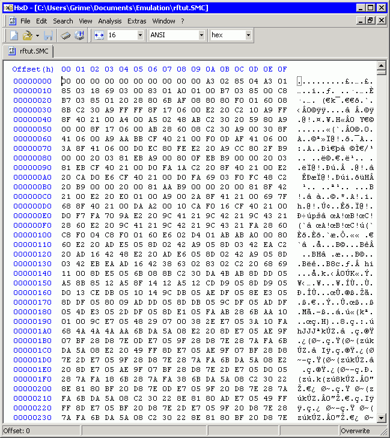
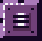
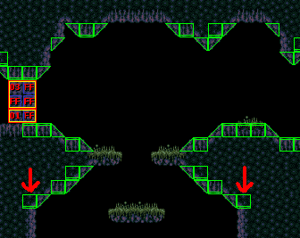

HOW TO EDIT SUPER METROID
Link color meanings: ANCHOR, LOCAL, EXTERNAL.
▲ GETTING READY TO ROM HACK ∨
Before you even do anything at all, you should make a ROM hacking folder of some kind. The way that it's organized all comes down to personal preference. Editing Super Metroid will almost always eventually involve creating and editing a lot of small files, so it's worth considering. A simple way to do it would be to just create a "ROM hacking" folder in your "My Documents" folder, and then add (or move) folders to \ROM hacking\ as needed, such as the \SMILE RF\ folder.
Download the correct Super Metroid ROM.
Google "Super Metroid (JU)[!]" and look at the first few results. It will be a .SMC file that is exactly 3,072 KB (don't worry if the filesize is 3,073 KB; that just means that the ROM has a header, which is easily removed). Once you've confirmed that you have a working copy of the correct Super Metroid ROM, you should keep a completely unedited 'master copy' of it somewhere so that you don't have to re-download the file if you accidentally destroy it later.
Download SMILE RF and make sure everything works.
If you've never used SMILE before, or you just want to learn everything fresh over again, you should use the offline version of SMILE RF 3.0.80 for now, which is the version that this guide was written for. Future versions of SMILE will probably look different after more features are added, so the offline version exists to keep this guide from becoming outdated as a teaching tool (it also takes the pressure off of me to keep this page updated regularly—phew). Keep an untouched 'master copy' of SMILE_RF_3.0.80_offline.zip as well.
SMILE RF might crash in Windows 10, but this can be fixed. If SMILE RF won't open because of a missing MSINET.OCX file (which is needed for the online functionality), try following these steps:1.) Place MSINET.OCX (included in SMILE RF .zip if you download it from Scyzer's homepage) in "\Windows\System32\" folder. If you are running a 64Bit system, also place it in "\Windows\Syswow64\".
2.) Click Start, search for "CMD", then right-click and Run As Administrator. You must run as an admin or it will not work.
3.) Register the file by typing "regsvr32 C:\Windows\System32\MSINET.OCX" OR "regsvr32 C:\Windows\Syswow64\MSINET.OCX", depending on where you placed the file.
If your firewall or anti-virus has problems with SMILE RF, it's probably because of the new version checks and the bug report feature. Making SMILE RF a firewall/anti-virus exception should fix the problem. The offline version of 3.0.80 won't have any of these issues, and it also doesn't require (or include) MSINET.OCX.
Also consider downloading this guide if you think you'll find yourself coming back here often! It'll save bandwidth for you and us both. All you have to do is extract the contents of SMMM_3.0.80.zip somewhere on your computer, then open any of the included .HTML files to view this guide locally from your computer whenever you want, without the need of an internet connection.
SMILE RF's folders and files.
You won't need to bother with most of this, but it's still good to know what everything does.
\SMILE RF\: main program folder. Contains the SMILE RF.exe file that opens SMILE itself, and also the Files folder, which contains everything else needed by SMILE to work properly.
\Files\Clipboard\: default save location of the .CLP (clipboard) files that SMILE creates when you click the "Save Clip" button in the Room MDB tab (#26). This folder is empty by default.
\Files\Custom\: this folder allows you to work on multiple hacks without needing to create a copy of the entire \SMILE RF\ folder for each hack. The "Rom_Name" folder contains a duplicate set of the Data, Enemies, Menus, PLM and TestRoom resource folders. Any files that are missing from these duplicate resource folders will be read from their default locations in the Files folder. Rom_Name only exists to demonstrate how the Custom folder works; you can delete Rom_Name if you want, or give it the same filename as another hack. Example: if you're working on a different hack called "Different_New_Hack.SMC", you'd rename the Rom_Name folder to "Different_New_Hack". After that, opening Different_New_Hack.SMC will make SMILE RF use the contents of the Different_New_Hack folder. You can have as many new hack folders like this as you want. You can also have multiple ROMs read from the same folder by using an underscore in the ROM filename (e.g., "ROM-FILENAME_123.SMC" would use the SMILE RF resources from "\Custom\ROM-FILENAME\", but "ROM-FILENAME123" would not).
\Files\Data\: the .TXT files in this folder determine most of SMILE RF's drop-down menu options.
\Files\Enemies\: the .TXT files in this folder make up the contents of the "Enemy Info" window in SMILE RF's enemy editor. The .GIF files are used as the preview images in the enemy selector, and also throughout rooms in level editor.
\Files\Images\: BTS icon and door editor button graphics for SMILE RF. The "Metbuddy" folder is for Metroid buddy.
\Files\Menus\: the .VAL (value) files in this folder are how most of SMILE RF's settings are stored. The lone .RFTT file is used by the mode 7 scene editor.
\Files\PLM\: the .TXT files in this folder make up the contents of the "PLM Info" window in SMILE RF's PLM editor. The .GIF files are used as the preview images in the PLM selector, and also throughout rooms in the level editor.
\Files\Temp\: SMILE RF creates and overwrites several different types of files in this folder as needed whenever QuickMet is used. This folder is empty by default, and the files that SMILE RF creates in it can be deleted.
\Files\TestRoom\: the three files in this folder are needed for QuickMet to work.
\SMILE RF\Changes.TXT: previous versions and changes made to SMILE RF over time.
\SMILE RF\MSINET.OCX: needed by Windows 10 for SMILE RF's online features to work.
\SMILE RF\RFHelp.TXT: hotkey list and explanations of the main menu options.
\SMILE RF\Files\Lunar Compress.DLL: used to read and write compressed data (level data, tileset data, palettes, etc.)
\SMILE RF\Files\SMILE.DLL: used by the tile table and level editor to draw transparent sections, BTS lines, etc.
\SMILE RF\Files\SMILE.INI: all SMILE RF settings that aren't QuickMet settings or .VAL settings are kept in this file.
\SMILE RF\Files\Xkas.EXE: used by SMILE RF to apply ASM patches.
Set up QuickMet for easy room testing.
QuickMet is a feature in SMILE that lets you test rooms that you're working on without having to go through all of the options and start from the beginning of the game each time. The very first time you press Ctrl+E in SMILE RF's Level Editor, a file selection window will pop up. Choose the .EXE file for your preferred SNES emulator, and now the next time you press Ctrl+E, the emulator will launch. After the Nintendo logo fades away, Samus will appear wherever your mouse cursor was at in the room when you pressed Ctrl+E. The QuickMet settings also allow you to choose which items of Samus has collected and/or equipped, starting energy/ammo counts, and more. You can choose a different emulator later by clicking "Preferences > QuickMet Settings > Emulator Path".
THE INSANELY ABSOLUTE IMPORTANCE OF MAKING REGULAR ROM BACK-UPS
It cannot be stressed enough how important creating regular back-ups of the .SMC file that you're working on is. Seriously. Make regular and frequent ROM back-ups a habit. All you literally have to do to create a back-up ROM is right-click on the .SMC file and select 'copy'. After that, right-click a second time and select 'paste'. That's all. The copies are even automatically numbered for you. Isn't that nice? Back-ups are your friend, and they will spare you so much pain. There is no reason to not make back-ups.
In addition to on your computer, keep back-ups of your hack stored on web servers, extra hard drives, USB thumb drives, email them to yourself, burn them to CDs or DVDs if you need to. You do not want to lose a thousand collective hours of work on a hack because your computer broke and you didn't have a copy of your hacked ROM anywhere else except on your dead computer's hard drive.
IF YOU ARE EVER ABOUT TO APPLY A PATCH OR MAKE AN EDIT THAT YOU ARE EVEN SLIGHTLY UNSURE OF, CREATE A BACK-UP FIRST. Preventing catastrophe is just that easy. If hard drive space is an issue, you can create back-up IPS patches of your hack instead (see IPS patch creation).
Constant experimentation, trial and error, broken ROMs and strange crashes are normal.
It is pretty much impossible to avoid experiencing all of these things and more as you journey through creating your own Super Metroid hack. Constant experimentation especially - you will need to test everything constantly as you're working on it, or you might waste huge amounts of time stepping backwards through your edits to figure out the problem. TEST EVERYTHING, ALWAYS.
Set your hack aside to have fun and experiment on test ROMs occasionally.
Take an unedited copy of Super Metroid to try out ideas on, test patches or hex edits on that you're curious about, and let yourself screw around with no fear of losing any of your work. Learn how it looks and feels to break Super Metroid in horrid ways. After the ROM is destroyed, just delete it and start over again from another copy! If you're ever not sure how something works or what it does, try it out on a test ROM first.
Keep a log of every patch that you use, along with where they write to.
Having a .TXT file with information about your hack is a good habit for many reasons. Use it to keep your ideas, to-do lists, known bugs, places that ASM patches you've applied are writing to, etc. If you're applying an IPS patch and the author doesn't specify where the patch writes to, you should use File Compare to find that information yourself and write it down. This will be necessary if you plan to use a lot of patches in your hack, because many of them write to the same areas of free space by default, which means that you'll sometimes need to change where they write to.
Please report any SMILE RF bugs that you discover!
If you discover a crash or some kind of bug with SMILE RF itself, click "? > Report Bugs / Feedback" and write out a clear description of the error that you experienced. Can the bug be done consistently, or did it only happen once? Is it possible to take a screenshot of the error?
What kind of hack do you want to make? Will it be worth it? Who is your audience?
You should consider all of this now and spare yourself a LOT of possible wasted time later. Is this hobby really for you? Real talk: overwhelmingly, most of the people who try to make a Super Metroid hack have either given up, or they released something they didn't really want to release, and then they gave up. You are probably going to give up. Modifying Super Metroid is not extremely difficult, but it is also not something that you can do fast. You will probably be at this for years if your goal is to make something lastingly notable and polished. Be ready for the possibility of restarting projects repeatedly, being unable to solve problems for weeks or months until you've learned more, and giving up on dream ideas that are impossible to do.
Personal satisfaction is also probably the most important thing there is about this hobby. If you don't like Super Metroid enough to consider working on it as an unpaid, illegal side-career, then you will probably lose the motivation to keep working on your project after awhile. Knowing your audience is also a big deal, because it allows you to scale your expectations.
Do you want to make a hack that tons of people will play and enjoy for years? If so, MAKE YOUR HACK EASY, MAKE YOUR HACK PRETTY, MAKE YOUR HACK WELL. That's all there is to it. You are creating a game, not a hack. The difficulty is in the simplicity of actually sticking to those three simple rules above all else, and not becoming tempted by other ideas later that compromise your initial vision. If your hack is extremely easy for you to play through, then that means it should be about average difficulty for somebody who only played and enjoyed Super Metroid a long time ago, but recently discovered that ROM hacks of it exist.
Do you want to make a hack that challenges veteran Super Metroid players? If so, get rid of any expectations you have about how people will feel about your hack. Almost everyone will simply not like it because it's too difficult, and there is nothing you can do to make them enjoy it or appreciate the amount of time and work you put into it - at the end of the day, you still created something that they do not feel is worth taking their time to play through. This happens because proportionally rewarding the player for accomplishing difficult tasks becomes much harder to do unless you know assembly programming, which means that you just have to hope that the player's personal sense of achievement is enough to keep them interested in your hard game. Almost always, it will not be.
It will probably always be a bad decision to try making a fun hard hack as your first project. Hard hacks are only interesting to veteran players of the game, which is a very small number of people. If that is your intended audience, go for it, but don't expect your hard hack to gain much attention. Difficulty is more often just... difficult, and not that fun.
Are your big ideas actually possible?
Until you know the limits of the SNES, your Super Metroid hack ideas will probably be impossible, or at least very hard to code, and nobody will want to go through the trouble of coding it for you unless they feel that your hack might actually have the potential to successfully release. Understanding the limits of the SNES takes time, but if your ideas are really simple, or if you're willing to use a much more simplified version of your original idea instead, then it becomes much more likely. It'll make things a lot easier on you if you just assume for awhile that none of your ideas will be possible at all (while still confirming with those more knowledgable whether they actually are impossible). Once enough of your ideas have been shot down, you'll start to see why.
ALWAYS REMEMBER that you can come back to it later, because you will absolutely have to.
Don't be discouraged if you have to give up on something because it just doesn't make any sense to you yet. Try again later, maybe even much later. Giving up on something and then un-giving up much later is pretty common. You'll start to lose motivation pretty fast if every attempt to work on a project ends in confusion. Making a complete overhaul like Super Metroid Redesign or Hyper Metroid requires deeply editing many things besides the game's rooms.
If you start feeling overwhelmed with how much work remains on your hack for how little you still know about hacking, then try to give yourself some tunnel vision and do something else that you already know how to for awhile, and get better at that instead. Build up some raw progress and give yourself more incentive to figure the other stuff out. You could probably apply that last bit of advice to life in general, actually. Neat. Have fun.
Ready to start hacking?
If so, you can skip down to part 2, which is the tutorial portion of this guide. Parts 1 and 3 are reference material.
▲ ∧ PART 1: SMILE RF ∨
1.
"ROM" menu.
Open ROM: headered or unheadered NTSC Super Metroid ROMs only (.SMC files).
Save Room: instantly saves currently opened room. Hotkey: Ctrl+S (hotkey only works while "Level Editor" window is in focus). If the room cannot be saved because of level data usage, a pop-up window will tell you how much data you'll need to free up before the room can be saved.
IPS / ASM patch:
Create IPS Patch: creates a .IPS file of your hack, which is what lets other people play it without them having to download your whole ROM.
Apply IPS Patch: applies an existing .IPS file to any Super Metroid ROM that you currently have open in SMILE RF. BE CAREFUL WITH THIS FUNCTION! Applying the wrong IPS to your hack could be extremely difficult to undo if you don't make frequent back-ups. A back-up is automatically created in SMILE RF\Files\Temp\ when you apply an IPS or ASM file with SMILE RF.
Apply ASM: applies an assembly (.ASM) file to your ROM.
Reapply previous patch: automatically reapplies the last .IPS or .ASM file that you used. This option only becomes visible after an IPS or ASM patch is applied, and it's great for quickly and repeatedly testing edits to ASM patches when you're trying to fix bugs.
Header:
Add Header: inserts a 512-byte SMC header at the very beginning of your Super Metroid ROM file.
Remove Header: removes the 512-byte SMC header if it's present. ALWAYS remove the header. It is useless for ROM hacking, and all of the technical information you see later on will be off by 512 bytes if your ROM has a header.
Expand ROM: inserts an extra 32,768 bytes of free space to the very end of your Super Metroid .SMC ROM file, which is mostly used for extra rooms and graphics. This can be done up to 32 times to the ROM, bringing its headerless filesize from 3,072kb to a maximum of 4,096kb (4 megabytes).
If you decide to change the ROM type to ExLoROM, which RF can do, then the maximum becomes 8 megabytes.
Reset Cheksum: fixes the 'bad checksum' message that appears when you first load just about any hacked ROM in some emulators. If you use Snes9X, this means that the loading message will also change from yellow back to white.
File Compare: compares the .SMC file currently open in SMILE RF with another .SMC file of your choosing. If there are any differences between the two files, then a .TXT file is generated that neatly lists every single byte that isn't the same between both files. Can be amazingly helpful with finding and fixing bugs if regular back-ups are kept.
2.
"Tools" menu.
Undo: only undoes changes you've made in the level editor window. Can be done up to 32 times. The undos/redos for the room you're working on will be cleared if you open a different room. Hotkey: Ctrl+Z
Redo: opposite of Undo. Also can be done up to 32 times. The undos/redos for the room you're working on will be cleared if you open a different room. Hotkey: Ctrl+Y
Clear Room Tilemap: erases the whole room, including its layer 2 background if there is one. Only affects the contents of the level editor window. Can be undone if clicked by mistake.
Offscreen PLMs To Screen: this will be needed if you resize a room to make it smaller and leave PLMs behind on screens that no longer exist. Clicking this option instantly moves all unseen PLMs to the upper-left part of the room.
Offscreen Enemies To Screen: moves enemies that have been "cropped out" of the level editor to the upper-left part of the room.
Save Bitmap:
Room: creates a .BMP image of your room. View preferences like Level Tile Size (#), Brightness (#), Scrolls (#) and BTS (#) will be included in the picture if they're switched on. Enemies and PLMs won't appear in screenshots because their graphics aren't actually being read directly from the ROM like level data is. The .BMP file is created in the same folder as the currently opened ROM.
Area (Small): generates a single large .BMP image of an entire area, with the zoom set to smallest (8x8 tile view). The .BMP file is created in the same folder as the currently opened ROM.
Area (Large): like Area (Small), this creates a single, much larger .BMP image of the whole area, with the zoom set to default (16x16 tile view). The .BMP file is created in the same folder as the currently opened ROM.
Map: creates a 512x256 .BMP image of the area's map. The .BMP file is created in the same folder as the currently opened ROM.
Special Editors:
Mode 7 Editor: opens up the Mode 7 Scene Editor, which lets you edit certain tilemaps, such as the title screen.
Message Box Editor: lets you edit the black pop-up text boxes (item names, save prompts, etc.)
3.
"Preferences" menu.
View:
Level Editor Size: how many screens for the level editor to display, which is how much of the room you can see at once while editing. Play around with this until you find a good fit for your monitor's resolution. Screens are those red, green or blue boxes that neatly divide the room. If you don't see them, click "Preferences > View > Layers" and make sure "Scrolls" is checked.
Level Tile Size: this is basically the same thing as Zoom In and Zoom Out in other programs. The default size is 16x16. "8x8 (scroll editor)" is required for changing the colors of the red, green and blue screen colors. Hotkeys: "Home" key to zoom in, "End" key to zoom out. These hotkeys only work while the level editor window is in focus.
Tile Table Size: 16x16 or 32x32 display for the tile table ("Windows > Tile Table").
Layers:
Layer 1: main foreground graphics layer, used for floors, walls, ceilings, doors, etc. Hotkey: F1
Layer 2: optional second graphics layer. Drawn underneath layer 1, usually used for the room's background. Hotkey: F2
BTS: invisible tile-type layer. Determines the physical attributes for each tile in the level editor window (making a block breakable by shooting it, for example). BTS stands for Behind The Scenes, due to its responsibility in making blocks behave the way they should. Hotkey: F3
Scrolls: the red, green or blue squares that outline every screen in the room. To change their color, switch the Level Tile Size to "8x8 (scroll editor)" and click on them. Hotkey: F4 to toggle viewing room screens.
PLMs: room objects that aren't part of the BTS layer, such as items, save stations, all of the door caps that aren't blue, etc. Hotkey: F5
Enemies: hide or unhide all enemies in a room. Hotkey: F6
Show All: unhides any and all of the above layers if they're hidden. Hotkey: F7
Hide All: hides all but Layer 1 and Layer 2 with a single command. Hotkey: F8
Brightness: by default, SMILE RF is set to the lowest brightness level, which is no brightness applied at all. Hotkeys: "Page Up" and "Page Down" keys.
Snap Enemies to Grid: adheres enemy placement to an 8x8-pixel grid so they can be placed on floors, walls and ceilings more easily. It's also sometimes nice to turn this option off so enemies can be placed with exact pixel precision. Hotkey: hold Ctrl while moving an enemy to temporarily reverse this setting.
Move Possessors Together: possessors are enemies made of several pieces. "Pieces" means that multiple copies of the same enemy are needed to complete the whole and make it work properly. The Shaktool that destroys the wall and grants you access to Spring Ball is made up of 7 enemies, for example. Hotkey: hold Alt while moving a possessor to temporarily turn off this setting.
Show Scroll PLM Changes: allows you to set your cursor on a scroll PLM and have the screens it affects, along with the colors used highlighted for you.
Enable Mode 7: enables the viewing and editing of mode 7 rooms, such as the Ceres elevator room.
Palette Format:
TPL (.tpl): any palettes exported by SMILE RF will be in .TPL format, which is used by Tile Layer Pro to edit graphics and colors.
YY-CHr (.pal): any palettes exported by SMILE RF will be in .PAL format, which is used by YY-CHr to edit graphics and colors.
FaTilety (.fpl): any palettes exported by SMILE RF will be in .FPL format, which is used by FaTilety to edit graphics, mode 7 graphics and colors.
QuickMet Settings: QuickMet is used by pressing Ctrl+E anywhere in the level editor. This launches your emulator of choice (if this is your first time using the QuickMet command, you'll get a load-file pop-up, which you'll need to use to browse to your emulator's folder and load your emulator's .exe file). Samus starts with no equipment and 99 energy by default, which you can change through the SRM settings.
Note: when you use QuickMet, Samus will appear exactly in the room where your mouse cursor was placed in the level editor when you pressed Ctrl+E. You'll be doing this a lot. If you accidentally start with Samus trapped in solid rock, or with the camera messes up, just close the emulator and use QuickMet again (the camera works best if Samus appears near the middle of the screen).
SRM Settings: Samus's equipment and vulnerability while testing rooms with QuickMet. Most of this is self-explanatory, and you shouldn't have to mess with any of this if you don't want to. Just choosing an emulator path is enough. The [$####] addresses next to all of the energy and ammunition counts are RAM addresses, which become helpful to know once you start learning assembly (ASM).
NOTE: you may need to delete the "QuickMet.srm" file for changes made to the SRM settings to take effect properly. QuickMet.srm is located in the folder where your emulator's save files are kept, and also SMILE RF\Files\Temp\
The "$0000 --> Add Event / Remove Event" options allow you to have an event trigger for the purposes of testing (such as making the QuickMet recognize that a boss is dead without having to kill the boss). Type an event value into the box, then click the Add Event button to have your value added as an option that you can select from the drop-down menu. Also see room states / events.
Emulator Path: which emulator will be loaded when the QuickMet hotkey (Ctrl+E in the level editor window) is pressed.
Save RAM Path: for emulators that require their .SRM files to be stored somewhere specific, rather than in the same folder as the ROM. By default, the .SRM is saved to SMILE RF\Files\Temp\
Check Unsaved Changes: making edits in the level editor or map editor, then attempting to load a different room will stop you with a pop-up that asks you if you want to save your edits first.
Show Current Room Size: displays and updates the level usage / maximum numbers in the level editor's window title as you edit, instead of only showing up when you save the room.
Auto Focus Windows: bring SMILE RF's other editor windows into focus by simply hovering your mouse cursor anywhere over them, instead of having to click on them.
Always On Top: SMILE RF's windows won't be hidden behind any other programs that you unminimize (restore) or bring into focus.
Auto Save Settings: keeps all of SMILE RF's settings saved for you. Might as well keep this checked, yeah?
Check Updates: any time SMILE RF is opened, it'll check for an update (unless you're using the offline version). If one is found, you'll get a pop-up window that tells you a new version is available, the version number, and an OK / Cancel option to download the new version. To be on the safe side, make a backup copy of your whole SMILE RF folder before you update, in case there are any new bugs or crashes that render the program unuseable.
4.
"Windows" menu. Hides and unhides the various main editor windows.
Level Editor: main editing window for rooms, explained throughout part 2.
Tile Table: available area tiles for use within the level editor.
Map Editor: area maps and room placement.
FX Editor: fog, water, lava, palette blends and other cool stuff.
Tileset Editor: create new tiles to use in the level editor.
Palette Editor: change any of the game's colors (see palette locations).
5.
"?" menu.
About SMILE RF: tells you the current program version and gives a few resource links.
Report Bugs / Feedback: pulls up a simple form that allows you to directly send information to Scyzer if you run into problems with SMILE RF, or have any suggestions on how to improve it. You may need to make SMILE RF an exception to your firewall for this feature to work.
Reset Alert Messages: if you've checked "don't show this again" for any of SMILE RF's warning pop-ups, this will undo that.
Task Log: keeps a history of ROMs opened, room saves, etc. Also displays certain data (such as door or item PLM index searches).
6.
Room list. Click a room ID from this drop-down menu to load any of the game's rooms for editing. Careful not to lose unsaved edits by opening another room! Hotkeys: up and down arrow keys (will only work after clicking on the menu to bring it into focus). Hotkey for neighboring rooms: Ctrl+E (will only work while your mouse cursor sits on a door's BTS tile, which are always located directly behind the blue shootable part).
NOTE: if the color of the room list & room state list changes to red after attempting to open a room, this indicates either a corrupted room header for that particular room in bank $8F, or an unknown state that hasn't been added to the mdb_state.txt text file (located in folder: SMILE RF\Files\Data\). This shouldn't happen unless you're making hex edits that affect the room header.
7.
Room state list. If this drop-down menu is gray, you can just ignore it. If it's bright green like the room list, then you need to be aware that the room has an alternate state, which will activate after a certain event. A room state is just an alternate set room pointers that activate after certain conditions are met (related: event value list).
Careful not to let room states confuse you into thinking that your level edits aren't working! QuickMetting with a different room state active than the one you've had selected while editing could cause this. An example would be editing the landing site (room 791F8) with the "E5E6 = Standard 1" state selected, but having power bombs given to you when you use QuickMet test the room, which would cause the room to be previewed with its "E669 = Power Bombs 1" state activated instead of Standard.
Room states are responsible for the space pirates that appear after Samus collects the morph ball, and Wrecked Ship 'switching on' after Phantoon is beaten, and so on. They are a terribly neglected feature in the original game that clever hackers will find a million new uses for.
8.
Main window buttons. Click these and you'll be given a different set of options that let you edit other parts of the ROM (currently you're seeing the contents of the "Tiles & BTS" tab, but "Room MDB" and "ROM Stuff" are explained next).
Tiles & BTS: use graphic sheets and block types (solid, air, shot, bomb, etc.) to build rooms.
Room MDB: room setup. Decide how large a room can be and how many doors it should have, for example.
ROM Stuff: index scan, data watch, SMILE RF debug options.
9.
Currently selected tile in the Level Editor window. Right-clicking on any tile in the level editor will show you its tile type and tile name in this little area, which can then be changed by using the tiny scroller to choose another tile type. This is the most basic way to make blocks that Samus can destroy, hidden passages, and a bunch of other stuff.
10.
Tileset & CRE drop-down menus. Choose which tileset or CRE the currently opened room will use. Any room can use any tileset with enough work.
NOTE: changing tilesets for a room that's already built will make the room look horribly glitchy (don't worry, you can change it right back to what it was). This glitchiness is totally normal, and it happens because none of the tile tables are organized exactly the same between tilesets. Basically, that means there's no easy way to change a finished room's tileset without erasing and remaking it.
11.
X Flip, Y Flip and X/Y Flip checkboxes. These will mark all tiles in a room that have been flipped by putting a yellow outline around them. Checking X Flip will show you tiles that have been flipped horizontally. Y Flip is for tiles that are flipped vertically, and X/Y will only show tiles that are flipped both horiztonally AND vertically. The purpose of this feature is to be able to see and easily get rid of unneeded flips, such as invisible air tiles or solid rock, which can waste level data.
12.
Checkbox for highlighting selected tile. Similar to X, Y and X/Y above. While checked, the last tile type you right-clicked on in the level editor will be marked with a red outline. Right-click a different tile type to mark those instead.
13.
Drag BTS number to tile. That small metroid icon can be dragged and dropped onto any tile in the level editor window, which applies any BTS number you've typed into the box (00 by default) to that tile. Tiles with a BTS of 00 won't display its number (or else every tile would have a red 00 over it), but tiles with a BTS number of 01+ will display their number. Hotkey: set your mouse cursor on a tile in the level editor and type the desired BTS number.
14.
Quick BTS boxes. These two dark gray boxes are spots that any of the slopes from #14 or extra BTS types from #18 can be dragged and dropped onto. Doing this allows you to instantly assign that block type to any tile in the level editor window by setting your cursor on it and pressing F11 (left gray box) or F12 (right gray box).
15.
Green slope BTS table. These can be dragged and dropped over any tile in the level editor window. Slopes are what allow Samus to run up or down hills. Another use is making the solid area of a tile smaller than what the graphic itself shows. See slopes for more.
16.
Flip slope BTS. Checking either or both of the checkboxes will flip the green slope BTS table, allowing you to then drag and drop the flipped versions over a tile in the level editor.
17.
Set Slope. Must be checked for green slopes to be dragged and dropped properly. If unchecked, only the BTS number of the slope will be carried over.
18.
Yellow slopes. These aren't used in the original game at all, and they're just an exact copy of the green slopes. Keep this box unchecked unless you intend to program custom behavior for them that differs from green.
19.
Extra BTS types. These can dragged and dropped onto any tile in the level editor window, just like the green slopes from #14. If the "Returning" checkbox is checked, then the block will reappear after a few seconds if Samus destroys it. See BTS reference for more info.
20.
Scrolling speed of the room's background. The slider for X determines how quickly the background will move left and right as Samus moves, and Y is for up and down. If both sliders are set to 100%, the background will move at exactly the same speed as the foreground whenever the camera scrolls. At 0%, the background will barely move at all.
21.
Add or delete Layer 2. Creates a second room layer that can be toggled for editing by pressing the F1 key. Adding a second layer to a room that doesn't have one will cover the background with yellow power bomb door graphics (picture). This is totally normal. Just press F1 and erase all of the power bomb tiles using a blank air tile. If a room uses layer 2 by default and you want to delete it, you'll need to give it a working "Background" pointer (see backgrounds).
{kind=link}
22.
Use Layer 2 or BG Data pointer. Layer 2 means that the background will be loaded as part of the room's level data (F1 key toggles editing). BG Data means that the room's background is being loaded from its own place in the ROM, which isn't linked with any of the game's rooms. BG Data can be used to save space if you plan on using the same exact background for several rooms (the original game uses BG Data for most rooms), although most people prefer to use layer 2 backgrounds (see backgrounds).
23.
Edit BG data. Opens up the BG Data Editor. This button only becomes clickable once the BG Data checkbox (#20) is checked. CAUTION: editing the background this way means that your edits will affect all other rooms that have the same Background pointer.
24.
Flip clipboard selection. Any time you right-click on a single tile in the level editor (or right-click + drag to select multiple), you'll see a preview of it in the clipboard section (#26). The X and Y Flip checkboxes allow you vertically or horizontally flip what you've selected, ranging from a single tile, all the way up to an entire screen (16x16 tiles).
25.
Graphic or BTS only. Lets you switch between placing only a block's graphics, or placing only a block's attributes down when you left-click in the level editor window. Very useful feature that can speed up the room building process.
26.
Save and load clipboard. Saves your current clipboard selection (whatever you see in the preview at #26) as a .CLP file, which can be loaded at any time in any room that uses the same tileset.
27.
Clipboard preview. Right-click once on a single tile in the level editor window, or right-click + hold down the click and drag the mouse to select a range of tiles, and you'll see a preview of it appear right here as soon as right-click is released. Whatever you see in this preview spot is what will be placed in the room next time you left-click.
Feature: clicking on tiles in the clipboard preview will exclude them from being placed in the level editor with the other tiles when you left-click (indicated by being changed into a red squares). Awesome.
1.
Room index. By default, this is just the room's number for its area, and it doesn't actually do anything. Its only known use is switching the graphical effects for Samus's footsteps on or off (these effects include water splashing around Samus's feet in wet Crateria/Maridia rooms as she walks, and small puffs of dust that appear after Samus lands from a jump or fall in most Norfair rooms). You might have to play around with different values until you find ones that work.
2.
Special GFX Flag. Instructions for graphic sets that are executed during door transitions. 00 = default (do nothing), 01 = black out everything during room transition (used for bosses), 02 = reload CRE, 05 = disable CRE.
3.
Area. Lets you change which area that the room you have open will be in. If you change a room's area, then you will also most likely have to edit the map to get it correctly repositioned.
4.
Room's Width and Height. If you edit these values, then save the room, new screens will be added to or subtracted from the room. You'll likely need to repoint Room Scrolls (#10) after you change a room's size. If changing the room's new size would have resulted in its level data going over the limit, the room won't save, and you'll be given a pop-up notice (you can still force it to save, but forcing a room save under these conditions will just overwrite another room's level data, which crashes them ingame and garbles them up in SMILE).
5.
X and Y values. This the room's position on the map (in the map editor, these X and Y values are represented by the white box that can be moved around by pressing and/or holding the M key). The white boxes are allowed to overlap with the white boxes of other rooms.
6.
Up and Down scrollers. Pushes the camera a bit further up or down by default when Samus is moving. Very useful in certain situations, because better visibility is given to what's above or below Samus. The original Super Metroid uses an Up scroller value of 90 instead of 70 in certain grapple rooms, which makes the grapple blocks harder for the camera to push off-screen. More info here.
7.
Room State. Choose which event value will trigger a different state for this particular room. See events.
NOTE: if any of the pointer fields below (#8-18) appear red instead of mint green, it's because of invalid ($0001-$7FFF) or incomplete pointer data. Attempting to save the room while a pointer field is red will give you a warning pop-up.
8.
Level Data pointer & level_entries.txt button. Unlike the pointers below, which run pieces of code located in banks $8F, $83 or $B4, level data can be loaded from anywhere in the ROM. In the screenshot, it's pointing to the address $C2:C2BB (PC: 2142BB), which is bank $C2. The small white button to the right of "Level Data" will open the level_entries.txt file (folder: SMILE RF\Files\Data\) in your default text editor. See Level Data pointer.
9.
Background pointer. This pointer loads a single-screen tilemap to use as the background for this room. If a room is using a Background pointer, its background will appear solid black in the level editor, and it won't be editable after hiding layer 1 (the white square of your currently selected tile will appear frozen in place until you unhide layer 1). Changing this pointer to 0000 will disable the Background pointer, which means the room must instead use a layer 2 background. Layer 2 backgrounds are simply added to the room's level data. Called "BG_Data" in older SMILE versions. See Background pointer.
10.
Room Scrolls pointer. Points to the scroll values for each screen of the room in bank $8F, which are marked as either red (00), green (02) or blue (01) in SMILE RF (toggle viewing them on/off in the level editor with the F4 key). Using 0000 as the pointer = all scrolls blue, and 0001 = all scrolls green. See Room Scrolls pointer.
11.
Doors pointer. Points to a set of pointers in bank $8F, which point to the data for each of the room's doors in bank $83. $0000 is not a valid value because each room must have at least one door. Called "Door_Out" in older SMILE versions. See Doors pointer.
12.
Setup ASM pointer. This is optional extra code in bank $8F that runs once as the room is first loading/loaded. Used for Crateria's scrolling sky background, and to automatically give Tourian's map to Samus. Called "Layer1_2" in older SMILE versions.
13.
Main ASM pointer. This is optional extra code in bank $8F that runs constantly after the room is loaded. Called "FX2" in older SMILE versions.
14.
FX / Layer 3 pointer. This points to a 16-byte string in bank $83, which are all of that room's effect settings (these bytes are all edited using the FX Editor; also see FX editing). Called "FX1" in older SMILE versions.
15.
Unused pointer. Nothing reads this at all, and it's not stored anywhere in the RAM. Text field color will always appear mint green.
16.
PLM Set pointer. Points to all of this room's PLMs, which are located in bank $8F. Each PLM uses 6 bytes that determine its X/Y placement in the room, along with its Main PLM Variable values, plus a required instance of "00 00" at the end of the string. See PLM Set pointer.
17.
Enemy Set pointer. Points to a set of 16-byte strings in bank $A1. The number of enemies in the room is how many of these 16-byte strings will be found at this pointer, until ending with a required instance of "FF FF". The data in these 16-byte strings contains all of the settings for that particular enemy that have been made through the enemy editor's Enemy Selector and Enemy Data areas. Called "Enemy Pop" (population) in older SMILE versions. See Enemy Set pointer
18.
Enemy GFX pointer. Points to a string of data that's 6-18 bytes long in bank $B4, which make up the contents of the Room Enemies list. Each enemy in the Room Enemies list is 4 bytes (2 bytes for the enemy ID entry, and 2 bytes for the palette entry next to it), with a required instance of "FF FF" at the end. You will need to repoint the Enemy GFX if you want to add more entries to the list than what the room has by default. Maximum of four different entries. Called "Enemy Set" in older SMILE versions. See Enemy GFX pointer.
19.
LoROM address to PC address converter. Converts between LoROM addresses and PC addresses. Must fill in with 0 if entering a PC address that's less than 6 characters long (example: 07E9A0 instead of 7E9A0, or 001800 instead of 1800). An alternative to this is Lunar Address, which does the same thing, but exists as its own program/window.
20.
Save pointers with or without overwriting data. If checked, will change the pointers, then save the room using the new pointers so that all of the room, enemies, PLMS, doors, and everything gets saved to the new location. If unchecked, it'll change the pointers, then read the data at those locations instead before saving the room. If you're not sure which one to use, try as unchecked first.
21.
Enemy / PLM sliders. the number of enemies or PLMs that the room will have can be set here. Don't change these without repointing PLM Set (#16) and Enemy set (#17) first.
22.
Music for this room.
Song Set: main song to use. See song list.
Play Index: version or "type" of main song to use. Usually set to 00, 05 or 06.
1.
Data Watcher. Watches chunks of ROM data for changes. Useful for ASM programmers who suspect that code is being written somewhere that it shouldn't be.
2.
PLM Index Tools. Lets you scan the ROM for unwanted instances of two items or two doors sharing the same Main PLM Variable (see PLM editor). If you wanted to make sure two doors weren't sharing a Main PLM Variable of $0010, you'd enter "$010" (as pictured), check the "Door" checkbox, and click the "Find Index" button. After that, go to "? > Task Log" to see if the index was found in more than one room (here's another picture). Clicking the "Show All Indexes" button will generate "[ROM-FILENAME]_Door Index.txt" or "[ROM-FILENAME]_Item Index.txt" in the same folder as the Super Metroid ROM that you currently have open in RF, depending which checkbox is checked. This means if you were to open "Super_Metroid_supzer.SMC" from My Documents and click Show All Indexes, you'd be creating "Super_Metroid_supzer_Door Index.txt" or "Super_Metroid_supzer_Item Index.txt" in My Documents. The .TXT files themselves list every single item/door index and their corresponding rooms.
{kind=link}
3.
MDB Tools. The "Search MDB Entries" button creates a text file called "[ROM-FILENAME]_MDB.txt" in the same folder as the Super Metroid ROM that you currently have open in RF, which is a list of all working room headers. "Export Room Details" button creates "[ROM-FILENAME]_Room_Details.txt" with all pointers used by all rooms in the game.
The Append and New checkboxes are only used by the Search MDB Entries button. "Append" searches the ROM, and any rooms that are found are added to the current MDB list (even though the current one may contain rooms that aren't in the ROM). "New" will generate a new MDB list of only the rooms that it found from searching the ROM.
4.
ROM Data. Export / Import chunks of ROM data as .BIN files. Exported files appear in the same folder as the Super Metroid ROM that you currently have open in RF, as "[ROM-FILENAME] Data $XXXXXX (Size $YYYY).bin" with X and Y being whatever values you entered into the Address and Size fields. Use LoROM addresses only, not PC addresses. The size can be between $0000-FFFF.
5.
Debug Stuff. Click on the ROM Stuff tab, and then slowly type "RFDEBUG" and press enter. Doing this will cause the "Debug Stuff" options to appear directly underneath "ROM Data". The debug menu is not shown in the screenshot because its contents will probably change often, and the debug features themselves could be risky to use. Make a back-up of your ROM before you mess with anything in the SMILE RF debug menu!
1.
Previous door ID. When you use the the Ctrl+E hotkey to "travel through" a door, its location in bank $83 will appear in this box.
2.
Plus (+) button. Copies the value in the previous door ID value box (#1) over to the nearby drop-down menu (#3).
3.
Door ID that sets new FX pointer. Seen in some spots in Norfair with rising lava/acid. This pointer will override the room's default FX pointer that's usually edited in the Room MDB tab, but only after Samus goes through a certain door, or doors. See door-specific FX.
4.
Minus (--) button. Removes entries from the same drop-down menu that clicking the plus button adds to.
5.
FX type. Type of room effect to load; water, lava, fog, etc. If the room did not have any effects by default, make certain that it has its own 16-byte pointer somewhere in bank $83, and that it isn't sharing the same FX pointer with other rooms. If the drop-down menu (#3) changes changes to $FFFF for a room, that means a FX pointer must be given before you can edit the effects for that room.
6.
Palette blend. Palette blends are great. With palette blends, water, lava, fog and anything else that uses layer 3 can be any color you want. The original game doesn't use them very often. See palette blends.
7.
Liquid Options. Sets all of the basic behaviors of the room's water, lava or acid.
$FFFF(1) Liquid Height --> $FFFF(2): $FFFF(1) is the starting height of a room's water/lava/acid. This is the value that you'd edit for just setting a liquid height that you don't intend to change (hotkey: hold Shift while the level editor window is in focus and look at the orange bars that appear on the left/right side; clicking will set a new height). $FFFF(2) only needs to be edited when making liquids rise or lower to a different height after Samus has entered the room.
$0000 Speed: vertical speed of liquids.
For making liquids rise, use a Speed value between $FFFF (slowest) and $8000 (fastest). Test $FFF0 first, then try $FFE0, $FFD0, $FFC0, etc. The Liquid Height value at $FFFF(1) must be HIGHER than the second value at $FFFF(2). Example: $0200 Liquid Height --> $0100
For making liquids lower, use a Speed value between $0000 (slowest) and $7FFF (fastest). Test $0010 first, then try $0020, $0030, $0040, etc. The Liquid Height value at $FFFF(1) must be LOWER than the second value at $FFFF(2). Example: $0100 Liquid Height --> $0200
Delay $00: how long until the room's liquid starts to rise or lower. Use a value between 01-FF. If you use 00, it'll never start.
Flowing Left: makes a room's water appear to have a slow current moving left. Doesn't work for lava or acid.
BG Heat FX: animates the background for heated and underwater rooms.
To make a background animate like it's heated, select Acid or Lava as the FX Type, then use FFFF and FFFF as the Liquid Height values (if the room is in Norfair and you don't want heat damage to Samus, make sure Palette Options Unknown #1 is unchecked). Check either BG Animate (heatwave effect #1) or BG Liquid (heatwave effect #2, unused in Super Metroid). Small Tide and Large Tide should always both be unchecked if you're using FFFF and FFFF for the Liquid Height values, or you'll get water/lava/acid appearing over everything and disappearing every few seconds (caused by small/large tides making liquids vertically wrap from the very bottom, to the very top of the room).
To make the background animate if it's underwater, check BG Animate.
BG Liquid: makes water behave like air (works alongside BG Animate). Doesn't seem to do anything for lava/acid.
Liquid Options Unused #1:
Liquid Options Unused #2:
Liquid Options Unused #3:
Large Tide or Small Tide: makes water/lava/acid slowly move up and down. If Large and Small are both checked, Small will take priority.
8.
FX Transparency menu #1 (FX bit A). Some of the descriptions for entries in this drop-down menu are too long to see. To read them in full (and edit them if you wish), look at the text file: SMILE RF\Files\Data\fx1_entries.txt
This menu has options that mainly affect the room's lighting. 02 is the most commonly used value, with 28 and 2A sometimes being used for rooms that are supposed to look darker.
9.
FX Transparency menu #2 (FX bit B). Some of the descriptions for entries in this drop-down menu are too long to see. To read them in full (and edit them if you wish), look at the text file: SMILE RF\Files\Data\fx1_entries.txt
This menu has options that mainly affect how the FX layer will interact with other room layers. 18 and 14 are good choices. 18 = layer 3 drawn over everything. 14 = layer 3 drawn over everything (except enemies), with palette blends that subtract (darken) layer 3 instead of add (brighten); Maridia uses 14 in all of its rooms to darken its water. 02 is usually used as the default for rooms with no layer 3 effects.
10.
Animated tiles (FX bit C). These options are area-dependent.
Spikes (H): if checked, spikes on the ceiling and floor will animate.
Spikes (V): if checked, spikes on walls will animate.
Ocean: this checkbox's name changes, depending on which area the room you have open is in. For Crateria it's Ocean, for Maridia it's Sand Source, etc.
Lava: this checkbox's name changes, depending on which area the room you have open on is in. For Crateria it's Lava, for Maridia it's Sand Fall, etc.
Animated Tiles Unused #1:
Animated Tiles Unused #2:
Animated Tiles Unused #3:
Animated Tiles Unused #4:
11.
Palette Options (FX bit C). These options are area-dependent. The 'unknown' values aren't actually unknown; they're called that because they affect certain color ranges for many tileset palettes, and so they can't really be given short, easy-to-understand names. These checkboxes are what activate certain palette shift loops throughout the game (such as Norfair's heated glows). Not all areas have the same amount of palette shifts set up to use.
Palette Options Unknown #1: used.
Palette Options Unknown #2: used.
Palette Options Unknown #3: used.
Palette Options Unknown #4: used.
Palette Options Unknown #5: used.
Palette Options Unknown #6: unused.
Palette Options Unknown #7: unused.
Palette Options Unknown #8: unused.
12.
Save FX Data or Reload FX Data. Saves the edits you've made in the FX Editor to the ROM. Reload will undo all of your edits, unless you've already clicked Save FX Data, in which case it will undo all of the edits you made after that point.
Right-click on an enemy in the level editor to open the enemy editor.
The "Enemy Selector" and "Enemy Data" areas (#1-11) affect only the individual enemy that you right-clicked on.
The "Enemy Header AI", "Main AI Pointers" and "Enemy Graphics" areas (#15-27, #31-42) affect every instance of that enemy in the game.
1.
Picture of selected enemy. This graphic isn't read directly from the ROM like #25 is, but is a .GIF file that can be found at SMILE RF\Files\Enemies\CEBF.gif.
2.
Enemy list. Lets you browse enemies to replace the one that you right-clicked on to bring up the enemy editor. You can double-click on an entry to add it to the Room Enemies list (#27), but only after you've repointed the Enemy Set, or after removing an entry from the list so that the number of entries never goes above what it originally was.
3.
Enemy ID. Can be used instead of the enemy list for choosing an enemy to replace the one you right-clicked. If you've memorized an enemy's ID, typing it here loads that enemy up and saves you the trouble of having to navigate the tiny scrolling enemy list.
4.
"Use As Default" checkbox and Save/Cancel buttons. The Use As Default checkbox allows the selected enemy to appear when a new one is added to the room with SMILE RF's "PLM / Enemies" checkbox, instead of the knight placeholder. Clicking Save/Cancel will close the enemy editor.
5.
Special [$0F86, X]. you usually won't need to edit this since it automatically changes to what it needs to be, based which checkboxes (#6) are currently checked.
6.
Enemy data checkboxes. These only affect the enemy in the room that you right-clicked on to bring up the enemy editor.
Invisible: makes the enemy invisible. Probably doesn't work for all enemies.
Move Off-Screen: allows the enemy's AI to run, no matter how away from Samus it is. Don't use this on too many enemies, or it can cause the room to lag.
Platform: allows Samus to stand on top of the enemy without being harmed. Doesn't work right for most enemies that weren't intended to be used as platforms.
Non-Responsive: makes the enemy unable to harm Samus, and unable to be harmed by Samus.
Respawn: the enemy will blink back into existence in the spot it's placed at in the room after Samus kills it.
Block Plasma: makes plasma beam disappear after damaging the enemy instead of passing through it.
7.
Graphics [$0F88, X]. You shouldn't need to ever edit this. Used by gate enemy, and can be set to $FFFF for them. For enemies that need to have the Extended Tilemap Format checkbox (#8) checked, the correct value will automatically be placed in this field.
8.
"Disable Movement / Animations" and "Extended Tilemap Format" checkboxes.
Disable Movement / Animations: stops the enemy from processing its tilemap code. You shouldn't ever need to use this.
Extended Tilemap Format: only needs to be checked for certain enemies with more complex animations, such as space pirates.
9.
Tilemaps [$0F92, X]. This is the address that's being used as a pointer to the enemy's starting tilemap/instruction. Called "Orientation" in older SMILE versions.
10.
Speed [$0FB4, X]. See enemy info (#12). If no info is provided, assume that $0000 should be used.
11.
Speed 2 [$0FB6, X]. See enemy info (#12). If no info is provided, assume that $0000 should be used.
12.
Enemy Info. These are the basic instructions for setting up the enemy. You can edit this info yourself if you need to and save the changes. If this area reads [NO INFO FILE FOUND], then you likely only need to set the enemy's values for fields #5, #7, #9, #10, and #11 to these: Special = $2000, Graphics = $0000, Tilemaps = $0000, Speed = $0000, and Speed 2 = $0000.
13.
Save Enemy Info & Reload Enemy Info. If you choose to edit the text that's in the Enemy Info box, saving it will overwrite a .TXT file located in SMILE RF\Files\Enemies\ for that enemy (CEBF.txt in this screenshot).
14.
Open enemy .TXT file. Some enemies have more detailed info .TXT files that can't all be shown at once in SMILE RF's Enemy Info area. Clicking this button opens the .TXT file using your default text editor.
15.
AI Bank. This is the bank that the selected enemy's AI is located in. You shouldn't ever need to edit this value.
16.
Beta name for enemy. These have no effect on the enemy behavior, so there's no reason to edit these. See beta enemy names.
17.
Basic enemy attributes. For these changes to take effect, you'll have to click "Save DNA" (#26) before clicking the Save button (#4).
Energy: how much health the enemy has.
Damage: how much damage Samus will take from touching the enemy. This doesn't include the damage for enemy projectiles, which will need to be edited separately.
Sound: this is only the hurt sound to play when the enemy takes damage. For sounds that enemies make while they're attacking or moving around, see hex editing > sound effects.
Death: type of animation to play when the enemy is killed. 0000 = small, round explosion (most enemies have this), 0001 = killed by screw attack, 0002 = large, round explosion, 0003 = series of small explosions, 0004 = series of large explosions.
Width: enemy's horizontal hitbox size in pixels, starting from the center of the enemy.
Height: enemy's vertical hitbox size in pixels, starting from the center of the enemy.
18.
Layer priority. Determines which layers the enemy will appear behind or in front of. 00 = very front, 02 = in front of Samus, 05 = between Samus and background, 0B = behind all.
19.
Hurt flash. How long for an enemy to continuously flash white after taking damage from Samus. Interestingly, hurt flash also serves as a "flinch duration" for most enemies by freezing them in place if slightly higher values like 10 are used.
20.
Main AI pointers. You shouldn't edit any of these values unless you know what's going to happen, or you know how to safely test and undo new changes. Click "Save DNA" (#26) to save any changes made. Remember that these pointers will affect the main enemy AI itself! This means that if you give enemy CEBF (Boyon) a new shot AI, it will affect every Boyon in the game.
To visit these spots with a hex editor, look at the AI Bank (#15) and stick that value in front of the Main AI Pointers below. Example from screenshot: Initiation AI is 871C, and the AI Bank is $A2, so this gives us a LoROM address of $A2:871C, which converts to PC address / hex editor offset 11071C.
Initiation AI: this pointer is to the very beginning of an enemy's AI. Initiation AI sets up the enemy. It runs once per enemy as the room is loading, then never again unless Samus re-enters the room.
Main AI: this pointer is to the starting point of the enemy's main active/running AI. Main AI only runs while the enemy is visible on-screen. If the Move Off-Screen checkbox is checked, then that enemy's Main AI will always be running until Samus leaves the room or kills the enemy.
Shot AI: pointer to code to run when the enemy is shot by Samus, usually set to 802D. Common values: 802D = normal hit to enemy. 804C = no effect.
Hurt AI: pointer to code to run when the enemy receives damage, almost always 804C. Only different for a few bosses and enemies.
Touch AI: pointer to code to run when Samus touches the enemy, usually set to 8023. Common values: 8023 = normal harm to Samus. 804C = no effect. 8E6B = normal harm to Samus + enemy self-destructs.
PB (power bomb) AI: pointer to code to run when Samus sets off a power bomb while the enemy's Main AI is running, usually set to 0000.
Grapple AI: pointer to code to run when Samus's grappling beam touches the enemy. Common values: 800A = grapples onto enemy + kills enemy. 800F = grapple is stopped and has no effect on the enemy. 8005 = grapples onto enemy and freezes it in place. 8000 = grapple passes harmlessly through enemy. 8014 = grapples onto enemy without freezing it in place. 8019 = similar to 800A, but slightly longer grapple duration.
X-Ray AI: pointer to code to run when X-Ray is used while the enemy's Main AI is active.
Frozen AI: pointer to code to run when frozen.
Boss Value: used by bosses to disable the map, disable footstep sound effects, and change certain tiles on the map to pink / explored.
NOTE: Any "Shot AI", "Touch AI", "Grapple AI", "X-ray AI" or "Frozen AI" pointer higher than 8767 is enemy-specific, meaning that it will almost always crash the game if used by the wrong type of enemy.
21.
Extra AI, X. These extra AI pointers aren't used at all in the original Super Metroid, but custom enemies can be coded to use of them. The values below ($####, X) are for how far into the $40 bytes of enemy DNA that the extra AI pointer is located. This means that if you started counting in hex from the beginning of the enemy's DNA data, the "$0016, X" pointer would be located $16 bytes in, "$0024, X" is $24 bytes in, etc.
$0016, X:
$0024, X:
$0026, X:
$002A, X:
$002C, X:
$002E, X:
$0034, X:
22.
Enemy graphics pointer. LoROM address location of the enemy's graphics. The graphics at this location are also previewed for you in the little window below (#25).
23.
GFX size. How many bytes of data to use for this enemy's graphics, starting from the Enemy Graphics Pointer.
24.
Possessors. Usually is the number of pieces required to make up one fully functioning enemy of this species. Pieces means that multiple copies of the same enemy are needed to complete the whole and make it work properly. The Shaktool that destroys the wall and grants you access to Spring Ball is made up of 7 enemies, for example. Exceptions to this are enemies such as Kago, which has 0009 as its possessors value, but only needs one enemy piece to function fully.
25.
Enemy graphics preview. The enemy graphics here are previewed directly from the ROM, just like tilesets.
26.
Save and reload enemy DNA buttons. "Save DNA" saves any changes made to the fields under the "Enemy Header AI", "Main AI Pointers" and "Enemy Graphics" sections above. "Load DNA" undoes any field edits you've made since opening the enemy editor, or last clicking Save DNA.
27.
Copy and paste enemy DNA. You should only be using these Copy/Paste buttons if you plan to overwrite an enemy with another. See enemy header copying.
28.
Room Enemies list. This was called the "Enemies Allowed list" in older SMILE versions. Maximum of 4 entries. Right-click on an entry to see a preview of it (#1, #25).
Header: double-clicking an enemy ID removes it from the header list. Double-clicking an enemy ID in the Enemy Selector (#2) adds it to the header list. Entries can be dragged + dropped to change the order.
Palette: shouldn't use any other values besides $0001, $0002, $0003 or $0007. Enemies are allowed to share the same value.
29.
Allowed pointer. This is just a mirror of the room's Enemy GFX pointer (Room MDB tab, #18) within SMILE, so editing one will directly affect the other.
30.
Enemies to clear room. Number of enemies that Samus must kill before gray doors will start flashing.
NOTE: opening a flashing gray door will trigger the "Zebes is awake" event.
31.
Enemy palette pointer. Points to a spot somewhere in the enemy's AI Bank (#15) that contains the enemy's palette, which is always 32 bytes long. In the screenshot, the enemy's palette pointer is 8687, and the AI Bank is $A2, giving us the LoROM address $A2:8687, which is where enemy CEBF's palette is stored.
32.
Enemy palette. To edit an enemy's colors, click on a color and adjust the red/green/blue sliders (#33).
33.
RGB (red/green/blue) sliders. The red/green/blue squares with the numbers in them are actually draggable, which lets you copy the current color over another. The sliders themselves function just like the other palette editors in SMILE.
34.
Save, import, or export palette. "Save Palette" instantly saves any changes you've made to the enemy's palette with the RGB sliders. "Import Palette" allows you to load another enemy's palette that you've exported. "Export Palette" creates a palette file in the same folder as the Super Metroid ROM that you currently have open in SMILE, with a filename of the enemy ID you're editing (clicking it in the screenshot would create CEBF.tpl).
35.
Enemy weakness pointer. Points to a 22-byte string somewhere in bank $B4, which is made up of all the Damage Multiplier values for each of Samus's weapons for that particular enemy. This location is $B4 + Weakness Pointer. In this screenshot, the Weakness Pointer is EDA8, which means $B4:EDA8 (PC: 1A6DA8) is where you'd find the Damage Multiplier values for enemy CEBF if you were looking for them in a hex editor.
36.
Save enemy weaknesses. Saves your enemy weakness edits, which use 22 bytes in bank $B4.
37.
Weapon Type drop-down menu. Selecting a beam from this drop-down menu lets you edit that particular beam's Damage Multiplier (#38) and Freeze/Kill checkboxes (#39) for the enemy. If you make an edit, you'll need to click "Save Weakness" (#36) before picking another weapon from the drop-down menu, or your edit will be undone.
38.
Damage multiplier for currently selected weapon type. Can use a value between 0-F.
- 0 = no damage to enemy.
- 1 = 0.5x damage to enemy.
- 2 = default (1x) damage to enemy.
- 3 = 1.5x damage to enemy.
- 4 = 2x damage to enemy.
- 5 = 2.5x damage to enemy.
- 4-F = higher damage to enemy.
39.
Freeze/Kill checkboxes. "Freeze, Don't Kill" will make the enemy always freeze in one shot no matter how much energy it has left, and not actually take any damage. "Kill, Don't Freeze" will make the enemy die normally once its energy reaches 0, instead of freezing at near-death. These only work with ice beam, or beam combinations with ice in them. These checkboxes change the high bit of the damage value for enemies.
40.
Drops pointer. Points to a 6-byte string somewhere in bank $B4, which is made up of the 6 values below at #42. This location is $B4 + Drops Pointer. In this screenshot, the drops pointer is F320, giving us $B4:F320 (PC: 1A7320). Going there with a hex editor, you'd see 14 0A 55 82 05 05, all of which are seen in the screenshot. From left to right: small energy, large energy, missile, nothing, super missile, power bomb.
41.
Save drops. Saves the changes you've made to any of the 6 fields below (#42) by writing to the location pointed to by the Drops Pointer (#40).
42.
Drop chances. How often the enemy will drop a certain type of ammunition or energy after it dies. Be sure to test these out thoroughly if you edit them. To be on the safe side, keep the total of these 6 values to exactly FF; use a hex calculator if you need to (from the screenshot: 14 + 0A + 55 + 05 + 05 + 82 = FF).
1.
PLM preview. All of the PLM previews are shown here are .GIF images (located in SMILE RF\Files\PLM\), and aren't read directly from the ROM.
2.
PLM Selector list. Use the scrollers (or the up & down arrow keys after you've clicked on an entry) to browse PLM IDs. Clicking "Save PLM" (#4) after clicking on a different PLM ID entry will replace the PLM that you right-clicked on to bring up the PLM editor.
3.
Currently selected PLM ID. If you've memorized a PLM ID, you can type it here to load it right away instead of using the PLM Selector (#2) to browse.
4.
"Use As Default" checkbox and Save/Cancel buttons. The Use As Default checkbox allows the selected PLM to appear when a new one is added to the room with SMILE RF's "PLM / Enemies" checkbox, instead of the red question mark placeholder. Clicking Save/Cancel will close the PLM editor.
5.
PLM Info. The PLM information seen in this screenshot is being read from a text file (found in SMILE RF\Files\PLM\B63B.txt) that you can edit/save. All PLM IDs have their own text file like this.
6.
Save / Reload PLM Info. "Save PLM Info" overwrites the selected PLM ID's text file (found in SMILE RF\Files\PLM\) with whatever edits you've made. "Load PLM Info" undoes any info changes you've made since opening the PLM editor, or last clicking on Save PLM Info.
7.
Open PLM info .TXT file. Opens the currently selected PLM's .TXT info file using your default text editor.
8.
Main PLM variable. In older versions of SMILE, this value was broken into two drop-down menus called High and Low. The main PLM variable is what makes that particular PLM unique (e.g., each item needs its own unique Main PLM variable value, and so does each shootable door cap that isn't blue).
9.
PLM type. Depending on which entry is selected in the PLM Selector (#2), the name and contents of this editing area will change between "Standard PLM", "Save Station PLM", "Scroll PLM", "Door PLM", "Expansion PLM", or "Upgrade PLM".
10.
PLM Offset. Offsets the default positioning of a PLM type's preview .GIF image in the level editor. You should never need to edit this value unless you're adding in completely new PLM types. This value is a SMILE RF setting that doesn't make any changes to your ROM.
11.
Edit PLM Scroll Data button. Change room scrolls when this PLM is touched. Clicking this will open a small editor that looks like the scroll editor and works almost the same way, except that it edits the inner color of each screen instead. These inner colors are the screens that are affected by touching the scroll PLM that you right-clicked on to bring up the PLM editor. See scroll PLMs.
12.
Door strength value. How many hits to open door. Changing this value will affect every door of that type (example: making a left-facing red door take 1 missile to open instead of 5 will affect all left-facing red doors in the game).
13.
Expansion value. How much each item is worth. $0005 for 5 missiles, super missiles or power bombs, and $0064 for 100 units of energy for energy/reserve tanks.
14.
Item bitflag. Values can be combined by adding them together (example: to make an item give you both Hi-Jump Boots ($0100) and Spring Ball ($0002), you would add their values together, which would be $0100 + $0002 = $0102
List of equipment & beam bitflags:
- $0001 = Varia
- $0002 = Spring Ball
- $0004 = Morph Ball
- $0008 = Screw Attack
- $0010 = None
- $0020 = Gravity
- $0040 = --none--
- $0080 = --none--
- $0100 = Hi-Jump
- $0200 = Space Jump
- $0400 = --none--
- $0800 = --none--
- $1000 = Bomb
- $2000 = Speed Booster
- $4000 = Grapple Beam
- $8000 = X-Ray Scope
- $0001 = Wave
- $0002 = Ice
- $0004 = Spazer
- $0008 = Plasma
- $0010 = Charged beam
- $0020 = --none--
- $0040 = --none--
- $0080 = --none--
- $0100 = Missile / PB / Deadbeam
- $0200 = Super Missile / PB / Deadbeam
- $0400 = Dead Beam
- $0800 = Dead Missile/Super
- $1000 = Charge
- $2000 = --none--
- $4000 = --none--
- $8000 = Live beam
- $0500 = Bomb
15.
Upgrade PLM type. Depending on which PLM is selected in the PLM Selector (#2), this will either say "Suit", "Beam" or "HUD".
16.
Item bitflag set at this RAM address. You only need to worry about what this value says if you're programming custom items.
17.
Save PLM Instructions button. Must be clicked after changing any of the values under Door PLM (#12), Expansion PLM (#13), or Upgrade PLM (#14).
18.
Edit Save Station Data button. Set Samus's spawn point when loading a saved game. Clicking this button opens the Save Station Editor.
To open the door editor, set your mouse cursor on a door's BTS tiles (shown as 4 white squares behind the blue bubble that you shoot open) and press Ctrl+D.
1.
Toggle door bubble. This is actually a large button that you can click. This determines if the door that you pressed Ctrl+D on will force a blue bubble to close behind Samus after she goes through it.
2.
Door direction. Determines which direction that the door you pressed Ctrl+D on will send Samus after she goes through it.
3.
Current room's doors. The number of doors visible in this list will be different, depending on which room you're in. In this screenshot, I had the landing site open (which is the very first room ID, 791F8). The landing site has 4 doors, which are all seen here. The values next to the Door $## is where the data for that particular door is loated the ROM. In this screenshot, the value next to Door $00 is "$8916". Each door takes 12 bytes, and all door data is located in bank $83, which means $83:8916 is where you'd go in the ROM to see Door $00's 12 bytes of data (PC address: 18916), which is also displayed in the line pale yellow text fields (#5).
4.
Save Door Link button. Saves any edits you've made with the Door Editor.
5.
Door data. These pale yellow text fields show all of the data for highlighted entry in the door list above (#3).
6.
Link and Clear door buttons.
Link To Selected Door: connects the door that you pressed Ctrl+D on with any door of your choosing from the Copied Doors list (#8).
Clear Saved Doors: removes all entries from the Copied Doors list (#8).
7.
Door data of currently selected Copied Doors list entry. The values in these text fields will be copied over the values that are in the pale yellow text fields (#5) if the "Link Selected Door" button is pressed.
8.
Copied Doors list. Pressing Ctrl+C on a door's BTS (the 4 white squares behind the shootable blue bubble part) instead of Ctrl+D will copy that door's data to the Copied Doors list. In this screenshot, you can see "$791F8" and "$792FD", which are the room IDs that the copied doors are located in. The red numbers that you see inside of the 4 white squares tell you that door's number. Door $01 is the first door you see when you enter the room directly left of Samus's ship, so all 4 of its white BTS have a red 01 inside of them.
1.
Currently open room. The white box is what you should be looking at. It shows you which room you've got open in the level editor, as well as the full size of the room. Pressing and/or holding the M key allows you to move the white box around. This white box is the actual room's main X/Y position.
2.
Area map / main map editor area. Right click on a map tile to copy it to your clipboard (previewed in the small window at #3), which will then be placed by left-clicking, similar to the level editor. You can also choose the blue palette from the drop-down menu (#6, option 3), then right-click on tiles from the main map graphics table (#14) and use any of those.
3.
Map editor preview window #1. Shows you a close-up of the last tile that you right-clicked on, which is what will be placed if you click anywhere in the map editing area (#2).
4.
Map editor preview window #2. Shows a closer-up 3x3-tile view around your cursor as it moves over the map editing area.
5.
Map editor checkboxes.
Horizontal Flip: any new map tiles that you place will be flipped horizontally.
Vertical Flip: any new map tiles that you place will be flipped vertically.
Hidden: checking this box before placing a map tile will give it a red dot, which means it will only be added to the map when Samus explores that map tile herself. Map stations won't reveal hidden map tiles.
Full Map: hide or unhide hidden map tiles.
6.
Map graphics palette. Lets you choose which palette that tiles from the map graphics table (#14) will use when you place them.
7.
Map position. Clicking on the 4 directional arrows will shift every tile in the map editing area by 1 tile (8 pixels) in the chosen direction. If you do this, you will need to edit each's room's X/Y positioning to re-align with the shifted map tiles.
8.
Map Screens. This is the number of map tiles that are currently placed.
9.
Tile data. Any map tile that you set your mouse cursor on will have its tile data value displayed here. Tile data is the word value which makes up the current tile. The whole map is made up of tiledata for all 2048 tiles.
10.
Tile number. Tells you the number of the map tile that your cursor is on. It counts starting from the very top-left of the map ($000) and ends at the very bottom-right ($7FF).
11.
$07F7,X Index. The X index needed to access the current tiles bit in RAM for the explored map. Since the RAM is $100 bytes, and each tile is one bit, that means each byte is 8 tiles. The info has the X index needed to get the right byte. Right below it is the bit you need to check for with that index ($07F7,X Bit).
12.
$07F7,X Bit. See $07F7 explanation (#11).
13.
"X =" and "Y =". Mouse cursor's current X/Y position in the main map editing area (#2), starting at 0,0 and ending at 3F,1F.
14.
Map graphics sheet. Right-click on a tile from the sheet to place it in the map editor area. To use a different palette, select one from the drop-down menu (#6).
15.
"Save Map" and "Load Map" buttons. The Load Map button will reload the map, but also ask you if you want to save your edits first.
1.
"GFX" menu. Import/export tileset graphics you've edited or painted from scratch.
Export CRE Graphics: creates a .GFX file in the same folder as the Super Metroid ROM that you currently have open in RF, called "[ROM-FILENAME] CRE.GFX". This .GFX file can be opened & edited in other programs, then imported back into your ROM.
Import CRE Graphics: imports and auto-saves the "[ROM-FILENAME] CRE.GFX" file that Export CRE Graphics creates.
Export SCE (scenery) Graphics: creates a .GFX file in the same folder as the Super Metroid ROM that you currently have open in RF, called "[ROM-FILENAME] $XX.GFX". $XX = currently selected tileset number (see #11).
Import SCE (scenery) Graphics: imports the "[ROM-FILENAME] $XX.GFX" file that Export SCE Graphics creates. After importing, save & reload the room, or click the Save Palette button to make the edited graphics display in the tile table and level editor.
2.
"Tile Table" menu. Import/export the tile tables for area tilesets (affects the contents of the Tile Table window).
Export CRE Tile Table: creates a .TTB file in the same folder as the Super Metroid ROM that you currently have open in RF, called "[ROM-FILENAME] CRE.TTB". This .TTB file contains the tile arrangements made by the Tile Table Editor for the CRE table, which the Tile Table needs for showing its graphics properly. The Tile Table Defaults for placing tiles with left/right click are also saved.
Import CRE Tile Table: imports and auto-saves the CRE tile table (.TTB) file.
Export SCE (scenery) Tile Table: creates a .TTB file in the same folder as the Super Metroid ROM that you currently have open in RF, called "[ROM-FILENAME] SCE $XX.TTB". XX = tileset that was selected when you chose to export (see #11). This .TTB file contains the tile arrangements made by the Tile Table Editor for the SCE table, which the Tile Table needs for showing its graphics properly. The Tile Table Defaults for placing tiles with left/right click are also saved.
Import SCE (scenery) Tile Table: imports and auto-saves the selected SCE tile table (.TTB) file.
3.
Color palette of currently loaded tileset. Click on a color and edit it using the red/green/blue sliders below (#10). To copy/replace a color: click on any of the red/green/blue boxes (#10) and hold the click so that your cursor turns into a small metroid icon, then drag + drop that metroid icon over the color that's being replaced.
4.
Palette line. Click on the any of 0-7 buttons and drag + drop to one of the palette line holders (#7 or #8), or to one of the four sections of the tile table editor.
5.
Hex value of currently selected color. Useful if you want to use the hexadecimal color code of a non-SNES color for something in Super Metroid. Enter the hex color code in the "Hex" box, and its closest compatible SNES color will automatically appear in the R/G/B area (#9 and #10), which replaces the currently selected color.
6.
Save Palette, Import and Export buttons.
"Save Palette" overwrites any edits you made to the tileset's palette (#3). "Import" lets you select and load a tileset palette that you've exported. "Export" creates a palette file in the same folder as the currently opened ROM, called "[ROM-FILENAME] $XX". $XX = the tileset number (see #11). The file format will be .TPL (Tile Layer Pro), .PAL (YY-CHR), or .FPL (FaTilety), depending on which option you have selected in the Palette Format box ("Preferences > Palette Format").
7.
Palette holder buttons. Palette lines (#4) can be dragged and dropped here, letting you easily overwrite a whole line, or copy it to a different tileset's palette.
8.
Palette holder preview. Drag + drop indidividuals colors from here to a color in the tileset's palette (#3) to replace it, or from one of the palette holder buttons to a palette line (#4) to replace the whole line.
9.
Red/green/blue sliders. These are used to edit the currently selected color in the tileset's palette.
10.
Red/green/blue value boxes. Drag + drop to copy current color.
11.
Currently loaded tileset. Picking an entry from this drop-down menu will load an area's tileset for editing.
12.
Currently loaded CRE. This drop-down menu is blank by default, and only becomes available if you're using the MultiCRE patch. Unlike SCE, CRE's tiles and table are loaded by different code elsewhere.
13.
CRE table address. Location of the CRE tile table, which is the same for all tilesets. The data at this location is overwritten when you import the exported CRE .TTB file. Can point to anywhere in the ROM.
14.
CRE tiles address. Location of the CRE graphics sheet, which is the same for all tilesets. The data at this location is overwritten when you import the exported CRE .GFX file. Can point to anywhere in the ROM.
15.
SCE (scenery) table address. Location of currently selected tileset's tile table. The data at this location is overwritten when you import the exported SCE .TTB file. Can point to anywhere in the ROM.
16.
SCE (scenery) tiles address. Location of currently selected tileset's graphics sheet. The data at this location is overwritten when you import the exported SCE .GFX file. Can point to anywhere in the ROM.
17.
Tileset palette address. Location of currently selected tileset's palette. Tileset palettes can be up to 259 bytes long. Can point to anywhere in the ROM.
1.
Palette line number for tile table section. Notice that there are 4 of these pale yellow boxes with a number between 0-7 in them. Click these boxes/buttons to cycle forward through palette lines, and right-click them to cycle backwards. You can also drag + drop from the palette line buttons (Tileset Editor part 1, #4).
2.
Horizontal / Vertical flip buttons for tile section. Each tile section has two rectangular white buttons (horizontal/vertical) next to it that can be clicked. An arrow inside of these white buttons means that it is currently applying a flip to that section of the tile.
3.
Tile Table editor. Clicking on a tile in the table below (Tileset Editor part 3, #1) will show you a close-up of it here for editing. Clicking on a section of the tile will toggle a red square on/off.
Red Square = tile will appear behind Samus.
No Red Square = tile will appear in front of Samus.
4.
Copy, Paste, or Save tile table buttons. "Copy" copies the contents of the Tile Table Editor (including flips and red squares), which can be pasted over other tiles in the tile table by clicking on a tile to bring its contents up in the Tile Table Editor, then clicking "Paste" to overwrite with what you copied. The "Save" button writes your edits to the CRE or SCE Table addresses of the currently open tileset.
5.
Tile number. Currently selected tile's number in the table. Counts starting from the very top-left ($000) and ends at the very bottom-right ($3FF).
6.
Tilesheet GFX numbers. The 4 values here correspond with the 4 sections in the tile table editor (#3). The values themselves are the tile numbers that each tile section is using from the tile sheet (Tileset Editor part 4, #2).
7.
Copy 16x16 Tiles checkbox. While checked, increases the number of tiles you can drag from the Tile Sheet at a time from 1 to 4 by changing the size of the white box from 8x8 pixels to 16x16.
8.
16x16 Palettes checkbox. While checked, dragging and dropping a number from the palette line onto any section of the Tile Table Editor will apply that palette number to all four sections instead of just one.
9.
Copy Tilesheet Palettes checkbox. Copies the palette line value along with the tile graphic when tiles are dragged from the Tile Sheet and dropped into the Tile Table Editor.
10.
Special GFX drop-down menu. The options in this menu are graphic sheets that SMILE RF can export for you. Exported graphic sheets (.GFX files) can be opened, edited and saved with other programs, and then imported back into your ROM.
11.
Special GFX PC address. Displays the PC address of the currently selected entry in the Special GFX drop-down menu. When the very bottom drop-down option is selected ("Custom Graphics"), this PC address field becomes editable, allowing you to type in your own PC address and export the graphics from there.
12.
Import Graphics and Export Graphics buttons. The Export Graphics button will instantly create a .GFX file in the same folder that your currently opened ROM is in (if a .GFX file with the same filename already exists, it will be overwritten). The Import Graphics button opens up a file selection menu, and choosing a .GFX file from it will instantly save the modified graphics to your ROM.
1.
Currently selected tile for editing. The white box is what you should be looking at specifically. Left-clicking on a tile puts this white box around it, which means it's been loaded up in the Tile Table Editor for editing (Tileset Editor part 2).
2.
Temporary-use tiles that appear blank. Specifically, the 8 blank tiles that have the solid horizontal blue line going through them, which other PLMs will use. These should never be altered, even if you've repointed the CRE table.
3.
White "XXXX" tiles in the CRE tile table. Don't edit these tiles unless you've repointed the CRE table.
4.
Last tile of the CRE table. This is the default invisible tile that all rooms use for open air (marked with a solid blue dot). All of the tiles starting at the upper-left (the tile that's inside the white box marked at #1) and ending at this tile are what make up the CRE table (top 32x8 tiles of the total tile table, which is every tile ABOVE the pink line). The CRE table is the same size for all tilesets, and shared between all tilesets by default.
5.
First tile of the SCE (scenery) table. Marked with a solid blue dot. Every tile between this one and the last scenery tile (#6) are what make up the SCE tile table (bottom 32x24 tiles of the total tile table, which is every tile BELOW the pink line). The SCE table will be different for each area, and you shouldn't edit any of the tiles with the Tile Tale Editor until you've repointed it, or know how to make back-ups and watch for overwrites of the next tileset's tile table.
6.
Last tile of the SCE (scenery) table. Marked with a solid blue dot.
1.
Currently selected palette for GFX sheet. The 0-7 buttons represent the 8 palette lines that are available to the tileset's palette (the same palette lines shown by the buttons in Tileset Editor part 1, #4). The purpose of this is previewing the tile sheet, and also having the palette number already applied if you drag + drop to the Tile Table Editor (Tileset Editor part 2, #1 and #3).
2.
Currently selected Tile Sheet tile. The purpose of the tile sheet is dragging + dropping tiles from it, and onto one of the 4 sections of the Tile Table Editor (Tileset Editor part 2, #3). Tiles from the tile sheet are 8x8-pixel squares, and there can be up to 4 of them in each of the 16x16-pixel blocks that are used used by the tile table and level editor to build rooms.
Special Palettes, Samus Palettes, Palette Editor, Palette Chooser, Palette Options
1.
"Palette" drop-down menu. Loads palettes up for editing in the Palette Chooser (#4) right away, without needing to know its location in the ROM. The default selection is I'm A Genius, which is what allows the Address and length (#2) fields to the right to be edited. Picking another entry besides I'm A Genius will show you that palette's address/#, which can't be edited. The contents of this drop-down menu can be edited by changing its associated text file (SMILE RF\Files\Data\palette_entries.txt - must close & re-open RF for changes to take effect).
2.
"Address" and "#" text fields for I'm A Genius. Entering the PC address and length of a known palette will bring that palette up for editing in the Palette Chooser (#4). See palette locations.
3.
Currently selected palette line. The palette line next to the checked button will be copied by clicking the Copy button (#10). Check a different button and click Paste (#10) to overwrite that palette line with the one you copied.
4.
"Palette Chooser" (special palette editor). This palette editor works like the one that's in the tileset editor. Click a color, then change it using the RGB sliders (#8, not #11).
5.
"Suit" drop-down menu. Each of these suit options has its own set of Condition options (#6).
6.
"Condition" drop-down menu. Selecting one of these options will bring up Samus's palette for that particular instance for editing in the Palette Chooser (#4).
7.
Samus palette preview. Changes in real-time as you move the RGB sliders (#8, not #11).
8.
RGB (red/green/blue) buttons. Can be used as a button which allows you to drag + drop its values over a color in the Palette Chooser (#4).
9.
RGB (red/green/blue) sliders. Use these to edit the currently selected Palette Chooser color (#4).
10.
Copy/paste, import/export and save buttons.
"Copy" copies the currently selected palette line (#3).
"Paste" will overwrite any newly selected palette line with the line that you have copied. You cannot copy or paste more than one line at a time.
"Export" creates a palette file in the same folder as the Super Metroid ROM that you currently have open in RF, with a filename that's named after the currently selected drop-down menu entry or address/# values, and with a format of .TPL (Tile Layer Pro), .PAL (YY-CHR), or .FPL (FaTilety), depending on your current selection in the "Preferences > Palette Format" menu.
"Import" lets you choose a .TPL, .PAL or .FPL file to load into the Palette Chooser.
11.
RGB fading sliders. Useful for certain Samus Condition palettes (#6) with many rows, such as Heat Glow. Notice that the other set of RGB sliders (#8/9) in the screenshot only show 00 if scrolled all the way left, while these RGB fading sliders only show 00 with if the scrollers are in the the middle. This allows the Fade Out or Heat Glow buttons (#12) to darken the Palette Chooser's color rows by subtracting.
12.
Fade Out, Heat Glow and Transition buttons.
Fade Out: adds the values of the RGB fading sliders (#11) to the colors displayed in the Color Chooser (#4) in increased amounts for each row going downward, starting from the top row.
Heat Glow: adds the values of the RGB fading sliders (#11) to the colors displayed in the Color Chooser (#4) in increased amounts for each row going downward, starting from the top row and stopping at the middle row, then subtracting in the same amounts until the bottom row.
Transition: creates a smooth transition from the top color row, going down to the bottom color row.
13.
"Animated Palette" checkbox. While checked, the Palette Chooser's rows are cycled through at a certain speed, giving you a preview of how the rows of color will transition together.
14.
"Animated Palette" scroller. Adjusts the cycling speed of the Animated Palette preview checkbox (#13).
15.
"Palette Line Size" and "Palette Offset" scrollers.
Palette Line Size: how many colors for the Palette Chooser (#4) to display horizontally.
Palette Offset: lets you skip bytes at the end of each palette line. Example: if there's a palette which is 16 bytes long, then 2 bytes of data, then another 16-byte palette, then another 2 bytes of data, you'd set the offset to 2, which would skip those 2 bytes of data after each palette.
1.
Currently selected tile(s) to use with level editor. Right-click + drag to select multiple tiles, up to 16x16.
2.
"Tile Table Defaults" menu. Double-click on a tile in the Tile Table to bring up this menu. The settings you choose will only apply to tile that you double-clicked. This menu is purely a setting within SMILE RF that doesn't make any edits to your ROM.
3.
Default BTS type for left/right click. Navigate the tiny scrollers to choose a default behavior for that particular tile. Each tile can be given 2 default behaviors, which are decided by left or right-clicking on the tile when you select it from the tile table.
4.
Default BTS number for left/right click. BTS $00 is what most of them will use.
5.
Save/cancel tile table defaults. This is a setting within SMILE RF only, so it doesn't make any changes to your ROM.
1.
Message box editor / preview. Available editing space will be sized according to the type of message box that's open.
2.
Currently selected message box for editing. Entries in this list are loaded for editing in the space above (#1).
3.
Close-up preview of currently selected message box tile. Right-click on a tile in either the main editing area (#2) or the message box tile table (#7) to select it. Left-click anywhere in the editor (#1) to place the selected tile.
4.
Close-up of the 3x3 area around mouse cursor.
5.
Palette line to use. Picking an entry from this drop-down menu changes the palette of the message box tile table (#7).
6.
"H-Flip" and "V-Flip" checkboxes. Flips the currently selected message box tile (#3) horizontally and/or vertically.
7.
Message box tile table. These graphics are stored at $9A:B200 (PC: D3200).
8.
Save and reload message box edits. "Save Msg" saves any changes to the currently selected message box that you've made. "Load Msg" undoes any edits you've made since opening the message box editor, or last clicking Save Msg.
1.
Mode 7 editing area. Right click to select a tile, left-click to place it.
2.
Currently open mode 7 screen. The contents of this drop-down menu cannot be edited.
3.
Import/Export GFX buttons. Import or export a .GFX file for the mode 7 graphic sheet (#6) that the currently open mode 7 screen will use.
4.
Currently selected mode 7 tile. The last tile that you right-clicked in either the mode 7 editing area (#1) or the mode 7 tile table (#6) will be shown here.
5.
Close-up of the 3x3 area around mouse cursor.
6.
Mode 7 tile table. Right-click to a select a tile from here and place it in the main editing area (#1) with left-click.
7.
"Save Mode 7 Tilemap" button.
All windows:
- Tab - Cycle through currently opened editor windows
- F1 - Layer 1
- F2 - Layer 2
- F3 - BTS
- F4 - Gridlines/scrolls
- F5 - PLMs
- F6 - Enemies
- F7 - Show all (F1-F6)
- F8 - Hide all (F1-F6)
- F9 - Unused
- F10 - Unused and never will be used.
- Shift + Esc - Move main SMILE RF window to 0,0
- Esc (hold + run SMILE RF.exe) - Unload previous ROM, all editors hidden
- Ctrl + F1 - Hide/unhide Level Editor
- Ctrl + F2 - Hide/unhide Tile Table
- Ctrl + F3 - Hide/unhide Map Editor
- Ctrl + F4 - Hide/unhide FX Editor
- Ctrl + F5 - Hide/unhide Tileset Editor
- Ctrl + F6 - Hide/unhide Palette Editor
- Ctrl + F7 - Hide/unhide Task Log
Level Editor:
- Ctrl + Z - Undo (max 32)
- Ctrl + Y - Redo (max 32)
- Ctrl + E - Quickmet
- Ctrl + E (On Door) - Go to next room
- Shift + Ctrl + E (On Door) - Force open room, temporarily add to list, doesn't alter mdb.txt
- F11 - Quick BTS A
- F12 - Quick BTS B
- 0-9, A-F - Quick BTS values
- Ctrl + Left click + drag - auto-place H-Copy and V-Copy BTS
- Ctrl + D - Door Editor
- Ctrl + C - Clone Door
- Ctrl + L - Load Door
- Ctrl + S - Quick Save
- Shift - Show Liquid
- = - Copy/apply BTS
- Q - Metroid buddy options
- Home - Next tilesize up
- End - Next tilesize down
- PgUp - Next brightness up
- PgDn - Next brightness down
- Arrow Keys - Quickly flip tiles
- `(hold) - Show tile info in "Level Editor" window title
- Mouse wheel click + drag - Scroll through room
- Ctrl (hold) + drag enemy - Reverse current "Snap Enemies to Grid" setting
- Alt (hold) + drag possessor enemy - Turn off "Move Possessors Together" setting
Tile Table:
- Home - Next tilesize up
- End - Next tilesize down
- PgUp - Next brightness up
- PgDn - Next brightness down
Tileset Editor:
- C - Copy tile in tiletable
- V - Paste tile in tiletable
- S - Save tiletable
Map Editor:
- M (click or hold) - Set room's X/Y position on map
- H - Toggle hidden/revealed tile
- Arrow keys - Quickly flip tiles
- E - Load room that mouse cursor is currently on
▲ ∧ PART 2: CREATING A ROOM ∨
Instead of picking a room and editing that, we're going to make a totally new, complex room from scratch and connect it in with the main game. This guide assumes you've never touched SMILE RF or a hex editor until right now, and that you know nothing about ROM hacking.
Depending on your monitor's resolution and general preferences, your setup will probably look a bit different from mine, since SMILE RF is made up of several individual windows that you can move around. Here is how I usually have mine arranged, with "Preferences > Auto Focus Windows" enabled. The FX Editor and Tile Table are nice to have open like this, but only the Level Editor is really needed. Here are some of SMILE RF's most basic functions for editing rooms:
{kind=link}
Now, let's start creating that new room, and learning what a room actually is (hint: mostly just a bunch of pointers). You'll also learn some basic hex editing, which alone opens up infinite options for your hack that SMILE RF can't do. I'll do my best to over-explain everything and drive the point home with lots of pictures.
1.
Download and install a hex editor. I use HxD (mirror download here), and it's what you'll see in these screenshots, but XVI32 (mirror) is another good option because it's a single file that you don't have to install. The instructions I give for hex editing should be easy enough to figure out if you use a hex editor besides HxD while following this guide. Mostly, you'll be using the "Goto" function to go to specific PC addresses ("Offsets") in the ROM, and then editing some of the data there.
There's also this guide that explains basic hex editing for Super Metroid much more thoroughly.
Once you've gotten your hex editor downloaded, open the hex editor, and then open your Super Metroid .SMC file in it (I called my ROM "rftut.SMC" as in 'RF tutorial'). It should look about like this:

2.
Know what you're looking at. Before we start making any edits to anything, there are some things to learn first so you're not just blindly following steps without knowing why. Now that you've got the ROM open in HxD, let's go back over to SMILE for a second and look at the neon green drop-down room list:
You might have already wondered why the entries in this list are 5-digit numbers/letters instead of being simply 001, 002, or something else. These list entries are actually the PC addresses/offsets of each room header, which is where that particular room's main data starts. This means that the data for the very first room starts at 791F8. Now, go back over to HxD.
In HxD, click "Search > Goto..." and you'll be given a little pop-up window. You can also bring this window up by using the Ctrl+G hotkey. Check the "hex" and "begin" buttons, enter 791F8 as the offset, and then click OK:
Underlined red: the blinking |, which is your current location. Typing anything (0-9, A-F) will start overwriting data at this spot, so don't do it. We're just here to look. If you don't see the blinking | right away, scroll up or down a little bit until you find it.
Underlined green: notice that the underlined 791F and 08 together make up 791F8 (the first entry in SMILE RF's room list), and how that the blinking | is directly to the right of 791F, and directly underneath 08. This is a reliable way to find your way around while editing hex so that you don't have to use Goto for nearby addresses.
Underlined pink: current PC address/offset. If you want, use your keyboard's arrow keys to move the blinking | around and watch how the address shown here changes to reflect its position.
Scribbled over in yellow: hex data being read as text. You can hide this by clicking "View > Visible Columns > Hex" if you want, since it's not required (OPTIONAL EASTER EGG: go to offset FF00 and look at the text column to view a hidden Super Metroid special thanks credit).
And with that, you now mostly know how to use a hex editor!
3.
Counting in hexadecimal. This is really easy to understand, and it's required knowledge. The point of hexadecimal is being able to count up to 16 using a single digit. All hex does is add the letters A-F after 9. Here's what counting looks like normally (decimal, which is base 10) versus hexadecimal, which is base 16:
DECIMAL = 0 1 2 3 4 5 6 7 8 9 10 11 12 13 14 15 16 17 18 19 20 21 22 23 24 25 26 27 28 29 30 31
HEX = 0 1 2 3 4 5 6 7 8 9 A B C D E F 10 11 12 13 14 15 16 17 18 19 1A 1B 1C 1D 1E 1F
You can use your computer's calculator to convert numbers between hex/decimal easily. All values in the game, whether they are measurements of distance or time, are counted in hex.
4.
Copying a room to edit. It's time to finally make your first edit to the ROM with HxD. We're gonna copy & paste a chunk of bytes, then explain what every byte or set of bytes in the chunk does. The room we're gonna copy is 792B3, which is one of the acid hallways in Crateria. Take a look at the room list again real quick:
Notice that the next entry below it is 792FD. Got it? Good.
Now in HxD, Goto offset 792B3 and select/highlight the bytes exactly as shown here in dark blue:
Underlined red: address 792B3
Underlined green: address 792FD
Underlined pink: "Block" tells you the start and end address of the bytes you currently have selected; notice it only goes up to 792FC, since the next room is 792FD. "Length" tells you how many bytes are currently selected/highlighted blue. In the screenshot it's 4A, which is 74 in decimal.
Right-click on these selected bytes and click "Copy" (or press Ctrl+C). This copies the bytes to your clipboard like any other text. Start scrolling down until you find nothing but a bunch of FF FF FF FF bytes, which is what free space in the ROM looks like. In an unedited Super Metroid ROM, the first line of free space below where we copied is at offset 7E9A0, so go ahead Goto that address. At 7E9A0, right-click and select "Paste Write" (or use the Ctrl+B hotkey). NEVER use "Paste Insert" or Ctrl+V to paste bytes in HxD. This kills the ROM. Specifically, it alters the filesize of the ROM by inserting completely new data and mis-aligning everything else below it. Not good. If you accidentally press Ctrl+V instead of Ctrl+B though, don't worry, HxD will give you a warning pop-up.
This is what your pasted data should look like now:
Click "File > Save" (or press Ctrl+S), and the red bytes will change back to black once saved.
HxD CRASH WARNING: there is a small chance of causing SMILE to crash (close itself without warning), which can happen if you have unsaved edits (shown as red bytes) made in HxD, and then try to make edits with SMILE or run QuickMet. You'll need to save the ROM with HxD first before using SMILE again (or close & re-open without saving). HxD says *Modified* at the very bottom-right of the window if there unsaved edits made, but it's not completely reliable. Making an edit, then using Undo will make the *Modified* notice disappear, but still cause SMILE to crash.
This potential crash is caused by a feature in HxD that auto-updates the displayed hex data if changes are made to the ROM by other programs. Other hex editors that don't auto-update (such as XVI32) will not have this crash risk. The main symptom of this error is every single room and tileset in SMILE appearing totally blacked out. If this happens to you, close and re-open the ROM with HxD, then refresh the room with SMILE to fix it. Saving the ROM with HxD will also work to fix this error, but you shouldn't. You don't wanna save some accidental or forgotten edit that causes weird and unexpected bugs later on down the road, do you? Never save without knowing exactly what you've edited. You can crash the whole game by getting just a single byte wrong. It's intense.
ABOUT DOLLAR SIGNS: when a number is counted in hex, it is supposed to have a dollar sign in front of it, while decimal numbers should obviously never use the dollar sign. However, you should always assume that any numbers that people throw around while discussing Super Metroid hacking are counted in hex, even without the dollar sign.
ABOUT OFFSET PREFIXES: some people choose to prefix offsets with "0x" or extra zeroes in their documentation, or when they give information directly to others (e.g., saying 0x7E9A0, 0x07E9A0, or 0007E9A0 instead of just 7E9A0). This is an intended way of doing it, but as with using $ for numbers counted in hex, it becomes assumed over time, and so people usually won't bother with writing it out.
5.
Add your copied room to SMILE's room list. You might already know where this is going. Your copied room was pasted at 7E9A0, so now we have to make 7E9A0 an option in SMILE's room list.
In your SMILE RF folder, browse to \Files\Data and open up the mdb.txt file that's in there. The top lines of the file will look like this:
'Crateria' 791F8 792B3 792FD etc...
Looks familiar, right? The contents of SMILE's room list is determined by what's in this text file. So, all you'll need to do here is add 7E9A0 to the list. It can be anywhere you want, but I'm gonna put it at the very top since it can be moved later.
'Crateria'
7E9A0 <--
791F8
792B3
792FD
etc...
With that done, save mdb.txt, then close and re-open SMILE (or just re-open the ROM). Now check out the room list. Success!
That's that. You've made a total copy of room 792B3. Right now, any edits you make to one room will affect the other, which we'll fix soon. This is because rooms 792B3 and 7E9A0 share all of the same pointers. More on those later. Before that, we still need to go over those bytes that we pasted earlier.
6.
Room header format.
It's important to know that in this example, it's not the values themselves that matter, because those will mostly be different for each room, but their order. All room headers must follow the same order, starting with the room index, and ending with the door pointer. The length of a room header can vary, depending on how many doors and extra room states it has. I chose room 792B3 because it has one extra room state. The purpose of room states is making the room change after a certain event elsewhere is triggered, such as killing a boss or collecting a certain item. Room states are what make the landing site rainy at the start of the game, but later have different music and no rain.
These are the hex bytes for room 792B3 that you copy/pasted: 01 00 12 02 05 01 70 A0 00 F9 92 12 E6 00 DF 92 E6 E5 E8 D6 C2 00 00 00 E0 80 7A 84 A1 80 C1 C1 00 00 00 00 00 00 58 80 99 B8 D3 91 E8 D6 C2 00 09 05 E0 80 7A 84 A1 80 C1 C1 00 00 00 00 00 00 58 80 99 B8 D3 91 46 89 52 89
Now, here are those same exact bytes, arranged vertically and labeled:
THIS COLOR = required values (default room state, "Standard 1") THIS COLOR = optional values (extra room state, "Events 1") 01 <-- Room index 00 <-- Room area 12 <-- X on map 02 <-- Y on map 05 <-- Width of room 01 <-- Height of room 70 <-- Up scroller value A0 <-- Down scroller value 00 <-- Special Graphics Bitflag F9 92 <-- Door Out pointer 12 E6 <-- Events 1 pointer 00 <-- Event value to trigger Events 1 room state DF 92 <-- Pointer to Events 1's room pointers E6 E5 <-- Standard 1 pointer E8 D6 C2 <-- Level data pointer for Standard 1 room state 00 <-- Tileset 00 <-- Song Set 00 <-- Play Index E0 80 <-- FX pointer 7A 84 <-- Enemy Set pointer A1 80 <-- Enemy GFX pointer C1 C1 <-- Background X/Y scrolling 00 00 <-- Room Scrolls pointer 00 00 <-- Unused pointer 00 00 <-- Main ASM pointer 58 80 <-- PLM Set pointer 99 B8 <-- Background pointer D3 91 <-- Setup ASM pointer E8 D6 C2 <-- Level data pointer for Events 1 room state. 00 <-- Tileset 09 <-- Song Set 05 <-- Play Index E0 80 <-- FX pointer 7A 84 <-- Enemy Set pointer A1 80 <-- Enemy GFX pointer C1 C1 <-- Background X/Y scrolling 00 00 <-- Room Scrolls pointer 00 00 <-- Unused pointer 00 00 <-- Main ASM pointer 58 80 <-- PLM Set pointer 99 B8 <-- Background pointer D3 91 <-- Setup ASM pointer 46 89 <-- Pointer to door data in bank $83 (door $00). 52 89 <-- Pointer to door data in bank $83 (door $01).
Here are those hex bytes yet again, but this time with all of the optional blue bytes taken out: 01 00 12 02 05 01 70 A0 00 F9 92 E6 E5 E8 D6 C2 00 00 00 E0 80 7A 84 A1 80 C1 C1 00 00 00 00 00 00 58 80 99 B8 D3 91 46 89 52 89 - this would give you a version of room 792B3 with no extra Events 1 state, only Standard 1. All rooms in Super Metroid must have a Standard 1 state.
If this room header still doesn't make sense to you, look at SMILE RF's Room MDB tab pictured below. Specifically, the hex values that are in all of the editable text fields under "Room Header" and "Pointers", and how they match up with the values in the room header data above:
The Room MDB tab's main purpose is to edit the room header. Nice. The pointers are also all there.
If you're also confused about room states, don't worry, those haven't been fully explained yet either (see events). You can select "Events 1" or "Standard 1" from the neon-green menu to see that Events 1 simply switches to a different set of pointers, which is everything in the pale green boxes underneath "Pointers". Ingame, this alternate pointer set can activate whenever you want it to.
7.
Pointers, pointers, pointers...
Pointers are everywhere in this game. There are sometimes pointers to pointers to pointers, but that's only for more advanced stuff that we won't be doing in this guide. So, what is a pointer? It's exactly what it sounds like. A pointer points to data elsewhere. The value that you enter for a pointer is actually a LoROM address, which is converted to a PC address that you can Goto with HxD.
You could also think of a pointer as a redirect. In the screenshot above, the Level Data pointer is C2D6E8. You can't contain all of the room's tiling and BTS data in the room header, because that can take easily thousands of bytes, so instead you stick all of that raw data somewhere else in the ROM, then point to the address where you pasted it, like we did earlier when we copied the data at 792B3 and pasted it at 7E9A0.
The Level Data pointer C2D6E8 is a LoROM address that converts to a PC address of 2156E8. Click on the white text field for it in SMILE, and you'll see the conversion appear in the "LoROM" and "PC" boxes underneath all of the pointers for yourself. You can type addresses in these boxes to convert them as well (NOTE: for the PC text field, to convert addresses shorter than 6 digits, you'll will need to add extra zeroes to make it 6 digits long; example: 07E9A0 or 00FF00). If you were to Goto 2156E8 in your hex editor, you'd find compressed level data that would be pointless to modify with a hex editor, because SMILE automatically does all of that as you build rooms.
IMPORTANT: offsets that make a pointer of 7FFF or lower must have 8000 added. Example: LoROM address $B4:F4C0 converts to PC address 1A74C0, but 74C0 wouldn't work as an Enemy Set pointer, so you'd add 8000 to make it F4C0.
Here are some common pointers. Most of these are covered throughout part 2:
- Level Data pointer / room expansion
- Background pointer / layer 2 backgrounds
- Room Scrolls / room dimensions
- Doors / door data / add extra doors to a room
- Setup ASM pointer (optional extra code to run once after a room loads)
- Main ASM (optional code to run constantly every frame after a room loads)
- FX / Layer 3 pointer (room and palette effects)
- Unused pointer (does nothing)
- PLM Set pointer / add extra PLMs to a room
- Enemy Set pointer / add extra enemies to a room
- Enemy GFX pointer / add extra types of enemies to a room
- Enemy Drops pointer (ammo/energy pick-up chances from enemies)
- Enemy Palette pointer (enemy's default colors)
- Enemy Weaknesses pointer (weapon vulnerabilities)
- Beta enemy names pointer (useless data)
The method of repointing is mostly the same among the all of different pointers (and the concept itself is pretty simple). It also doesn't matter at all which order you repoint room data in.
{kind=link}
REALLY REALLY IMPORTANT INFORMATION ABOUT BANKS
Pretty soon, you will be seeing a lot of mention of banks in this guide. If you've been reading this guide in order, you should already know how to count in hexadecimal, and how to convert between PC/LoROM addresses. That's all you need to know to understand banks.
Super Metroid is divided into banks, and every bank is exactly $8000 bytes in size (32,768 bytes if you're counting in decimal). Super Metroid's ROM type is LoROM, so this means that its maximum bank range is $80-FF. By default, Super Metroid only uses banks $80-DF, but banks $E0-FF can be easily added in with SMILE and used for level data, tileset data, graphics, and other stuff, since the original game never needed to use that extra data. Because the first bank is $80, it occupies LoROM addresses $80:0000-$80:7FFF. Bank $81 then begins at LoROM address $81:8000 and ends at $81:FFFF. Bank $82 is LoROM addresses $82:0000-$82:7FFF, and so on.
Example: earlier we went to offset 791F8 in a hex editor, which is the room with Samus's ship in it. PC address 791F8 converts to LoROM address $8F:91F8, meaning that the room header is located in bank $8F.
LoROM addresses will always be six digits long and begin with 80-FF, while PC addresses can be between one and six digits long. There are also RAM addresses, but those only come into play when you're programming assembly, so they won't really be mentioned much in this guide. Any time that there is an address/data given to you (hex edits or whatever), it will be either a LoROM or PC address. This guide mostly uses PC addresses for simplicity, since that's what HxD and TLP need for their Goto functions.
Notice that in SMILE RF's mint-green pointers list, that LoROM addresses are shown. Usually, a pointer is just the last 4 digits of a LoROM address. Clicking on one of the pointers will show its PC address counterpart in the box below the pointer list.
Here's a quick list of every bank and its address range, and then a brief description of each bank's contents. Thanks PJBoy and GF_Kennon for most of the info below:
Bank $## LoROM address PC address Bank description
Bank $80 $80:0000-$80:7FFF $0-7FFF Game setup, intros, save station data, other important stuff.
Bank $81 $81:8000-$81:FFFF $8000-FFFF Map data, save data, sprite drawing routines, etc.
Bank $82 $82:0000-$82:7FFF $10000-17FFF Load areas, pause data, game states, HDMA, demo setup, Samus dying, room setup, etc.
Bank $83 $83:8000-$83:FFFF $18000-1FFFF FX Data, door data, FX 'Animated Tiles' and 'Palette Setup' setup.
Bank $84 $84:0000-$84:7FFF $20000-27FFF PLM setup, PLM data, probably other stuff.
Bank $85 $85:8000-$85:FFFF $28000-2FFFF Message boxes from PLMs and Samus's ship.
Bank $86 $86:0000-$86:7FFF $30000-37FFF Enemy projectiles, enemy drops setup.
Bank $87 $87:8000-$87:FFFF $38000-3FFFF FX graphics, golden boss statue graphics.
Bank $88 $88:0000-$88:7FFF $40000-47FFF DMA/HDMA stuff, power bomb explosions, Crateria scrolling sky, etc.
Bank $89 $89:8000-$89:FFFF $48000-4FFFF Item graphics, palette blends, FX color math stuff.
Bank $8A $8A:0000-$8A:7FFF $50000-57FFF FX tilemaps, free space.
Bank $8B $8B:8000-$8B:FFFF $58000-5FFFF Screen fades, OAM stuff, title setup, ending and credits stuff, etc.
Bank $8C $8C:0000-$8C:7FFF $60000-67FFF Intro & menu tilemaps, ending tilemaps, etc.
Bank $8D $8D:8000-$8D:FFFF $68000-6FFFF FX palettes, cheat for damage in heated rooms, etc.
Bank $8E $8E:0000-$8E:7FFF $70000-77FFF Main menu palettes and graphics, etc.
Bank $8F $8F:8000-$8F:FFFF $78000-7FFFF Room headers, PLM Set data, Background data, Room Scrolls data, etc.
Bank $90 $90:0000-$90:7FFF $80000-87FFF Samus's animations/movement/weapons, shinesparking, minimap, hitbox collision, etc.
Bank $91 $91:8000-$91:FFFF $88000-8FFFF Samus's movement transitions/frame delays, other Samus data, demo inputs, etc.
Bank $92 $92:0000-$92:7FFF $90000-97FFF Animation pointer tables, animation data, tilemaps, etc.
Bank $93 $93:8000-$93:FFFF $98000-9FFFF Samus's beam animation tilemaps.
Bank $94 $94:0000-$94:7FFF $A0000-A7FFF BTS collision, start of "Special GFX" in SMILE.
Bank $95 $95:8000-$95:FFFF $A8000-AFFFF "Special GFX" in SMILE.
Bank $96 $96:0000-$96:7FFF $B0000-B7FFF "Special GFX" in SMILE.
Bank $97 $97:8000-$97:FFFF $B8000-BFFFF "Special GFX" in SMILE.
Bank $98 $98:0000-$98:7FFF $C0000-C7FFF "Special GFX" in SMILE.
Bank $99 $99:8000-$99:FFFF $C8000-CFFFF "Special GFX" in SMILE.
Bank $9A $9A:0000-$9A:7FFF $D0000-D7FFF Grapple graphics, layer FX graphics, beam graphics, common sprite graphics, etc.
Bank $9B $9B:8000-$9B:FFFF $D8000-DFFFF Samus's graphics.
Bank $9C $9C:0000-$9C:7FFF $E0000-E7FFF Samus's graphics.
Bank $9D $9D:8000-$9D:FFFF $E8000-EFFFF Samus's graphics.
Bank $9E $9E:0000-$9E:7FFF $F0000-F7FFF Samus's graphics.
Bank $9F $9F:8000-$9F:FFFF $F8000-FFFFF Samus's graphics.
Bank $A0 $A0:0000-$A0:7FFF $100000-107FFF Lots of common enemy routines, enemy header data, free space.
Bank $A1 $A1:8000-$A1:FFFF $108000-10FFFF Enemy GFX pointer data, free space.
Bank $A2 $A2:0000-$A2:7FFF $110000-117FFF Enemy AI.
Bank $A3 $A3:8000-$A3:FFFF $118000-11FFFF Enemy AI.
Bank $A4 $A4:8000-$A4:7FFF $120000-127FFF Enemy AI.
Bank $A5 $A5:8000-$A5:FFFF $128000-12FFFF Enemy AI.
Bank $A6 $A6:8000-$A6:7FFF $130000-137FFF Enemy AI.
Bank $A7 $A7:8000-$A7:FFFF $138000-13FFFF Enemy AI.
Bank $A8 $A8:8000-$A8:7FFF $140000-147FFF Enemy AI.
Bank $A9 $A9:8000-$A9:FFFF $148000-14FFFF Enemy AI.
Bank $AA $AA:8000-$AA:7FFF $150000-157FFF Enemy AI.
Bank $AB $AB:8000-$AB:FFFF $158000-15FFFF Enemy AI.
Bank $AC $AC:8000-$AC:7FFF $160000-167FFF Enemy graphics.
Bank $AD $AD:8000-$AD:FFFF $168000-16FFFF Enemy graphics.
Bank $AE $AE:8000-$AE:7FFF $170000-177FFF Enemy graphics.
Bank $AF $AF:0000-$AF:FFFF $178000-17FFFF Enemy graphics.
Bank $B0 $B0:0000-$B0:7FFF $180000-187FFF Enemy graphics.
Bank $B1 $B1:8000-$B1:FFFF $188000-18FFFF Enemy graphics.
Bank $B2 $B2:0000-$B2:7FFF $190000-197FFF Space pirate hitboxes, also tilemaps(?), etc.
Bank $B3 $B3:8000-$B3:FFFF $198000-19FFFF Miscellaneous enemy/boss stuff (i.e, Botwoon's destroyed wall), etc.
Bank $B4 $B4:0000-$B4:7FFF $1A0000-1A7FFF Enemy Set pointer data, debug stuff, enemy instructions/weaknesses/drops.
Bank $B5 $B5:8000-$B5:FFFF $1A8000-1AFFFF Area map tilemaps, free space.
Bank $B6 $B6:0000-$B6:7FFF $1B0000-1B7FFF Graphics and tilemaps for the equipment/map/title screens.
Bank $B7 $B7:8000-$B7:FFFF $1B8000-1BFFFF Enemy graphics (Tourian enemies, Botwoon, etc.)
Bank $B8 $B8:0000-$B8:7FFF $1C0000-1C7FFF Free space (unused bank).
Bank $B9 $B9:8000-$B9:FFFF $1C8000-1CFFFF CRE graphics/table, Background pointer tilemaps.
Bank $BA $BA:0000-$BA:7FFF $1D0000-1D7FFF Background pointer tilemaps, tileset graphics.
Bank $BB $BB:8000-$BB:FFFF $1D8000-1DFFFF Tileset graphics.
Bank $BC $BC:0000-$BC:7FFF $1E0000-1E7FFF Tileset graphics.
Bank $BD $BD:8000-$BD:FFFF $1E8000-1EFFFF Tileset graphics.
Bank $BE $BE:0000-$BE:7FFF $1F0000-1F7FFF Tileset graphics.
Bank $BF $BF:8000-$BF:FFFF $1F8000-1FFFFF Tileset graphics.
Bank $C0 $C0:0000-$C0:7FFF $200000-207FFF Tileset graphics.
Bank $C1 $C1:8000-$C1:FFFF $208000-20FFFF Tileset graphics, tileset tables, etc.
Bank $C2 $C2:0000-$C2:7FFF $210000-217FFF Tileset tables, tileset palettes, level data.
Bank $C3 $C3:8000-$C3:FFFF $218000-21FFFF Level data.
Bank $C4 $C4:0000-$C4:7FFF $220000-227FFF Level data.
Bank $C5 $C5:8000-$C5:FFFF $228000-22FFFF Level data.
Bank $C6 $C6:0000-$C6:7FFF $230000-237FFF Level data.
Bank $C7 $C7:8000-$C7:FFFF $238000-23FFFF Level data.
Bank $C8 $C8:0000-$C8:7FFF $240000-247FFF Level data.
Bank $C9 $C9:8000-$C9:FFFF $248000-24FFFF Level data.
Bank $CA $CA:0000-$CA:7FFF $250000-257FFF Level data.
Bank $CB $CB:8000-$CB:FFFF $258000-25FFFF Level data.
Bank $CC $CC:0000-$CC:7FFF $260000-267FFF Level data.
Bank $CD $CD:8000-$CD:FFFF $268000-26FFFF Level data.
Bank $CE $CE:0000-$CE:7FFF $270000-277FFF Level data.
Bank $CF $CF:8000-$CF:FFFF $278000-27FFFF Music/audio setup.
Bank $D0 $D0:0000-$D0:7FFF $280000-287FFF Music data.
Bank $D1 $D1:8000-$D1:FFFF $288000-28FFFF Music data.
Bank $D2 $D2:0000-$D2:7FFF $290000-297FFF Music data.
Bank $D3 $D3:8000-$D3:FFFF $298000-29FFFF Music data.
Bank $D4 $D4:0000-$D4:7FFF $2A0000-2A7FFF Music data.
Bank $D5 $D5:8000-$D5:FFFF $2A8000-2AFFFF Music data.
Bank $D6 $D6:0000-$D6:7FFF $2B0000-2B7FFF Music data.
Bank $D7 $D7:8000-$D7:FFFF $2B8000-2BFFFF Music data.
Bank $D8 $D8:0000-$D8:7FFF $2C0000-2C7FFF Music data.
Bank $D9 $D9:8000-$D9:FFFF $2C8000-2CFFFF Music data.
Bank $DA $DA:0000-$DA:7FFF $2D0000-2D7FFF Music data.
Bank $DB $DB:8000-$DB:FFFF $2D8000-2DFFFF Music data.
Bank $DC $DC:0000-$DC:7FFF $2E0000-2E7FFF Music data.
Bank $DD $DD:8000-$DD:FFFF $2E8000-2EFFFF Music data.
Bank $DE $DE:0000-$DE:7FFF $2F0000-2F7FFF Music data.
Bank $DF $DF:8000-$DF:FFFF $2F8000-2FFFFF Unused songs, note length table, ASDR settings, tracker, etc.
Banks $E0-FF must be added by SMILE ("ROM" > "Expand ROM") before they can be seen in a hex editor.
Bank $E0 $E0:0000-$E0:7FFF $300000-307FFF Free space
Bank $E1 $E1:8000-$E1:FFFF $308000-30FFFF Free space
Bank $E2 $E2:0000-$E2:7FFF $310000-317FFF Free space
Bank $E3 $E3:8000-$E3:FFFF $318000-31FFFF Free space
Bank $E4 $E4:0000-$E4:7FFF $320000-327FFF Free space
Bank $E5 $E5:8000-$E5:FFFF $328000-32FFFF Free space
Bank $E6 $E6:0000-$E6:7FFF $330000-337FFF Free space
Bank $E7 $E7:8000-$E7:FFFF $338000-33FFFF Free space
Bank $E8 $E8:0000-$E8:7FFF $340000-347FFF Free space
Bank $E9 $E9:8000-$E9:FFFF $348000-34FFFF Free space
Bank $EA $EA:0000-$EA:7FFF $350000-357FFF Free space
Bank $EB $EB:8000-$EB:FFFF $358000-35FFFF Free space
Bank $EC $EC:0000-$EC:7FFF $360000-367FFF Free space
Bank $ED $ED:8000-$ED:FFFF $368000-36FFFF Free space
Bank $EE $EE:0000-$EE:7FFF $370000-377FFF Free space
Bank $EF $EF:8000-$EF:FFFF $378000-37FFFF Free space
Bank $F0 $F0:0000-$F0:7FFF $380000-387FFF Free space
Bank $F1 $F1:8000-$F1:FFFF $388000-38FFFF Free space
Bank $F2 $F2:0000-$F2:7FFF $390000-397FFF Free space
Bank $F3 $F3:8000-$F3:FFFF $398000-39FFFF Free space
Bank $F4 $F4:0000-$F4:7FFF $3A0000-3A7FFF Free space
Bank $F5 $F5:8000-$F5:FFFF $3A8000-3AFFFF Free space
Bank $F6 $F6:0000-$F6:7FFF $3B0000-3B7FFF Free space
Bank $F7 $F7:8000-$F7:FFFF $3B8000-3BFFFF Free space
Bank $F8 $F8:0000-$F8:7FFF $3C0000-3C7FFF Free space
Bank $F9 $F9:8000-$F9:FFFF $3C8000-3CFFFF Free space
Bank $FA $FA:0000-$FA:7FFF $3D0000-3D7FFF Free space
Bank $FB $FB:8000-$FB:FFFF $3D8000-3DFFFF Free space
Bank $FC $FC:0000-$FC:7FFF $3E0000-3E7FFF Free space
Bank $FD $FD:8000-$FD:FFFF $3E8000-3EFFFF Free space
Bank $FE $FE:0000-$FE:7FFF $3F0000-3F7FFF Free space
Bank $FF $FF:8000-$FF:FFFF $3F8000-3FFFFF Free spaceSomeday, every single byte of every bank will be documented and understood, making it possible optimize everything and make the game run more smoothly, fix bugs, and delete unused data.
8.
Level Data. If you've saved a room before already, you might have seen the "Level Editor" window title display the level data as well:
That "Compressed Size: 763 / 1244" is what you wanna be looking at. 763 = level data usage. This is how much level data the room is currently using (this number will change as you edit the room). 1244 = level data maximum. This is how much level data the room is able to use at most, i.e., 1244 / 1244 is as high as it'll possibly go before SMILE prevents you from saving as a safe-guard against accidentally overwriting another room's data, which it does by giving you a small pop-up. If you choose to not show the pop-up anymore after it appears, then you can force the room to save/overwrite anyway by pressing Ctrl+S multiple times quickly (3+).
By repointing level data, you gain full control of the level data maximum, and you'll also be separating it from room 792B3's level data. Let's do that next.
Take another look at the level data pointer. Specifically, its PC address, 2156E8.
Next, we're gonna go back to SMILE RF's \Files\Data folder again, and this time open the level_entries.txt file. Yep, the level data maximum for every room in the game is dictated by a text file, just as the room headers are dictated by what's in mdb.txt. Also like mdb, level_entries is just a big list of PC addresses. Near the very top, you should see 2156E8. The value directly beneath that is what we're looking for (215BC4), because if we subtract 1 from that, we end up with 215BC3, which is the stopping point of our room's level data. 215BC4 is the start of room 792FD's level data, which we're not copying. Here are the first 5 entries of level_entries.txt so far:
2142BB 2156E8 215BC4 216977 216B45
Similar to how we copied the header of room 792B3 and pasted it at 7E9A0 to create a new header earlier, we're going to copy the level data that's at 2156E8 and paste it somewhere else in the ROM in roughly the same way to create new level data, then point to it. Pointers! Make your selection in HxD until "Block" says 2156E8-215BC3 and "Length" says 4DC (note: 4DC = 1244 bytes in decimal, which was the level data maximum). It'll be a full two pages or so of bytes. Copy these bytes. Now, it's time to find some free space in the ROM to paste this copied level data over. There's a nice big area of free space at offset 273300, which is shown as a bunch of "FF" bytes, so go Goto that offset, paste your copied bytes with right-click > Paste Write or Ctrl+B, and then save the ROM.
See where this is going? Head back over to SMILE Type 273300 into the "PC" box, and you'll see that it gives you a LoROM address of CEB300, which is going to be your new Level Data pointer. We're not gonna change the pointer just yet, though. Go back over to HxD now, and start scrolling down until the free space ends. You'll see that the last byte of free space is at 277FFF. Alrighty. Now look back over at level_entries.txt, and scroll to the very bottom of it. Here are the last 5 entries so far:
272201 272823 272B31 272E3E 277FFF
Unlike mdb.txt, the contents of level_entries.txt must be arranged by their address, or you'll get inaccurate read-outs of what the room's level data usage/maximum is, which could cause the level data for other rooms to be overwritten.
We can see that 277FFF is the very last entry, and that the entry above it, 272E3E, is lower than 273300. So what to do? Add our new level data pointer between those two addresses, then save level_entries.txt!
272201
272823
272B31
272E3E
273300 <--
277FFF
Now, back in SMILE, change the Level Data pointer from C2D6E8 to CEB300, uncheck the "Overwrite Data" checkbox, then click the "Save Pointers" button. If you did everything right, it won't look like anything happened at all after you clicked Save Pointers, but if you save the room again, you'll see that the level data usage/maximum now says "763 / 19711" instead of "763 / 1244"! That's a huge maximum, more than you will ever need for a single room. Awesome. Assuming you ever managed to create a room that was 19711 bytes, its level data would end precisely at offset 277FFF.
See what's going on now? This is how you control a room's level data maximum. All it requires is deciding on a beginning offset and ending offset, pasting a room's copied data at the beginning offset, and then placing those offsets next to each other in level_entries.txt. In this case, 273300 is the beginning offset, and 277FFF is the ending offset.
Since 19711 is way too much level data for this room to be using, let's adjust that amount by giving it a new ending point offset, which is done by simply inserting a new address between 273300 and 27FFFF. To further demonstrate how this works, I'm going to set its level data maximum to exactly 1244 bytes again - remember though, that we can freely control this maximum by changing the ending point offset to something else if the level data maximum needs to be higher than 1244 bytes. Here's what the bottom of your level_entries.txt file should look like now:
272201
272823
272B31
272E3E
273300
2737DC <--
277FFF
I came up with the address 2737DC by highlighting the hex bytes starting from 273300 and stopping once the "Length" was 4DC (1244).
So, what about the ending offset 277FFF at the very bottom, which no longer has a beginning offset associated with it? You can just leave it alone for now, and eventually give it a beginning offset for the next room that you repoint the level data for. If 7E9A0's level data usage never goes above 1244, then the next room's level data pointer could be 2737DC.
Rooms 792B3 and 7E9A0 now have separate level data. Now you can edit 7E9A0's room structure without affecting 792B3's. That's cool and all, but everything else is still shared. Everything else. There's a lot of repointing left to do, but from now on, the hex editing is going to be a lot simpler than copying the room header and level data was. Surprise! Worst part's over. All of the other pointers deal in smaller amounts of data that are easy to memorize, and they don't require you to edit .TXT files.
9.
Background pointer. Points to a ready-made background that is a single screen in size. If this pointer is set to 0000, then the room will not use a ready-made background at all, and will instead require a custom layer 2 background, which is part of the room's level data.
Ready-made backgrounds: each tileset has a few ready-made backgrounds that work only with that particular tileset. These backgrounds are limited to 1 screen in size, and so are best designed in a way that looks good while repeating in the background as Samus travels through the room. The advantage of using a ready-made background pointer is that the background is loaded separately from the level data, which means that more level data is saved overall if multiple rooms use the same background pointer. Super Metroid shares background pointers often. The "Edit BG Data" button that's in the Tiles & BTS tab will bring up an editor that allows you to modify any ready-made background that's currently being pointed to by the Background pointer.
How to use a layer 2 background in a room that doesn't have one: change the room's Background pointer to 0000, make certain that the Overwrite Data checkbox is unchecked, and then click the Save Pointers button. After that, click the "Add Layer 2" button, check the "Layer 2" checkbox in the Tiles & BTS tab, then save the room. This will automatically uncheck the BG Data box next to it and disable the Edit BG Data button. It also fills the whole background of your room with the first CRE tile, which by default is the top of a yellow power bomb door. Hide layer 1 (hotkey: F1) and erase those yellow door tiles with a blank air tile, then design whatever background you want for that room only.
WARNING: before adding a layer 2 background, make certain that there's enough extra level data! You may need to repoint the room's level data before you can add a layer 2 background. Because layer 2 backgrounds are part of the room's level data, they can be as complex as you want them to be. Most people choose layer 2 backgrounds instead of ready-mades for this reason.
How to switch from a layer 2 background to a ready-made background: change the Background pointer from 0000 to the desired ready-made pointer (there's a full list below), then uncheck the "Overwrite Data" checkbox and click the "Save Pointers" button. After that, click the "Delete Layer 2" button, check the "BG Data" checkbox and then save the room.
REMEMBER: background pointers from different areas/tilesets won't look right, because the tile tables aren't arranged the same way for every tileset (e.g., a Background pointer from a red Brinstar room won't look right if used in a Crateria room).
OPTIONAL: you can save some space in bank $8F by deleting some ready-made background instructions. Here is a list them all.
Let's set this room up with a layer 2 background that can be designed later. First, make a decent-sized selection of blank air tiles from somewhere in the room (right click + drag):
In the Room MDB tab, change the Background pointer from B899 to 0000, then uncheck the "Overwrite Data" checkbox and click the "Save Pointers" button.
Go over to the Tiles & BTS tab and check the "Layer 2" checkbox, then click the "Add Layer 2" button. This fills the background with the very first CRE tile, which by default is the upper portion of a yellow power bomb door:
Press the F1 key (or click "Preferences > View > Layers > uncheck Layer 1") to hide layer 1, which is the foreground layer. Now use the selection of blank air tiles you made earlier to 'erase' all of the power bomb door pieces, until the backround of the whole room is completely black:
Once you've finished erasing all of the yellow door pieces from the background, press F1 again to unhide layer 1, then save the room.
All that remains now is to actually design the background, which will be done later.
10.
Decide on room size and map placement. Open up the Map Editor window and decide where you want to place room 7E9A0. Currently, it's just to the left of the landing site (pink arrow), but I've decided that I want it to be to the right of it instead (pink square):
I also want it to connect to three different rooms, for reasons which will become clear later. This means that the room will need to become square shaped, instead of being the long hallway that it currently is. To do that, we just need to change the room's width and height. Go over to the Room MDB tab and change the Width from $5 to $3, and the Height from $1 to $3, then save the room.
You might have noticed that this cut off the right side of the room, including some enemies. Click "Tools > Offscreen Enemies To Screen" to bring the enemies back into view. There is an option to do the same with PLMs as well. Also, we don't need the current level data for anything anymore, so let's wipe that too by clicking "Tools > Clear Room Tilemap". Now, both layers 1 and 2 are completely blacked out.
Look back over at the map editor:
We can see that our room is now a white square on the map. Cool. Next, hold your keyboard's M key and move your mouse cursor to place the white square as seen below. In the room header, it'll say X = $22 and Y = $01. Click the "Save Map" button, and then save the room also. If you already know what you want the room to look like, you could place the blue map tiles for it now, but we'll worry about that later in the guide.
11.
Create a basic outline/skeleton of your room. Select a single solid block from the tile table and draw out the room's general shape. It might help to decide on the location of its doors first, then build around them, which is what I'm going to do. Earlier I said I wanted room 7E9A0 to connect to three different rooms, which means it needs at least three doors.
Here is what my room skeleton is looking like so far (viewed at 8x8 level tile size):
OPTIONAL: here are the level data bytes for my room skeleton in the screenshot above. You can copy/paste-write these to offset 273300 with HxD, then save the ROM. After that, reload room 7E9A0 in SMILE:
01 00 12 E9 3D 5F 80 E8 3F FF 00 F8 4F 50 D7 60 E8 57 FF 00 F8 59 5A F8 B5 60 8F 36 01 F8 4D C0 F0 5D 20 01 F0 5D 1A 01 F0 59 08 01 EA 67 5F 80 F0 3F 8A 03 DD 28 F0 3F 82 03 F0 4D 70 01 F8 23 FE F0 3D 34 01 F8 21 FE F0 3F 34 01 F8 29 60 F0 55 A8 01 F8 5F 60 C7 E2 F0 59 A6 01 F0 41 3A 01 DF FE FA E3 60 9F A4 09 F0 41 C2 09 F0 27 38 03 F0 69 0C 09 F0 25 34 01 F0 39 7E 08 F0 25 32 01 F0 37 BE 07 F0 27 30 01 F0 37 5E 07 F0 25 2E 01 D9 A2 9F 28 01 F0 25 2C 01 F8 2D 40 F8 21 20 F0 29 A8 07 F8 35 60 F8 61 40 F0 27 20 01 F8 CB 60 E7 FF 00 E7 FF 00 E4 FF 00 EB FF FF 00 FB FF FE FB FF FE FB FF FE F9 FF FE 00 00 FF FF FF FF FF FF FF FF FF FF FF FF FF FF FF FF FF FF FF FF FF FF FF FF FF FF FF FF FF FF FF FF FF FF FF FF FF FF FF FF FF FF FF FF FF FF FF FF FF FF FF FF FF FF FF FF FF FF FF FF FF FF FF FF FF FF FF FF FF
12.
Decide how many doors the room will have, then give the room its own Doors pointer.
Each door uses 12 bytes of data in bank $83, and 2 bytes of data in bank $8F.
You'll need to give room 7E9A0 its own doors, which will require a small amount of hex editing, and some free space in bank $8F. Start by going to offset 7E9E6, which is the perfect address to use for this room's Doors pointer. The four bytes that are already at this spot, "46 89 52 89" are pointers to both of room 792B3's doors in bank $83, which we can replace with pointers to new doors since we're not editing room 792B3.
Let's look at these bytes more closely. Always remember that groups of two, three and four bytes are read in reverse-order from how you would see them in SMILE. Those bytes at 7E9E6, seen as 46 89 and 52 89, are actually flipped around to make up the pointers 8946 and 8952, which themselves are just part of a LoROM address in bank $83. This gives us $83:8946 (door #00) and $83:8952 (door #01), which, if you convert them to PC addresses, gives you 18946 and 18952, which you can Goto with HxD. Let's go to 18946 and see what's there.
Knowing that each door uses 12 bytes, we can see that there are 12 bytes here between offsets 18946 and 18952 (which is 0C bytes if you're counting in hex). Room 792B3 only has two doors, so we can know for sure that if we selected the 12 bytes after offset 18946, along with the 12 bytes after offset 18952, these 24 bytes altogether are all we would need to select if we wanted to copy both doors. We only need to copy one door, though:
Copy these bytes (block: 18946-18951) to your clipboard, then scroll down until you find free space. The first line of free space is 1AD70, which is where I'm gonna paste. Since room 7E9A0 will need at least three doors, I will need to paste the door data at least three times. You'll also need to note the offset that each door is pasted at, which I've underlined in the next picture:
Underlined green: first door ($00), pasted at offset 1AD70 (LoROM address/pointer: $83:AD70)
Underlined pink: second door ($01), pasted at offset 1AD7C (LoROM address/pointer: $83:AD7C)
Underlined blue: third door ($02), pasted at offset 1AD88 (LoROM address/pointer: $83:AD88)
Remember how each byte (or set of bytes) of the room header does its own little job setting up the room? Well, the 12-byte string of data for each door is the same way, but not as complex, and mostly edited automatically by SMILE. The 12 bytes of door data that you copied are F8 91 00 04 01 26 00 02 00 80 97 B9, which become a lot simpler if we lay them out vertically:
F8 91 <-- Room ID 00 <-- Bitflag 04 <-- Direction 01 <-- Door cap X 26 <-- Door cap Y 00 <-- Screen X 02 <-- Screen Y 00 80 <-- Distance to spawn 97 B9 <-- Door ASM pointer
Room ID: the "7" at the beginning of all room IDs is omitted here because the main door processing code already assumes that these 2 bytes are an address bank $8F. This is the ID of the room that the door will be leading into, NOT the room ID that the door itself is in.
Bitflag: this value is almost always set to 00. The only exceptions to this are doors leading into a different area, and elevators. For entering a different area, the bitflag will always be 40 (40 = save current area's map, then load map for different area). You'll need to change the bitflag from 00 to 40 for any door that leads into another area to keep the map from screwing up. Elevators must only use a bitflag of 80 or C0. 80 = Elevator is leading into a room that's in the same area that Samus is currently in. C0 = Elevator leads to a different area.
Direction: no door closes behind Samus: 00 = right, 01 = left, 02 = down, 03 = up. Door closes behind Samus: 04 = right, 05 = left, 06 = down, 07 = up.
Door cap X: horizontal position of the closing blue door cap in the next room, counted in tiles.
Door cap Y: vertical position of the closing blue door cap in the next room, counted in tiles.
Screen X: horizontal position, counted from the very left in screens.
Screen Y: vertical position, counted from the very top in screens.
Distance to spawn: left/right doors use 8000 by default. For doors leading up, use 01C0, and for doors leading down, 0140 is good.
Door ASM pointer: 0000 by default, but can point to custom code in bank $8F. Used sometimes to change the scroll color for certain screens as the room loads.
With your three doors pasted to free space in bank $83 at 1AD70, 1AD7C and 1AD88, let's go back to the free space in bank $8F that we'll be using as our new Doors pointer, which is at 7E9E6. The bytes that are already there, 46 89 52 89, are pointers to two doors as we already know, which we need to change so that they point to the three new doors that we just pasted instead.
You'll need to know the offset of each door that you pasted, because here is where they will need to be entered in. These are underlined in the above screenshot in green/pink/blue. The pointers are AD70, AD7C and AD88, which will need their byte-order reversed, leaving us with 70 AD, 7C AD, and 88 AD, which we will enter in as a byte string of 70 AD 7C AD 88 AD 00 00. The 00 00 at the end is required to stop the pointers from being read by the door processing code:
Save the ROM with HxD, then go back over to SMILE.
In SMILE, change the Doors pointer from 92F9 to E9E6 for room 7E9A0, make sure the "Overwrite Data" checkbox is unchecked, then click the "Save Pointers" button.
Right click on an air tile and change it into a door tile using the selected tile scroller, then set your cursor on that door tile and press Ctrl+D to bring up the door editor window. In it, you should see the three doors that we pasted in bank $83 and pointed to in bank $8F (AD70, AD7C and AD88). Also, in the 9 pale yellow text fields, you'll see the 12 door bytes that we copy/pasted earlier:
This confirms that we've repointed the doors correctly. Close the door editor window for now. You can also change the door tile back to air.
13.
Give your doors their graphics and BTS. There are two ways you can do this. The first way, which is what I usually do, is to just copy a door's graphics/BTS from another room and change its BTS numbers if needed. The second way is to make them from scratch. Let's do it from scratch first and learn a few things.
In the Clipboard section of SMILE RF's Tiles & BTS main window tab, check the "Graphic Only" checkbox, then right-click + drag to select graphics from the Tile Table window, and left-click to place them in the level editor. You'll need to X-Flip as well:
Once the door graphics are placed, check the "BTS Only" checkbox. Right-click one of the four very bottom tiles of the door tunnel, then change its BTS type into a door using the selected tile scroller:
Right-click the newly-created door-type tile, then left-click on the other three door tunnel tiles to change them into door-types also. The four tiles above those (highlighted green in the picture below) must be air, although it's actually fine if the shootable blue bubble is placed there instead, which we'll do later, to door $01. The door we're working on right now is door $00.
If you've looked at any of the rooms in the game before, then you've surely seen the red numbers that are drawn over certain tiles. All door tiles with a BTS number higher than $00 will have them. These BTS numbers can be applied by placing your mouse cursor over any tile, then typing a value between 0-9 and A-F, or by dragging + dropping from the BTS text field. Start by giving the leftmost blue bubble a BTS number of 42, and then changing its BTS type to Shot:
![[IMG_043.png: placing BTS numbers]](IMG_043.png "Assign a BTS number to a BTS tile")
The other three door tiles will need to be given BTS numbers of FF, FE and FD. Their BTS type will need to be H-copy for left/right doors, and V-copy for ceiling/floor doors. Here are the BTS numbers and BTS types that door $00 should have right now:
The door would now open normally if you shot it, but since it hasn't been properly connected to a room yet, going through it still won't work. Let's set up the graphics/BTS for doors $01 and $02 next. It won't take nearly as long, now that you know how to edit the BTS number and BTS type of a tile. For door $01, let's make it a bit different, by excluding the air tiles between the shootable blue bubble and the door BTS.
Uncheck the "Graphic Only" and "BTS Only" checkboxes, then in the level editor, right-click + drag to select all but the bottom four tiles of the door, then left-click to place them where door $01 is. Now, change this new door's bottom four tiles into door BTS, but give them a BTS number of $01. That's it for this one! Save the room.
And for the last door, just go to any room that has a right-facing door in it and copy the whole door, then go back to room 7E9A0 and left-click place the door. It'll stay on the clipboard even after you load a different room. Change its four red BTS numbers to 02, and you're done. Save the room again.
This is what my room looks like so far:
OPTIONAL: here are the level data bytes again, this time with the three doors added in:
01 00 12 E9 3D 5F 80 E8 3F FF 00 F8 4F 50 D7 60 E8 57 FF 00 05 5F 80 40 94 0C C4 E8 59 FF 00 05 5F 80 60 94 2C D4 F8 5C 60 02 9C 2C DC F0 51 96 01 87 3E 01 04 5F 80 40 9C 0C F8 48 60 F0 5D 20 01 F0 5D 1A 01 F0 59 08 01 EA 67 5F 80 F0 3F 8A 03 DD 28 F0 3F 82 03 F0 4D 70 01 F8 23 FE F0 3D 34 01 F8 21 FE F0 3F 34 01 F8 29 60 F0 55 A8 01 F8 5F 60 C7 E2 F0 59 A6 01 F0 41 3A 01 DF FE FA E3 60 9F A4 09 F0 41 C2 09 F0 27 38 03 F0 69 0C 09 F0 25 34 01 F0 39 7E 08 F0 25 32 01 F0 37 BE 07 F0 27 30 01 F0 37 5E 07 F0 25 2E 01 D9 A2 9F 28 01 F0 25 2C 01 F8 2D 40 F8 21 20 F0 29 A8 07 F8 35 60 F8 41 40 07 1D C4 1C 54 1C 50 1D 50 F0 3F 08 01 D7 C0 00 43 43 04 42 01 00 43 F0 38 69 04 DF A0 00 63 43 94 62 02 90 63 90 F8 37 C0 00 43 43 94 42 01 90 43 CC 40 E5 1F 00 01 02 41 F8 2E 30 00 FF F8 2E 60 00 FE F8 2E 90 00 FD E7 FF 00 E6 C3 00 02 42 FF FE F0 4C B3 13 F8 2F 50 23 01 25 00 EB FF FF 00 FB FF FE FB FF FE FB FF FE F9 FF FE 00 00 FF FF FF FF FF FF FF FF FF FF FF FF FF FF FF FF FF FF FF FF FF FF FF FF FF FF FF FF FF FF FF FF FF FF FF FF FF FF FF FF FF FF FF FF FF FF FF FF FF FF FF FF FF FF FF FF FF FF FF FF FF FF FF FF FF FF FF FF FF FF FF FF FF FF FF
14.
Add a new door to each of the three adjoining rooms. To do this, you will need to repoint the doors for all three of the rooms that room 7E9A0's doors are connecting to. This means that rooms 793AA, 7948C and 795FF will each need to have one new door added to them, which means editing their Doors pointer.
Note the location of the marked pink doors especially.
The first room we're gonna add a new door to is 793AA, which is marked yellow in the map above. Go to that room in SMILE, then set your mouse cursor on its doors' BTS and press Ctrl+D to open up the door editor. You'll see that the room only has a single door in its list:
Underlined red: doors pointer in bank $83
Underlined pink: 12-byte string for door $00 in bank $83, which we'll be copying soon.
Alright, so there's only one door on the list, but we need two. Easy enough, we did this before when we added three doors to room 7E9A0 from scratch. We now know to look at the Doors pointer, which is a list of pointers to the door bytes. The Doors pointer is 93D1, which is a LoROM address of $8F:93D1 that we can click on and see that it converts to a PC address of 793D1.
In HxD, Goto offset 793D1. You'll see the bytes B2 89, which reverse to 89 B2 and become $83:89B2 (LoROM) / 189B2 (PC). In the screenshot above, you can see this as "Door $00 - $89B2" highlighted blue. You can replace B2 89 with FF FF (free space) since we don't need this pointer anymore.
Goto offset 189B2 and select/copy the 12 door data bytes (block: 189B2-189BD - F8 91 00 05 8E 16 08 01 00 80 00 00). Once copied, replace them with FF. This can be done quickly with right-click > "Fill Selection..." > check "Hex Values" checkbox and type FF in place of the 00 that's there by default > click OK. We're replacing these 12 bytes with free space, because the 12 bytes of door data that we just copied from here are going elsewhere:
After you've done that, scroll down until you find free space again. The first free space line is 1ADA0, which is where I'll paste the door data that we just copied two times. You should recognize this area of free space from earlier, when we pasted three doors starting at 1AD70. Again, note the offset that each door is pasted at. In this case, the 12-byte data string for door $00 of room 793AA was pasted at 1ADA0, and door $01 is at 1ADAC:
Underlined green: first door ($00), pasted at offset 1ADA0 (LoROM address/pointer: $83:ADA0)
Underlined pink: second door ($01), pasted at offset 1ADAC (LoROM address/pointer: $83:ADAC)
Next up, finding a new pointer, which means finding 6 bytes of free space in bank $8F. Goto offset 7E9F0, which is currently the first line of free space near the end of bank $8F. At the offset, type in the bytes A0 AD AC AD 00 00. These bytes are the locations of the 12-byte door data strings in bank $83, reversed and spaced out. A0 AD = $ADA0, AC AD = $ADAC, and 00 00 = stopper bytes required to end the pointer string:
Save the ROM with HxD, then go back over to SMILE.
In SMILE, change the Doors pointer from 93D1 to E9F0, uncheck the "Overwrite Data" checkbox, then click the "Save Pointers" button. Now set your mouse cursor on 793AA's door BTS again and press Ctrl+D to open up the door editor, and you should now see your two doors, $ADA0 and $ADAC:
That does it for 793AA's Doors pointer. Now you just have to do all of that to two more rooms! Rooms 7948C and 795FF will also need an extra door added to them, which we'll do now. I'm going to walk through the process for each room briefly, without pictures this time, otherwise this section will run on too long.
Adding a door to room 7948C: this room has three doors: $8A2A, $8A36, and $8A42 (you can see these with the door editor). Its Doors pointer is 94B3, meaning that at offset 794B3, we'd find 2A 8A 36 8A 42 8A. Since there are three doors, we'll be copying 36 bytes (24 if you're counting in hex). Goto the offset of the first door, 18A2A, and select/copy the next $24 bytes (block: 18A2A-18A4D). After you've copied the bytes, replace them with FF via right-click > "Fill Selection...", then go down to the first line of free space, which is at offset 1ADC0. Paste the three doors that you copied, then note their offsets, which are 1ADC0, 1ADCC, 1ADD8, and the fourth (new) door will be at 1ADE4.
Go to some free space in bank $8F (I'm going to use offset 7EA00) and enter these bytes: C0 AD CC AD D8 AD E4 AD 00 00, then save the ROM with HxD. In SMILE, change the Doors pointer from 94B3 to EA00, uncheck the "Overwrite Data" checkbox, then click the "Save Pointers" button. Check the door editor to confirm that the room now has four doors: $ADC0, $ADCC, $AD88, and $ADE4.
Adding a door to room 795FF: this room has two doors: $8ADE and $8AEA. Go to offset 18ADE and copy the next 24 bytes (18 if you're counting in hex), then scroll down to the first line of free space at 1ADF0 and paste them there, giving us 1ADF0, 1ADFC and 1AE08 as pointers. Go to free space in bank $8F (I'm going to use offset 7EA10) and enter these bytes: F0 AD FC AD 08 AE 00 00, then save the ROM with HxD. In SMILE, change the Doors pointer from 9626 to EA10, uncheck the "Overwrite Data" checkbox, then click the "Save Pointers" button. Check the door editor to confirm that the room now has three doors: $ADF0, $ADFC, and $AE08.
The three rooms adjoining 7E9A0 now all have an extra door to work with!
15.
Level-edit new doors into rooms 793AA, 7948C and 795FF. This step should be simple, since everything needed to do this has already been explained.
Reminder picture from earlier: basic level editing
{kind=link}
For room 793AA, I moved the power bomb expansion away from the wall, added a new door to the right side, gave the door tiles red BTS numbers of $01, and then fixed up the ceiling and floor around it:
OPTIONAL: here are the hex bytes for my edited room 793AA. You can copy and paste them at offset 216977:
01 00 04 E8 7F 81 80 0D 11 85 11 81 14 8D 0F 89 5F 80 0F 89 14 89 C3 0E C7 10 C2 0E 44 81 11 C3 1E C4 1C 45 81 11 02 85 14 8D C6 2C C8 10 08 0E 1D FF 00 BB 80 FF 00 0E 43 19 14 02 8D 0F 19 C5 10 07 0E 19 0F 1D 14 89 14 1D C3 1E C3 1C C3 0E C2 6C C2 10 C5 2C 01 0F 19 C4 62 02 85 10 85 C3 20 00 5F C2 40 C3 42 C5 2E D1 10 C7 44 C3 6C C5 2C 02 FF 00 10 C2 AC 03 18 89 0D 8D 53 FF 00 01 56 A8 E8 21 FF 00 07 0D 89 18 89 40 94 0C C4 E8 37 FF 00 07 0C C0 40 90 60 94 2C D4 F8 37 40 07 2C D0 60 90 60 9C 2C DC F8 38 40 05 D8 60 98 40 9C 0C F8 22 40 00 5D 86 37 01 CE C0 04 D8 40 98 16 85 45 70 80 87 36 01 C7 08 C7 FE C5 18 00 BD CE 1E 00 5F 48 80 70 03 14 85 0E 85 43 FF 80 C7 22 D5 08 01 BD 88 CE 1E 03 88 FF 80 0E 44 81 18 07 11 81 14 85 0F 81 0E 85 C3 22 04 0E 11 0F 11 5F 43 80 9D 06 84 0F 81 5F 80 0E 15 C3 12 C5 10 CD 0E C3 1E 02 0F 81 14 86 AD 00 C3 02 01 14 85 C6 12 4A 85 11 C3 58 C6 24 C6 66 C9 0E C9 08 E8 7F 81 80 E4 61 00 00 D2 22 00 03 92 D3 00 D3 C2 08 C9 07 C8 08 26 00 00 92 C3 26 C9 08 00 92 C3 2E E4 25 00 00 41 3B 00 03 40 01 00 FF 3B 00 03 FF 01 00 FE 3B 00 03 FE 01 00 FD 3B 00 01 FD 01 E4 45 00 01 12 13 24 00 02 52 00 12 CA 07 E4 64 00 FF FF FF FF FF FF FF FF FF FF FF FF FF FF FF FF FF FF FF FF FF FF FF FF FF FF FF FF FF FF FF FF FF FF FF FF FF FF FF FF FF FF FF FF FF FF FF FF FF FF FF FF FF FF FF FF FF FF FF FF FF FF FF FF FF FF FF FF FF FF FF FF FF FF FF FF FF
For room 7948C, I added in a new ceiling door, gave it red BTS numbers of $03, and then fixed up some of the cave scenery around it:
![[IMG_054.png: new room door]](IMG_054.png "Room 7948C with its new door added")
OPTIONAL: here are the hex bytes for my edited room 7948C (paste at offset 218FFE):
01 00 12 E8 29 11 81 02 10 85 63 43 9C 62 03 98 63 98 10 CB 34 5F 85 11 F8 2A 60 00 43 43 0C 42 02 08 43 08 F8 32 60 C4 68 05 14 8D 18 89 14 89 C6 94 C6 14 C9 1E 09 10 85 1D CC 1C 5C 1C 58 1D 58 C3 C0 01 14 8D C2 2A CC A6 D2 3E CA C0 C2 5C 0A 19 17 1D 31 01 17 19 18 19 14 89 C8 6A CA 1E 01 0E 1D 47 FF 00 00 0E C2 24 02 17 1D 17 C2 28 CA 9A C3 3E 00 09 C7 3E C6 7C CA E4 07 19 85 31 01 34 0D 34 09 43 31 01 00 17 C6 6A C5 62 C3 AA 03 19 85 37 05 49 FF 00 02 37 01 34 44 01 31 00 19 C6 9A C3 20 C2 38 02 05 31 05 C3 42 C3 3E C2 7C 00 19 C5 D8 02 18 89 0F 43 89 18 C2 BC 04 34 0D 37 0D 39 46 01 31 C3 6A 01 34 0D C5 40 01 19 85 C3 70 01 34 05 C7 62 C7 5E C7 82 C5 20 C5 5E C3 42 C4 A6 00 05 C3 CA 09 0F 19 18 89 40 94 0C C4 37 09 C3 B8 00 39 C2 A2 C5 0A C3 6A 03 37 09 37 0D 85 F6 00 C3 CC C5 14 C5 C2 C6 42 C4 86 00 19 CA 20 01 34 09 C5 42 C5 64 00 38 C2 40 07 0C C0 40 90 60 94 2C D4 C5 34 C5 40 C3 C2 C3 6A 85 52 01 03 14 19 10 85 C9 7E C6 C0 C4 42 C5 86 01 10 81 C9 20 C3 92 C7 82 C5 42 07 2C D0 60 90 60 9C 2C DC C5 76 C7 3E C5 88 C7 62 83 4C 01 C9 7E 89 B0 01 C5 D0 D6 20 C6 6A 0B 2C D8 60 98 40 9C 0C DC 2D 01 2E 01 D1 1E CB 4E C9 BE C7 E4 89 0A 02 C9 B0 CB 36 16 2D 05 2B 05 0C D8 40 98 18 81 0F 81 0C 11 0C 15 0E 15 2D 05 2F 01 2D CA 68 D7 4E 87 4E 02 8D CA 02 C7 F2 01 2B 05 C3 44 00 0D 43 81 0C 03 85 0F 81 18 88 41 00 05 14 85 0C 81 0B 15 C6 68 00 05 CD D0 83 FA 01 CE D4 8C 13 03 C5 58 00 2F C2 B2 C7 58 00 14 C8 58 4C 11 81 CE 68 00 2E C2 F6 02 0E 11 0F 44 11 18 01 0E 15 C7 DE C3 E8 00 0E C4 14 00 0F C2 16 02 2D 01 2B C6 B0 03 0B 85 0C 85 CA 58 99 5B 00 C8 D0 CB 8A C6 10 02 C1 0F 51 C3 FA CE 16 CB B0 F8 26 60 D3 30 01 14 8D 43 0F D9 88 D2 00 F8 25 04 5D 81 11 8A 03 01 01 0F 1D 85 4C 01 02 0E 19 0F 83 5D 01 F8 47 60 C2 FA C9 5C 89 4E 01 C7 64 5F FF 83 F8 23 C0 01 10 85 53 FF 00 00 10 C4 DE F8 41 60 01 14 8D CD BC C9 C4 C3 C2 F8 3E C0 C2 C2 C9 BE 01 30 01 83 36 04 00 30 88 AB 01 C3 C2 F8 4B 60 00 1A 44 81 1B 00 1A C8 70 F8 42 60 00 85 83 2A 00 57 FF 00 F8 45 60 03 39 87 2F 83 D3 62 03 2E 83 39 83 F8 41 C0 04 14 8D 0E 8D 37 D4 60 05 37 83 0E 89 14 89 F8 3F C0 05 39 87 38 87 B9 82 D1 C0 07 0E 11 36 83 0F 85 14 81 F8 40 C0 02 85 0F 85 C2 4A 04 15 0E 15 2E 05 87 54 07 02 B8 82 38 83 7D 08 C4 E0 F0 41 C2 07 C5 E2 03 1C 85 1B 85 89 B4 07 85 BC 02 F8 45 60 03 14 8D 36 8B 8F 28 06 C5 62 01 36 8B F0 41 E0 08 83 2A 00 01 37 8B 55 FF 00 02 B9 82 39 E8 20 83 FF F0 23 42 08 00 B8 8A 27 09 02 30 01 2F 88 53 07 02 37 83 10 F0 3F 41 09 84 29 00 CB BE 01 1A 81 89 EC 09 00 B8 F8 41 C0 04 81 14 8D 0D 8D 57 FF 00 01 0D 81 F0 21 40 09 DF E0 00 39 94 25 09 88 96 06 F8 40 60 02 14 85 0D 86 87 06 01 30 01 8B 52 07 F8 48 60 88 C3 0B 83 AE 07 8C EE 09 01 11 14 F8 42 C0 97 64 08 02 FF 00 0D 84 D1 00 F8 3F C0 01 10 85 93 C6 08 03 B9 82 38 83 83 7E 0B F0 43 40 0C 03 36 83 0E 15 97 CA 0B F8 41 C0 43 11 81 83 22 09 8B 06 0B F0 2B 56 0A F8 23 60 8B 86 06 8B 8C 0C F0 23 7E 0B F0 21 C2 0C 01 36 8B 8B 2A 06 8B EC 0C 01 37 8B F0 21 20 0B F0 21 02 0C 91 6A 0E F0 2B B6 0A F0 35 82 0D F0 29 18 0B F0 3B 02 0C F0 44 DE 0E 98 03 0E 83 3A 09 F0 41 E0 0B 85 62 0E 83 96 09 0D 2F 83 1D C4 1C 54 1C 50 1D 50 2E 83 38 83 83 BE 0A C3 1C F8 43 60 C2 C4 05 87 0E 85 37 83 43 43 04 42 01 00 43 83 DB 08 00 81 C3 BC F8 47 60 C5 C4 02 B9 82 63 43 94 62 02 90 63 90 C7 BC F8 23 C0 35 00 23 03 E4 5B 00 03 43 FF FE FD 3A 00 04 D3 D2 00 92 D3 CC 0F 22 00 03 92 D3 D2 92 25 00 00 93 C2 1F 00 93 30 00 00 92 C2 35 3A 00 01 92 D2 C7 34 C5 4F CB 38 C9 44 C5 5E C7 52 00 93 C2 66 00 41 2E 00 CD 3D CE 10 03 40 01 00 FF CC 94 CA C6 33 00 03 FF 01 00 FE D8 8D D2 10 02 FE 01 00 9B 7B 12 30 00 06 FD 01 00 00 53 53 52 E4 30 00 F8 39 34 01 12 13 C8 70 CA 0B E4 20 00 00 03 8C 53 13 E4 21 00 A3 B7 14 E4 29 00 83 A6 12 9F 60 13 8F 9C 12 F8 2B 32 E4 2C 00 8E 05 13 E5 1A 00 00 12 E4 25 00 F0 32 E5 13 F0 2C 17 15 89 F5 12 F1 1E 7F 15 F0 57 6D 16 E4 5D 00 F0 37 C6 16 F0 57 7C 15 8F 33 13 E4 AF 00 8A E6 13 F0 28 7F 18 00 42 9D 79 12 E4 40 00 23 02 35 00 47 3F 01 00 3E C4 04 C3 06 03 D6 02 D7 02 49 3F 01 5F FF 00 DF 40 C9 4A 47 3E 01 C9 70 F8 2B 60 D7 40 C9 5A 00 3D CA 5C C9 6C F8 23 C0 DB 40 C7 D6 C7 BC C7 6C C3 6E F8 25 60 DD 40 CB DE C7 E8 05 3D 01 B4 02 B5 02 C5 62 F0 29 22 1B D5 40 D1 62 C3 EA 02 D4 02 D5 F8 2E 60 D7 40 C5 DE 03 B6 02 B7 02 87 78 1B CB E0 F8 21 C0 DF 40 93 0E 1B F0 2B D6 1B DF 40 C9 D8 C7 C4 CD 16 F0 27 42 1C D7 40 C3 D8 C5 DA C5 C4 8D 6C 1B 01 B6 02 DF C0 DF 40 C5 D8 8D CE 1B 87 3C 1D C3 F8 DF C0 DF 40 8B 20 1C 8F 66 1B F0 2B DE 1B D7 40 89 34 1C 8B EA 1C C9 CC F0 23 62 1D DB 40 85 92 1C C9 60 8B 7C 1C F0 25 9E 1C DD 40 CF 08 CB E6 F0 27 1E 1B DB 40 CD 6C 8F 44 1D F0 2B 20 1B F8 35 40 FA 1F 20 43 12 01 00 13 84 47 1D 00 13 C4 0A C3 06 00 12 44 01 11 49 12 01 DB 20 F8 25 60 83 14 1B 49 13 01 CB 5A DF 20 DF FE C7 42 C9 C4 C9 C6 C9 6E D9 20 F0 21 82 1E C5 F4 C7 C4 C9 BA C9 74 DB 20 F0 21 E2 1E C7 60 C9 FA 87 5A 23 89 A6 23 D9 20 F0 21 E2 23 C7 F4 CD 64 CF 12 D7 20 F0 23 22 23 85 58 23 8B 10 24 8D B2 23 DB 20 F0 23 E2 23 CB 60 89 1A 24 C9 D8 DB 20 F0 29 02 25 C7 FA 8D 1E 24 DF 20 F8 23 60 8D 22 25 8B 48 23 8D AC 23 D3 20 E8 3F FF 00 F0 3F 02 1B F0 3F 82 1B F8 43 C0 F0 3B C6 1B F0 3F 42 1C F0 49 E2 26 F0 35 8C 1C F0 3F 02 1D F8 3F C0 F0 3F 42 1D F0 3F C2 1D F0 47 02 28 F0 37 0A 1E F0 3F 82 1E F8 3F C0 F0 3F C2 1E F0 3F 42 1F F0 43 22 29 F0 3B 86 1F F0 3F 02 20 F0 49 02 2B F0 35 4C 20 F0 5F C2 20 00 00 FF FF FF FF FF FF FF FF FF FF FF FF FF FF FF FF FF FF FF FF FF FF FF FF FF FF FF FF FF FF FF FF FF FF FF FF FF FF FF FF FF FF FF FF FF FF FF FF FF FF FF FF FF FF FF FF FF FF FF FF FF FF FF FF FF FF FF FF FF FF FF FF FF FF FF FF FF FF FF FF FF FF FF FF FF FF FF FF FF FF FF FF FF FF FF FF FF FF FF FF FF FF FF FF FF FF FF FF FF FF FF FF FF FF FF FF FF FF FF FF FF FF FF FF FF FF FF FF FF FF FF FF FF FF FF FF FF FF FF FF FF FF FF FF FF FF FF FF FF FF FF FF FF FF FF FF FF FF FF FF FF FF FF FF FF FF FF FF FF FF FF FF FF FF FF FF FF FF FF FF FF FF FF FF FF FF FF FF FF FF FF FF FF FF FF FF FF FF FF FF FF FF FF FF FF FF FF FF FF FF FF FF FF FF FF FF FF FF FF FF FF FF FF FF FF FF FF FF FF FF FF FF FF FF FF FF FF FF FF FF FF FF FF FF FF FF FF FF FF FF FF FF FF FF FF FF FF FF FF FF FF FF FF FF FF FF FF FF FF FF FF FF FF FF FF FF FF FF FF FF FF FF FF FF FF FF FF FF FF FF FF FF FF FF FF FF FF FF FF FF FF FF FF FF FF FF FF FF FF FF FF FF FF FF FF FF FF FF FF FF FF FF FF FF FF FF FF FF FF FF FF FF FF FF FF FF FF FF FF FF FF FF FF FF FF FF FF FF FF FF FF FF FF FF FF FF FF FF FF FF FF FF FF FF FF FF FF FF FF FF FF FF FF FF FF FF FF FF FF FF FF FF FF FF FF FF FF FF FF FF FF FF FF FF FF FF FF FF FF FF FF FF FF FF FF FF FF FF FF FF FF FF FF FF FF FF FF FF FF FF FF FF FF FF FF FF FF FF FF FF FF FF FF FF FF FF FF FF FF FF FF FF FF FF FF FF FF FF FF FF FF FF FF FF FF FF FF FF FF FF FF FF FF FF FF FF FF FF FF FF FF FF FF FF FF FF FF FF FF FF FF FF FF FF FF FF FF FF FF FF FF FF FF FF FF FF FF FF FF FF FF FF FF FF FF FF FF FF FF FF FF FF FF FF FF FF FF FF FF FF FF FF FF FF FF FF FF FF FF FF FF FF FF FF FF FF FF FF FF FF FF FF FF FF FF FF FF FF FF FF FF FF FF FF FF FF FF FF FF FF FF FF FF FF FF FF FF FF FF FF FF FF FF FF FF FF FF FF FF FF FF FF FF FF FF FF FF FF FF FF FF FF FF FF FF FF FF FF FF FF FF FF FF FF FF FF FF FF FF FF FF FF FF FF FF FF FF FF FF FF FF FF FF FF FF FF FF FF FF FF FF FF FF FF FF FF FF FF FF FF FF FF FF FF FF FF FF FF FF FF FF FF FF FF FF FF FF FF FF FF FF FF FF FF FF FF FF FF FF FF FF FF FF FF FF FF FF FF FF FF FF FF FF FF FF FF FF FF FF FF FF FF FF FF FF FF FF FF FF FF FF FF FF FF FF FF FF FF FF FF FF FF FF FF FF FF FF FF FF FF FF FF FF FF FF FF FF FF FF FF FF FF FF FF FF FF FF FF FF FF FF FF FF FF FF FF FF FF FF FF FF FF FF FF FF FF FF FF FF FF FF FF FF FF FF FF FF FF FF FF FF FF FF FF FF FF FF FF FF FF FF FF FF FF FF FF FF FF FF FF FF FF FF FF FF FF FF FF FF FF FF FF FF FF FF FF FF FF FF FF FF FF FF FF FF FF FF FF FF FF FF FF FF FF FF FF FF FF FF FF FF FF FF FF FF FF FF FF FF FF FF FF FF FF FF FF FF FF FF FF FF FF FF FF FF FF FF FF FF FF FF FF FF FF FF FF FF FF FF FF FF FF FF FF FF FF FF FF FF FF FF FF FF FF FF FF FF FF FF FF FF FF FF FF FF FF FF FF FF FF FF FF FF FF FF FF FF FF FF FF FF FF FF FF FF FF FF FF FF FF FF FF FF FF FF FF FF FF FF FF FF FF FF FF FF FF FF FF FF FF FF FF FF FF FF FF FF FF FF FF FF FF FF FF FF FF FF FF FF FF FF FF FF FF FF FF FF FF FF FF FF FF FF FF FF FF FF FF FF FF FF FF FF FF FF FF FF FF FF FF FF FF FF FF FF FF FF FF FF FF FF FF FF FF FF FF FF FF FF FF FF FF FF FF FF FF FF FF FF FF FF FF FF FF FF FF FF FF FF FF FF FF FF FF FF FF FF FF FF FF FF FF FF FF FF FF FF FF FF FF FF FF FF FF FF FF FF FF FF FF FF FF FF FF FF FF FF FF FF FF FF FF FF FF FF FF FF FF FF FF FF FF FF FF FF FF FF FF FF FF FF FF FF FF FF FF FF FF FF FF FF FF FF FF FF FF FF FF FF FF FF FF FF FF FF FF FF FF FF FF FF FF FF FF FF FF FF FF FF FF FF FF FF FF FF FF FF FF FF FF FF FF FF FF FF FF FF FF FF FF FF FF FF FF FF FF FF FF FF FF FF FF FF FF FF FF FF FF FF FF FF FF FF FF FF FF FF FF FF FF FF FF FF FF FF FF FF FF FF FF FF FF FF FF FF FF FF FF FF FF FF FF FF FF FF FF FF FF FF FF FF FF FF FF FF FF FF FF FF FF FF FF FF FF FF FF FF FF FF FF FF FF FF FF FF FF FF FF FF FF FF FF FF FF FF FF FF FF FF FF FF FF FF FF FF FF FF FF FF FF FF FF FF FF FF FF FF FF FF FF FF FF FF FF FF FF FF FF FF FF FF FF FF FF FF FF FF FF FF FF FF FF FF FF FF FF
And for room 795FF, I added in a ceiling door, got rid of some grapple blocks, changed its red BTS numbers to $02, fixed up some of the cave scenery around it, and then added a floating platform underneath the door:
OPTIONAL: here are the hex bytes for my edited room 795FF (paste at offset 21BD6D):
01 00 08 49 11 85 02 10 85 63 43 9C 62 04 98 63 98 10 81 E8 33 11 85 02 10 85 43 43 0C 42 02 08 43 08 C7 40 01 14 8D 4D 18 89 02 14 89 11 D5 5A C2 70 0C 14 8D 0D 8D 1D CC 1C 5C 1C 58 1D 58 16 C6 36 01 16 8D 4D B7 E0 C3 18 C2 44 C9 36 C3 A8 C5 06 04 85 19 85 37 05 47 FF 00 02 37 09 34 46 09 31 01 34 0D C5 0A C7 08 09 31 09 17 19 18 19 14 89 14 8D C6 48 C4 42 C2 A8 04 19 17 1D 34 05 D1 42 01 39 05 C5 4C C3 08 00 38 43 09 34 C4 50 00 17 C2 2E 00 17 C2 46 C3 BA 02 18 8D 0F C2 A8 C5 6A 00 39 C8 82 03 FF 00 39 01 C3 7E 01 37 0D C3 0A C5 08 C3 98 01 37 0D C3 0E C2 9E 05 05 31 09 16 89 0F C2 E8 03 40 94 0C C4 C3 B0 C3 6A C5 26 C9 C4 C5 50 CF 18 C5 44 00 38 C2 4C 07 0C C0 40 90 60 94 2C D4 CF 24 C7 82 CB 90 D3 1A 07 2C D0 60 90 60 9C 2C DC D5 26 D3 54 CD 1A 06 2C D8 60 98 40 9C 0C C8 40 06 30 01 2F 05 2E 01 30 D6 76 CB A0 02 2A 01 2E C2 2A 0B 0C D8 40 98 18 85 0F 81 0F 11 0E 15 C3 FA 00 1A 44 81 1B 01 1A 85 C7 EE 01 5D 80 D5 C0 0A 0D 81 0C 81 0A 81 0B 81 0C 85 18 46 81 11 00 10 C8 34 CB F2 00 5F D6 40 02 0E 19 0F 85 3B 01 87 B9 00 02 81 14 85 C5 82 CD F0 00 BD D6 80 C3 FC 01 E2 8A CB 40 03 11 81 C2 8E D1 F6 00 BE DA 40 02 C2 8A 12 85 17 00 C6 C2 01 A2 86 F8 2D 40 02 C5 1A E5 C5 42 C6 80 03 E5 86 C5 16 D0 C0 00 88 5B FF 00 01 A2 82 CB C0 D3 82 9B 1E 03 C3 40 CB 80 00 12 D2 C2 DB C0 C5 C2 CB 80 C5 C2 01 F7 02 F8 27 40 02 FF 00 C2 C3 82 CA 02 00 C2 C2 C2 01 17 03 F0 27 D4 03 03 FF 00 22 83 CB 80 00 12 84 49 03 CC 40 D2 C0 CB A0 00 C2 CC C0 C3 C2 01 A5 82 43 A5 12 87 CC 03 D3 C0 C9 A0 02 C5 12 E5 CE C0 C3 84 8B 48 04 DD 40 00 C2 8E FD 03 C7 3E 85 88 03 C3 A8 93 DE 03 CA 40 8C BD 03 CB 84 83 CA 03 C3 A8 01 5F F0 D1 F6 C7 C0 C3 BE CF 80 8D 44 05 04 A4 86 5F 10 A4 86 55 05 C9 F6 C7 C0 C3 BE D5 80 C9 C8 89 48 04 CF 40 02 0E 11 14 87 17 00 5E 81 11 D1 40 03 C5 12 A4 16 C8 3E F8 20 40 85 CA 03 C9 F6 00 A5 85 7D 05 8B 7D 00 D9 82 C2 A2 83 14 06 43 A5 82 05 A4 86 A3 82 A4 82 88 7E 05 95 73 00 D6 44 86 7C 06 C6 06 C9 08 DE 44 E8 24 85 11 25 00 23 02 E4 3B 00 03 43 FF FE FD 24 00 26 01 E4 21 00 01 92 93 28 00 01 93 D2 D5 22 01 D2 92 E4 23 00 00 41 3B 00 03 40 01 00 FF 3B 00 03 FF 01 00 FE 3B 00 02 FE 01 00 C5 D8 36 00 00 FD C2 EA 01 13 52 E4 35 00 89 7A 08 F8 36 41 F8 21 62 F8 C0 61 29 00 00 13 93 44 09 00 12 E4 4C 00 D0 C5 D1 5F D4 86 37 00 DD 9E 01 12 13 DB 86 D7 1E E4 50 00 FF FF FF FF FF FF FF FF FF FF FF FF FF FF FF FF FF FF FF FF FF FF FF FF FF FF FF FF FF FF FF FF FF FF FF FF FF FF FF FF FF FF FF FF FF FF FF FF FF FF FF FF FF FF FF FF FF FF FF FF FF FF FF FF FF FF FF FF FF FF FF FF FF FF FF FF FF FF FF FF FF FF FF FF FF FF FF FF FF FF FF FF FF FF FF FF FF FF FF FF FF FF FF FF FF FF FF FF FF FF FF FF FF FF FF FF FF FF FF FF FF FF FF FF FF FF FF FF FF FF FF FF FF FF FF FF FF FF FF FF FF FF FF FF FF FF FF FF FF FF FF FF FF FF FF FF FF FF FF FF FF FF FF FF FF FF FF FF FF FF FF FF FF FF FF FF FF FF FF FF FF FF FF FF FF FF FF FF FF FF FF FF FF FF FF FF FF FF FF FF FF FF FF FF FF FF FF FF FF FF FF FF FF FF FF FF FF FF FF
16.
Connect these three sets of doors together. Finally, we're gonna make it so you can travel between rooms through these new doors.
In SMILE, we're gonna be editing the 12-byte door data strings, using the door editor. Go to room 793AA and set your mouse cursor on the door tiles with the red 01 BTS numbers on them and press Ctrl+C. In the Level Editor window title, you'll see the text "Saved Door - $793AA BTS $01" appear for a few seconds after you do that:
Go to room 7E9A0 and press Ctrl+C on door $02 as well to copy it and receive the "Saved Door - $7E9A0 BTS $02" message in the Level Editor window title for a few seconds. Now press Ctrl+D on door $02 to bring up the door editor, and notice the copied doors list at the bottom, containing "793AA $01" and "7E9A0 $02" in it, which are the 12-byte data strings of the two doors that we just copied by pressing Ctrl+C on them:
Since we want to link this door with door $01 of room 793AA, click on "$793AA $01" so it's highlighted blue, then click the "Link Selected Door" button, which replaces the values in the pale yellow text fields with the data of the copied door. Click the "Save Door Link" button and then close the door editor.
Go to room 793AA, press Ctrl+D on door $01 and do the same thing, except this time, "7E9A0 $02" should be highlighted blue, since we want to link this door with door $01 of room 7E9A0. Click the "Link Selected Door" button, then the "Save Door Link" button, and then finally, the "Clear Doors" button, which removes the copied doors since we no longer need them.
This successfully links room 793AA with the top portion of room 7E9A0. Two more rooms left.
Next up, go to room 7948C, press Ctlr+C on door $03, then go to room 7E9A0 and press Ctrl+C on door $00. Now press Ctrl+D on door $00, highlight "7948C $03", click the "Link Selected Doors" button, and then the "Save Door Link" button. Now go back to room 7948C, press Ctrl+D on door $03, highlight "7E9A0 $00", click the "Link Selected Doors" button, then the "Save Door Link" button, and then the "Clear Doors" button. One more room left.
Go to room 795FF and copy door $02, then go to room 7E9A0 and copy door $01. Open the door editor for door $01 and select "795FF $02", then click the "Link Selected Door" and "Save Door Link" buttons. Next, go back to room 795FF, open the door editor for door $02, select "7E9A0 $01", then click the "Link Selected Doors", "Save Door Link" and "Clear Doors" buttons.
And with that, we're finished connecting the doors. Going through the vertical doors still won't work just yet, but we're getting there! Our next big objective is to master a room's screens and scroll colors.
17.
Room Scrolls pointer, door ASM pointers. The Room Scrolls pointer sets the default scroll type value for each screen of the room, which is represented in SMILE by a colored outline that's red, blue or green. Each screen uses one byte in bank $8F. If the pointer is set to 0000 (all blue) or 0001 (all green), then no bytes are used. The purpose of room scrolls is to influence camera behavior. Here's what each scroll type does:
Red (00): prevents the camera from being able to see certain screens, either permanently, or until a scroll PLM or a door's ASM pointer changes it to blue or green.
Blue (01): Samus can explore these freely. Blue scrolls display all but the very top and bottom two rows of the current screen, which is ideal for hallways.
Green (02): same as blue, except green scrolls allow the bottom two rows of the current screen to be seen. Not preferred because this causes the camera to hang lower towards the foreground instead of showing the player more of what's going on around Samus. However, doors that are in the floor must be inside of a green scroll to work.
If you don't see the screen colors, click "Preferences > View > Layers > Scrolls" (hotkey: F4). Right now, all of the scrolls are shown thick blue, because the Room Scrolls pointer is currently 0000.
You can edit the colors of a room's scrolls by clicking "Preferences > View > Level Tile Size > 8x8" (hotkey: Home & End) and clicking on a screen, which we don't need to do in this guide.
In SMILE, open room 7E9A0 and notice how many screens the room has. Since the room is a total of nine screens in size, that's how many bytes of free space we need to find in bank $8F, and then use that offset as the Room Scrolls pointer. Easy.
In HxD, I'm going to use the first full line of free space, which is at 7EA20. At this offset, type 00 00 00 01 01 01 01 01 02, then save the ROM with HxD. Go back over to SMILE.
In SMILE, change the Room Scrolls pointer from 0000 to EA20, uncheck the "Overwrite Data" checkbox, then click the "Save Pointers" button. You'll see that the previously all-blue grid that divided the room into nine sections is now red, blue and green. If you couldn't tell by the bytes we entered, this also shows you how screens are counted. The first three bytes were 00 (screens 00-02), which are red. The next five were 01 (screens 03-07), which are blue, then screen 08 at the end, which is green. Here's what my room currently looks like at 8x8 tile view, minus the pink edits obviously:
We're making three separate rooms that are all part of the same room header, which I'm calling cell #1, cell #2 and cell #3. To do this, we will need to use scroll PLMs and door ASM pointers to change scroll colors based on which door Samus enters room 7E9A0 from. Cell #1 is gonna be the first one we do, but before that, here's what the room's scroll colors will need to be changed into for each cell when Samus enters it:
Cell #1: screens 00, 01 and 02 must be changed to blue, and screens 04, 05 and 06 must be changed to red.
Cell #2: screens 05 and 08 must be changed to red.
Cell #3: screens 04 and 07 must be changed to red.
The default scroll colors will never be loaded completely as-is (unless you test using QuickMet), since Samus must enter a cell by using a door.
You might have also noticed that screen 06 isn't green, even though it has a floor door like screen 08 does. That's because I'm gonna show you a little trick later that lets you get around needing a green scroll by default, for occasions where your level design might work best with a floor door inside of a blue scroll instead of a green one.
To make cell #1 work properly, we need to use door $01 in room 793AA. Specifically, its ASM pointer, which is the last 2 bytes of data in its 12-byte string (the last pale yellow text field in the door editor). First, find some free space in bank $8F. I'm gonna use the next free line, which is 7EA30. This means we'll be using a door ASM pointer of EA30. Go ahead and change the pointer to that for now:
Click the "Save Door Link" button and close the door editor.
In HxD, enter these bytes at 7EA30 and then save the ROM: 08 E2 20 A9 01 8F 20 CD 7E 8F 21 CD 7E 8F 22 CD 7E A9 00 8F 23 CD 7E 8F 24 CD 7E 8F 25 CD 7E 28 60
Here are those same bytes, arranged vertically and explained:
THIS COLOR = required byte that shouldn't be edited THIS COLOR = variable byte: scroll color THIS COLOR = variable byte: screen number +20 08 E2 20 <-- Begin scroll color-change ASM A9 01 <-- Load blue scroll (01) 8F 20 CD 7E <-- Store blue scroll to screen 00 8F 21 CD 7E <-- Store blue scroll to screen 01 8F 22 CD 7E <-- Store blue scroll to screen 02 A9 00 <-- Load red scroll (00) 8F 23 CD 7E <-- Store red scroll to screen 03 8F 24 CD 7E <-- Store red scroll to screen 04 8F 25 CD 7E <-- Store red scroll to screen 05 28 60 <-- End scroll color-change ASM
A9 00, A9 01 and A9 02 can be used to load a scroll color, and then 8F ## CD 7E is used to determine which screens are affected by the color that was loaded. ## = screen number +20, meaning that screen 01 = 21, screen 12 = 32, screen 2A = 4A, etc. The number of loaded scroll colors and the number of screens that they're stored to can vary, but the "08 E2 20" and "28 60" at the beginning and end are always required.
NOTE: to easily know which number a screen is in SMILE RF, press the ` key (located underneath the Esc key in a lot of keyboards) while your mouse cursor is inside of the screen. The Level Editor's window title will then tell you the screen number, along with some info about the 16x16 tile that your mouse cursor was on.
That's all for cell #1's door ASM. The other two should go faster, since they each only require two screen colors to be changed.
In SMILE, go to room 7948C, open the door editor from door $03, and change the door ASM pointer from 0000 to EA51. Click the "Save Door Link" button and close the door editor.
In HxD, go to offset 7EA51 and enter these bytes: 08 E2 20 A9 00 8F 25 CD 7E 8F 28 CD 7E A9 02 8F 26 CD 7E 28 60
Arranged vertically like before:
08 E2 20 <-- Begin scroll color-change ASM A9 00 <-- Load red scroll (01) 8F 25 CD 7E <-- Store blue scroll to screen 05 8F 28 CD 7E <-- Store blue scroll to screen 08 A9 02 <-- Load green scroll (01) 8F 26 CD 7E <-- Store green scroll to screen 06 28 60 <-- End scroll color-change ASM
That's all for cell #2's door ASM. And since we're already right here... paste these bytes at offset 7EA66 and save the ROM: 08 E2 20 A9 00 8F 24 CD 7E 8F 27 CD 7E 28 60
Arranged vertically:
08 E2 20 <-- Begin scroll color-change ASM A9 00 <-- Load red scroll (01) 8F 24 CD 7E <-- Store blue scroll to screen 04 8F 27 CD 7E <-- Store blue scroll to screen 07 28 60 <-- End scroll color-change ASM
Finally, in SMILE, go to room 795FF and open the door editor from door $02, change the door ASM pointer to EA66, click the "Save Door Link" button, then close the door editor, which takes care of cell #3's door ASM.
18.
Make sure all doors are working exactly as they should. Right now, the horizontal doors connecting room 793AA to room 7E9A0 should both work perfectly, but the two vertical sets of doors still have some problems. Entering cell #3 causes a duplicate blue door cap to appear. This is because the door is one tile lower than usual, which is easily fixed by opening the door editor on door $02 in room 795FF, and changing the Door Cap Y from 2D to 2E.
To switch off the acid that's filling the room, open the FX Editor window, and right underneath Liquid Options, change $00C8 into $FFFF, uncheck the "Large Tide" checkbox, then click the "Save FX Data" button.
This next one is a little more subtle, but the Distance To Spawn value for door $01 in room 7E9A0 could use an adjustment. It is currently set to 01C0, which works, but Samus appears a bit further from the door than I'd like. 0140 is a good value to use, and it's what I default to for floor doors.
Open the door editor for door $01 in room 7E9A0, change 01C0 to 0140 and click the "Save Door Link" button:
For ceiling doors, 01C0 should be used. If it's a tile shorter (like door $01 in room 7E9A0), then 0180 can be used, which is what we're doing right now. Open the door editor for door $02 in room 795FF and change the Distance To Spawn to 0180, then click the "Save Door Link" button:
Next, open the door editor for door $00 in room 7E9A0 and change its Distance To Spawn to 0140.
For door $02 in room 7948C, change the Distance To Spawn to 01C0.
Almost done with all of the doors and camerawork! One task remains. Remember that trick I mentioned earlier about being able to use a floor door inside of a blue scroll instead of green? To do that, we'll need two scroll PLMs.
19.
Decide how many PLMs your room will have, if possible. PLM stands for Post-Load Modification. They allow code from bank $8F to execute after the room has already been loaded, under various conditions, such as touching or shooting a certain spot. PLMs consist of items, red/green/yellow/gray door caps, save stations, missile/energy/map stations, and some other stuff. For a room's PLM Set pointer, each PLM uses 6 bytes in bank $8F, plus a required instance of "00 00" at the very end of the string.
You know where this is going. Find some free space in bank $8F. I'm going to use 7EA80. In SMILE, change the PLM Set pointer to EA80, uncheck Overwrite, then click Save Pointers. Under "Enemies / PLMs" in the Room MDB tab, set the "PLMs In Room" slider to 02, then save the room. If you don't have PLMs hidden, you should see what looks like a red question mark block appear in the upper-left corner of the room (to unhide: "Preferences > View > Layers > PLMs" or hotkey F5). This is two blank PLMs, stacked on top of each other. They can be left-clicked and dragged + dropped anywhere in the room. Also notice the small yellow pop-up that says "PLM Index $00", as this box tells you that particular PLM's order in the list. Currently only PLMs $00 and $01 exist in room 7E9A0, at PLM Set pointer EA80.
Crash warning: the red question mark block PLMs will cause the room to not load (screen stays black). Change them to some other type of PLM to fix.
Right click on PLM $00 to bring up the PLM editor, and select the scroll PLM (B703) from the PLM Selector, then click the "Save PLM" Button. Do the same thing with PLM $01, and then save the room:
Move the scroll PLMs down so one of them is right above the blue cap of door $00, and then place the other PLM three tiles above it. It doesn't matter which PLM is closer to the door. Next to the scroll PLMs, you'll need a row of three H-copy blocks with BTS numbers either FF FE FD or 01 02 03, depending which side of the PLM you place them (it doesn't matter). I've demonstrated both ways in the screenshot below:
REMINDER: Ctrl (hold) + left-click (hold) on tile-type or PLM being copied + move mouse cursor = auto-draws H-copy and V-copy blocks. More on H/V-copy later.
HOW TO USE SCROLL PLMS
The "Main PLM Variable" value, for scroll PLMs, is a LoROM address to bank $8F. Each scroll PLM is just a pointer to data that can change scroll colors, which activates when Samus touches the PLM or any H/V-copy blocks that originate from the PLM. Each screen that has its color changed by a scroll PLM requires 2 bytes, plus a required "80" at the very end of the string to close it. One scroll PLM can change many screen colors at once. Scroll PLMs cannot run custom code, beyond varying how many scrolls are changed, and to which colors.
In HxD, find some free space in bank $8F that isn't going to be overwritten by anything new added (don't use EA80, because we still need to add more PLMs later). Since we're only going to need three bytes for each scroll PLM, we can find some other spots to wedge them in easily. I'm placing mine at 7E9FA and 7E9FD. At both of those offsets, enter these three bytes, and then save the ROM: 06 00 80
In SMILE, give PLM $00 a Main PLM Variable of E9FA, and PLM $01 a Main PLM Variable of E9FD. Save the room.
You should now see a thick red outline appear over screen 06, which only becomes visible while your mouse cursor is sitting on one of the scroll PLMs. If you don't see this second outline color appearing, check "Preferences > View > Show Scroll PLM Changes".
Right-click on the lower scroll PLM that's right against the blue door cap (for me, this is PLM $00), then click on the "Edit PLM Scroll Data" button, which brings up a small confirmation pop-up. Once you click OK for this pop-up, the screen size will change to 8x8, but this is NOT the same 8x8 editor that you access through Preferences or with the Home/End keys. This editor is only accessed by clicking the Edit PLM Scroll Data button, and exited by changing back to a larger view size, or reloading the room. Notice that the Level Editor's window title now says "Level Editor - Editing Scroll PLM" as well:
In this scroll PLM 8x8 editor, do not click on any other screens besides 06, or you'll write more than three new bytes of scroll data, which we don't want to do. If you ever accidentally click on a screen that originally had no color, just click on it a few more times to cycle through until the color disappears again (the scroll PLM editor's changes aren't actually saved to the ROM until you save the room). Click screen 06 until the new thick red outline is replaced by a thick green outline, and then save the room. Return to your normal editing view size. The bottom scroll PLM should now display a thick green outline whenever you set your mouse cursor on it.
The other PLM (for me, this is PLM $01) will still display a red outline when you set your mouse cursor on it, which isn't what we want either, so right-click the PLM, click the Edit PLM Scroll Data button again, and click on screen 06 until it has a thick blue outline, save the room, then return to your normal editing view size:
If you look at the bytes at offset 7E9FA now, you'll see that they've been changed from "06 00 80 06 00 80" into "06 02 80 06 01 80" by SMILE. You could have entered the second string of bytes from the start, but I wanted to show you how SMILE's scroll PLM editor worked.
Together, these two scroll PLMs will change screen 06 to green once Samus is on top of the door/falling through it, then back to blue once she is a few tiles above it, thus allowing use of a blue scroll that only changes to green for the very short moment of time that it actually needs to be green. The ASM pointer of the door below (door $03 in room 7948C) is already taken care of, which means that all of room 7E9A0's doors are now finished!
The three cells dividing Room 7E9A0 should now be acting as three separate rooms. Test all of the doors out and make sure there aren't any lingering problems.
Changing multiple screens at once using a single scroll PLM is done the same way. An example piece of code might look like this: 0B 01 0C 01 0D 01 0E 01 0F 01 80 - in this example, screens 0B, 0C, 0D, 0E and 0F would all instantly be changed to 01 (blue) once Samus touched the PLM, and then of course there's the required 80 at the very end. Scroll PLMs that affect multiple screens are also previewed in SMILE by setting your mouse cursor on the PLM.
Decide on the rest of this room's PLMs. If you're not the type of person to map things out ahead of time (I am not), it can be hard to think of what to add right now, without seeing the rest of the room completed. Remember that each PLM uses up 6 bytes. At the PLM Set pointer, you can leave the next few lines of FF bytes free (example: you could designate 7EA80-7EABF for room 7E9A0's PLMs only), in case you decide to add more PLMs to the room later on. Personally, I like to just add some extra blank PLMs (arrows work fine), so I can grab one and turn it into any other PLM I need quickly as I'm level editing. Once the room is completed, any unused blank PLMs can be deleted.
Time to explain those six PLM bytes. In HxD, go to offset 7EA80, which is where room 7E9A0's PLMs are. Right now, the data there should be "03 B7 09 2C FA E9 03 B7 06 29 FD E9 00 00", which composes the two scroll PLMs we just edited with SMILE. Here's the data, arranged vertically:
PLM Index $00: 03 B7 <-- PLM ID (entry $B703 in PLM Selector) 09 <-- X position, counted from the very left in tiles 2C <-- Y position, counted from the very top in tiles FA E9 <-- Main PLM Variable ($E9FA) PLM Index $01: 03 B7 <-- PLM ID (entry $B703 in PLM Selector) 06 <-- X position, counted from the very left in tiles 29 <-- Y position, counted from the very top in tiles FD E9 <-- Main PLM Variable ($E9FD) 00 00 <-- Ends the PLM data string
Copy these bytes, paste them at 7EA80, and save the ROM: 03 B7 09 2C FA E9 03 B7 06 29 FD E9 3B B6 01 0F 00 00 3B B6 02 0F 00 00 3B B6 03 0F 00 00 3B B6 04 0F 00 00 3B B6 05 0F 00 00 00 00 - what these bytes will do is add five new arrow PLMs to the room. This could also be done with SMILE, but doing it with a hex editor like this can save time:
After you've done that, go back to SMILE and reload the room. You should now see five red arrow PLMs along the bottom of screen 00, below door $02. These are PLMs $02-$06. The "PLMs In Room" scroller will also now reflect the new number of PLMs by changing from 02 to 07. These five arrow PLMs are extra blanks, which you could leave alone for now, and use later after you've designed more of the room.
Now's as good of a time as any to learn about the other PLMs, so let's place a few more.
First, go to room 793AA and right-click on the power bomb expansion that we moved earlier. Note that its "Main PLM Variable" value is 0000. You'll also see that in the PLM Selector, $EEE3 is selected; change that to $B63B, which is the very top entry, then click the Save PLM button. Drag the arrow PLM somewhere off-screen. I also changed the pedestal that the item was sitting on into a normal block:
Go back to room 7E9A0, right-click on PLM $02 (the first arrow) and select $EEE3 in the PLM Selector. For all item expansion PLMs, the Main PLM Variable value must be unique to that particular expansion. This power bomb expansion has a Main PLM Variable of 0000, which is what that power bomb expansion in room 793AA was using. Because we just turned that power bomb expansion into an arrow PLM, we freed up item index 0000, which means we can use 0000 for this new power bomb expansion in room 7E9A0 instead. Click the Save PLM button. Place this power bomb expansion somewhere in cell #1, and then save the room.
Right-click PLM $03 and select $EEDB in the PLM Selector, which is a missile expansion. Because this missile is new, and it's not replacing an existing item index like the power bomb expansion did with 0000, we need to use a Main PLM Variable for this missile that isn't shared by any other items. There are plenty of unused values to choose from. I'm going to use $0051. Click the Save PLM button.
Right-click PLM $04, make it into a super missile expansion ($EEDF in the PLM Selector), give it a Main PLM Variable value of 0052, then click the Save PLM button. Place the missile and super missile expansions somewhere in cells #2 and #3, and then save the room.
Main PLM Variable (items): unused values by default are $0051-007F, and $009B-00FF.
Main PLM Variable (doors): unused values by default are $0061-007F, and $00AD-00FF.
IMPORTANT: the Main PLM Variable value for items and doors is also known as its index. The PLM Index Tools in the SMILE RF's ROM Stuff tab can search for items or doors sharing the same index, depending which of the two checkboxes is checked (i.e., search $051 to check the availability of Main PLM Variable $0051 for either items or doors). The search results will appear in SMILE RF's Task Log window, which is opened by clicking "? > Task Log". Clicking the Show All Indexes button will generate a text list of all item or room indexes in the same folder as the ROM you currently have open, depending which checkbox is checked.
Here's what to look for in the Task Log window:
Door indexes shouldn't typically be shared among each other for the same reason.
Item and door indexes aren't the same, which means that item $0051 won't interfere with door $0051.
Random fact: adding +0200 to an item's index will allow that item to affect doors (i.e., collecting an item with a Main PLM Variable of $0251 could cause a gray door with an index of $0051 in another room to become blue, without flashing). This cannot be done the other way around (opening doors causing items to disappear) without using custom code.
By learning how to use the item PLMs, you also just learned how to use the gray/pink/green/yellow door cap PLMs, because they work exactly the same way. I'm gonna leave the remaining two arrow PLMs alone for now.
And that's pretty much how you create/edit PLMs! There are many more PLM types, but the instructions included for them in SMILE are very straightforward. PLMs are much easier to use than enemies.
20.
Never use arrow PLMs. Use H-Copy and V-Copy BTS instead! It needs to be stressed again that the red arrow PLMs should only be used as place-holders, if at all. I choose them as place-holders because they're invisible in-game, they won't react to anything that Samus does if you're not using them as intended, and they're at the top of the PLM Selector list.
The original Super Metroid uses red arrow PLMs to extend the range of scroll PLMs often, which wastes space in bank $8F (6 bytes for each arrow). H-Copy and V-Copy blocks only use a few bytes of level data, which is a much better option. Arrow PLMs are limited to unbroken strings, and you can't have more than 40 PLMs in a room. H/V-copy aren't limited in these ways. Because arrow PLMs are completely obsolete, you could delete all of them from bank $8F and have a lot of extra space to work with.
H-Copy and V-Copy BTS will be used alongside scroll PLMs often, and they can be used the same way with any PLM, or even other BTS. Touching any of the H-Copy or V-Copy tiles in the picture below would cause Samus to take damage from the spike block, because all H-copy and V-copy BTS do is pass the attributes of BTS and PLMs along through each other, like a current. The spike block is a source. A continuous chain of H/V-Copy blocks is not required, however the count must be maintained over gaps:
The gray-numbered tiles in the picture above are there to demonstrate how the BTS number count must always be maintained if you have gaps (the gray tiles themselves can be any type of block).
To move attributes up/left, count forward in hex, starting from 00. To move attributes down/right, count backwards in hex, starting from FF. The simplest way of actually explaining how to use H/V-Copy would be to just hold the Ctrl key, left-click on the BTS/PLM you want copied, drag your mouse away from the BTS/PLM in any direction, release left-click.
OPTIONAL: H/V-copy blocks can be used to create remote door switches. Blue door caps themselves being shootable works because of V-copy blocks. The shot block with the red 41 on it in the screenshot below needs to be shot or bombed by Samus in order to trigger the door opening sequence, so we can easily just make straight paths going from the 41 by Ctrl(hold) + Left-click(hold) + dragging from it in straight lines, then getting rid of all but the turning and end points:
It's important that Samus is able to shoot/bomb ONLY the blue door switch, or the blue door cap itself, to cause the door to open. I did this by routing the H/V-copies straight up from the shot block with BTS 41 to the very top of the room, then straight right until directly above the blue switch, then straight down onto the blue switch itself. Because Samus is in a hallway, none of her weapons will affect the very top unseen row of tiles on the current screen, giving us a perfectly functional remote door switch! This also works with red/green/yellow doors.
21.
SMILE's layers, tile highlighting, and Graphic/BTS Only. SMILE has many layers that you may need to switch on or off as you're editing. Now is the time to become familiar with how these work, if you aren't already. These layers can be toggled in the Preferences menu ("Preferences > View > Layers"), or by using their respective hotkeys (F1-F8).
List of SMILE's visible layers + hotkeys (from part 1):
Layer 1: main foreground graphics layer, used for floors, walls, ceilings, doors, etc. Hotkey: F1
Layer 2: optional second graphics layer. Drawn underneath layer 1, usually used for the room's background. Hotkey: F2
BTS: invisible tile-type layer. Determines the physical attributes for each tile in the level editor window (making a block breakable by shooting it, for example). BTS stands for Behind The Scenes, due to its responsibility in making blocks behave the way they should. Hotkey: F3
Scrolls: the red, green or blue squares that outline every screen in the room. To change their color, switch the Level Tile Size to "8x8 (scroll editor)" and click on them. Hotkey: F4
PLMs: room objects that aren't part of the BTS layer, such as items, save stations, all of the door caps that aren't blue, etc. Hotkey: F5
Enemies: hide or unhide all enemies in a room. Hotkey: F6
Show All: unhides any and all of the above layers if they're hidden. Hotkey: F7
Hide All: hides all but Layer 1 and Layer 2 with a single command. Hotkey: F8
TILE HIGHLIGHTING & GRAPHIC/BTS-ONLY CHECKBOXES
Ridiculously useful for checking yourself before you wreck somebody else's good time.
"Highlight Same Tile Type" checkbox: highlights all instances of the currently selected BTS type with a thick red outline. Located near the top of SMILE RF's Tiles & BTS tab.
This checkbox is great for error-checking your room's BTS map. In the screenshot below, the lone red square is solid, even though it looks exactly like the surrounding air. Directly below it, there are two blocks that are air, even though they look exactly like the surrounding solid blocks. Notice how the red outlines are different, depending on which tile-type is displayed (underlined red):
It's easy to mess up and have solid or air tiles that aren't supposed to be there, so it's good to check the tile types like this every once in awhile.
"X Flip", "Y Flip", and "X/Y Flip" checkboxes: highlights all flipped tiles with a yellow outline. Located near the top of SMILE RF's Tiles & BTS tab.
These checkboxes work the same way as Highlight Same Tile Type, except they can detect invisible air tiles that are flipped needlessly, which wastes additional bytes of level data, due to how the rooms are compressed. Instead of a red outline, as with the tile type, the X/Y tile flips are marked yellow. To demonstrate how this works, turn on the Show Current Room Size setting in Preferences, then start flipping air files using the four arrow hotkeys, and watch as the level data number rises, while the room itself still looks exactly the same! The picture below demonstrates this:
Check for wasteful flips among the foreground filler and background tiles as well. This could potentially save hundreds of bytes or more in rooms that aren't very small. You should scrutinize every single tile in a room at least once before calling that room completed, because it is very easy to miss something. It sucks to watch somebody else stumble through obvious mistakes that you could have prevented.
"Graphic Only" and "BTS Only" checkboxes: located under the Clipboard section of SMILE RF's Tiles & BTS tab. These checkboxes allow you to place only the tile graphic, or only the tile type, instead of both at once by default. Play around with the checkboxes until you figure out exactly how they work, and you should see why this is a really nice feature. Tiles placed on layer 1 with Graphic Only checked are set as air tiles with BTS number 00. For BTS Only, the tile type and BTS numbers are copied, but the graphic is not. There's also the "=" hotkey for BTS type, which places the last tile-type that you right-clicked, but not its BTS number.
22.
All BTS types and their uses. Note that for some tile types, using different BTS numbers can make them behave differently. Known variations for different BTS numbers are explained.
There are some types that can have 1x2, 2x1 and 2x2-sized versions, which is accomplished using H-copy and V-copy. These types are shot, bomb, crumble, air(shot), and air(bomb). Here's a nice little image that shows exactly how they work:
AIR: Samus passes/falls freely through air tiles. Air is the most commonly used BTS. Unless you're using custom code, the BTS number for air tiles should always be 00.
SLOPE: the many different neon green slopes that you see throughout the game are all the same tile type (slope). It's their different BTS numbers that give them different shapes and behaviors. To avoid confusion, SMILE displays these as various neon green shapes overlaying the tiles that are appropriately flipped, instead of bothering to display their BTS numbers in red, as it does with other tile types.
AIR (X-RAY): these behave exactly like air tiles, except air(x-ray) tiles will not disappear when Samus X-rays them. Useful for scenery that isn't meant to hide secrets from the player. This type was called "Air Fool X-Ray" in older SMILE versions. Unless you're using custom code, the BTS number for air(x-ray) tiles should always be 00.
Air(x-ray) with BTS number 02: acts as a spike block that does less damage to Samus than a normal spike, while also letting her pass/fall through it. Some of its attributes can be adjusted with a hex editor:
Damage: A188A - 10 00 ($0010 damage, counted in hex)
Flickering invincibility timer: A1871 - 3C 00 ($003C frames)
Flinch duration: A1877 - 0A 00 ($000A frames)
TREADMILL: used by Wrecked Ship's left/right conveyors, and Maridia's downward quicksand/sandfalls. There are many unused treadmill variations. Some of them are area-specific, but most of them act the same, or do nothing.
Treadmill BTS numbers (Wrecked Ship):
08: conveyor, moving right
09: conveyor, moving left
Treadmill BTS numbers (Maridia):
82: quicksand
85: sandfalls
AIR (SHOT): an air tile that can be destroyed if Samus shoots or bombs it. Unused in the original Super Metroid. Can be sized 1x2, 2x1 and 2x2. Respawns as a regular shot block.
Air(shot) BTS numbers:
00: air(shot), respawning
01: 2x1 air(shot) block, respawning
02: 1x2 air(shot) block, respawning
03: 2x2 air(shot) block, respawning
04: air(shot) block, non-respawning
05: 2x1 air(shot) block, non-respawning
06: 1x2 air(shot) block, non-respawning
07: 2x2 air(shot) block, non-respawning
H-COPY: extends the reach of PLMs or other BTS horizontally. These are explained above in more detail.
UNUSED: does nothing normally, but can be modified to run custom code.
Grapplable air: go to offset A2847 and change C9 into D1 to make the "Unused (BTS numbers $00-03)" into an air tile that can also be grappled onto.
AIR (BOMB): an air tile that can be destroyed if Samus bombs, speed boosts, or screw attacks through it. Unused in the original Super Metroid. Can be sized 1x2, 2x1 and 2x2. Respawns as a regular bomb block.
Air(bomb) BTS numbers:
00: air(bomb) block, respawning
01: 2x1 air(bomb) block, respawning
02: 1x2 air(bomb) block, respawning
03: 2x2 air(bomb) block, respawning
04: air(bomb) block, non-respawning
05: 2x1 air(bomb) block, non-respawning
06: 1x2 air(bomb) block, non-respawning
07: 2x2 air(bomb) block, non-respawning

SOLID: solid tiles make up almost all of the floors, walls, ceilings, and other structures that Samus cannot pass through. Unless you're using custom code, the BTS number for solid tiles should always be 00.
DOOR: triggers a room transition sequence if Samus touches it, which should never happen unless the door has been properly set. Doors / door tiles have already been explained above in great detail.
SPIKE: spikes are solid blocks that will damage Samus the moment she touches them. There are a few BTS number variations that can be given their own unique damage, flinch and invincibility timer values by changing them with a hex editor.
Spike (BTS number 00):
Damage: A0EB3 - 3C 00 ($003C damage)
Flickering invincibility timer: A0E9A - 3C 00 ($003C frames)
Flinch duration: A0EA0 - 0A 00 ($000A frames)
Spike (BTS number 01):
Damage: A0EEE - 10 00 ($0010 damage)
Flickering invincibility timer: A0ED5 - 3C 00 ($003C frames)
Flinch duration: A0EDB - 0A 00 ($000A frames)
Spike (BTS number 03):
Damage: A0F29 - 10 00 ($0010 damage)
Flickering invincibility timer: A0F10 - 3C 00 ($003C frames)
Flinch duration: A0F16 - 0A 00 ($000A frames)
Spike (BTS number 0E):
Acts as a solid block that shows up as tile $005F if Samus X-rays it. The original Super Metroid uses these for the invisible bridge in blue Brinstar.
CRUMBLE: solid blocks that will only break if Samus steps on them. Can be sized 1x2, 2x1, and 2x2.
Crumble block BTS numbers:
00: crumble block, respawning
01: 2x1 crumble block, respawning
02: 1x2 crumble block, respawning
03: 2x2 crumble block, respawning
04: crumble block, non-respawning
05: 2x1 crumble block, non-respawning
06: 1x2 crumble block, non-respawning
07: 2x2 crumble block, non-respawning
0E: speed booster block, respawning
0F: speed booster block, non-respawning
SHOT: destroyed by beams, missiles, and bombs. Can be sized 1x2, 2x1, and 2x2.
Shot block BTS numbers:
00: shot block, respawning
01: 2x1 shot block, respawning
02: 1x2 shot block, respawning
03: 2x2 shot block, respawning
04: shot block, non-respawning
05: 2x1 shot block, non-respawning
06: 1x2 shot block, non-respawning
07: 2x2 shot block, non-respawning
08: power bomb block, respawning
09: power bomb block, non-respawning
0A: super missile block, respawning
0B: super missile block, non-respawning
V-COPY: extends the reach of PLMs or other BTS vertically. These are explained above in more detail.
GRAPPLE: solid blocks that Samus's grappling beam can latch onto.
Grapple block BTS numbers:
00: grapple block
01: crumble-grapple block, respawning
02: crumble-grapple block, non-respawning
BOMB: destroyed by bombs, screw attack, and speed booster. Can be sized 1x2, 2x1, and 2x2.
Bomb block BTS numbers:
00: bomb block, respawning
01: 2x1 bomb block, respawning
02: 1x2 bomb block, respawning
03: 2x2 bomb block, respawning
04: bomb block, non-respawning
05: 2x1 bomb block, non-respawning
06: 1x2 bomb block, non-respawning
07: 2x2 bomb block, non-respawning
The tile types below this point are actually just BTS number variations of the 16 main BTS types listed above. This is why they, like the green slopes, are not included in the same tile-type list, but are instead located in a separate spot to drag & drop from.
SUPER MISSILE: shot block with BTS number 0A (respawning) or 0B (non-respawning).
POWER BOMB: shot block with BTS number 08 (respawning) or 09 (non-respawning).
SPEED BOOSTER: crumble block with BTS number 0E (respawning) or 0F (non-respawning).
CRUMBLE GRAPPLE: grapple block with BTS numbers 01 (respawning) or 02 (non-respawning).
CONVEYOR (RIGHT): treadmill block with BTS number 08.
CONVEYOR (LEFT): treadmill block with BTS number 09.
CONVEYOR (DOWN): treadmill block with BTS number 82 (quicksand) or 85 (sandfalls).
ENEMY-BREAK: spike block with BTS number 0F. This block acts exactly like a solid, except that if an enemy touches it, the block will be destroyed. The original Super Metroid requires that Shaktool destroy a wall of these blocks before Samus can collect the spring ball.
ENEMY-SOLID: crumble block with BTS number 0B. This block acts like air for Samus, but solid for enemies. Enemy-solid is unused in the original Super Metroid. Unfortunately, this block also stops Samus's projectiles, and it reacts with X-ray. A crumble block with BTS number 10 works exactly the same way, minus the X-ray reaction.
23.
It's finally time to start designing the room!
There are certain types of graphics that are present in most of the tilesets, because they serve the same purpose. Memorize what those look like, and you'll easily be able to see how they're used for structuring a room. There might not be a fast way to learn this, besides studying how the original game's rooms are constructed, or looking at rooms that other hackers have made. Here's a simplified illustration of how some of Crateria's tileset is put together:
There's obviously a lot more to it than what's in that picture above, because I only showed a small part of the Crateria tileset's tile table, but the picture very clearly demonstrates the core idea. Beyond that, it's mostly just more slopes, more BTS, and graphical variations of the common types, such as floors or walls, to keep the terrain from looking too repetitive. This applies to every tileset.
It might help to absolutely master Crateria's tileset first and foremost, and just ignore all of the other area tilesets until you've done that. Once you've gotten Crateria's tileset completely figured out, the other tilesets will be very easy to learn.
Here's a more complex Crateria structure, marked in the same way (note that some of the tiles are flipped this time):
That's pretty much it for how rooms are put together visually. Backgrounds are exactly the same, except they're on a separate layer, and they don't have a BTS map, which means that backgrounds are graphic-only. Some of what goes into level design is too varied and nuanced to try explaining here, and some of it also comes down to our own personal preference as designers.
Creating a lush world that feels natural, and not creating a broken, buggy, featureless obstacle course that feels completely unrewarding to play through is hard. Stretching this lush creativity out over the length of a whole game is a lot harder than that. Be prepared outdate your own level designs and ideas over time as you get better. Experience with pixel art is helpful, and so is being able to come up with creative ways of tiling things together, but these skills are not required, and in fact, you will probably eventually learn them by hacking Super Metroid anyway. Everybody's level editing habits will vary because of personal preference, and because of the fact that you don't have to follow the steps in a particular order to create a room. I'm not going to walk through actually placing tiles, because that would make this guide even more unnecessarily long, and it wouldn't actually be teaching you anything new.
24.
Slopes are essential. Using slopes is pretty self-explanatory if you take awhile to examine how the original game has them placed throughout all of the rooms (the neon-green shapes show you which part of the tile is actually solid), but there are certain things you'll need to know about some of them that isn't obvious right away. First, here's a labeled picture of the table, with useless or buggy slopes colored red:
1. Half-solid (horizontal): shinesparks are sometimes able to pass through these from below. These should be used for small platforms. If you want to use a half-solid as a ground slope, use slope #8 instead.
2. Half-solid (vertical): don't use a line of these along any wall that Samus is able to shinespark horizontally into, or she will be partially buried in them after the shinespark ends.
3. Quarter-solid: shinesparks are able to pass through these from below.
4. Quarter-air: if you wanted small stairs that Samus cannot smoothly run up and down, this one could be used.
5. Full-solid: bugged. Behaves mostly like a solid block. Shouldn't use.
6. Small bump: raises and lowers Samus's position by half of a tile as she runs over it.
7. Large bump: bugged. Causes Samus to drop forward at the peak as she runs over it.
8. Half-solid (horizontal) #2: shinesparks and normal jumps are able to pass through these from below. These behave the same way squares do (slope #20) by pushing Samus towards the top or bottom.
9-14. Square duplicates: useless. These function, but using them is a waste of level data. #20 is the only square slope you should use.
15. Stairs: bugged. Running up stairs is a bit jagged on the camera, and running down stairs causes Samus to drop forward.
16. Concave triangle: slightly bugged. Samus cannot run down a hill of these without dropping forward. Uphill seems to work fine.
17. Horizontal lines: bugged. Acts mostly like air.
18. Vertical lines: bugged. Acts mostly like air.
19. Triangle: raises or lowers Samus's position by one tile (16 pixels) as she runs over it.
20. Square: used alongside triangles and hills on floors and ceilings to prevent Samus's running and shinesparking from unintentionally being stopped. Don't flip these horizontally (X-flip); doing that will waste level data. Only use vertical flips (Y-flip) for squares. Stacking multiple squares on top of each other can create a column that instantly transports Samus up or down several tiles, but doing that isn't advised because it can cause a graphical error if there is vertical scrolling allowed. As a general rule, Samus should never be able to touch the sides or bottom of a square.
21-22. Hill: same purpose as triangle (19), stretched out over the length of one and a half tiles.
23-24. Smooth hill #1: same purpose as triangle (19), stretched out over the length of two tiles.
25-27. Smooth hill #2: same purpose as triangle (19), stretched out over the length of three tiles.
28-29. Steep hill #1: raises or lowers Samus's position by two tiles as she runs over them. 28 must be placed directly on top of 29 (if Y-flipped, then directly underneath). Samus cannot run down these without dropping forward.
30-32. Steep hill #2: raises or lowers Samus's position by three tiles as she runs over them. 30, 31 and 32 must be stacked on top of each other. Samus cannot run down these without dropping forward.
Here are some examples of slope use with various tilesets:
Some tilesets are limited in the types of slopes they can use by default, because there were never graphics painted by the original creators to match up with the shape of certain slopes. For example, Crateria doesn't have any graphics that would really work well with slopes 21-32, which are great for smooth tunnels and walls; on the other hand, Maridia has graphics that work for all of those slopes and more. If you wanted Crateria tiles that work with all of the slope shapes, you would need to paint new graphics yourself, or find somebody else who can. Pixel art isn't covered in this guide.
IMPORTANT NOTE: you always want to use two squares next to any triangle or hill if it's in a place where the player will easily be able to use the speed booster near it. If it's a cramped area, or you're sure the player won't be able to shinespark over it, then you can save on level data by only using one square in those places. Doing this will prevent shinesparks from occasionally getting stopped unexpectedly while passing over smooth surfaces, which can be annoying. This is more of an issue with hills than it is with triangles. Here's a picture for triangles:
And with all of the hills, the same idea applies, except you might need an extra 'layer' of squares in certain places to keep them from possibly stopping shinesparks. The original game is missing these in a lot of places. Here's an unedited section of room 7A923, with pink dots that mark where green squares should have also been placed:
SOMEWHAT LESS IMPORTANT NOTE: Bomb Torizo and Golden Torizo are also able to walk along sloped surfaces if extra squares are used, except for the Torizos, these extra squares will need to extend the length of the floor, instead of only needing two squares like shinesparks do. Here's a picture by Tyjet66 that demonstrates it:
The yellow version of the slope table that appears when you check the "Yellow Slopes" checkbox is just an exact copy of the default green slope table. There is no reason to use it, unless you plan to make it behave differently than green, which is beyond my knowledge.
25.
More need-to-know level design stuff.
TILING ERRORS
No matter how long you've been editing Super Metroid, you should always be looking out for tiling errors. It's very easy to make them, and there are many different kinds. The original Super Metroid has some small tiling errors, which include needlessly placed slopes, and lots of wasted level data.
Room 791F8 (the landing site) has a misplaced triangle slope near the first door that you enter on the left. Also note the missing square above the blue door cap, marked with a pink dot:
And in the the room past that door, you can see two squares inside of the wall by where you drop down, where Samus would never be able to reach them:

It can be tricky deciding what exactly constitutes a tiling error, and some of it can come down to personal opinion/preference. I avoid having gaps that aren't 1 tile tall (morph tunnels) or 3+, because areas that automatically force Samus into a crouched position by spinjumping into them and therefore requiring morph ball to escape from are just kind of annoying to me, and of course the fact that not having the morph ball collected will turn all of these instances of being crouched into permastucks.
More subtle than that, are graphical tiling errors. In red brick Brinstar (room 7A253), both sides of the room darken out at the very left/right edges, except for a single tile near the top of the room. And in Norfair (room 7ACB3), there are some small bubbles that don't display a consistent light source because the tiles are flipped, which is easily fixed by picking a different graphic for them from the tile table. These two examples are pointed out with red arrows in the picture below, with solutions underlined pink:
If in doubt, you can always post your room on Metroid Construction's forum or IRC channel, and ask people to point out any tiling errors that they can find.
UP SCROLL AND DOWN SCROLL
These two values are worth mentioning (found near the top of SMILE RF's Room MDB tab), because they can adjust how far the camera will scroll vertically, relative to Samus as she moves through the room. This means that if there was something on the ceiling you wanted the player to see more easily, you could use a higher Up Scroller value like 90 to keep the camera closer to the ceiling. Down Scroller is the opposite, which could be useful for a one-way descent. In the example picture below, notice how the higher the Up Scroller value is, the more visible the ceiling becomes:
The Up/Dn Scroller values can also be changed using a door, or a custom PLM. I don't know how to create a custom PLM, but if you wanted to change the Up/Dn values using a door, there's a small string of bytes that you can paste in bank $8F and point to with the door's ASM pointer. The bytes are: 08 E2 20 A9 XX 8D AD 07 A9 YY 8D AF 07 28 60. If you wanted to change only the Up Scroller, you'd use 08 E2 20 A9 XX 8D AD 07 28 60, and for the Down Scroller only, it's 08 E2 20 A9 YY 8D AF 07 28 60. If the door also needs to change scroll colors, then that code can be placed right before the 28 60.
CAMERA SNAPS
Camera snaps usually happen when part of a red scroll suddenly becomes visible due to Samus entering another vertical row of screens, which the camera will respond to by pushing the red scroll off-screen and centering back on Samus. This is an intended function, but bad level design can cause these camera snaps to become disorienting, and if the snaps are too severe, a nasty screen-wrapping bug can happen and cause the camera to lose track of Samus. The original Super Metroid has camera snaps in quite a few places, and probably every Super Metroid hack has them.
There are two main ways you can deal with camera snaps: let them exist, and just make sure that they can't cause the screen-wrap bug (this is what almost everybody does), or structure your rooms so that camera snaps are very small and/or impossible. The second option is not a very attractive option, because it means having to follow a guideline for parts of some of your rooms.
Here's a picture with three example room structures. Camera snaps and screen-wrap bug possible, camera snaps not possible, and only smaller camera snaps possible:
The yellow arrows in the "camera snaps & screen-wrap bug possible" example are vague paths that Samus could follow to cause the screen-wrap bug. In the other two examples, the screen-wrap bug is not possible. The added blocks (highlighted transparent purple) in the "camera snaps not possible" example must be there for the camera snaps to be completely gone. The "only smaller camera snaps possible" example will also work fine, as long as there are blocks to keep Samus from getting closer than three tiles to the edge of the blue scroll while also next the left edge of it (outlined in pink).
Because camera snaps can allow parts of screens to be seen that the player should otherwise never be able to see, you should use some some kind of basic filler foreground tile for red scrolls instead of leaving them blacked out. If the foreground has a lot of detail in it, then you should figure out how much of the foreground can possibly be seen ingame by the player, and then adjust the amount of visible detailed foreground accordingly.
SCROLL SNAPS
Because green scrolls display the bottom two tile rows of a screen and blue scrolls do not, walking directly into a blue scroll from a green scroll can cause the camera to readjust by instantly snapping upward. This won't break the game, but it could cause a harmless graphical error. Elevate the floor by at least 6 tiles, for a length of 10 tiles with 5 in each scroll (highlighted transparent purple) any time you're going to have these two scroll colors side by side. Here's a picture:
LEVEL DESIGN TIPS
- Use the arrow hotkeys for flipping tiles in the level editor. It is much faster than any other way of doing it.
- In the map editor, press 'E' while your mouse cursor is sitting on any room to load that room. This saves a lot of wasted time 'navigating' through doors in SMILE with Ctrl+E to edit nearby rooms.
- Copy structures or layer 2 backgrounds from other rooms, then edit those. This can be helpful if you have problems with starting from a blank room.
- Reward the player's curiousity as much as you can, even if it's not with items or progress.
- Consider each room's actual purpose, not just what it looks like or what will be in it. This can be decided before anything else, if you're the type to plan everything out in advance.
- Write out the item progression of your whole hack. Walk the reader (even if it's only you) through everything in your hack, using a vaguely intended route for the player to follow. Does it flow well? Doing this might help you tighten the route through your hack and reduce pointless backtracking/confusion.
- Don't force players to use advanced tricks to progress or collect everything. Requiring precise walljumps, mockball, infinite bomb jumps, and other difficult maneuvering that somebody who is totally new to the game couldn't learn fairly quickly is probably a bad decision. Hackers are notoriously bad at gauging the difficulty of their own hacks for a very long time after they've started hacking, almost without exception.
- See how many bytes a room actually uses by re-saving it with SMILE RF. Most of Super Metroid's rooms have some amount of wasted level data bytes, which you can free up easily. The original compression left no free space at all between each room's level data, even though the rooms themselves often have hundreds or more level data bytes to spare! If you want to see it in action, do this: in HxD, select "Block: 21ACDB-21B1B9 / Length: 4DF" and copy these bytes to your clipboard. Open a new text file and paste the bytes into it. Now open room 79552 in SMILE RF, save the room, copy/paste the same exact block/length of bytes from HxD into the text file again, and then compare the two chunks of bytes. Notice anything different? There is a bunch of free space at the end now of the second set, yet the room was not changed at all when you saved it! At offset 21AFC5, there is now free space all the way to offset 21B1B9, which means that 501 bytes have been freed up to use for other stuff (level data, graphics, palettes, etc.)
- Be careful not to accidentally crash SMILE by absent-mindedly leaving unsaved hex edits! This can happen if you've been editing a room in SMILE, forget to save your work, then start editing the ROM in HxD, and forget to save your work in that program also. It really sucks to accidentally crash SMILE and lose most of the room you just built. This is only really an issue if you're using HxD because of its auto-refresh feature. Hex editors that don't auto-refresh opened files that have been changed by another program won't have this crash risk.
26.
MISTAKES TO AVOID BECAUSE THEY COULD BREAK YOUR GAME.
- Encountering vertical gaps that are less than three tiles tall before the morph ball has been collected. This is a very common mistake that is very easy to make. If you allow this to happen, then somebody, someday will get permanently stuck there and have to reset the game (assuming they still feel like playing your hack after this). Samus should NEVER be able to become accidentally force-crouched into tight spaces without the morph ball. You need the morph ball to escape, it's that simple. Without it, there is no way to uncrouch and continue. If your hack doesn't give the player morph ball very early in the game, then you must be especially aware of this. Here is a picture:
- Unmorphing or standing up from a crouch in tight spaces underneath a Y-flipped square slope. This buries part of Samus in solid rock, which also looks buggy. The example on the left in this picture below can result in the player being permanently stuck if they don't have the spring ball:
This limits morph ball tunnels in a very significant way. Only straight tunnels will work properly, because any sloped morph ball tunnel is either going to possibly trap Samus if the player unmorphs, or otherwise act buggy in some annoying way.
OPTIONAL: this issue of bland morph tunnels can be completely solved by using Scyzer's morph lock patch. The morph lock patch allows two new custom BTS types to be used, which are "Air(x-ray)" tiles with BTS numbers 0C and 0D. Touching these tiles will lock and unlock the ability to exit morph ball, allowing you to create detailed morph tunnels without fear of the player becoming stuck because they unmorphed and managed to clip through a slope.
As a general rule, try to keep sloped floors and ceilings at least 3 full tiles apart.
- Avoid the use of respawning blocks until bombs have been collected. If a block respawns over Samus while she is morphed, she will most likely be permanently stuck there if she doesn't have bombs. The block prevents Samus from demorphing and moving, and so without bombs, there's no way to break that block. Whoops!
- Double-check all square slopes in your ceilings and floors. Badly placed square slopes can very easily cause a permastuck. Square slopes work by pushing Samus above or below it, depending how it is flipped vertically; an incorrectly flipped square slope will pull Samus into the solid blocks above or below, causing immediate immense frustration. Horizontal flipping doesn't affect how square slopes behave. In this picture below, I vertically flipped a square slope on the ceiling and floor, then showed how they both affect Samus ingame:
- Some enemies can mistakenly place Samus inside of solid blocks. Enemies that Samus can directly affect Samus's positioning also have the risk of leaving the player permanently stuck inside of solid blocks. Yapping maw (enemy $E7BF) can pull Samus inescapably into solid blocks if they're positioned too far into the foreground. Platforms (enemy $D83F), shutters (enemies $D53F/$D5BF), and the spiked platforms (enemies $DFFF/$E03F) will pass through solid blocks and bring Samus along with them if their movement coordinates aren't set correctly. The grapplable ripper (enemy $D3FF) near the Wrecked Ship entrance is able to place Samus inside of the nearby wall under specific conditions.
Elevators move Samus through solid blocks in a controlled way, as does the walking Chozo statue that carries you to the gravity suit. Samus's ship also moves Samus's on-screen position around under various conditions. Here's a picture of the yapping maw, shutters and platforms doing things that they should not be doing:
- Don't let Samus fall into quicksand without the gravity suit. By default, standing in quicksand without the gravity suit equipped immediately makes it impossible to jump out of it.
This can actually be fixed by changing two bytes: at PC address 2348C, replace 02 with 00, and then at 234BD, replace 01 with 00. You will now be able to escape quicksand without the gravity suit. In the original Super Metroid, it's insanely difficult to reach quicksand areas without the gravity suit equipped. Changing these two bytes gives you the option of using Maridia's quicksand areas early in the game.
- Don't create water-filled pits that players can't escape from. It is easy to accidentally make water unnecessarily difficult for Samus to exit, even if it isn't totally inescapable. Don't know if you've made a body of water too difficult to exit? Chances are, if you can't always jump out of it on the first or second try, then it's probably too annoyingly difficult to exit, and so the liquid level needs to be adjusted. To illustrate how easily this can happen, I added a single extra solid tile to this familiar place in red brick Brinstar. Without high-jump boots, gravity suit, or space jump, it becomes impossible to get out:
- Be careful with respawning blocks that require speed booster, super missiles, or power bombs to destroy. If these blocks respawn (or Samus goes through a door and brings non-respawning blocks back), this could cause problems if there isn't enough room to run at full speed, or some way to refill missiles, super missiles, and power bombs. If you decide to use speed booster blocks, make sure that the player can easily break them from either side; don't assume that they will know how to shortcharge, or perform difficult shinesparks. These permastucks are especially bad, because it usually takes the player awhile to realize that they've encountered a game-breaking design error.
- Door cap PLMs and gate PLMs should also be handled with care. Keep the above paragraph's info in mind for the red, green, yellow and gray door cap PLMs as well, even though they aren't generally set to respawn.
Blue, red, green, and yellow gates are mostly the same. Remember that the player has the option of closing the gates again after opening and passing through them, so plan your level design around this possibility by adding a respawning enemy or something nearby on both sides of the gate.
- The varia and gravity suits could potentially place Samus inside of solid blocks. After collecting the varia and gravity suits, Samus is moved to the center of the current screen, and her pose is changed so that she's standing upright and facing the camera/viewer. If the varia and gravity suit items are not placed near the center of the screen, and instead, there are solid blocks clustered everywhere around the center of the screen, then collecting a suit could possibly cause a permastuck once the suit moves Samus to that center position. This is easily fixed in one of four ways: 1) test repeatedly and tweak the room until the permastuck is gone, 2) keep the suit items in their original single-screen-sized rooms and only make aesthetic adjustments if needed, 3) remove the cutscenes that happen when you collect a suit, which would allow you to place the suits as freely as any other item, or 4) change where the suits move Samus in the room.
- Avoid the possibility of encountering Botwoon or Norfair Ridley without charge beam. In the original Super Metroid, Botwoon/Norfair Ridley become permastucks if Samus runs out of missiles and super missiles during the fight without having the charge beam in her inventory. Other bosses don't really become permastucks, but they can be much more annoying to kill if charged shots aren't an option. Bosses can be modified to take damage from normal uncharged shots, but I don't have that info yet.
- Grappling blocks can semi-bury Samus in solid blocks if they're not placed correctly. Grappling beam is a pretty flawed feature, and there are many things wrong with it that will start becoming apparent if you place grapple blocks or grapplable enemies in tight places, or anywhere that isn't VERY spacious. Becoming permastuck with grapple isn't easy to do, but getting slightly buried in solid blocks is. You should also never place a grapple block directly in front of Samus; if she is able to grapple onto a block or an enemy while standing totally still, then you'll experience a weird positional bug that goes away when you release grapple:
If a grapplable enemy is also able to move around while it is being grappled, then you must be extremely careful, because Samus WILL pass through solid blocks if the enemy's movement brings her close enough to any walls, floors or ceilings. Seriously, always leave a lot of extra space around grapple blocks and grapplable enemies, and test all of them very very thoroughly.
- Don't let Samus touch a red scroll without changing it to blue or green first. The camera won't follow Samus into the red screen, so if this happens unintentionally, the player can very easily get lost off-screen somewhere with no way to see how to get themselves back out.
- Ceiling slopes directly above a door cap PLM will cause problems. Samus will either be able to clip through the door cap, or more likely end up permastuck immediately, because bombs won't be able to open the door:
- The red question mark block PLM / knight enemy will crash the game. These appear if you add a new PLM or enemy to the room using the "Enemies / PLM" sliders in SMILE RF's main window. They are blank placeholders that must be changed into something else. If you try to test the room while either of these placeholders are visible, the room will fail to load and give you nothing but a black screen until you change the question mark PLM / knight enemy into something functional. SMILE RF can set a default PLM/enemy to load so that this room crash will no longer happen; this is done by clicking the "Use As Default" checkbox underneath the preview picture of the selected PLM/enemy entry in the list.
- The enemy editor's "Extended Tilemap Format" checkbox will cause most enemies to crash the game. There are only a few enemies that require this checkbox to be checked, such as space pirates. Always assume it that should NOT be checked for the current enemy that you're editing.
- Enemies $D0FF, $D13F, and $D17F could cause a permastuck if any gray doors rely on killing them to unlock. It's possible for them to fly too far off-screen and stop in a place that makes them impossible for any of Samus's weapons to kill, while also putting Samus outside of their attack range.
- Enemy $E97F can potentially cause a permastuck if any gray doors rely on killing them to unlock. If enemy $E97F's vulnerabilities are changed to allow it to be frozen by ice beam, a bug in their AI that makes them fly far off in a random direction if they're frozen and then allowed to unfreeze.
- Ceiling sidehoppers could cause a permastuck if any gray doors rely on killing them to unlock. They could fall upwards and out of Samus's reach if the room's ceilings are too high. When using a ceiling or a floor sidehopper, make sure you know exactly how far left/right they are able to travel throughout the room; give them loose bounds so the player can't lead them into weird spots or get them wedged into tight places that they weren't meant to be in.
- Actually, it's pretty easy for enemies and PLMs to crash the game in general. If your room stops loading (black screen when you try to enter it through a door), or freezes when you walk near a certain spot, it's most likely an enemy or PLM that needs to be fixed. For PLMs, a crash will usually be caused by an incorrect "Main PLM Variable" value. For enemies, it could be several things: there's the "Extended Tilemap Format" checkbox of course, but also the other Enemy Data checkboxes near it, and the "Main AI Pointer" text fields. A bad Shot AI pointer will make an enemy crash the game if you shoot it, for example.
- Shinesparks can pass through H-Copy and V-Copy tiles if they are placed too close to the door cap. Specifically, door transitions can accidentally place Samus on the other side of them if she shinesparks through the door, so keep rows of V-copy tiles at least one tile away from door caps.
There are other ways to get permastuck that I'm probably not remembering right now, but I think I've mostly explained the ways that could easily happen on accident. Many permastucks are so difficult and obscure that it's not worth mentioning them here.
27.
My finished design for room 7E9A0. I tried to mimic the design style of the original game so that these extra rooms would feel like they've always existed in Super Metroid.
Only graphics visible:
Slopes, scrolls, BTS, and PLMs visible:
Only solid blocks (marked red), slopes, and BTS visible:
The total black-out view in the picture above is not a view option in SMILE RF by default, but it can be accessed using the debug menu's "Unlock Layers" button and then hiding both layers 1 and 2. It can also be done without the debug menu by changing every single color in the tileset to black and clicking the Save Palette button (make sure you export the tileset's palette first). I find the black-out view to be extremely helpful when I'm looking for tiling and sloping errors.
Here are the hex bytes for this room that you can copy/paste-write at PC address 273300 with HxD:
01 00 12 E9 19 11 85 03 14 8D 14 89 D5 18 45 0F 89 D5 1E DD 52 C9 36 05 14 8D 0E 1D 10 81 CF 1A C2 5C 02 19 0E 1D 45 FF 00 00 0E 45 19 0F CC 68 C5 7C C5 98 CB 4E C4 B0 00 1D C3 3A C3 36 C3 B8 01 10 85 C3 42 00 14 44 89 18 C5 54 C3 50 C7 5C CB 06 C7 32 C9 7C C3 38 C3 A0 D3 1C C7 9A C5 A6 05 10 81 40 94 0C C4 E8 21 FF 00 CF 7C 03 0D 89 0D 8D D7 1C CB A2 05 10 81 60 94 2C D4 E8 59 FF 00 C2 60 02 9C 2C DC F8 57 60 06 0E 11 14 81 40 9C 0C F8 32 60 03 0D 81 0D 85 F8 23 BE 01 11 85 4F 70 80 01 5F 80 F8 25 98 03 14 85 0E 15 F8 23 60 03 0F 81 0E 85 47 FF 80 00 0E C2 96 00 BD C2 60 05 BA 12 BB 12 BC 12 D7 F4 00 0F C2 F6 43 11 85 83 DA 01 D5 7E C7 7A C3 C0 00 11 C2 8A C3 64 02 0E 81 0F 43 81 14 0A 85 BE 80 0E 11 DA 12 DB 82 DC 12 C3 A0 C5 6A 04 2A 01 2C 01 2F C2 04 C9 5C C3 60 C5 C2 C3 70 01 0E 15 C5 92 C3 7C C3 46 C3 7A 00 5E C2 A8 8A 7E 01 00 85 C7 38 01 BE 80 C7 42 C3 78 01 DA 82 C2 6A 07 82 0C 85 0A 81 0B 81 0C C2 80 8E 0E 01 C2 FE C3 CC 01 14 85 C5 28 C9 3A 02 0E 15 BD C2 A8 CF 30 C5 60 F0 44 D8 00 CA A8 F0 D7 46 00 47 0F 89 F0 31 3C 01 91 14 01 01 14 8D 4F 18 89 01 0D 8D 47 9B E0 00 16 CE 1A D1 70 D3 8C C3 A0 01 0E 0D 83 7E 01 C2 5C 02 19 17 1D 4D 31 01 03 34 05 37 05 47 FF 00 0B 37 09 38 09 34 09 31 01 32 01 34 0D C3 0A 02 17 19 18 84 D5 01 C5 FE 02 1F 81 14 43 0D 0E 44 01 0F 05 0E 05 0E 09 14 09 43 11 05 C3 14 85 3C 02 01 14 8D C7 5C 00 32 C6 04 C5 0A 00 39 C8 60 C5 64 04 34 09 34 0D 37 C2 34 C3 0A 05 31 01 17 19 14 19 8D 16 05 C2 A6 01 89 1F 86 1F 05 C5 14 83 9A 03 03 10 81 19 85 C5 5C C5 02 C9 62 03 34 05 38 01 C9 C4 02 FF 00 39 C8 72 00 39 C4 8A CB C6 87 24 07 C3 DA 87 F2 06 83 7A 01 02 37 01 19 C2 60 03 34 0D 34 09 C7 BC 85 4C 07 88 46 07 CA 64 01 37 09 C3 BE C7 CC C5 E8 C2 C6 84 8D 01 85 28 07 C7 9E C5 7A 04 19 85 38 01 34 C4 60 02 39 05 39 89 2F 07 84 AD 07 8B 42 07 8D 9A 07 C4 6A C2 38 C7 50 03 19 81 11 85 83 E2 07 C3 FA C7 9A C5 DE C3 D0 00 32 C6 60 C3 92 05 17 11 18 11 17 15 CB 4E C5 64 8B 38 07 89 0E 08 C3 F4 C3 C2 00 19 84 81 07 C5 5E CB 9A C5 E0 01 34 0D C5 C0 C3 34 C5 8A CF AE C3 C8 87 6C 08 CD 14 85 74 08 C3 A0 C5 CC CD 9A C3 C6 C3 72 83 E0 07 C3 78 C7 60 CF 4C DB 0E 83 A6 08 C3 A0 85 4C 07 CD 86 C3 1C C3 B8 00 10 84 D5 04 83 D4 08 C3 C0 97 5C 04 D5 74 C3 DC C5 C0 92 C2 08 C6 F8 C5 60 02 39 01 17 84 55 04 F8 27 60 07 30 01 2F 01 2A 01 2B 01 83 5E 03 83 42 08 D9 F6 C3 C0 C7 BE 85 1A 02 F8 23 C2 08 00 81 01 81 02 81 03 81 04 94 6B 09 CD 60 C2 80 86 DD 08 C3 6A 8F 24 09 D5 D0 08 20 11 21 11 22 81 23 81 24 F8 24 60 00 31 86 87 0A C3 6A DB 8C 93 F2 01 83 98 08 9B D0 09 C5 60 C3 BE 85 E2 08 F8 2D 60 87 1E 0A D7 F4 85 3E 08 01 17 01 85 56 04 9D C2 0A D1 3C 83 3A 07 DD 60 83 68 09 06 14 85 14 01 11 05 1F 84 83 08 F8 2B BE 85 0A 08 DB C0 87 26 0A C5 02 C9 BE F0 23 4E 0B C3 3C 83 38 07 DB C0 85 FC 09 86 C6 06 00 19 C7 BE C3 76 F8 21 C8 C3 3C 83 F8 07 00 19 F8 20 60 83 7A 01 85 34 09 03 37 0D 37 01 83 9C 08 C9 C8 43 38 01 CB CC C9 DA 85 14 08 83 FE 08 D7 C0 C3 E2 C7 20 87 18 0A 89 A8 07 87 A4 07 8D 98 07 89 0A 08 85 74 08 83 88 0A 01 19 85 8F 24 09 C5 98 C3 5E C3 C0 C3 E0 C4 58 84 FB 07 00 39 8C 37 07 C2 0E C2 D6 85 B6 0A 01 2A 05 87 58 0D 8D 76 0D 01 19 85 8C 5E 08 C4 5A 89 88 07 C7 E0 85 A6 08 01 34 05 C3 D4 C7 30 87 92 0D 85 16 0B 03 0C 15 17 15 89 BE 08 C7 FE 87 E2 08 89 0C 08 C9 5C C5 C0 85 FA 03 85 B2 07 C2 76 02 51 31 51 C2 04 C4 64 C3 88 C3 CE 83 76 0B 83 1E 01 85 02 0A 85 6C 08 C3 BE 85 88 0A 01 14 85 C3 78 C7 F6 C8 48 C6 02 87 2A 0A 04 0E 11 18 11 16 84 E3 07 83 4E 07 01 16 81 83 0C 09 89 94 07 83 3E 08 C5 4A 8B 0C 08 87 20 0D D3 C2 C5 C0 C7 82 85 20 05 83 42 08 87 7A 0A C3 98 C5 64 C5 CA 87 06 0C 89 6C 08 C5 BE 85 B8 04 01 17 15 8B 52 0E 87 54 08 87 04 0C 89 22 0D 01 37 5D 44 FF 50 88 DD 04 C7 64 02 31 01 17 84 71 07 02 14 05 0E C2 CE 01 2A 05 8D AE 04 C4 8C 00 81 83 C4 04 8B 9E 07 83 0A 09 8D 0E 05 09 19 85 1D C4 1C 54 1C 50 1D 50 CB 78 C3 3C C3 02 89 D2 07 00 0C 88 E9 04 CD 06 89 5C 04 CF 80 C7 C0 00 43 43 04 42 02 00 43 00 CD D8 F8 27 0C D5 A0 CB C0 00 63 43 94 62 02 90 63 90 F8 37 60 00 43 43 94 42 01 90 43 CC 40 E4 BC 00 00 D2 29 00 00 93 C3 0C 02 92 93 93 34 00 C2 1D 00 92 C4 1A 00 92 C7 0D C9 3A C4 19 C3 3E C2 1C C6 27 C5 1E C5 25 01 02 41 30 00 CB 3E CF 0E 02 00 02 FF E4 2D 00 01 02 FE E4 2B 00 03 12 00 02 FD E4 47 00 03 12 00 00 52 3B 00 02 14 07 54 CB 7A 00 13 CF 8B CE 3D C2 21 01 13 52 C7 35 C7 2E 00 52 C2 38 00 52 C2 49 D0 3E E4 23 00 C2 3D E4 F3 00 8D 44 13 8D FA 12 9D AC 12 F8 26 32 DF 31 88 E7 12 DA 5C C7 95 C9 81 F8 30 6E 01 00 92 C7 E9 01 12 13 9A FF 13 F8 20 84 E4 80 00 9A 9F 14 D7 1B F8 43 D5 01 94 95 F8 30 8F 84 EF 12 F0 7D 4C 12 F0 69 41 15 F8 63 8C F0 55 9F 14 9B 87 16 86 FE 13 01 FF FE 87 B3 13 8B BC 17 C3 8F D1 3C 87 2A 14 CA 57 D7 61 CE D0 CE 89 C5 EE D3 9D 02 03 02 01 D0 BB 89 2A 14 C7 D0 C9 12 00 42 C9 C0 38 00 F0 2B 68 14 F8 23 50 2B 00 23 01 25 00 47 3F 01 00 3E C4 04 C3 06 03 D6 02 D7 02 51 3F 01 F8 3F 20 C5 5E C5 62 C7 70 F8 47 20 C5 5A 00 3D CA 5C CF 6C F8 3B 20 C5 F6 C7 BC C7 6C C3 6E F8 45 20 C9 FE C7 FA 05 3D 01 B4 02 B5 02 CD 22 F8 3F 20 C9 62 C3 EA 02 D4 02 D5 F8 46 20 C5 FE 03 B6 02 B7 02 87 78 1B CB E0 F8 47 20 8D 14 1B CB 5A F8 3F 20 C9 F8 C7 C4 CD 16 F8 3F 20 C3 F8 C5 FA C5 C4 8D 6C 1B C5 F8 F8 3B 20 C5 F8 91 DE 1B CD F8 F8 39 20 8B 20 1C 8F 66 1B 8D 1C 1E F8 35 20 89 34 1C 8B EA 1C 8D D2 1B F8 3B 20 85 92 1C C9 60 91 9E 1C F8 3F 20 CD 08 8F 1C 1E F8 43 20 8D 22 1F 8B 48 1D F8 4B 20 F3 FF 0C 1B F3 FF 0C 1F F3 F5 0C 1D 00 00
IMPORTANT: while making the room, I needed to change a few small things that aren't part of the level data, so you must also apply these edits if you're using my room design to follow this guide:
Open level_entries.txt and change 2737DC into 273B00, near the very bottom. This expands the maximum amount of level data allowed for room 7E9A0 from 1244 to 2048.
Right-click on PLM $03 and choose entry $EF83 in the PLM Selector (missile expansion hidden in scenery) instead of $EEDB (normal missile expansion).
Right-click on PLM $04 and choose entry $E8F7 in the PLM Selector (super missile expansion hidden in scenery) instead of $EEDF (normal missile expansion).
Optional: change the Up Scroll value from 70 to 99. Doing this makes the grapple blocks easier for the player to see, and only affects cells #2 and #3, which are ascent rooms, so seeing more of what's above Samus is nice.
28.
Enemy setup. Because there are so many different enemies in the game, I won't be explaining all of them here. Doing that would take up most of this already enormous guide. The enemy and bosses page has that information and more.
Also, check the basic instructions for most enemies given to you in the "Enemy Info" section of SMILE's enemy editor. If the Enemy Info area says "[NO TEXT FILE FOUND]", then this almost always means that the enemy will work just fine with its "Special" value set to $2000, and its "Graphics", "Tilemaps", "Speed" and "Speed 2" values all set to $0000.
Enemies are a big deal, and placing them correctly can be harder than it seems. Some require only choosing the enemy and placing it somewhere in the room to function. Others are more complex, needing multiple enemies ("pieces"), and edited values that adjust certain behaviors (mostly "Speed" and "Speed 2") before they'll work. If your enemy choices and enemy placements are not great, then it won't matter how well-designed the rest of your hack is. Enemies should feel like they belong exactly where they are.
Right now, the Enemy Set and Enemy GFX pointers (847A and 8A01) are what room 792B3 uses, so if we move an enemy or change it into something different in room 7E9A0, the same exact thing will also happen in room 792B3. Two repoints will fix this. Unhide room 7E9A0's enemies.
"ENEMY SET" POINTER
Points to a set of 16-byte strings in bank $A1. The number of enemies in the room is how many of these 16-byte strings will be found at this pointer, until ending with a required instance of "FF FF". The data in these 16-byte strings contains all of the settings for that particular enemy that have been made through the enemy editor's Enemy Selector and Enemy Data areas.
"ENEMY GFX" POINTER
Points to a string of data that's 6-18 bytes long in bank $B4, which make up the contents of the Room Enemies list (enemy editor, #28). Each enemy in the Room Enemies list is 4 bytes (2 bytes for the enemy ID entry, and 2 bytes for the palette entry next to it), with a required instance of "FF FF" at the end. You will need to repoint the Enemy GFX if you want to add more entries to the list than what the room has by default. Maximum of four list entries.
We need to find some free space in banks $A1 and $B4. For Enemy Set, I'll be using 10EBE0, and for Enemy GFX, it'll be 1A74C0. In an unedited Super Metroid ROM, there is nothing but "FF" bytes at both of those addresses, which is more than enough free space to work with. This gives us Enemy Set = EBE0 and Enemy GFX = F4C0 as our new pointers.
In SMILE RF, change 847A into EBE0 and 8A01 into F4C0, uncheck the "Overwrite Data" checkbox, then click the "Save Pointers" button, which will cause all of the enemies in the room to disappear. With that done, room 7E9A0 can now have its own enemies. Using SMILE RF's "Enemies / PLMs" scroller to add in blank new enemies will work (the same way we added in those first two PLMs earlier), but for the sake of learning more, let's add these enemies with HxD.
Copy/paste-write these bytes at these two pointer addresses and save the ROM:
10EBE0: FF E7 C0 01 80 00 00 00 00 A0 00 00 09 00 00 00 FF E7 50 01 C0 00 00 00 00 A0 00 00 05 00 00 00 D3 F1 B8 00 C3 00 00 00 00 61 00 00 00 00 00 00 D3 F1 09 01 D3 00 00 00 00 61 00 00 00 00 00 00 D3 F1 48 02 D3 00 00 00 00 61 00 00 00 00 00 00 FF DC 53 01 C8 02 03 00 01 68 00 00 01 00 00 00 FF DC 63 01 C8 02 03 00 00 68 00 00 02 00 00 00 7F D4 74 02 BD 01 00 00 00 28 00 00 18 00 01 00 FF FF
1A74C0: FF E7 01 00 D3 F1 02 00 FF DC 03 00 7F D4 07 00 FF FF
Now you can refresh room 7E9A0 in SMILE and see all of its enemies! That's all of the actual work you have to do on enemies in this guide. The rest of this enemy section is purely informational.
Strings of enemy data look about the same as door data and PLM data strings, so this should all be nice and simple once we examine that data more thoroughly.
Enemy Set (10EBE0):
Enemy Set has a lot of data, so we'll look at it in two ways. Each enemy in the room uses 16 bytes of this data, so if we break it up into 16-byte rows and number them, it starts to look a little more like something. This is data for 8 enemies, but a room can have up to 32:
Enemy Index $00: FF E7 C0 01 80 00 00 00 00 A0 00 00 09 00 00 00 Enemy Index $01: FF E7 50 01 C0 00 00 00 00 A0 00 00 05 00 00 00 Enemy Index $02: D3 F1 B8 00 C3 00 00 00 00 61 00 00 00 00 00 00 Enemy Index $03: D3 F1 09 01 D3 00 00 00 00 61 00 00 00 00 00 00 Enemy Index $04: D3 F1 48 02 D3 00 00 00 00 61 00 00 00 00 00 00 Enemy Index $05: FF DC 53 01 C8 02 03 00 01 68 00 00 01 00 00 00 Enemy Index $06: FF DC 63 01 C8 02 03 00 00 68 00 00 02 00 00 00 Enemy Index $07: 7F D4 74 02 BD 01 00 00 00 28 00 00 18 00 01 00 End data string: FF FF ##?
The "FF FF" at the very end is always required after the final enemy index, which for room 7E9A0, is $07. If any gray door caps in the room require a certain number of enemies to be killed by Samus before they can be opened, then that number goes where the "##?" is, otherwise no number is used there at all.
An easy way to always know where the current Enemy Set data ends is to count straight down from the offset until you see the ending bytes (in the example above, you'd count straight down from 10EBE0 until you saw the FF FF). Enemy types are usually grouped together in the Enemy Set data (again, in the example above, notice how all three instances of enemy $F1D3, or "D3 F1" are right next to each other).
In SMILE, placing your cursor on an enemy will display a yellow "Enemy Index $__" pop-up that tells you that particular enemy's index number, which as you can see in the 16-byte hex byte columns above, is that enemy's order in the Enemy Set pointer's data string. Here are all of room 7E9A0's enemy indexes, as they appear in SMILE:
Certain enemies (wrecked ship ghosts, bosses) need to be the first enemy in the room to work, which is enemy index $00. Indexes for multi-piece/possessor enemies must be next to each other. Most of the values in these 16-byte enemy strings are edited in SMILE's enemy editor, through the "Enemy Data" section that's underneath the enemy's preview picture:
Since the above screenshot has a picture of enemy $07's values, let's take a look at its 16-byte data string and label them. Notice how the Special, Speed, and other values are the same between the above screenshot and enemy $07's values below:
Enemy Index $07: 7F D4 <-- Enemy Selector entry D47F (Ripper) 74 02 <-- X position in room BD 01 <-- Y position in room 00 00 <-- "Tilemaps" value 00 28 <-- "Special" value 00 00 <-- "Graphics" value 18 00 <-- "Speed" value 01 00 <-- "Speed 2" value
These Enemy Data values are the only ones that are unique to the individual enemy. Changing any of the values under the "Enemy Header AI", "Main AI Pointers", or "Enemy Graphics" sections on the right half of the enemy editor would affect every Ripper in the entire game.
Enemy GFX (1A74C0):
The data strings for Enemy GFX are much simpler than Enemy Set, because they make up the contents of the "Room Enemies" list and nothing more, which is located on the bottom-right of the enemy editor window. The example below is the longest that the data string for a room's Enemy GFX pointer can get, because four different enemy types is the most that any room can have. Two exceptions to this are elevators ($B70B) and escape steam ($E1FF), which are allowed to exist in a room without being added to the Room Enemies list. Certain enemies (metroids, bosses) must be at the top of the Room Enemies list to work.
FF E7 <-- Enemy E7FF (Kago) 01 00 <-- Palette 0001 D3 F1 <-- Enemy F1D3 (Zebbo) 02 00 <-- Palette 0002 FF DC <-- Enemy DCFF (Zoomer) 03 00 <-- Palette 0003 7F D4 <-- Enemy D47F (Ripper) 07 00 <-- Palette 0007 FF FF <-- Required end of string
Here's where the same data can be seen and edited in SMILE's enemy editor. Should be pretty easy to recognize:
Room Enemies 'Palette' value: enemies should only ever have a "Palette" number of 0001, 0002, 0003, or 0007 in the Room Enemies list. Double-click on a palette number if you want to edit it. Entries can be dragged & dropped if the order needs to be changed. Enemies may share palette numbers, which will apply an enemy's palette to any other enemies in the list above it that are using the same number, and only for rooms that use this Enemy GFX pointer. The original Super Metroid uses this cool trick on a few enemies, such as the orange fish in room 7D104, and the red/blue cactii in rooms 7ACB3 and 7D9FE.
OPTIONAL: let's use the same trick for our room. The two Zoomers (enemies $05 and $06) in cell #2 are set to respawn from a little tunnel, which makes them different from any other Zoomers used in Super Metroid. Making these Zoomers use different colors will further set them apart, and almost make them seem like a different type of enemy. Right-click on one of the Zoomers and open up the enemy editor. In the Room Enemies list, double-click the 0003 next to $DCFF and change it to 0007, then click the Save button. Done. This gives us Zoomers that now use Ripper's colors for room 7E9A0 only. Here's a picture of that, plus some other examples:
The palette number itself being shared between the enemies doesn't matter as much. The "Zoomer with Ripper palette" example would also work if both enemies were using palette number 0003, and the "Zoomer with Zebbo palette" example would work if both enemies used palette 0002.
If you swapped the Zoomer and Ripper's places on the Room Enemies list by dragging & dropping one of them, you would get the opposite effect, which is room 7E9A0's Rippers using Zoomer's colors:
Palette 0007 allows enemies to be drawn behind water that's being darkened by value 14 in FX Transparency menu #2.
MULTIPLE-PIECE ENEMIES, POSSESSOR ENEMIES
Not all multi-piece enemies are possessors, but all possessors are multi-piece enemies. Possessors usually require at least two pieces (enemy indexes) to function completely, and some of them will forcibly use a neighboring enemy index (usually the next entry, or multiple entries following it) as its other piece, which could cause the game to crash if the index it uses isn't the right enemy type. Incorrect Enemy Data values for possessors are also able to easily crash the game.
List of possessor types, possessor enemies, and multi-piece enemies:
POSSESSOR TYPE A: automatically possesses any enemies with a neighboring index. Possessing the wrong enemy type will most likely crash the game.
POSSESSOR TYPE B: should only possess identical or intended enemy types with neighboring indexes. Possessing the wrong enemy type could crash the game, but more likely just won't work.
POSSESSOR TYPE C: only possesses its pieces when they're given the correct speed values.
POSSESSOR TYPE D: able to possess other enemy types and still function. Possibility of creative use in hacks.
Possessor enemies:
Shaktool ($F07F): 7 pieces, all required. Possessor type A.
Gamet ($F213): 5 pieces, all required. Possessor type B.
Dachora ($E5FF): 5 pieces. Piece #1 = main enemy. Pieces #2-5 = shinespark echoes. Pieces 2-5 don't seem to be required if Dachora is used as the final enemy index. Possessor type B.
Bang ($DB3F): 4 pieces. Piece #1 (optional) = enemy type of choice to possess. Piece #2 = fully functioning orange bang core. Piece #3 (optional) = outer blue bubble graphics appearing when it respawns. Piece #4 = outer blue bubble graphics when bang is loaded for the first time. Possessor type D.
Lavaman ($E83F): 3 pieces, all required. Piece #1 = floating head. Piece #2 = rising body. Piece #3 = body throwing lavaballs. Possessor type C.
Evir ($E63F, $E67F): 3 pieces. Piece #1 = main falling body. Piece #2 (optional) = animated legs. Piece #3 (optional) = round spiny projectile it throws at Samus from its tail, which is also a separate enemy type that doesn't go on the Room Enemies list. Possessor type B.
Samus's ship ($D07F, $D0BF): 3 pieces, all required. Piece #1 = main functioning part that allows Samus to enter the ship, makes the ship hover up and down while idle, loads the top half of the ship's graphics, and makes the bottom thrusters glow. Piece #2 = bottom half of the ship's graphics. Piece #3 = different enemy type, not sure what it does, but just assume that it's required. Possessor type B.
Dragon ($D4BF): 2 pieces, both required. Piece #1 = main enemy. Piece #2 = animated wings on its back. Possessor type A.
Hibashi ($E07F): 2 pieces, both required. Piece #1 = graphics and sound. Piece #2 = hitbox movement. Possessor type D.
Puu ($E8BF): 2 pieces, both required. Piece #1 = grapplable bottom part. Piece #2 = main rising body. Possessor type A.
Kzan ($DFFF, $E0BF): 2 pieces. Piece #1 = fully functioning enemy. Piece #2 = separate enemy type, also an unused/unneeded part? Possessor type B.
Kihunter ($EABF, $EB3F, $EBBF, and $EAFF, $EB7F, $EBFF): 2 pieces. Piece #1 = main enemy. Piece #2 = wings, which are a separate enemy type that doesn't go on the Room Enemies list. Kihunter's wings can attach to an enemy other than kihunter, but might there might have graphical issues. Possessor types B and D.
Multi-piece enemies (non-possessor):
Geruta ($D2FF): 2 pieces. Piece #1 = main enemy. Piece #2 = separately animated flames.
Squeept ($D2BF): 2 pieces. Piece #1 = main enemy. Piece #2 = separately animated flames.
Holtz ($D33F): 2 pieces. Piece #1 = main enemy. Piece #2 = separately animated flames.
Eye ($E6BF): 2 pieces. Piece #1 = neck part that attaches it to the wall, also responsible for yellow light and sound. Piece #2 = eye part that follows Samus around.
Multi-piece enemies don't require all of their pieces to be used. Holtz, Geruta and Squeept only use their second piece to animate their flame graphics separately from their main body animations, which means that excluding their second piece will only turn off the flame. This could actually be used alongside a Room Enemies shared Palette value to make variants that don't look so much like they're from a fire area (i.e., a blue Squeept that jumps out of water instead of lava would look fine without its flame piece). Multi-piece enemies aren't actually possessors, because their pieces are only layered enemies with different Enemy Data values (usually Speed and Tilemaps).
ENEMY HEADERS
Each enemy header uses 64 bytes in bank $A0. As with the room headers in bank $8F, these enemy headers are just a big string of pointers that each handle different parts of an enemy's overall AI.
Let's look at Zoomer's header as an example, located at 105CFF. Remember that this is the Zoomer's main code, so if any of the values below are edited, every Zoomer in the game will be affected (along with any other enemy types that share the same pointers).
Here are the raw bytes for Zoomer's header, copied from the ROM: 00 06 B0 E5 0F 00 05 00 08 00 08 00 A3 00 23 00 00 00 69 E6 01 00 01 00 C2 E6 0A 80 4C 80 41 80 00 00 00 00 00 00 00 00 00 00 00 00 00 00 00 00 23 80 2D 80 00 00 00 80 AE 05 24 F2 48 EC DB E1
And here are the bytes for Zoomer's header, arranged vertically and labeled:
00 06 <-- GFX Size B0 E5 <-- Enemy Palette pointer 0F 00 <-- Energy 05 00 <-- Damage 08 00 <-- Width 08 00 <-- Height A3 <-- AI Bank 00 <-- Hurt Flash duration 23 00 <-- Hurt Sound 00 00 <-- Boss Value 69 E6 <-- Initiation AI 01 00 <-- Possessors 01 00 <-- UNUSED [Extra AI #1: $0016,X] C2 E6 <-- Main AI 0A 80 <-- Grapple AI 4C 80 <-- Hurt AI 41 80 <-- Frozen AI 00 00 <-- X-Ray AI 00 00 <-- Death Animation 00 00 <-- UNUSED [Extra AI #2: $0024,X] 00 00 <-- UNUSED [Extra AI #3: $0026,X] 00 00 <-- Power Bomb AI 00 00 <-- UNUSED [Extra AI #4: $002A,X] 00 00 <-- UNUSED [Extra AI #5: $002C,X] 00 00 <-- UNUSED [Extra AI #6: $002E,X] 23 80 <-- Touch AI 2D 80 <-- Shot AI 00 00 <-- UNUSED [Extra AI #7: $0034,X] 00 80 AE <-- Enemy Graphics pointer 05 <-- Layer Priority 24 F2 <-- Drops pointer 48 EC <-- Enemy Weaknesses pointer DB E1 <-- Enemy Name pointer These values can all be edited in SMILE RF, and are labeled as such.
The enemy editor has more info about what each pointer does. There's also PJBoy's enemy header values list.
ENEMY PROJECTILES
Enemy projectiles are mostly separate from the enemies that use them. The projectiles aren't actually enemies themselves, but they can sometimes behave sort of like an enemy, and they usually get their graphics and colors from their respective enemy's tilemap. Thanks to Kejardon, Cardweaver, and Crashtour99 for gathering this info.
Just like door data, enemy indexes, PLMs and a lot of other things, enemy projectile headers are just a simple array with a fixed length. For projectiles, the string is always 14 bytes long, and all of the enemy projectile headers are located in bank $86. You probably won't need to edit enemy projectiles unless your hack is really extensive, and you can't really repoint or add more projectiles without some assembly knowledge.
List of enemy projectiles:
D02E: Kago's bugs (enemy $E7FF) A17B: Space pirate's eye lasers A189: Claws that fighting space pirates throw at Samus CF26: Kihunter acid, going right (enemies $EABF, $EB3F, $EBBF) CF18: Kihunter acid, going left (enemies $EABF, $EB3F, $EBBF) 9E90: Walking dragon's fireballs (enemy $E9BF) B5CB: Lava dragon's fireballs (enemy $D4BF) 8BC2: Skree's debris #1 (enemy $DB7F) 8BD0: Skree's debris #2 (enemy $DB7F) 8BDE: Skree's debris #3 (enemy $DB7F) 8BEC: Skree's debris #4 (enemy $DB7F) 8BFA: Metalee's debris #1 (enemy $D67F) 8C08: Metalee's debris #2 (enemy $D67F) 8C16: Metalee's debris #3 (enemy $D67F) 8C24: Metalee's debris #4 (enemy $D67F) DAFE: Cactus' needles, projectile runs once for each of the five needles (enemy $CFFF) DFBC: Eyed version of Name & Fune's fireball (enemy $E73F) DFCA: Eyeless version of Name & Fune's fireball (enemy $E6FF) E0E0: Lava clumps thrown by lavaman (enemy $E83F) D298: Puu's debris when it explodes (enemy $E8BF) D2D0: Wrecked ship robot's ring lasers, travelling up right (enemy $E8FF) D2B4: Wrecked ship robot's ring lasers, travelling left (enemy $E8FF) D2A6: Wrecked ship robot's ring lasers, travelling up left (enemy $E8FF) D2C2: Wrecked ship robot's ring lasers, travelling down right (enemy $E8FF) D2DE: Wrecked ship robot's ring lasers, travelling down left (enemy $E8FF) F498: Wrecked ship's falling green sparks (enemy $EA3F) BD5A: Flying rocky debris in Norfair (enemy $D1FF) 9DB0: Rocks that mini Kraid spits (enemy $E0FF) 9DBE: Mini Kraid's belly spikes, facing left (enemy $E0FF) 9DCC: Mini Kraid's belly spikes, facing right (enemy $E0FF) A985: Bomb Torizo's explosive hand swipe (enemy $EEFF) AEA8: Bomb Torizo's crescent projectile (enemy $EEFF) AD5E: Orbs that Bomb Torizo spits (enemy $EEFF) DE6C: Spore spawners? (enemy $DF3F) DE88: Spore spawners? (enemy $DF3F) DE7A: Spore Spawn's spores (enemy $DF3F) 9C6F: Rocks when Kraid rises (enemy $E2BF) 9C61: Rocks when Kraid rises again (enemy $E2BF) 9C45: Rocks that Kraid spits (enemy $E2BF) 9C53: Rocks that fall when Kraid's ceiling crumbles (enemy $E2BF) (Kraid's flying claws and belly spike platforms aren't enemy projectiles.) 8F8F: Glowing orbs that Crocomire spits (enemy $DDBF) 8F9D: Blocks crumbling underneath Crocomire (enemy $DDBF) 90C1: Crocomire's spike wall when it crumbles (enemy $DDBF) 9C37: Phantoon's starting fireballs (enemy $E4BF) 9C29: All of Phantoon's other fireballs (enemy $E4BF) EBA0: Botwoon's wall? (enemy $F293) EC48: Botwoon's green spit (enemy $F293) 8E5E: Draygon's wall turret projectiles (enemy $DE3F) 8E50: Draygon gunk (enemy $DE3F) B428: Golden Torizo's eye beam (enemy $EF7F) AFE5: Golden Torizo preparing to attack; equipment check? (enemy $EF7F) AFF3: Golden Torizo preparing to attack; equipment check? (enemy $EF7F) AD7A: Orbs that Golden Torizo spits (enemy $EF7F) AEB6: Golden Torizo's crescent projectile; doesn't run if Samus's ammo is too low (enemy $EF7F) B31A: Super missile that Golden Torizo throws at Samus (enemy $EF7F) B1C0: Hatchlings that Golden Torizo uses when it's almost dead (enemy $EF7F) 9642: Ridley's fireball (enemy $E17F) 965E: Something for Ridley (enemy $E17F) 9688: Something for Ridley (enemy $E17F) 9696: Something for Ridley (enemy $E17F) C17E: Something for Mother Brain; spawning turrets? (enemy $EC3F) C18C: Mother Brain's turret bullets (enemy $EC3F) CEFC: Mother Brain's glass shattering (enemy $EC3F) CF0A: Mother Brain's glass shards falling (enemy $EC3F) CB91: Mother Brain's mother brain's saliva (enemy $EC3F) CB2F: Mother Brain's purple breath, larger puff (enemy $EC3F) CB3D: Mother Brain's purple breath, smaller puff (enemy $EC3F) CB4B: Mother Brain's blue ring lasers (enemy $EC3F) A17B: Mother Brain's space pirate eye laser (enemy $EC3F) CB59: Mother Brain's bomb as it spawns from her mouth (enemy $EC3F) 9650: Mother Brain's bomb as it bounces on ground (enemy $EC3F) 966C: Mother Brain's bomb as it explodes (enemy $EC3F) 967A: Mother Brain's bomb as it explodes again (enemy $EC3F) CB67: Mother Brain's orange chain explosion beam starting (enemy $EC3F) CB75: Mother Brain's orange chain explosion beam running (enemy $EC3F) CB83: Animated graphics in front of Mother Brain's eye while rainbow beam attack charges (enemy $EC3F) CBAD: Mother Brain's rainbow beam firing, runs while beam is active (enemy $EC3F) B743: Eye door projectiles (PLMs $DB48 and $DB56) D904: Created by the glass Maridia tube exploding (PLM $D70C, enemy $F0BF) D912: Created by the glass Maridia tube exploding (PLM $D70C, enemy $F0BF) D920: Created by the glass Maridia tube exploding (PLM $D70C, enemy $F0BF) F345: Enemy death graphics (different types of explosions, particles, etc.) F337: Unknown/varies. Spawning larger quantities of energy/ammo drops? E509: Unknown/varies. Used by boulder enemies, Kraid, Crocomire, Ridley, Mother Brain. EC95: Unknown/varies. Runs when rooms with acid are loaded.
For our example, let's look at the projectile data for "DAFE: Cactus' needles", which we view by converting $86:DAFE (LoROM) into 35AFE (PC), and going to offset 35AFE with HxD. The 14 bytes we see at that spot ("Block: 35AFE-35B0B") are "92 D9 DB D9 2E D9 02 02 05 00 00 00 FC 84", which are arranged vertically below:
92 D9 <-- Initialization code DB D9 <-- First AI pointer 2E D9 <-- Graphic AI pointer 02 <-- Hit box X radius 02 <-- Hit box Y radius 05 00 <-- Contact flags + damage 00 00 <-- Contact graphic AI pointer FC 84 <-- Projectile graphic AI pointer
Initialization code: sets up the projectile.
First AI pointer: pointer of first AI to run (run once every frame before any other part of the projectile).
Graphic AI pointer: pointer of first graphic AI to run (same as PLM format and enemy graphic AI).
Hit box X radius: horizontal 'radius' (1/2 width) of hit box.
Hit box Y radius: vertical 'radius' (1/2 height) of hit box.
Contact flags + damage: 8000 = Check for collisions with Samus's projectiles. 4000 = DON'T die on collision with Samus. 2000 = Disable collision with Samus. 1000 = Invisible. 0XXX = Damage to Samus.
Contact graphic AI pointer: pointer to new graphics to load once the enemy projectile touches Samus. Usually set to 00 00.
Projectile graphic AI pointer: pointer to new graphics to load if Samus shoots the enemy projectile. D064 = small death explosion + energy/ammo drops.
If you change the contact flags + damage value to 8050 instead of 0050, and the projectile graphic AI pointer to D064 instead of 84FC for the cactus' needles (or copy/paste-write the bytes "92 D9 DB D9 2E D9 02 02 05 80 00 00 64 D0" at offset 35AFE), Samus will then be able to shoot the cactus needles and destroy them for energy/ammo pick-ups. This can be done to most of the enemy projectiles in the game.
"ENEMY PALETTE" POINTER
Always uses 32 bytes, which must be in the same bank as the enemy's "AI Bank". Editable in SMILE's enemy editor, easy to repoint. These are the enemy type's default colors, so changing them will affect every instance of that enemy type in the game, as well as any other enemies that use its colors by sharing the same Palette number in the Room Enemies list.
"ENEMY WEAKNESSES" POINTER
Always uses 22 bytes, which must be in bank $B4. Editable in SMILE's enemy editor, easy to repoint. Damage multiplier can use a value between 0-F. $0 = no damage. $1 = default (1x) damage to enemy. $4 = double (2x) damage to enemy, etc. Before editing any of these weakness values with SMILE, make certain that none of the other enemies share the same weakness pointer, and if they do, either make sure you're okay with multiple enemies sharing the pointer data you're about to edit, or give the enemy a new Enemy Weakness pointer. Does not require "FF FF" at the end of the string.
"ENEMY DROPS" POINTER
Always uses 6 bytes, which must be in bank $B4. Editable in SMILE's enemy editor, easy to repoint. From left to right: small energy, large energy, missile, nothing, super missile, power bomb. The sum of all six bytes should be exactly FF. Does not require "FF FF" at the end of the string.
UNUSED DATA -- ENEMY GFX SET NAMES
8 bytes in bank $B4. Enemy GFX names are unused, and can be overwritten with different stuff. To see enemy GFX names, just go to the data in a room's Enemy GFX pointer, and look at the 8 bytes immediately before the offset (e.g., room 792B3's enemy GFX is 1A00A1 by default, which means that its enemy GFX name bytes are located at 1A0099-1A00A0).
UNUSED DATA -- BETA ENEMY NAMES
14 bytes in bank $B4. Enemy beta names are unused, and can be overwritten. Enemy beta names are all located at offset 1A5D86, and each enemy's name pointer simply points to its respective name here (e.g., Atomic's name pointer is DD97, meaning its name is located at $B4:DD97).
GENERAL ENEMY INFORMATION
Graphic limitations: enemy graphics for a room are a limitation you'll run into sooner or later, which can happen if you use multiple large or complex enemies with many animations. For example, space pirates use many graphics for all of their animations, so fitting three other different enemy types in a room with space pirates can be a little difficult, because now you're limited to smaller enemies with fewer animation frames. If an enemy type is having graphical problems, and you're sure you've set up the Enemy GFX pointer / Room Enemies list correctly, try removing an entry from the Room Enemies list and see if that fixes it. If an enemy type is not on the Room Enemies list, its graphics will not load properly.
Audio limitations: a few enemies require certain background songs to be playing for their sounds to work correctly (metroids, Maridia snails, bosses, and a few others). This is because the sound itself is tied to the instruments being used in the song. Thankfully, it only takes editing a few bytes at most to make them use a different sound, which is a great work-around for this limitation. See hex editing > sound effects.
Off-screen limitations: the "Move Off-Screen" checkbox shouldn't be used on too many enemies for a single room. The complexity of the enemy's AI affects how many of them can be set to move off-screen before it becomes too much for the game to process smoothly. Be careful after about four or five off-screen enemies; by then, it might become easy to experience lag if too many other enemies are able to appear on-screen at once.
On-screen limitations: too many enemies visible on the screen at the same time will cause the game to start lagging, even if none of the room's enemies have their "Move Off-Screen" checkbox checked. The swarm of tiny enemies that guard Bomb Torizo's room early in the game is a good example of the approximate maximum size that a cluster of enemies should be. For larger or more complex enemies, the number will need to be smaller.
Wandering enemies: misplaced slopes can cause crawling enemies to drop from walls and ceilings. For any room that uses crawling enemies, make certain that the enemies are able to crawl completely around the room without falling or getting stuck in an awkward loop somewhere. For ANY enemy that's able to move around freely or deviate slightly from moving in a completely fixed pattern, you should test how far from its original position it's able to go, and try to consider all of the ways that the player could possibly interact with the enemy.
For enemies like Waver ($D63F) and Multiviola ($D1BF), which fly around all over the place, you can test them out by checking their "Move Off-Screen" checkbox, then using the fast-forward function in your emulator for about 15 seconds or more. By that time, the enemies will have either gotten wedged in somewhere, or they will be stuck in a loop. You want them to get stuck in a loop, because it means that they'll never stop moving until Samus kills them. The size and length of time that it takes for them to complete the loop will vary, so test and re-test until they end up looping in a way that you like.
Enemy-specific limitations & quirks:
- Shutter enemies can briefly screen-wrap at the top of the screen and appear at the bottom for a few frames, so it's best to limit them to hallways.
- Changing physics will affect the Etecoons' ability to demonstrate walljumps.
- The dead & dried Tourian enemies must have their 'enemies to clear room' value set to 00, which is at the very end of the Enemy Set data string, after the FF FF.
- Shaktool's scroll color changes might need to be removed if you're editing the enemy's positioning or room shape.
- Mocktroids will crash the game if set to respawn.
- Space pirates have a large vertical frozen hitbox.
- Wall-climbing space pirates will climb up and down through the air if something solid isn't there to stop them.
- Walking dragons don't recognize slopes, and fall slowly if allowed to walk off of ledges.
- Some respawning enemies will count towards the 'enemies to clear room' amount needed to unlock gray doors.
- Enemy placement doesn't always mean that that's where the enemy will appear in the room. Sometimes the enemy's initialization AI will determine the enemy's position instead, and therefore must be changed with a hex editor. This mainly applies to bosses.
- If Samus gets force-crouched between frozen enemies and the ceiling, it's possible to get locked in-place until the enemy unfreezes. This is kind of unavoidable for wandering enemies, but for fixed-movement enemies like ripper, keeping three tiles between them and any ceilings will fix the problem. Also, if a flying enemy such as Gamet is perfectly level with the platform that Samus is standing on and then frozen, standing on the frozen Gamet can sink Samus 1px down into the platform.
- Mocktroid & metroid's draining touch AI only works in bank $A3. "Shot reflected" also only works in bank $A3.
- Enemies that require the "Invisible" checkbox checked: not necessarily required, but usually used by respawning flies like Zeb/Zebbo (enemies $F193 and $F1D3), and by some multi-piece enemies.
- Enemies that require the "Non-Responsive" checkbox to be checked: usually used by extra enemies that are meant to be used by possessors.
- Enemies that require the "Extended Tilemap Format" checkbox to be checked: all space pirates, Oum ($D37F), Shutters ($D4FF-$D5FF), Bang ($DB3F), and bosses.
- Enemies that require the "Disable Movement / Animations" checkbox to be checked: Bang ($DB3F), and probably also some boss parts.
- Enemies that must be at the top of the Room Enemies list: most bosses, metroids, Wrecked Ship ghosts.
- Enemies that should NOT be added to the Room Enemies list: elevators, escape steam, Zebetites, Kihunter's wings, Evir's projectile, Kzan duplicate, probably some others.
- Enemies that require being the first enemy in the room (Enemy Index $00): Wrecked Ship ghosts, probably bosses and some others.
- Enemies with sound effects that rely on certain songs to be playing: Wrecked Ship ghosts, metroids, Yards ($DBBF), Name/Fune ($E6FF/$E73F), Etecoons ($E5BF), the broken Maridia glass tube, Mother Brain's case, most bosses
If you want a room to have no enemies at all, change its Enemy Set and Enemy GFX pointers both to 8000.
COPYING ENEMY HEADERS ("ENEMY CLONING")
Copied enemy headers are explained much more thoroughly in an older guide for SMILE 2.5 that includes pictures. In the context of this guide, it's easy to explain exactly how enemy header copying works:
To clone an enemy type, all you need to do is copy/paste-write its 64-byte header to some free space in bank $A0, and then make copies of its .GIF and .TXT files for SMILE RF. The filenames of these copied .GIF and .TXT files should be the last 4 digits of the LoROM address in bank $A0 that the enemy clone's header is located, as with all other enemies (e.g., if you pasted a copied enemy header at 1077E0, you'd name the copied files F7E0.GIF and F7E0.TXT). You can also overwrite an existing enemy header, which doesn't require copying the .GIF and .TXT files for that enemy, although you will still see the overwritten enemy's GIF/TXT files in SMILE unless you update them).
There are a few limitations to what you can do, because copying an enemy's header is not the same thing as copying an enemy's entire AI code (copying an enemy's entire AI is possible, but much harder to do). These limitations are: all sounds except hurt sounds, animation speeds, actual AI edits, and special colors that aren't part of an enemy's default palette.
29.
Layer 3 effects ("FX"), door-specific effects, and palette blends. The "FX / Layer 3" data that's located in bank $83 and editable with SMILE's FX editor only uses 16 bytes. Most of Super Metroid's rooms have their own FX pointer, but a lot of rooms also share them. Repointing a room's FX is as easy as you'd expect: find 16 bytes of free space somewhere in bank $83, convert that offset to a LoROM address, and use the last 4 digits as your new FX pointer. I'm gonna use AF00.
Paste these bytes at offset 1AF00 and save the ROM: 00 00 20 01 60 00 F2 FF 01 04 02 18 82 00 00 00
These bytes are the effects for cell #1, which you can now test if you want. As usual, here are those same bytes, arranged vertically and labeled/explained:
00 00 <-- Door select 20 01 <-- Liquid surface start 60 00 <-- Liquid surface new F2 FF <-- Liquid surface speed 01 <-- Liquid surface delay 04 <-- FX type 02 <-- FX bit A 18 <-- FX bit B 82 <-- FX bit C 00 <-- Palette FX bitflags 00 <-- Tile animation bitflags 00 <-- Palette blend
Door select: these two bytes are simply the location of a door's data in bank $83. This only gets used by rooms with door-specific FX. For rooms without door-specific FX, use 0000.
Liquid surface start: starting height of a room's water/lava/acid. This is the value that you'd edit for just setting a liquid height that you don't intend to change (hotkey: hold Shift while the level editor window is in focus and look at the orange bars that appear on the left/right side; clicking will set a new height). For rooms with no liquid, use FFFF.
Liquid surface new: eventual height of a room's water/lava/acid. This value is only used for rooms with liquid that rises or lowers (not counting the small/large tide checkboxes). For rooms with no liquid or changing liquid levels, use FFFF.
Liquid surface speed: how fast the water/lava/acid moves as it rises or lowers. For rooms with no liquid, use 0000.
Liquid surface delay: how long until the water/lava/acid starts to rise or lower. For rooms with liquid, you must use a value between 01 (instantly) and FF (a few seconds). For rooms with no liquid, use 00.
For liquids moving up, use a surface speed value between FE00-FFFF. Examples: FFFE (absolute slowest), FFD0 (slow), FFD0 (decent speed), and FE00 (very fast).
For liquids moving down, use a surface speed value between 0001-0100. Examples: 0001 (absolute slowest), 0020 (slow), 0040 (decent speed), 0100 (very fast).
FX type: all of the available options for this value can be seen in the FX editor's "FX Type" drop-down menu. This byte determines if a room will have liquid, fog, spores, rain, etc.
FX bit A: this value has lighting options, such as Samus's flashing yellow visor. Common values are 02 = normal. 28 = dark yellow-visor room. 2A = even darker yellow-visor room.
FX bit B: this value has several options for how the FX type's layering will be prioritized and/or colored.
FX bit C: the eight "Liquid Options" checkboxes are what make up the value that gets used here.
Palette FX bitflags: switches the various FX glows for each area on or off. The eight "Palette Options" checkboxes are what make up the value that gets used here. Glow colors themselves are all documented and explained in palette locations.
Tile animation bitflags: switches the tile animations for each area on or off, such as room 793FE's background ocean tiles. The eight "Animated Tiles" checkboxes are what make up the value that gets used here.
Palette blend: this value is the palette blend index that can be used to color the FX type for this data string. More info further below. For rooms with no custom palette blend, use 00.
That mostly explains how to apply effects to a room. The "palette FX bitflags" and "tile animation bitflags" do different things for each area (this is why the palette effects are simply called "Unknown" in SMILE RF), and most of them are unused. Here is a list of the FX values by Kejardon.
DOOR-SPECIFIC FX
Cell #1's layer 3 effects work fine, but what about cells #2 and #3? Both of those rooms currently fill up with acid, just like cell #1 does, which we obviously don't want. Cell #1 should be the only part that fills up with acid. This is easily fixed by using another 16-byte FX string, which will only be used when Samus enters room 7E9A0 through a certain door! This means that all three cells can have their own unique effects, which we'll be doing next. Door-specific effects are why the lava and acid in rooms 7AFA3 and 7B4E5 will only rise when Samus enters through the left door.
The first thing you want to do is determine what each cell's effects will be, if possible. If multiple cells are going to use the same effects, it might be easier to decide on a default FX for the room. Cell #1 slowly fills up with acid, so we won't use that as the default. Cells #2 and #3 don't really need to have any special effects, because the cavey Crateria rooms connected to them don't have any effects of their own that would need to be matched for consistency, so it would be easy to use a default FX that covers both of them. For the sake of understanding how to do it more thoroughly, let's give them each their own effects. Cell #2 will use fog, and cell #3 will use falling spores. Spores will be the default FX for room 7E9A0.
Go back to 1AF00 with HxD. Copy/paste-write these bytes at that offset, then save the ROM: AC AD 20 01 60 00 F2 FF 01 04 02 18 83 00 00 00 E4 AD FF FF FF FF 00 00 00 0C 02 18 00 00 00 00 00 00 FF FF FF FF 00 00 00 08 02 18 00 00 00 00
That's data for three different FX setups, which are of course each 16 bytes long. Here are those same bytes, arranged vertically:
AC AD 20 01 60 00 F2 FF 01 04 02 18 83 00 00 00 <-- cell #1 FX E4 AD FF FF FF FF 00 00 00 0C 02 18 00 00 00 00 <-- cell #2 FX 00 00 FF FF FF FF 00 00 00 08 02 18 00 00 00 00 <-- cell #3 FX (room 7E9A0's default FX values)
The door select value's only purpose is to enable door-specific FX. For rooms without door-specific FX, the door select value should always be 0000. The main difference between each FX string is its use of the door select value (underlined). Something else to remember about door-specific FX, is the fact that it's the door that Samus enters that will set the FX, NOT the door that Samus emerges into the room from. This means that door $01 in room 793AA will set the rising acid for cell #1, NOT door $02 in room 7E9A0. For cell #2, it's door $03 in room 7948C, and for cell #3, it would be door $02 in room 795FF.
Reminder: press Ctrl+D on any door to see that room's available doors, along with each door's location in bank $83. This is the easiest way to find a "door select" value to use for triggering door-specific FX. Room 793AA's door $01 = $ADAC. Room 7948C's door $03 = $ADE4. Room 795FF's door $02 = $AE08. Because spores are the default FX and therefore go at the bottom, door $AE08 doesn't need to be used.
For door-specific FX, the default FX should always be at the bottom, and always have a door select value of 0000, with all of the door-specific FX alternates directly above it in any order, and the room's "FX / Layer 3" pointer pointing to the very top 16-byte FX string. For this room, the top string is at 1AF00. You can do this with as many doors that lead into the room as you want. It also works with doors that don't actually take you to a different room.
You can now also edit the different FX strings using SMILE. Select one of them from the "Door FX Select" drop-down menu at the very top of SMILE's FX editor, and its values will appear in the FX editor.
Because it's so easy to do, let's add one more quick door-specific FX as a finishing touch. In HxD, copy/paste-write these bytes at address 1AEB0 and save the ROM: 88 AD D0 00 80 00 EA FF FF 04 02 1E 42 00 02 48 00 00 D0 00 FF FF 00 00 00 04 02 1E 42 00 02 48
After you've done that, go back into SMILE and change room 793AA's FX pointer from 8100 to AEB0, make certain that the "Overwrite Data" checkbox is unchecked, and then click the "Save Pointers" button. Now room 793AA's acid will rise if Samus enters it through the right door, which can only happen after leaving cell #1. This will create what feels like a small escape sequence after the power bomb expansion in cell #1 has been collected, because the rising acid effect will seem to follow Samus back into room 793AA as she's exiting.
PALETTE BLENDS
In SMILE's palette editor window, entering 04AA02 as the "Address" value, and 7F as the "#" value will show you all of the available palette blend colors at once, which you could edit right now if you wanted to. A palette blend consists of four colors (transparency + three colors), which are used to color the layer 3 FX graphics, such as water, lava, fog, etc. Most palette blends are completely unused, which are seen as repeated black-gray-gray color patterns. These unused palette blend colors are easy to change and use. This picture should make understanding palette blends much easier. Here is the full blend palette:
Remember that because palette blends use four colors, the next three colors after your palette blend value will also be seen (e.g., if you're using palette blend 48, then you'd be looking at colors $48, $4A, $4C and $4E ingame. This is why it's best to keep your palette blend colors together in groups or three or four, although it's not required.
If the palette blend value is set to 00, then four colors from the tileset's palette will be used instead.
OPTIONAL: how to edit an existing palette blend. In the original Super Metroid, all of the water throughout Crateria uses palette blend 48 to make it appear blue. If you wanted to edit blend 48, all you'd have to do to is adjust the red/green/blue sliders for colors $4A, 4C, and optionally $4E, then click the "Save ROM" button. Just like that, all of the 'default' blue water throughout all of Super Metroid is a different color. To change the color of Norfair's lava, edit colors $04, $06 and optionally $08, and if you wanted to affect Maridia's water, you could edit colors $E4-$F4. The third optional color can be used to give the entire room a slight color tint, but is usually left black.
Because each color uses two bytes, it's necessary to count by two for each color that's on the grid. Using an odd value like 03 will mess the colors up, and trying to view an odd address with SMILE's palette editor will cause a jumble of neon colors to display, instead of what you see in the picture above. Only view/use a value from that picture as a palette blend number.
Here are all of the different palette blend numbers used throughout the original Super Metroid: 00, 02, 22, 42, 48, 62, E2, E8, and EE. There's also this document by PJBoy, which lists all of Super Metroid's rooms, along with the palette blend number that's used in the 16-byte FX string for each room. SMILE RF will also generate a list of pointers for every room in your hack if you click the "Export Room Details" button, located in the ROM Stuff tab.
OPTIONAL: how to use unused palette blend colors. This is as easy as just picking a color on the palette blend table, editing it, and then using that value at the end of a room's 16-byte FX string.
You don't actually have to use four colors for each new blend; you can get away with using just three colors for most of them, because liquid/fog/spore graphics are drawn to only use two colors + transparency anyway. Palette blend indexes also don't have to be separated by three or four colors, meaning that you could use 48, 4A, 4C, 4E, etc., as palette blend values for a room if you wanted to, although most of them won't look good, because the colors aren't shaded in the right order to work properly with the layer 3 graphics.
OPTIONAL BUG FIX -- WATER/ACID TRANSPARENCY LINE
Copy/paste-write these bytes at these offsets in HxD and save the ROM (thanks Black Falcon). Doing this allows all palette blends to work completely for rooms that have water and acid in them, without the ugly line of transparency that normally appears (lava doesn't require this fix):
51080 (water): 4E 38 4E 38 4E 38 4E 38 4E 38 4E 38 4E 38 4E 38 4E 38 4E 38 4E 38 4E 38 4E 38 4E 38 4E 38 4E 38 4E 38 4E 38 4E 38 4E 38 4E 38 4E 38 4E 38 4E 38 4E 38 4E 38 4E 38 4E 38 4E 38 4E 38 4E 38 4E 38
50840 (acid): 4E 38 4E 38 4E 38 4E 38 4E 38 4E 38 4E 38 4E 38 4E 38 4E 38 4E 38 4E 38 4E 38 4E 38 4E 38 4E 38 4E 38 4E 38 4E 38 4E 38 4E 38 4E 38 4E 38 4E 38 4E 38 4E 38 4E 38 4E 38 4E 38 4E 38 4E 38 4E 38
OPTIONAL IMPROVEMENT -- ACID GRAPHICS THAT WORK WITH PALETTE BLENDS
This patch by squishy_ichigo modifies acid's graphics so that they use the four palette blend colors like all of the other layer 3 FX graphics do, instead of being stuck sharing their colors with power bomb doors.
SCREEN SHAKES
Screen shakes are an effect used throughout the game, but they aren't part of the room's FX data (firing super missiles can cause screen shakes, for example). I documented most of their locations here, but they aren't labeled yet.
MISCELLANEOUS FX INFORMATION
- BUG: Samus's animations can become slowed down by exiting a watery room (or being in deep-enough water to apply water physics to Samus) and entering another room that isn't submerged. This will happen if the room you enter is using an FX type that isn't water. Using "No FX" or "BG Glow" can also fix the issue.
- If you run into the problem of liquids appearing/disappearing every few seconds over the whole room, unchecking the "Small Tide" and "Large Tide" checkboxes will fix it.
30.
Map editing.
You used the map editor earlier in this guide on step #10 to move room 7E9A0 to a different X/Y location than room 792B3. This time, we're gonna use the map editor place the new map tiles that will show up on both the mini-map and pause map when Samus explores room 7E9A0's three cells.
Using the map editor is pretty straightforward. It works almost exactly the same as the level editor. Right-click on a tile to copy it, then left-click to place the copied tile. Remember that part 1: map editor labels and explains all of the map editor's functions. Using the arrow keys to flip map tiles after you've placed them is much faster than using the "H-Flip" and "V-Flip" checkboxes.
The "Full Map" checkbox hides/unhides any map tiles that are marked with a tiny red dot. The tiny red dot means that the map tile is hidden from map stations. To add the red dot to an existing map tile: right click on the map tile you want hidden, check the "Hidden" checkbox, then left-click on the same map tile that you just right-clicked.
Choose palette 3 from the tiny drop-down menu (map editor, #6), which will make the map graphic table (part 1, map editor #14) blue to match the map. Right-click on tiles from the graphic table to copy, and of course left-click to place them on the map.
Here's what my map looks like now. Notice that I removed the item dot from room 793AA, since the power bomb expansion in that room was moved to the end of cell #1 in room 7E9A0 instead:
IMPORTANT -- SCYZER'S MAP FIX
Ordinarily, editing Super Metroid's maps doesn't work completely, because the game wasn't programmed with eventually having different maps in mind. Scyzer has rewritten the code for saving and loading Super Metroid's maps, allowing all area maps to be edited freely. This fix must be applied if you plan on redoing the map, or your edits will not update properly. This fix can be applied at any time.
Scyzer's map fix obsoletes a built-in patch from older SMILE versions called "KejMap", and can be applied to a ROM that already has KejMap applied to it.
You can apply either the IPS or ASM patch, it doesn't matter. See IPS/ASM patching.
MAP ICONS
Map icons aren't the same as the map tiles that switch to the pink palette after Samus explores them. Map icons are separate graphics that will appear after certain conditions are met (which is usually just Samus going to where they are on the map). All map icon data is in bank $82.
There are three types of map icon data strings: 2-byte, 4-byte, and 6-byte. Here's what each of them does:
2 bytes long: pointer to an address in bank $82. Example: "1480B - 53 C8" points to the X/Y positioning of Crateria's save station icons at offset 14853 (53 C8 reversed becomes C8 53, giving us $82:C853, which is offset 14853). The 2-byte pointers will only need to be edited if you're adding extra map icons.
4 bytes long (XX XX YY YY): horizontal/vertical positioning of all map icons (except area name graphic icons).
XX XX = horizontal positioning, counted in pixels, starting from the very left.
YY YY = vertical positioning, counted in pixels, starting from the very top.
6 bytes long (XX XX YY YY ZZ ZZ): horizontal/vertical positioning of area name graphic icons + area name graphic icon value.
XX XX = horizontal positioning, counted in pixels, starting from the very left.
YY YY = vertical positioning, counted in pixels, starting from the very top.
ZZ ZZ = area name graphic icon value
Here are all of the map icon locations for each area, and then how to edit them:
CRATERIA: 1474D - 59 C7 [pointer: Crateria area name icons] 147CB - 3B C8 [pointer: Crateria boss icon, unused] 147DB - 00 00 [pointer: Crateria missile refill icon, unused] 147EB - 00 00 [pointer: Crateria energy refill icon, unused] 147FB - 4D C8 [pointer: Crateria map station icon] 1480B - 53 C8 [pointer: Crateria save station icons] 1483B - FE FF FE FF [Crateria boss icon, unused] 1484D - B8 00 40 00 [Crateria map station icon] 14853 - D8 00 28 00 [Crateria save station icon #1, room 791F8] 14857 - 90 00 38 00 [Crateria save station icon #2, room 793D5] 14759 - 30 00 70 00 5A 00 ["BRINSTAR" area name icon #1] 1475F - B8 00 B8 00 5A 00 ["BRINSTAR" area name icon #2] 14765 - 10 01 68 00 5A 00 ["BRINSTAR" area name icon #3] 14771 - C8 01 80 00 5D 00 ["MARIDIA" area name icon] 1476B - 78 01 20 00 5C 00 ["WRECKED SHIP" area name icon] BRINSTAR: 1474F - 79 C7 [pointer: Brinstar area name icons] 147CD - 9D C8 [pointer: Brinstar boss icon] 147DD - A3 C8 [pointer: Brinstar missile refill icon] 147ED - A9 C8 [pointer: Brinstar energy refill icon] 147FD - B7 C8 [pointer: Brinstar map station icon] 1480D - BD C8 [pointer: Brinstar save station icons] 1489D - BC 01 9C 00 [Brinstar boss icon] 148A3 - 28 00 40 00 [Brinstar missile refill icon] 148A9 - 48 00 68 00 [Brinstar energy refill icon #1] 148AD - 00 01 98 00 [Brinstar energy refill icon #2] 148B1 - A8 01 98 00 [Brinstar energy refill icon #3] 148B7 - 28 00 28 00 [Brinstar map station icon] 148BD - 78 00 28 00 [Brinstar save station icon #1, room 7A184] 148C1 - 40 00 30 00 [Brinstar save station icon #2, room 7A201] 148C5 - 28 00 60 00 [Brinstar save station icon #3, room 7A22A] 148C9 - 88 01 98 00 [Brinstar save station icon #4, room 7A70B] 148CD - 30 01 48 00 [Brinstar save station icon #5, room 7A734] 14779 - 48 00 08 00 59 00 ["CRATERIA" area name icon #1] 1477F - D0 00 40 00 59 00 ["CRATERIA" area name icon #2] 14785 - 28 01 20 00 59 00 ["CRATERIA" area name icon #3] 1478B - 40 01 90 00 5D 00 ["MARIDIA" area name icon] 14791 - 48 01 C0 00 5B 00 ["NORFAIR" area name icon] NORFAIR: 14751 - 99 C7 [pointer: Norfair area name icons] 147CF - 0B C9 [pointer: Norfair boss icon] 147DF - 00 00 [pointer: Norfair missile refill icon, unused] 147EF - 13 C9 [pointer: Norfair energy refill icon] 147FF - 1D C9 [pointer: Norfair map station icon] 1480F - 23 C9 [pointer: Norfair save station icons] 1490B - B8 00 90 00 [Norfair boss icon] 14913 - A0 00 50 00 [Norfair energy refill icon #1] 14917 - A8 00 80 00 [Norfair energy refill icon #2] 1491D - 48 00 28 00 [Norfair map station icon] 14923 - 60 00 60 00 [Norfair save station icon #1, room 7AAB5] 14927 - A8 00 20 00 [Norfair save station icon #2, room 7B0DD] 1492B - 58 00 30 00 [Norfair save station icon #3, room 7B167] 1492F - 80 00 48 00 [Norfair save station icon #4, room 7B192] 14933 - A0 00 58 00 [Norfair save station icon #5, room 7B1BB] 14937 - 20 01 68 00 [Norfair save station icon #6, room 7B741] 14799 - 50 00 08 00 5A 00 ["BRINSTAR" area name icon] WRECKED SHIP: 14753 - A1 C7 [pointer: Wrecked Ship area name icons] 147D1 - 81 C9 [pointer: Wrecked Ship boss icon] 147E1 - 00 00 [pointer: Wrecked Ship missile refill icon, unused] 147F1 - 00 00 [pointer: Wrecked Ship energy refill icon, unused] 14801 - 8B C9 [pointer: Wrecked Ship map station icon] 14811 - 91 C9 [pointer: Wrecked Ship save station icon] 14981 - 98 00 A0 00 [Wrecked Ship boss icon] 1498B - 68 00 A0 00 [Wrecked Ship map station icon] 14991 - 88 00 78 00 [Wrecked Ship save station icon #1, room 7CE8A] 147A1 - 40 00 80 00 59 00 ["CRATERIA" area name icon #1] 147A7 - C0 00 80 00 59 00 ["CRATERIA" area name icon #2] MARIDIA: 14755 - AF C7 [pointer: Maridia area name icons] 147D3 - DB C9 [pointer: Maridia boss icon] 147E3 - E1 C9 [pointer: Maridia missile refill icon] 147F3 - E7 C9 [pointer: Maridia energy refill icon] 14803 - ED C9 [pointer: Maridia map station icon] 14813 - F3 C9 [pointer: Maridia save station icons] 149DB - 3C 01 54 00 [Maridia boss icon] 149E1 - 30 01 48 00 [Maridia missile refill icon] 149E7 - 50 01 38 00 [Maridia energy refill icon] 149ED - 88 00 90 00 [Maridia map station icon] 149F3 - 60 00 A0 00 [Maridia save station icon #1, room 7CED2] 149F7 - 18 01 28 00 [Maridia save station icon #2, room 7D3DF] 149FB - 98 00 60 00 [Maridia save station icon #3, room 7D765] 149FF - 48 01 38 00 [Maridia save station icon #4, room 7D81A] 147AF - 08 01 08 00 59 00 ["CRATERIA" area name icon] 147B5 - 30 00 A0 00 5A 00 ["BRINSTAR" area name icon #1] 147BB - 78 00 A0 00 5A 00 ["BRINSTAR" area name icon #2] TOURIAN: 14757 - C3 C7 [pointer: Tourian area name icon] 147D5 - 00 00 [pointer: Tourian boss icon, unused] 147E5 - 00 00 [pointer: Tourian missile refill icon, unused] 147F5 - 49 CA [pointer: Tourian energy refill icon] 14805 - 4F CA [pointer: Tourian map station icon, unused] 14815 - 51 CA [pointer: Tourian save station icons] 14A49 - 58 00 88 00 [Tourian energy refill icon] 14A4F - FF FF [Tourian map station icon location, unused] 14A51 - 80 00 90 00 [Tourian save station icon #1, room 7DE23] 14A55 - A8 00 68 00 [Tourian save station icon #2, room 7DF1B] 147C3 - 98 00 48 00 59 00 ["CRATERIA" area name icon] CERES: 14759 - 30 00 [pointer: Ceres area name icons, unused] 147D7 - 9B CA [pointer: Ceres boss icon] 147E7 - 00 00 [pointer: Ceres missile refill icon, unused] 147F7 - 00 00 [pointer: Ceres energy refill icon, unused] 14807 - 00 00 [pointer: Ceres map station icon, unused] 14817 - 00 00 [pointer: Ceres save station icons, unused] 14A9B - A0 00 88 00 [Ceres boss icon] DEBUG: 1475B - 70 00 [pointer: Debug area name icons, unused] 147D9 - 00 00 [pointer: Debug boss icon, unused] 147E9 - 00 00 [pointer: Debug missile refill icons, unused] 147F9 - 00 00 [pointer: Debug energy refill icons, unused] 14809 - 00 00 [pointer: Debug map station icons, unused] 14819 - 00 00 [pointer: Debug save station icons, unused]
HOW TO MOVE MAP ICONS
Add or subtract from a map icon's X and Y position values to move it around. Example: "148A9 - 48 00 68 00 [brinstar energy refill icon #1]". 48 00 is the X position, and 68 00 is the Y position. Because values are reversed as hex bytes, this means that Brinstar's first energy refill icon is placed 0048 pixels from the very left edge of the screen, and 0068 pixels from the very top. Each map tile is 8x8 pixels in size, so you will usually want to move the map icons in 8-pixel increments to keep them from looking misaligned.
HOW TO DELETE MAP ICONS
Replace the four or six bytes with FF, then shift the data for the other icons over to maintain an unbroken string that isn't interrupted by any FF bytes (e.g, if the result is XX XX YY YY FF FF FF FF XX XX YY YY FF FF after removing an icon, you'd need to shift the underlined bytes over to the left by four, so you've instead got XX XX YY YY XX XX YY YY FF FF FF FF FF FF.
HOW TO ADD EXTRA MAP ICONS
Each map icon uses four bytes for its X/Y positioning, so because Crateria has two save station map icons, that's eight bytes, plus the two required FF FF bytes at the end. If you wanted to add three new save station icons to Crateria, you would copy the eight bytes, fill them in with FF since those bytes are no longer needed at that offset, then find 22 bytes of free space somewhere in bank $82, paste-write the eight bytes there, then change the two bytes at address 1480B to point to the offset of the 22 bytes that you just pasted.
MAP ICON TYPES
You might have been able to tell due to the six different pointers in the map icon location data above, that there are six different map icon types: save station icons, energy refill station icons, missile refill station icons, map station icons, boss icons, and area name graphic icons. Ten types if you count the icons for Samus's ship, Samus's helmet, and the red "[X]" for dead bosses, which share their X/Y positioning with other things, and the animated white crosshairs for Samus's current position. Even though there are all of these different types, there isn't too much of a difference between the icons themselves besides their graphics, and the fact that they each have their own pointers that determine how many times that particular map icon type will appear in each area. The data for each of the different icon types must always end with FF FF, just like PLM and Enemy Set data strings.
Area name icons: these icons are all of the area names written in tiny pink letters that can be seen in each area's map when you pause the game. Available values by default are: 59 00 = CRATERIA, 5A 00 = BRINSTAR, 5B 00 = NORFAIR, 5C 00 = WRECKED SHIP, 5D 00 = MARIDIA, 5E 00 = TOURIAN. Giving an area a different name altogether would require graphic editing.
Boss icons: appears after Samus uses a map station. The large red "[X]" cross-out icons that replace boss icons after a boss has been killed all use the same X/Y positioning as the boss icons that they replace.
Missile refill station icons: appears after Samus explores it on the map. Could easily be used for something else if given a new graphic.
Energy refill station icons: appears after Samus explores it on the map. Could easily be used for something else if given a new graphic.
Map station icons: appears after Samus explores it on the map. Could easily be used for something else if given a new graphic.
Save station icons: appears after Samus uses a save point, and after loading a saved game. Each save station must have its own map icon so that the last save point that Samus used can be marked on the map correctly.
Samus's ship icon: always visible on the map, even if Samus hasn't explored it. The X/Y positioning of Samus's ship is the same as "crateria save station icon #1" since Samus's ship is the first save area for Crateria.
Samus's helmet icon: appears when loading a saved game. The X/Y position depends on Samus's location.
Samus's current position icon: always appears where Samus presently is on the map.
One last thing about area maps: if you have a scrolling issue where the full map isn't able to be seen by scrolling over it, even though Samus has explored it, then try drawing an invisible border around the entire map using the map editor. The border might have to be a couple tiles away from the edges.
31.
Room states / events.
Room states: alternate pointer sets that are only used after an event is triggered.
Events: triggered by Samus in various ways through gameplay. With some custom coding, event triggers can become highly specific, such collecting a certain item, opening a certain door, killing a certain enemy, walking to a certain spot, etc. Events are just small chunks of code in bank $8F that activate room states.
You might have noticed that if you select "E612 = Events 1" from the neon green drop-down menu, it will make room 7E9A0's level data look absolutely destroyed. This is because the Events1 room state is loading an alternate set of pointers for room 7E9A0, which are pointing to stuff that room 792B3 still uses. To fix this issue, all you have to do is make certain that all of E612=Events1's pointer values are the same as E5E6=Standard1's pointer values. You can do all of that in SMILE, or you can just copy/paste-write these bytes at offset 7E9CC with your hex editor and save the ROM: 00 B3 CE 00 00 00 00 AF E0 EB C0 F4 C0 C0 20 EA 00 00 00 00 80 EA 00 00 D3 91 - after you do that, refresh the room in SMILE, and both states will now have all of the same pointer values. Because their pointers are identical, any edits you make while viewing either state will affect the other.
You will also need to update the pointer to room 7E9A0's Events1 pointers. Go to offset 7E9AE and change DF 92 into CC E9. Offset 7E9CC is where Events1's pointers for room 7E9A0 begin, starting with the level data pointer.
Adding extra states to a room requires moving the room header to another spot in bank $8F, because each new state adds 31 bytes to the room header. By default, all of Super Metroid's room headers are packed together in bank $8F, with no free space between them. Removing states from a room is much easier, because all you're doing is shortening the length of the header. If you're adding new states to a room, don't forget to update mdb.txt after you move the header. The default state (E5E6=Standard1) must go last in the room header so that checks for alternate states are done first (similar to why with door-specific FX1, the default FX string must go at the end).
There's no reason to demonstrate room states by creating a different one for this room, because it's nothing but editing pointers anyway, which we've already done in painful detail. Understanding the room header format almost fully explains how to also use room states.
List of "Events 1" event values:
0000 = Zebes is awake 0001 = Giant metroid has finished eating sidehopper 0002 = Mother Brain's glass case is broken 0003 = Zebetite 1 destroyed 0004 = Zebetite 2 destroyed 0005 = Zebetite 3 destroyed 0006 = Phantoon statue is grey 0007 = Ridley statue is grey 0008 = Draygon statue is grey 0009 = Kraid statue is grey 000A = Path to Tourian is open 000B = Maridia tube is broken 000C = Lower Norfair Chozo has lowered the acid 000D = Shaktool has cleared its path 000E = Zebes timebomb set (escape imediately!) 000F = Dachora and Etecoons saved 0010 = 1st metroid hall cleared 0011 = 1st metroid shaft cleared 0012 = 2nd metroid hall cleared 0013 = 2nd metroid shaft cleared 0014 = none/unused 0015 = Outran the Speed Booster lava-quake. 0016-00FF = none/unused
Custom events: someday I'll mess around with events enough to be able to include some information here about customizing them. There can be MANY events (~640) that can become as specific as you want them to. JAM's event patches allow you to use all 640 events and more (Metroid Construction > Patches).
32.
When to call a room finished?
Before you consider a room totally finished, you should double-check everything about it as thoroughly as possible.
- Look over the data at each of the pointers in SMILE's Room MDB tab. Check for overwrites or missing "FF FF" / "00 00" stopper bytes for data strings that use them. Be especially aware of any shared pointers with other rooms! Use SMILE'S Index and MDB Tools (located in the "ROM Stuff" tab) to search directly for accidentally shared indexes, and generate helpful .TXT lists.
- Go through every combination of doors possible that are inside of, and connected to the room. Make certain that all door ASM pointer data is working exactly as it should.
- Look at all of the room's scroll PLMs and their H-Copy/V-Copy BTS numbers. All scroll PLM data strings must end with a single "80" byte. If Samus needs to touch a scroll PLM while within a certain range of something, make absolutely certain that there is no way for the player avoid touching the scroll PLM or its H/V-copy BTS. If you're unsure of the H/V-copy BTS count, use the level editor's "Ctrl + left click + drag" hotkey.
- Know where every enemy in the room is capable of moving, and if possible, how the player could possibly manipulate the enemy. Know where every enemy in the room actually is! Make certain that there aren't out-of-bounds enemies that you can't see; click "Tools > Off-Screen Enemies to Screen" if you're unsure, and any out-of-bounds enemies will be moved to the top-left of first screen in the room. Check every enemy's "Enemy Data" values, and also look for enemies set to "Move Off-Screen" that shouldn't be.
- Delete any unused enemies and PLMs from the room. Dragging them into the foreground will work if you are lazy (just make sure none of the enemies have "Move Off-Screen" checked), but deleting them will free up valuable space in bank $8F, and you also won't have to worry about the player seeing them (or hearing them) in the foreground, which is just sloppy work. Red arrow PLMs are useless, and can all be deleted and replaced with H-Copy/V-Copy BTS.
- Having a few common-use pointers can make things easier. Examples of common-use pointers would be 8000 for Enemy Set and Enemy GFX, which you can use for all rooms (and alternate room states) with no enemies in them. Sharing pointers can quickly become confusing and result in accidental overwrites, so it's a trade-off for the bytes that you avoid wasting. If you make a room that only has one enemy type in it, you could look for another room with the same enemy type in it, and use that room's pointer instead.
- If the room uses room states, test them carefully and double-check each alternate pointer, along with its data.
- Check the room's BTS. Look for ways to reduce level data usage without negatively affecting the room's aesthetics, if possible. Things to look for are unwanted X/Y flips, incorrect invisible air/solid tiles, incorrect BTS numbers, square slopes that have been accidentally X-flipped.
- Get rid of needless foreground details in places that it is impossible for the player to see during gameplay. An example of this is room 792B3 by default; notice how the very top and bottom rows of tiles are blacked out in the level editor. Also, foregrounds should be totally solid, even if their graphics don't look solid, so that out-of-bounds permastucks are less likely to happen. For areas where there are large portions of visible foreground, give the foreground more variation than just one or two tiles repeating.
- The Up Scroller can usually be set to something a bit higher than 70, which will reduce how much of the foreground is unnecessarily displayed, giving more screen space to things that are actually happening around Samus. 99 is a good value to use for rooms with very plain foregrounds, and 80 is a good value for rooms with more detailed foregrounds; higher values aren't really recommended unless the room is purely an ascent room.
- Once you're reasonably sure you'll never need to edit the room's level data again, you can finally adjust its ending point in level_entries.txt so that the level data maximum only has a few bytes to spare, leaving enough room only for fixing tiling errors if you find any, or making very small adjustments. Save the room one more time, and then maybe make a back-up copy of your ROM.
And with that, you've reached the end of the room creation tutorial! You should now have great control over Super Metroid's rooms. Everything else in this guide is reference material for non-room stuff that doesn't require following any steps.
∧ PART 3: OTHER STUFF ∨
SAVE STATIONS
Save stations use 14 bytes in bank $80. SMILE RF's PLM editor is able to edit them (select $B76F in the PLM selector, then click the "Edit Save Station Data" button; more info below). By default, areas can have many save stations without needing to repoint anything (as many as you can see in SMILE RF's save station index drop-down list). Here are the locations of the first eight save points for each area, and then how to edit them:
44C5 - F8 91 6A 89 00 00 00 04 00 04 40 00 00 00 [Crateria save station #1] 44D3 - D5 93 9A 89 00 00 00 00 00 00 98 00 E0 FF [Crateria save station #2] 44E1 - 00 00 00 00 00 00 00 04 00 04 B0 00 00 00 [Crateria save station #3, unused] 44EF - 00 00 00 00 00 00 00 04 00 04 B0 00 00 00 [Crateria save station #4, unused] 44FD - 00 00 00 00 00 00 00 04 00 04 B0 00 00 00 [Crateria save station #5, unused] 450B - 00 00 00 00 00 00 00 04 00 04 B0 00 00 00 [Crateria save station #6, unused] 4519 - 00 00 00 00 00 00 00 04 00 04 B0 00 00 00 [Crateria save station #7, unused] 4527 - 00 00 00 00 00 00 00 04 00 04 B0 00 00 00 [Crateria save station #8, unused] 45CF - 84 A1 F6 8D 00 00 00 00 00 00 98 00 E0 FF [Brinstar save station #1] 45DD - 01 A2 12 8D 00 00 00 00 00 00 98 00 E0 FF [Brinstar save station #2] 45EB - 2A A2 52 8F 00 00 00 00 00 00 98 00 E0 FF [Brinstar save station #3] 45F9 - 0B A7 86 91 00 00 00 00 00 00 98 00 00 00 [Brinstar save station #4] 4607 - 34 A7 D2 90 00 00 00 00 00 00 98 00 00 00 [Brinstar save station #5] 4615 - 00 00 00 00 00 00 00 04 00 04 B0 00 00 00 [Brinstar save station #6, unused] 4623 - 00 00 00 00 00 00 00 04 00 04 B0 00 00 00 [Brinstar save station #7, unused] 4631 - 00 00 00 00 00 00 00 04 00 04 B0 00 00 00 [Brinstar save station #8, unused] 46D9 - B5 AA 56 94 00 00 00 00 00 00 98 00 00 00 [Norfair save station #1] 46E7 - DD B0 9A 95 00 00 00 00 00 00 98 00 E0 FF [Norfair save station #2] 46F5 - 67 B1 DA 97 00 00 00 00 00 00 98 00 00 00 [Norfair save station #3] 4703 - 92 B1 BA 93 00 00 00 00 00 00 98 00 00 00 [Norfair save station #4] 4711 - BB B1 02 97 00 00 00 00 00 00 98 00 E0 FF [Norfair save station #5] 471F - 41 B7 0E 9A 00 00 00 00 00 00 98 00 00 00 [Norfair save station #6] 472D - 00 00 00 00 00 00 00 04 00 04 B0 00 00 00 [Norfair save station #7, unused] 473B - 00 00 00 00 00 00 00 04 00 04 B0 00 00 00 [Norfair save station #8, unused] 481B - 8A CE 40 A2 00 00 00 00 00 00 98 00 00 00 [Wrecked Ship save station #1] 4829 - 00 00 00 00 00 00 00 04 00 04 B0 00 00 00 [Wrecked Ship save station #2, unused] 4837 - 00 00 00 00 00 00 00 04 00 04 B0 00 00 00 [Wrecked Ship save station #3, unused] 4845 - 00 00 00 00 00 00 00 04 00 04 B0 00 00 00 [Wrecked Ship save station #4, unused] 4B53 - 00 00 00 00 00 00 00 04 00 04 B0 00 00 00 [Wrecked Ship save station #5, unused] 4B61 - 00 00 00 00 00 00 00 04 00 04 B0 00 00 00 [Wrecked Ship save station #6, unused] 486F - 00 00 00 00 00 00 00 04 00 04 B0 00 00 00 [Wrecked Ship save station #7, unused] 487D - 00 00 00 00 00 00 00 04 00 04 B0 00 00 00 [Wrecked Ship save station #8, unused] 4917 - D2 CE 54 A3 00 00 00 00 00 00 98 00 00 00 [Maridia save station #1] 4925 - DF D3 88 A5 00 00 00 00 00 00 98 00 00 00 [Maridia save station #2] 4933 - 65 D7 44 A7 00 00 00 00 00 00 98 00 E0 FF [Maridia save station #3] 4941 - 1A D8 EC A7 00 00 00 00 00 00 98 00 00 00 [Maridia save station #4] 494F - 00 00 00 00 00 00 00 04 00 04 B0 00 00 00 [Maridia save station #5, unused] 495D - 00 00 00 00 00 00 00 04 00 04 B0 00 00 00 [Maridia save station #6, unused] 496B - 00 00 00 00 00 00 00 04 00 04 B0 00 00 00 [Maridia save station #7, unused] 4979 - 00 00 00 00 00 00 00 04 00 04 B0 00 00 00 [Maridia save station #8, unused] 4A2F - 23 DE BC AA 00 00 00 00 00 00 98 00 E0 FF [Tourian save station #1] 4A3D - 1B DF 9C A9 00 00 00 00 00 00 98 00 00 00 [Tourian save station #2] 4A4B - 00 00 00 00 00 00 00 04 00 04 B0 00 00 00 [Tourian save station #3, unused] 4A59 - 00 00 00 00 00 00 00 04 00 04 B0 00 00 00 [Tourian save station #4, unused] 4A67 - 00 00 00 00 00 00 00 04 00 04 B0 00 00 00 [Tourian save station #5, unused] 4A75 - 00 00 00 00 00 00 00 04 00 04 B0 00 00 00 [Tourian save station #6, unused] 4A83 - 00 00 00 00 00 00 00 04 00 04 B0 00 00 00 [Tourian save station #7, unused] 4A91 - 00 00 00 00 00 00 00 04 00 04 B0 00 00 00 [Tourian save station #8, unused] 4B2B - 45 DF 58 AB 00 00 00 00 00 00 48 00 00 00 [Ceres save station #1, unused] 4B39 - 45 DF 58 AB 00 00 00 00 00 00 40 00 00 00 [Ceres save station #2, unused] 4B47 - 45 DF 58 AB 00 00 00 00 00 00 40 00 00 00 [Ceres save station #3, unused] 4B55 - 45 DF 58 AB 00 00 00 00 00 00 40 00 00 00 [Ceres save station #4, unused] 4B63 - 45 DF 58 AB 00 00 00 00 00 00 40 00 00 00 [Ceres save station #5, unused] 4B71 - 45 DF 58 AB 00 00 00 00 00 00 40 00 00 00 [Ceres save station #6, unused] 4B7F - 45 DF 58 AB 00 00 00 00 00 00 40 00 00 00 [Ceres save station #7, unused] 4B8D - 45 DF 58 AB 00 00 00 00 00 00 40 00 00 00 [Ceres save station #8, unused] 4C19 - 2C E8 C4 AB 00 00 00 00 00 00 B0 00 00 00 [Debug save station #1, unused] 4C27 - 2C E8 C4 AB 00 00 00 00 00 00 B0 00 00 00 [Debug save station #2, unused] 4C35 - 2C E8 C4 AB 00 00 00 00 00 00 B0 00 00 00 [Debug save station #3, unused] 4C43 - 2C E8 C4 AB 00 00 00 00 00 00 B0 00 00 00 [Debug save station #4, unused] 4C51 - 2C E8 C4 AB 00 00 00 00 00 00 B0 00 00 00 [Debug save station #5, unused] 4C5F - 2C E8 C4 AB 00 00 00 00 00 00 B0 00 00 00 [Debug save station #6, unused] 4C6D - 2C E8 C4 AB 00 00 00 00 00 00 B0 00 00 00 [Debug save station #7, unused] 4C7B - 2C E8 C4 AB 00 00 00 00 00 00 B0 00 00 00 [Debug save station #8, unused]
Here is the data string for Crateria save station #2: D5 93 9A 89 00 00 00 00 00 00 98 00 E0 FF - and here are Crateria save station #2's bytes, arranged vertically and labeled/explained:
D5 93 <-- Room ID 9A 89 <-- Door ID 00 00 <-- Door BTS (unused) 00 00 <-- Save X position 00 00 <-- Save Y position 98 00 <-- Samus screen X E0 FF <-- Samus screen Y
Room ID: the room that the save station itself is located in. In the example above, D5 93 = room 793D5.
Door ID: address to a room's door data in bank $82. Must be a door from a neighboring room or cell that connects directly to the room/cell that the save station itself is in. In the example above, the door ID bytes are 9A 89 (82:899A). In room 792FD, if you press Ctrl+D on any door and open the door editor, you'll see "Door $05 - $899A", which is the door that leads into room 793D5.
Door BTS (unused): always keep this set to 0000 unless you know how to program assembly. The BTS number of the door tiles that Samus touches to enter the save station room/cell are written to this location, but never actually read or used for anything after that.
Save X position: save point's horizontal positioning in the room. Counted in pixels, starting from the very left. Add 0100 per whole screen. Example: Crateria save station #1 uses 0400 for both its screen X and Y values, which means it's located in room 791F8, four screens from the very left side of the room, and four screens from the very top (Samus's ship). By default, 0000 is used as the screen X and screen Y value for every save station in the game except Samus's ship, because all save stations have their own single-screen room.
Save Y position: save point's vertical positioning in the room. Counted in pixels, starting from the very top.
Samus screen X: Samus's horizontal positioning on-screen after loading at this save station. The screen that Samus appears in is determined by the "Save X position" and "Save Y position" values.
Samus screen Y: Samus's vertical positioning on-screen after loading at this save station.
SMILE RF's save station editor: This editor is accessed through the PLM editor's "Edit Save Station Data" button, which is only visible when the save station PLM is selected. It allows you to edit a save station's 14 bytes without a hex editor. The "Find Door DDB" button will detect a door ID from a neighboring room that connects to the room that the save station PLM is located in and automatically place that door ID into the "Door DDB" text field. The "Use Current Save Station PLM Location" button will change the four "Screen X/Y" and "Samus X/Y" text fields directly above it to reflect the save station PLM's current location in the room.
If you wanted to add three new save points to Crateria, all you'd need to do is: 1) Enter some working data at the offsets for Crateria save stations #3, #4 and #5. 2) Add three new save station PLMs. 3) Add three new save station new map icons.
ELEVATORS
A working elevator is made up of two doors + one elevator enemy, and both rooms that are connected by an elevator must have them. Let's look at all of the data for the two elevators that take Samus to and from the blue Morph Ball item room:
Room 797B5's elevator data:
Elevator door #1:
Door $01 ($8B9E; offset 18B9E) - 9F 9E F0 02 00 00 05 00 00 00 00 00
9F 9E = Room ID F0 = Bitflag 02 = Direction 00 = Door cap X 00 = Door cap Y 05 = Screen X 00 = Screen Y 00 00 = Distance to spawn 00 00 = Door ASM pointer
Elevator door #2:
Door $02 ($88FC; offset 188FC) - 00 00
Elevator enemy:
Enemy $00 (offset 108B61) - 3F D7 80 00 A2 00 00 00 00 2C 00 00 00 00 40 01
3F D7 = $D73F (elevator) 80 00 = X position A2 00 = Y position 00 00 = "Tilemaps" 00 2C = "Special" 00 00 = "Graphics" 00 00 = "Speed" 40 01 = "Speed 2"
Room 79E9F's elevator data:
Elevator door #1:
Door $02 ($8EB6; offset 18E6B) - B5 97 E0 03 00 00 00 00 00 00 00 00
B5 97 = Room ID E0 = Bitflag 03 = Direction 00 = Door cap X 00 = Door cap Y 05 = Screen X 00 = Screen Y 00 00 = Distance to spawn 00 00 = Door ASM pointer
Elevator door #2:
Door $03 ($88FC; offset 188FC) - 00 00
Elevator enemy:
Enemy $02 (offset 1093CC) - 3F D7 80 05 C2 02 00 00 00 2C 00 00 01 00 18 00
3F D7 = $D73F (elevator) 80 05 = X position C2 02 = Y position 00 00 = "Tilemaps" 00 2C = "Special" 00 00 = "Graphics" 01 00 = "Speed" 18 00 = "Speed 2"
Elevator door #1: basically a normal door, except that it must use a bitflag of 80 or C0 (80 for elevators leading into the same area, C0 for elevators leading into a different area). The "distance to spawn" is usually set to 0000, but it's not actually used. The door data array explains the exact purpose of all 12 door data bytes.
Elevator door #2: doesn't need a 12-byte door data string, because its purpose isn't to transition Samus into another room. If 0000 is used as the room ID value, the door BTS acts like a solid block instead, and also the game will stop reading this door's data at that point instead of continuing on to read the bitflag, direction, door cap X/Y, etc. Bytes 03-14 for elevator door #2 should never be edited in SMILE, or else you will overwrite other stuff. Because $83:8FCC is nothing but "00 00", it is used by elevator door #2 for every elevator in the game. Never use 0000 as the room ID value for a door BTS without placing an elevator enemy underneath it, or Samus will become unable to move after going through a door.
Elevator enemy: pretty straightforward.
"Speed" should only be 0000 for elevators going down, and 0001 for elevators going up.
"Speed 2" should be about 0#40 for elevators going down (# = Screen Y + 0140; e.g, if a downward elevator is on screen Y 05, you'd use Speed 2 = 0640), and about 0018 for elevators going up. 0#40 = distance from top of screen to place Samus after going through an upward elevator door, 0018 = distance from top of screen to place Samus after going through a downward elevator door. Section 28's enemy index data array explains the exact purpose of all 16 bytes used for each enemy at the room's Enemy Set pointer.
ROOM MUSIC SELECTION
This section does NOT explain how to create custom music. That requires advanced assembly, musical knowledge and audio editing skill. This is simply a list of songs that you can use as the background music for a room, and then some information on door and event-triggered song changes.
Song list: first byte is the "song set" value, and the second byte is the "play index" value, which can both be seen and edited at the bottom of SMILE RF's Room MDB tab:
## = any value can be used 03 05 = Song: Title screen 03 06 = Song: Title screen (after pressing a button) 36 05 = Song: Intro story 2D 06 = Song: Ceres 06 05 = Song: Empty Crateria (with rain and thunder) 06 06 = Song: Empty Crateria (rain and thunder only) 06 07 = Song: Empty Crateria (no rain or thunder) 0C 05 = Song: Crateria 09 05 = Song: Space pirates 24 06 = Song: Bomb Torizo awakening ## 03 = Song: Elevator rooms ## 04 = Song: Hallway before golden boss statues 09 06 = Song: Golden boss statue room 0F 05 = Song: Green Brinstar 12 05 = Song: Red Brinstar 15 05 = Song: Upper Norfair 18 05 = Song: Lower Norfair 30 05 = Song: Wrecked Ship (boss = alive) 30 06 = Song: Wrecked Ship (boss = dead) 1B 05 = Song: Eastern Maridia 1B 06 = Song: Western Maridia 1E 05 = Song: Tourian 2A 05 = Song: Miniboss fight 27 06 = Song: Pre-boss tension (+ roaring sounds) 45 06 = Song: Pre-boss tension (+ metroid sounds) 27 05 = Song: Boss fight (+ roaring sounds) 45 05 = Song: Boss fight (+ metroid sounds) 24 05 = Song: Boss fight (Draygon and Ridley) 21 05 = Song: Mother Brain fight 24 07 = Song: Escape music 3C 05 = Song: Credits music, doesn't loop 00 00 = No change ## 00 = No music 00 05 = No change / song one 00 06 = No change / song two 3F 05 = Audio clip: "The last metroid is in captivity" 42 05 = Audio clip: "The galaxy is at peace" 2D 05 = Music clip: flying to Ceres and Zebes ## 01 = Music clip: Samus appears (loading a saved game) ## 02 = Music clip: Item fanfare (collecting an item) 33 05 = Audio clip: Zebes exploding 39 05 = Audio clip: Samus dying
00 00 and 00 05 ("no change") are used often to keep from reloading the whole instrument set every time Samus transitions through a door, which causes a short delay, so it's wasteful to reload the instruments if a different song isn't meant to start playing. If you realize while testing your hack that the wrong music (or no music) has been loaded, it's probably because a room somewhere is using 00 00 or 00 05 when it should have loaded a song instead. 00 00 defaults to the title screen theme, which is why you hear it in most rooms that you QuickMet into.
HOW TO LOAD SONGS USING A DOOR'S ASM POINTER
This is mainly for rooms with multiple cells, like 7E9A0. You could have a different song play for each cell by just making the doors that lead into the cells load a new song, and then make certain that the three rooms that are connected to each cell aren't using 00 00 or 00 05.
To make doors load a song, you only have to find some free space in bank $8F to paste-write these bytes: A9 00 00 22 C1 8F 80 A9 XX FF 22 C1 8F 80 A9 YY 00 22 C1 8F 80 60 (XX = song set, YY = play index) - after that, point to those bytes with a door's ASM pointer.
That's three things that the door's ASM pointer has been used to edit in this guide (the first two were scroll colors and scroller values), and the potential becomes almost limitless once you learn how to program ASM. Here's an example piece of door ASM data you can also paste-write somewhere in bank $8F that changes all three types (up/down scrollers, scroll colors, and song choice): 08 E2 20 A9 70 8D AD 07 A9 A0 8D AF 07 A9 01 8F 20 CD 7E A9 02 8F 21 CD 7E 28 A9 00 00 22 C1 8F 80 A9 1E FF 22 C1 8F 80 A9 05 00 22 C1 8F 80 60
Here are those same bytes, arranged vertically and labeled. The red values are the only values that you should edit:
08 E2 20 <-- Begin ASM A9 70 <-- Load "up scroller" value 8D AD 07 <-- Store up scroller value to room header A9 A0 <-- Load "down scroller" value 8D AF 07 <-- Store down scroller value to room header A9 01 <-- Load blue scroll 8F 20 CD 7E <-- Store blue scroll to screen 00 A9 02 <-- Load green scroll 8F 21 CD 7E <-- Store green scroll to screen 01 28 <-- End scroll color change ASM A9 00 00 <-- Stop current song 22 C1 8F 80 <-- Play song-stop value A9 1E FF <-- Load new "song set" value 22 C1 8F 80 <-- Play "song set" A9 05 00 <-- Load new "play index" value 22 C1 8F 80 <-- Play "play index" 60 <-- End ASM
The sections of code that change the up/down scrollers and music will always stay the same length, but the section that changes scroll colors can vary in length, depending how many scroll colors need to be changed at once by the door, which has already been explained in section 17.
INGAME SONG CHANGES
Throughout the game, there are moments where the background music changes to another song without the use of door data or room headers. To do this anywhere you want at any time would most likely require some assembly programming knowledge, but in the meantime, here is a list of existing ingame song changes that you only need to hex-edit the song set and play index values for:
List of music change events in Super Metroid:
59B6D - 03 [song set] <-- Title screen 59B80 - 05 [play index] <-- Title screen 59A95 - 06 [play index] <-- Title screen (after skipping intro) 5A5A0 - 3F [song set] <-- "The last metroid is in captivity" 5A60C - 05 [play index] <-- "The last metroid is in captivity" 5A622 - 42 [song set] <-- "The galaxy is at peace" 5A629 - 05 [play index] <-- "The galaxy is at peace" 5A714 - 09 [song set] <-- Intro story 5A70C - 00 [play index] <-- Intro story 5B221 - 00 [play index] <-- Intro story music stopping before Ceres 5BDD3 - 2D [song set] <-- Flying toward Ceres 5BDDA - 05 [play index] <-- Flying toward Ceres 13244E - 05 [play index] <-- Ceres & Norfair Ridley fights 1340B4 - 07 [play index] <-- Escape music after Ceres Ridley flies away 1345EB - 03 [play index] <-- Elevator music after Norfair Ridley dies 100BD - 07 [play index] <-- Landing on rainy Zebes 1546E1 - 96 [song set] <-- Bomb Torizo awakening 153952 - 98 [song set] <-- Bomb Torizo fight 153098 - 05 [play index] <-- Bomb Torizo fight 154AE3 - 05 [play index] <-- Golden Torizo fight 153255 - 9A [song set] <-- Elevator music after Bomb/Golden Torizos die 13C8B0 - 05 [play index] <-- Kraid fight 13C81C - 03 [play index] <-- Elevator music after Kraid dies 46259 - 03 [play index] <-- Elevator music after collecting the Varia suit 1210AB - 06 [play index] <-- Tense music after Crocomire dies 1217DE - 05 [play index] <-- Crocomire destroying spike wall 121B9F - 06 [play index] <-- Tense music after Crocomire's skeleton dies 13D543 - 05 [play index] <-- Phantoon fight 13DB92 - 05 [play index] <-- Elevator music after Phantoon dies 199B1B - 03 [play index] <-- Elevator music after Botwoon dies 129254 - 03 [play index] <-- Elevator music after Draygon dies 14F03D - 05 [play index] <-- Giant metroid attacking sidehopper 14F29B - 07 [play index] <-- Giant metroid releasing Samus 14880E - 06 [play index] <-- Silence before Mother Brain fight 14885A - 21 [song set] <-- Mother Brain fight 148E18 - 05 [play index] <-- Mother Brain fight 14CC66 - 48 [song set] <-- Hyper beam acquired 14CC6D - 05 [play index] <-- Hyper beam acquired 14B1FF - 24 [song set] <-- Escape music after Mother Brain dies 5D6C6 - 33 [song set] <-- Planet Zebes exploding 5D6BE - 00 [play index] <-- Planet Zebes exploding 5DBAD - 3C [song set] <-- Credits 5DBB4 - 05 [play index] <-- Credits How to play elevator music after Spore Spawn dies: 12E8B4 - Replace 0A BB A0 with 5A F9 A5 -- points to free space at 12F95A 12F95A - Replace free space with 22 0A BB A0 A9 03 00 22 C1 8F 80 6B -- play index = 03
Most ingame song changes don't have a song set value, because they only tend to use the play index to switch to an alternate version of the same song. By default, this limits most of the song selections to maybe a couple of variations. To be able to play any song you want at any of the addresses above would require small assembly hacks, similar to what was used to add an elevator music change after Spore Spawn's death.
Be careful if you decide to alter song choices. It's pretty easy to crash the game, and even possibly do stuff to your emulator's sound. I don't know about any other emulators besides Snes9X 1.43, which can sometimes end up with muted/crashed audio, a grayed-out "Playback Rate" menu, and trying to use QuickMet will result in a black screen. If this happens to your Snes9X, you can fix it by loading a save state (or a different ROM), which should un-gray the playback rate options, allowing you to re-select 32Khz.
SOUND EFFECTS
SMILE isn't capable of switching most sound effects, but doing it with a hex editor is easy enough that it doesn't matter. There are four main groups of sound effects: Samus projectile sounds, hurt enemy sounds, active enemy sounds, and general ingame sounds. There are also three different sound effect libraries, and two actual sound effect types (independent and song-dependent).
Samus projectile sounds: sound effects for all of Samus's beams and missiles. Samus's projectiles use library 1 sounds, which can't be changed because they don't have a library JSL like most sounds.
Hurt enemy sounds: SMILE RF can edit these, because this data is part of each enemy's Main Header AI array (called "Sound"). Most hurt enemy sounds use library 2.
Active enemy sounds: sounds that play while certain enemies move around or use their attacks. Most active enemy sounds use library 2.
General ingame sounds: all other sounds that are used throughout the game.
Sound libraries 1, 2 and 3: the three different sound effect libraries function mostly the same, with the main differences between them being their priority over each other. Library 1 seems to have priority over library 2, and library 2 seems to have priority over library 3. Within each library, there are five JSLs, which also seem to have a different order of priority that hasn't been fully tested and documented yet. Lower sound priority means that the sound effect is more easily able to be cut off by other sounds; this cut-off is what can cause space jumping and speed boost running to occasionally become silent until Samus lands or stops running.
Song-dependent sounds: some sound effects don't load their sound data from its own space in the ROM, but will instead create a new sound effect by manipulating one of the background song's instruments. Metroids are an obvious example. Using metroids in a room that isn't playing the title screen theme, Maridia's music, or Tourian's music will mess their sound effects up, usually creating beeping tones or strange rumbling noises that sound glitchy. Most bosses use song-dependent sounds. Independent sounds can be used no matter which background song is playing, because they load actual audio data instead of instructions that repurpose a specific song instrument.
The sound effects section of the hex edits page lists most of the known sound effect locations, along with how to edit them.
COLOR PALETTES
Each color in any palette uses two bytes of data in the ROM.
This picture shows the default palettes for all of the main tilesets, and then a numbered grid of all 256 ($FF) color indexes + palette lines. All tilesets use colors $00-7F:
Grid #1 (palette lines 0-7, colors 00-7F):
These explanations are not hard rules that must always be followed (except hot pink), but they do illustrate how the original developers chose to group and use the SNES's limited amount of colors, which is a good format to follow because it's consistent among all tilesets. The large black & gray numbers along the right side of the two grids are the palette line numbers for each of the 16-color rows next to them. Palette line 0 = colors 00-0F, and so on.
CRE = Common Room Elements (palette lines 0-3, colors 00-3F)
SCE = Scenery (palette lines 4-7, colors 40-7F)
Hot pink: hard-coded to always be a required transparent 'color' for every palette line.
Black: almost always set to solid black, though it's not required. Likely to be used by many graphics. Edit with caution.
White: usually set to solid white, though it's not required. Likely to be used by many graphics. Edit with caution.
Gray: temporary-use colors that are often rewritten during gameplay. More info below (grid #2).
Blue: all of the door caps and door tunnel colors for every tileset.
Red: main CRE colors. Used by many graphics for every tileset. Edit with caution.
Yellow: HUD colors. Consistently shared among many graphics for every tileset. Edit with caution.
Teal: used as the colors for water, lava, fog, spores and rain if the room's FX has a palette blend value of 00. If a palette blend other than 00 is used, then four colors from the palette blend color table are used instead.
Green: intended CRE colors that are never actually used by any CRE graphics (except color 08). Used by some SCE graphics for most tilesets.
Orange: intended SCE colors. Not used by any CRE graphics. Different for each tileset.
REMINDER ABOUT CRE AND SCE TABLES: everything above the pink line in this picture is the CRE tile table, and everything underneath the pink line is the SCE tile table. This applies to all tilesets. Although palette lines 0-3 are intended to be used by CRE graphics, there's no actual difference at all between palette lines 0-3 and 4-7. There's no such thing as a CRE palette, however, there are certain colors that should remain consistent throughout all or most tileset palettes (i.e., doors caps, HUD icons), which might sometimes be referred to as the CRE palette.
{kind=link}
More info on specific color uses:
Color 00: main backdrop color, and should always be solid black.
Colors 10, 20, 30, 40, 50, 60, 70, 80, 90, A0, B0, C0, D0, E0, F0: used for transparency, and cannot be used for anything else.
Colors 01-03: yellow door caps, acid FX, power bomb items, energy tank items, energy refill stations, flashing save stations, gate PLMs, eye doors that guard bosses, glowing Chozo item orbs, and more.
Colors 04-07, 0C: Main structural CRE colors for all tilesets: Chozo item statues, glowing Chozo item orbs, item PLMs, respawning blocks, generic structures, gate PLMs, elevator platform PLMs, elevator shafts, grapple blocks, spike blocks, energy and missile refill stations, save stations, eye doors that guard bosses, super missile blocks, and more.
Color 08: super missile items and super missile blocks.
Color 09: pink energy tanks in HUD, pink mini-map in HUD, missile items, elevator platform PLMs.
Color 0A: pink energy tanks in HUD, pink mini-map in HUD.
Color 0B: pink energy tanks in HUD.
Color 0D: blue mini-map in HUD, letters/numbers in HUD, gray reserve 'AUTO' icon in HUD.
Color 0E: white for letters/numbers and mini-map in HUD.
Color 0F: black HUD background, shouldn't edit.
Colors 11-13: green door caps, green HUD icons, green gate PLMs.
Colors 14-17, 1C, 1F: gray door caps, door tunnels.
Colors 18-1B: water, lava, fog, spores and rain in rooms with FX palette blend 00.
Color 1D: yellow reserve 'AUTO' icon in HUD, yellow blinking mini-map in HUD.
Color 1E: red blinking mini-map in HUD.
Colors 21-23: pink door caps, missile refill stations, pink gate PLMs.
Colors 24-2F, 34-3F: general-use colors for tilesets.
Colors 31-33: blue door caps, blue Brinstar area, blue gate PLMs, elevator shafts.
Colors 41-7F: general-use colors for tilesets.
Colors 80-FF: general-use colors for almost everything else except tilesets.
Grid #2 (palette lines 8-F, colors 80-FF):
Palette lines 8-F can't be displayed and edited all at once like lines 0-7 can, because lines 8-F are almost constantly changed during gameplay, and are used for coloring everything else in the game except for all of the tileset's default palettes. That means that it's almost impossible to group and illustrate all of the exact uses for colors 80-FF in a single image that isn't just way too huge and unreasonably complex. Thankfully, each palette line's purpose is pretty straightforward.
Palette lines 0-7: tilesets. Already explained above.
Palette line 8: white flash for enemies taking damage, white flash for ammo dropped by enemies
Palette line 9: enemy type palette #1 (0001 in the Room Enemies list)
Palette line A: enemy type palette #2 (0002 in the Room Enemies list)
Palette line B: enemy type palette #3 (0003 in the Room Enemies list)
Palette line C: Samus's suits
Palette line D: lots of stuff. Energy and ammo dropped by enemies, Samus's missiles and super missiles, along with their smoke trails and explosions, enemy death explosions, and much more. See palette locations for more.
Palette line E: Samus's beams
Palette line F: enemy type palette #4 (0007 in the Room Enemies list)
Take Samus's suits, for example. Only one palette line is ever used by her suit at any given time during gameplay, which is palette line C. When Samus's colors change to bright blue while using the speed booster, this is because of special code in the game that overwrites colors C0-CF with different colors, then overwrites them again to change them back to what they originally were once Samus has stopped running. To create the effect of Samus's colors transitioning to blue instead of just changing colors instantly in a blink, the game rapidly rewrites all of palette line C's colors four times in less than a second. If you'll look at the "Samus Palettes" section of SMILE RF's palette editor window, you'll see that all of the colors for the Power, Varia and Gravity suits can be edited, along with all of the conditions that can temporarily alter Samus's colors (beam charging, heated Norfair rooms, speed booster, etc.) All of these Samus Palette edits will write to palette line C as needed during gameplay.
If you're familiar with the 6-digit hexadecimal color codes for red-green-blue (RRGGBB) that web pages, graphic editors and a lot of other things use, you can convert those color codes to the closest SNES version of that color by entering the hex color code into the "Hex" text field, located in SMILE RF's tileset editor underneath the tileset's palette. Clicking on a color to select it, then typing a new color code into "Hex" field will automatically convert your color code if needed, and then change the selected color (i.e, type 00FF00 for bright green, which gets converted to 00F800 and changes the R/G/B sliders to 00/1F/00).
Tileset palettes: already explained above. Maximum size of a tileset palette is 259 ($103) bytes. Most tileset palettes will need to be repointed if you plan to recolor a bunch of stuff (watch the "Palette Compressed Size" number that appears in the tileset editor's window title whenever you click the Save Palette button). Each color uses two bytes of ROM data (as do all other colors in the game).
Duplicate tilesets: you've probably already noticed how most tilesets have an exact duplicate that uses different colors and nothing else. The only purpose of these duplicate tilesets by the original creators of Super Metroid was to do just that, which is ineffecient, but it also means that you can easily repoint these duplicate tilesets, effectively giving you a completely new tileset to work with!
Samus's palettes: all of Samus's colors can be changed in SMILE RF's palette editor (offsets are still documented on the palette locations page).
Enemy & boss palettes: right-click on an enemy to bring up the enemy editor, then click on the second of the four small rectangular buttons (near the "Save DNA" and "Load DNA" buttons) to view the enemy palette editor. Default enemy palettes are always 16 colors (32 bytes), and can be edited right in SMILE RF's enemy editor without needing to be repointed. An enemy's palette must be located in the same bank as the enemy's AI (see "AI Bank" value). Boss palettes will likely require editing many palette lines (see palette locations).
Palette blends: already explained above. Palette blends use 4 colors (8 bytes), and overwrite colors 18, 19, 1A and 1B in the tileset if the room's FX palette blend value is 02+.
Colors for everything else: see palette locations for information on all of the other palettes that appear throughout the game.
If you plan to edit all or most of the game's colors for your hack, expect to be at it for awhile. Besides the time spent editing the colors themselves, you will probably need to test and re-edit them over and over until you get everything looking just right.
TILE TABLE EDITING FOR TILESETS
A tileset tile table is made up of four 8x8 graphics that are dragged and dropped from the tile sheet. These tile tables are used to assemble the blocks that you then use to build rooms with in SMILE RF's level editor.
Tileset table editing shouldn't be overlooked. Good use of the tile table allows you to add much more detail in how your rooms are desingned and structured. It can turn a few 8x8 graphics into many 16x16 tiles that Samus can then interact with. Again, here is a picture of the CRE tile table, and the SCE tile table. Everything above the pink line is CRE, and everything underneath it is SCE. The CRE tile table (along with CRE's .GFX sheet) is shared among all tilesets, so editing one CRE tile will affect that CRE tile in every room that it's used in throughout the whole game, (hence "Common Room Elements"). SCE tile tables and their .GFX sheets are different for each area.
Here is how to edit an existing tile table:
Because the tile I edited was a CRE tile (circled red), the top and bottom parts of every yellow door cap PLM in the game will now be gray, because I picked a different palette number for it by changing the palette line that it uses from 0 to 5 in the little yellow box (underlined red). THIS IS WHY YOU SHOULD ALWAYS BE VERY CAREFUL WHEN YOU EDIT AN EXISTING TILE TABLE. If you see a tile that doesn't look like it's used for anything, and then you change it into something different with the tile table editor, you might find those edited tiles in places they weren't meant to be later on because they were used. Some tiles were only used in a couple of spots in the original Super Metroid, and so it's easy to overlook/forget them.
Next, here is how a new tile table can be created:
![[IMG_136.png: new tile table]](IMG_136.png "Creating a new tile table")
In case the above picture didn't make it clear, you can copy a tile with the copy button, find a white XXXX that you want to overwrite, paste your copied tile over it with the paste button, edit your pasted tile as desired, and then click the save button. You can also just drag all four graphics from the tile sheet and not bother with copying/pasting. In this example, I created a new variation of the eroded gray brick. First, I copied one of the gray bricks, pasted it over the white XXXX tile directly above it, then I dragged a different quarter of each gray brick from the tile sheet (follow the pink arrows) onto the newly pasted brick, then saved it. This results in a third unique brick, made up of two parts of the existing graphics. You could make a fourh gray brick the same way by copying the other one, then dragging a different set of corners from the tile sheet.
Don't overwrite any of the XXXX tiles in the CRE table unless you're using Scyzer's Multi-CRE patch. All of the SCE's XXXX tiles can be overwritten, but only after you've repointed the SCE tile table. Each new tile added to the tile table uses 8 bytes of data.
CRE/SCE Table Compressed Size: these numbers appear for a few seconds in the tileset editor's window title after you click the Save button. If your SCE Table Compressed Size is getting close to full, and you don't want to repoint the tile table, you can 'delete' existing tile tables by copy/pasting a white XXXX tile over it, which will reduce the SCE Table Compressed Size number. Make certain that the tiles you delete aren't in use by any rooms. The maximum size of a repointed SCE tile table is a compressed size of 8192 bytes.
Layer priority & flipping: clicking on one of the tile table quarters will apply and unapply a red square to it. Red square = tile draws behind the sprite layer. No red square = tile draws in front of the sprite layer. The sprite layer includes Samus and enemies. The eight rectangular buttons that border the tile table quarters and run between the pale yellow palette number buttons can be used to X or Y-flip each 8x8 tile, which marks that button with a black arrow:
Differenciating black from transparency: turning SMILE's display brightness up will cause the color black to display as dark gray, while transparency will always appear solid black, no matter how high SMILE's brightness is turned up. With brightness up, it's easy to see any misplaced dark pixels or rough edges (especially with layer 2 hidden). Turning the brightness up can help with finding subtle tiling errors, because specks of unwanted transparency will be clearly visible as black dots.
Default transparency tile: the CRE tile sheet contains the 8x8 graphic that is used throughout the game for transparent air tiles, which is located directly under the Chozo statue's hand (circled red). At the very end of the CRE tile table, you'll see the default 16x16 transparent level editor tile that's made up of four 8x8 transparent tiles (circled blue):
REPOINTING TILESETS (PALETTE, TILE TABLE, TILE SHEET)
Repointing tilesets works almost the same way as repointing anything else does, except there are a couple of text files that you might have to also edit. You're also not restricted to a specific bank like you are with most pointers, because tileset data can go anywhere in the ROM. Along the left side of SMILE RF's tileset editor window, you'll see five gray boxes with PC addresses in them, called "CRE Table", "CRE Tiles", "SCE Table", "SCE Tiles", and "Palette."
If you switch back and forth between tilesets $00 and $01 (Crateria and red Crateria), you'll see that the only pointer that is different between the two tilesets is the Palette address. This means that if you edit the tile table or tile sheet for either Crateria or red Crateria, the changes will affect both tilesets as long as they share those pointers. Let's repoint red Crateria's palette, tile table, and tile sheet so that it can be totally edited separately. The original Super Metroid does not use red Crateria for anything at all, although it looks like it was once intended to be used during the escape from Zebes.
Repointing tileset palettes: repointing palettes is sometimes necessary if you're editing colors, because their compressed length can vary, depending on how many consecutive colors are used. Tileset palettes with a lot of gray/unused colors will have less palette data than palettes with more color variety. If you change a string of gray/unused colors into different colors, this adds more bytes to the palette data (see "Palette Compressed Size" after you click the Save button), which means you will usually be very limited in how many 'new' colors you can add to a palette. The maximum size of a tileset's palette is 259 bytes ($103 if you're counting in hex).
Red Crateria's palette data is located at offset 212E5D (LoROM $C2:AE5D), and the pointer to that palette data is at offset 7E6B1. First, export red Crateria's palette by clicking the Export button in SMILE's tileset editor. After that, find some free space in the ROM with your hex editor; I'm going to use the free space at offset 1C0000 (LoROM $B8:8000). Go to offset 7E6B1 and change 5D AE C2 into 00 80 B8, then save the ROM. Now, back in SMILE, if you refresh the room and look at red Crateria's tileset, the PC address inside of the gray "Palette" box will change from 212E5D to 1C0000, and the colors will look messed up. Import the red Crateria palette that you exported earlier, and then click the Save button, which fixes the messed up colors, and also means that you've repointed the palette!
Although the palette has been repointed successfully, the Palette Compressed Size number still needs to be adjusted so SMILE RF can accurately tell us how much tileset palette space is available. Open tileset_entries.txt, which is located in SMILE RF\Files\Data\ to see a list of PC addresses. This works exactly the same way that level_entries.txt does. All of the addresses in this file are used to make SMILE RF keep track of data usage, and all of the addresses must be arranged in ascending order (that means each address entry listed must be higher than the one above it). This is required for SMILE RF to accurately tell you how much data you're using, and much data you have left, which prevents you from accidentally overwriting something else.
Because the free space I chose is at 1C0000, and thus is the lowest offset in the list, it goes at the very top. That by itself still won't give us an accurate Palette Compressed Size number, because there's nothing that stops the data from being read between 1C0000 and 1C8000, so it's assuming that there is $8000 (32768 in decimal) bytes of space devoted to this palette. The most data that a tileset palette could ever use is 259 bytes, so this makes it very easy to adjust palette size limits with certainty. In your hex editor, starting from address 1C0000, select 259 ($103) bytes of data so that it says "Block: 1C0000-1C0102" and "Length: 103" at the bottom. What you're looking for is the offset where the 259-byte selection ends and adding +1 to that, which in this case is 1C0103. There's your stopper offset.
This is what the top of your tileset_entries.txt file should now look like:
1C0000 <-- 1C0103 <-- 1C8000 1CA09D 1CA634
Save your modified tileset_entries.txt, and then check the Palette Compressed Size in SMILE RF again. It should now say ### / 259. Perfect. Now you can freely freely edit all of red Crateria's colors.
OPTIONAL: clear out red Crateria old palette data that still remains at offset 212E5D. Tileset $02's palette data begins at 212F43, so if we highlight all of the bytes starting and ending at offsets 212E5D-212F42, this gives us a selection that's 230 ($E6) bytes long. This is all of red Crateria's old palette data, which can be replaced with free space because the palette is now located at offset 1C0000. Normal Crateria's tileset palette still has a Palette Compressed Size limit of ### / 225 because its palette pointer was not changed.
Next, we're going to do the same thing with red Crateria's tile table and tile sheet. The process is mostly the same as with tileset palettes, except there are much larger chunks of data to consider, which can make finding enough free space difficult unless you expand the ROM.
Repointing SCE tile tables: repointing a tileset's SCE tile table allows you to use all of the white XXXX tiles in that tile table, if you want to. As with tileset palettes, because we know exactly how large a tile table can possibly be, we can be certain about its placement in the tileset_entries.txt file. The maximum size of a tileset's tile table is 6144 bytes ($1800 if you're counting in hex).
Red Crateria's SCE tile table data is located at offset 20B6F6 (LoROM: $C1:B6F6), and the pointer to that tile table data is at offset 7E6AB. In SMILE's tileset editor, click "Tile Table > Export SCE Tile Table" to create a .TTB file in the same folder that your currently opened ROM is in.
ROM EXPANSION: we could find some existing free space in the ROM and place the tile tables there, but let's create some new free space by expanding the ROM instead. In SMILE RF, if you click "ROM > Expand ROM", offsets 300000-307FFF will immediately be available for use. Simple as that! The Expand ROM option adds one extra bank of free space to the very end of the ROM each time it is clicked (one bank = $8000 bytes). In an unedited Super Metroid ROM, the final offset is 2FFFFF (LoROM: $DF:FFFF). Although Super Metroid ends at bank $DF by default, A SNES LoROM is able to have up to $FF banks - this means that Super Metroid can be expanded up to 32 times! The first time you expand the ROM, bank $E0 is added. Expanding it again will add in bank $E1, then bank $E2, $E3, etc., all the way up to bank $FF. The offsets for bank $E0 are 300000-307FFF.
300000 will be the new offset for red Crateria's SCE tile table. Because the largest that a SCE tile table can possibly be is $1800 bytes, we need to make a selection starting from offset 300000 and going downwards until $1800 bytes are selected (in HxD, the bottom should say "Block: 300000-3017FF" and "Length: 1800") - as with tileset palettes, once we've highlighted the maximum byte amount, we add +1 to get our stopper offset, which is 301800.
Open tileset_entries.txt and add these two offsets to the very bottom, then save the file:
300000 301800
In HxD, go to offset 7E6AB and change F6 B6 C1 into 00 80 E0, then save the ROM.
All that's left to do now is copy red Crateria's tile table data over to offset 300000. In SMILE, if you refresh red Crateria, the gray "SCE Table" box should now say 300000. The tile table will appear majorly glitched up, which is fixed by clicking "Tile Table > Import SCE Tile Table" and selecting the .TTB file that you exported earlier. Red Crateria's SCE tile table has been fully repointed! The "SCE Table Compressed Size" number should now be #### / 6144.
Unlike the tileset palette, we DON'T want to replace red Crateria's old tile table data with free space, because normal Crateria (tileset $00) still uses it. What we did was give red Crateria its own tile table by making an exact copy of normal Crateria's tile table, and then we pasted it at 300000. Normal Crateria still has a SCE Table Compressed Size limit of #### / 2050 because its SCE Table pointer was not changed. If you wanted normal Crateria's tile table to have 6144 bytes of available space as well, you would need to repoint it like you just did with red Crateria's tile table (in which case you could replace Crateria's old tile table data with free space).
Repointing SCE tile sheets: repointing a tileset's SCE tile sheet isn't necessary unless you're planning to edit the actual tileset graphics themselves in some way, but let's repoint it anyway. This can be done almost exactly the same way as repointing the SCE tile table was. The maximum size of a tileset's SCE tile sheet is 18432 bytes ($4800 if you're counting in hex).
Red Crateria's SCE tile sheet is located at 1D4629 (LoROM: $BA:C629), and the pointer to that tile sheet data is at offset 7A6AE. In SMILE's tile editor, click "GFX > Export SCE Graphics" to create a .GFX file in the same folder that your currently opened ROM is in.
In HxD, go to offset 7E6AE and change 29 C6 BA into 00 98 E0, then save the ROM. In SMILE, click "GFX > Import SCE Graphics" and select the .GFX file that you exported earlier, then refresh the tileset. The gray "SCE Tiles" box should now say 301800. All that's left is to update tileset_entries.txt by adding the stopper address. In HxD, go to offset 301800 and highlight the next $4800 bytes ("Block: 301800-305FFF" and "Length: 4800"), then add +1 to the address at the end of the selection, which gives us 306000. Add 306000 to the very bottom of level_entries.txt and save the file. The "SCE Tiles Compressed Size" number only appears in the tileset editor's window title for a few seconds after you've imported a .GFX file, so if you missed it, you can just import the .GFX file again to see it. It should now say ##### / 18432.
The SCE tileset has been completely repointed! If you add all three of them together, a SCE tileset's palette, tile table, and tile sheet can use a maximum of $6100 bytes in total (24832 if you're counting in decimal).
Repointing the CRE tile table: repointing the CRE tile table will allow you to use all 41 of the white XXXX tiles in it, but NOT the line of eight blank black tiles that sit directly on top of the gray door cap tiles. CRE pointers work a bit differently, but the concept of repointing them is exactly the same. The maximum size of the CRE tile table is 2048 bytes ($800 if you're counting in hex).
The CRE's tile table pointer is located at offset 1683D. The data at this pointer location is "B9 85 48 A9 9D A0" - which is really just the LoROM address $B9:A09D (PC: 1CA09D). Ignore the 85 48 49. If you'll look in tileset_entries.txt near the top, you'll see 1CA09D and 1CA634. 1CA09D is where the CRE's tile table data is located, and 1CA634 is where it ends. With "Block: 1CA09D-1CA633 / Length: 597" highlighted in HxD, copy those bytes to your clipboard, then replace all of them with free space. Next, find $800 bytes of free space somewhere to paste-write these copied CRE tile table bytes; I'm going paste them at offset 1C0100. After that, go to offset 16830 and replace the bytes B9, 9D A0 with B8, 00 81 and save the ROM.
Lastly, open tileset_entries.txt and delete 1CA09D, and then underneath 1C0100, add 1C0900 and save the file. Done! The gray "CRE Table" box should say 1C0100, and if you click the tileset editor's Save button, the "CRE Table Compressed Size" numbers should now say #### / 2048.
Repointing the CRE tile sheet: repointing the CRE tile sheet most likely won't be something you need to do unless you're doing a lot of thorough graphic editing. The two rows of white X tiles along the bottom of the CRE tile sheet can NOT be edited, even after repointing! The maximum size of the CRE graphic sheet is 12288 bytes ($3000 if you're counting in hex).
The CRE's tile sheet pointers are located at offset 16415, and at 16797. The data at both of these pointer locations is "B9 85 48 A9 00 80" - which point to $B9:8000 (PC: 1C8000). Ignore the 85 48 A9. Highlight bytes 1C8000-1CA09C, copy them to your clipboard, replace them with free space, then paste-write them at offset 1C0900. Go to offsets 16415 and 16797, replace B9, 00 80 with B8, 00 89 at both of those spots and save the ROM. Open tileset_entries.txt again, replace 1C8000 with 1C3900 and save the file. Done.
Adding extra CRE tilesets (multi-CRE): multiCRE is a patch by Scyzer that allows different CRE tables and sheets to be loaded by using the room header's "Unused" pointer. MultiCRE requires some basic assembly knowledge to use, so I won't be explaining that in this guide. The patch can be downloaded here.
IMPORTANT: QuickMet will appear glitched after you've repointed either of the CRE. This is because QuickMet's generated test ROM, QuickMet.SMC, still uses the old CRE pointers. This is easily fixed. If you've repointed CRE, open the "QuickMet.bin" file that's loctated in the SMILE RF\Files\TestRoom\ folder with a hex editor, and change the data at offsets 3C (CRE tile sheet) and 53 (CRE tile table) to match the data that is at 16415/16797 (CRE tile sheet) and 1683D (CRE tile table) in your ROM.
List of tileset pointers and tileset data locations:
Tileset $00 (normal Crateria) Pointer: 7E6A2 Data: 20B6F6 <-- Tile table Pointer: 7E6A5 Data: 1D4629 <-- Graphics Pointer: 7E6A8 Data: 212D7C <-- Palette Tileset $01 (red Crateria) Pointer: 7E6AB Data: 20B6F6 <-- Tile table Pointer: 7E6AE Data: 1D4629 <-- Graphics Pointer: 7E6B1 Data: 212E5D <-- Palette Tileset $02 (old Crateria #1) Pointer: 7E6B4 Data: 20BEEE <-- Tile table Pointer: 7E6B7 Data: 1D7911 <-- Graphics Pointer: 7E6BA Data: 212F43 <-- Palette Tileset $03 (old Crateria #2) Pointer: 7E6BD Data: 20BEEE <-- Tile table Pointer: 7E6C0 Data: 1D7911 <-- Graphics Pointer: 7E6C3 Data: 213015 <-- Palette Tileset $04 (Wrecked Ship #1) Pointer: 7E6C6 Data: 20C5CF <-- Tile table Pointer: 7E6C9 Data: 1DAE9E <-- Graphics Pointer: 7E6CC Data: 2130E7 <-- Palette Tileset $05 (Wrecked Ship #2) Pointer: 7E6CF Data: 20C5CF <-- Tile table Pointer: 7E6D2 Data: 1DAE9E <-- Graphics Pointer: 7E6D5 Data: 2131A6 <-- Palette Tileset $06 (green Brinstar) Pointer: 7E6D8 Data: 20CFA6 <-- Tile table Pointer: 7E6DB Data: 1DE6B0 <-- Graphics Pointer: 7E6DE Data: 213264 <-- Palette Tileset $07 (red Brinstar) Pointer: 7E6E1 Data: 20D8DC <-- Tile table Pointer: 7E6E4 Data: 1E25AA <-- Graphics Pointer: 7E6E7 Data: 21335F <-- Palette Tileset $08 (black Brinstar) Pointer: 7E6EA Data: 20D8DC <-- Tile table Pointer: 7E6ED Data: 1E25AA <-- Graphics Pointer: 7E6F0 Data: 213447 <-- Palette Tileset $09 (Norfair #1) Pointer: 7E6F3 Data: 20E361 <-- Tile table Pointer: 7E6F6 Data: 1EC3F9 <-- Graphics Pointer: 7E6F9 Data: 2135E4 <-- Palette Tileset $0A (Norfair #2) Pointer: 7E6FC Data: 20E361 <-- Tile table Pointer: 7E6FF Data: 1EC3F9 <-- Graphics Pointer: 7E702 Data: 2136BB <-- Palette Tileset $0B (Maridia #1) Pointer: 7E705 Data: 20F4B1 <-- Tile table Pointer: 7E708 Data: 1F3130 <-- Graphics Pointer: 7E70B Data: 21383C <-- Palette Tileset $0C (Maridia #2) Pointer: 7E70E Data: 21055F <-- Tile table Pointer: 7E711 Data: 1F678D <-- Graphics Pointer: 7E714 Data: 21392E <-- Palette Tileset $0D (Tourian #1) Pointer: 7E717 Data: 211B01 <-- Tile table Pointer: 7E71A Data: 1FD414 <-- Graphics Pointer: 7E71D Data: 213AED <-- Palette Tileset $0E (Tourian #2) Pointer: 7E720 Data: 211B01 <-- Tile table Pointer: 7E723 Data: 1FD414 <-- Graphics Pointer: 7E726 Data: 213BC1 <-- Palette Tileset $0F (Ceres #1, arrival) Pointer: 7E729 Data: 21275E <-- Tile table Pointer: 7E72C Data: 203004 <-- Graphics Pointer: 7E72F Data: 214104 <-- Palette Tileset $10 (Ceres #2, escape) Pointer: 7E732 Data: 21275E <-- Tile table Pointer: 7E735 Data: 203004 <-- Graphics Pointer: 7E738 Data: 2141E3 <-- Palette Tileset $11 (mode 7 Ceres) Pointer: 7E73B Data: 21275E <-- Tile table Pointer: 7E73E Data: 20622A <-- Graphics Pointer: 7E741 Data: 214104 <-- Palette Tileset $12 (mode 7 Ceres) Pointer: 7E744 Data: 21275E <-- Tile table Pointer: 7E747 Data: 20622A <-- Graphics Pointer: 7E74A Data: 2141E3 <-- Palette Tileset $13 (mode 7 Ridley) Pointer: 7E74D Data: 21275E <-- Tile table Pointer: 7E750 Data: 208DA9 <-- Graphics Pointer: 7E753 Data: 214104 <-- Palette Tileset $14 (mode 7 Ridley) Pointer: 7E756 Data: 21275E <-- Tile table Pointer: 7E759 Data: 208DA9 <-- Graphics Pointer: 7E75C Data: 2141E3 <-- Palette Tileset $15 (save rooms #1) Pointer: 7E75F Data: 21227B <-- Tile table Pointer: 7E762 Data: 20060B <-- Graphics Pointer: 7E765 Data: 213C9C <-- Palette Tileset $16 (save rooms #2) Pointer: 7E768 Data: 21227B <-- Tile table Pointer: 7E76B Data: 20060B <-- Graphics Pointer: 7E76E Data: 213D7B <-- Palette Tileset $17 (save rooms #3) Pointer: 7E771 Data: 21227B <-- Tile table Pointer: 7E774 Data: 20060B <-- Graphics Pointer: 7E777 Data: 213E58 <-- Palette Tileset $18 (save rooms #4) Pointer: 7E77A Data: 21227B <-- Tile table Pointer: 7E77D Data: 20060B <-- Graphics Pointer: 7E780 Data: 213F3D <-- Palette Tileset $19 (save rooms #5) Pointer: 7E783 Data: 21227B <-- Tile table Pointer: 7E786 Data: 20060B <-- Graphics Pointer: 7E789 Data: 214021 <-- Palette Tileset $1A (Kraid's room) Pointer: 7E78C Data: 20E189 <-- Tile table Pointer: 7E78F Data: 1E5FF0 <-- Graphics Pointer: 7E792 Data: 213510 <-- Palette Tileset $1B (Crocomire's room) Pointer: 7E795 Data: 20F3AF <-- Tile table Pointer: 7E798 Data: 1EFE2A <-- Graphics Pointer: 7E79B Data: 213798 <-- Palette Tileset $1C (Draygon's room) Pointer: 7E79E Data: 1F9DEA <-- Tile table Pointer: 7E7A1 Data: 1F9DEA <-- Graphics Pointer: 7E7A4 Data: 213A2C <-- Palette CRE Pointer: 1683D Data: 1CA09D <-- Tile table Pointer: 16415 Data: 1C8000 <-- Graphics Pointer: 16797 Data: 1C8000 <-- Graphics
ABOUT COMPRESSION: all of the tilest sizes that I listed above are uncompressed numbers. It's possible for compressed numbers become just slightly larger, but this would never happen under normal circumstances, unless you were generating random data completely without patterns, which wouldn't look like anything coherent or playable anyway. To determine the maximum possible compressed amount of data that a tileset can use, just add +2 for every $100 bytes, and then +1 to that number as an ending byte (i.e., the CRE tile table can be up to $800 bytes uncompressed, which is $810 bytes compressed; that works out as $800 + $0F + $01).
TILE SHEET EDITING FOR TILESETS ("GFX EDITING")
Even if you're not a pixel artist, there are edits you can make to the graphic sheet that SMILE RF cannot do, such as rotate tiles 90 degrees, mix tilesets together, and re-assign colors. Tile Layer Pro is the program I use because I don't do much graphic editing, and it's really simple to understand and use (although primitive and very lacking in features), but there are other options such as YY-CHR, which is newer and has more features. Tile Layer Pro (TLP) is what I'll be using in the picture examples below. First, here is a quick walkthrough of the graphic editing process:
1.) In SMILE's tileset editor, export a tile sheet that you would like to edit by clicking "GFX > Export SCE Graphics" (I'll be using Crateria for my example as usual), and then export its palette as well by clicking the Export button.
2.) Open the exported tile sheet .GFX file in Tile Layer Pro. When you open the .GFX file, four editing windows will appear within the gray TLP program window, called Palette Editor, Tile Editor and Tile Arranger, and then the main file window. The largest of the four windows, the main file window, has the contents of the tile sheet that you just exported from SMILE, which right now will probably look like green and black jibberish.
3.) Click "View > Format > SNES", and the jibberish will suddenly not look like jibberish anymore, but the colors are still messed up.
4.) Click "Palette > Load" and open the .TPL palette file that you exported with SMILE, which fixes the colors. In the Palette Editor window, click the small up and down arrow buttons next to the 16 colors to cycle through palette lines 0-7.
REMINDER: if TLP can't load the palette because it's the wrong file type (or if the palette file that you exported from SMILE doesn't seem to be in the folder that it should be in), go back into SMILE and make sure "Preferences > Palette Format > TLP" is checked, and then export the palette again to get the correct file type. The palette format you need is .TPL, not .FPL or .PAL.
5.) In the main file window, click on any tile, and it will appear as a close-up in Tile Editor window for editing. Your mouse cursor will turn into a large " + " to let you know that clicking will edit the pixels.
6.) In the Palette Editor window, click on a color, and you will be able to draw in the Tile Editor window using that color. The R/G/B sliders can be used to change the palette color itself if you want. The palette colors are arranged the same way that they are in SMILE, so the first color in each palette line will always be transparent.
About TLP's color values: in SMILE, the RGB sliders go from 0-1F, but in TLP, they go from 0-255, which means that if you create a palette in TLP and import it into SMILE, the colors might be slightly altered from what they were, because SNES palettes will be rounded to the nearest compatible color value. If you want to keep palettes accurate between the two programs, in TLP, you only have to adjust colors in multiples of 8 (e.g., 02 for a color in SMILE = 16 in TLP).
7.) The Tile Arranger window can be used to preview what you're editing by dragging tiles onto it from the main file window. I don't bother with it because it's annoying to use.
8.) After making your desired edits, click "File > Save" in TLP, which will of course save the .GFX file. If you changed any of the colors and want to bring those over to SMILE, click "Palette > Save".
9.) In SMILE, click "GFX > Import SCE Graphics" and select the tile sheet .GFX file that you just edited with TLP. After selecting the file, the tileset editor's window title will tell you the SCE Graphics Compressed Size as usual. If you look at the tile sheet on the right, your edits will now be visible; to make them visible in the level editor and everywhere else, refresh the tileset by clicking one of the tileset editor's Save buttons. Done.
That's all you need to do to start giving Super Metroid custom graphics. Most of the work is in actually drawing or editing the graphics themselves, which I can't teach here, because that would mean basically teaching pixel art, which there are a lot of good tutorials out there for. There are some really effective ways to edit graphics that don't require any artistic ability, which I'll briefly go over now:
Rotating tiles 90 degrees: SMILE is able to flip tiles up/down and left/right, but it cannot rotate them. To rotate tiles, you must make a copy of the 8x8 graphics in the tile sheet in TLP, rotate those, and then assemble them as new tile table in SMILE. As a simple example, I'm going to make a 90-degree version of a grassy floor tile. The four 'P' tiles are unused tile sheet graphics that can be overwritten:
Unfortunately, because it requires making a copy of a graphic in the tile sheet before it can be rotated, there are limitations on how many graphics in a tileset you can rotate, unless you start replacing existing graphics.
Mixing tilesets together: tileset mixing is great for making familiar graphics feel new again. A tileset mix can be something simple, like carrying a few tiles over from one tileset to another, or they can become complex fusions that seem like totally new areas. In the picture example below, I'm going to carry the brick from tilesets $02 and $03 over to Crateria:
As you can see, I have outer Crateria's tile sheet open on the left, and inner Crateria's tile sheet open on the right. Both tile sheets have outer Crateria's palette loaded, with palette line 5 visible. From there, all I had to do was drag & drop the bricks over to outer Crateria. You can also hopefully see how much further this can go than just my little example above, especially once you know how to re-assign colors.
Re-assigning colors: in the above example with moving the brick from inner Crateria to outer Crateria, I didn't have to make any kind of actual graphical edits, besides just dragging & dropping the tiles over. As you'll quickly find out if you get deeper into tileset mixing, most tilesets are not very compatible with palettes from different tilesets. Some graphics will look fine, but most will not look good for any of the palette lines because the graphics were drawn and colored differently between each tileset. This can be fixed, but it takes a bit of work.
In this example, I'm going to make the unused outer Crateria tiles (outlined in red) match the metallic gray blocks and pipes:
These graphics use colors $04-07, but we want it to use colors $01-03 and $0E (white) instead. If you're doing it by hand in TLP, then you must 'trace' over the original pixels using a different color. This is how you re-assign individual colors for a 8x8 tile within the same palette line. This process can become very time-consuming if you're doing it with many graphics.
TIP: if you're having difficulty seeing which color to replace with a different color, you can temporarily change the color being replaced into a new color in TLP's Palette Editor window so that it's easier to see. In the picture below, I'm replacing color $07 (dark gray) with color $03 (slightly lighter gray), so I temporarily changed color $07 into bright neon green. Now all I have to do is replace each neon green pixel with a gray pixel for each of the tiles that I'm re-assigning colors for (outlined in red):
Using a bright stand-in color is also VERY useful when the color you're needing to replace is only one shade lighter or darker than the color you're currently using. Also, notice how transparency is shown as blue instead of black, and that no other colors in the palette line are even close to blue, making the transparent background for each tile much easier to see.
If you're recoloring a graphic completely (which is what you will be doing most of the time when re-assigning colors), then it's important to know that you absolutely must match the number of shades for the graphic that you're recoloring! If you don't, then you will end up in a situation where there are two colors left to replace, but you only have one color left to use. Not good, and a possibly huge, frustrating waste of time that could have been prevented by just counting a few colors. Sometimes you can get away with using one less shade, but this is usually because there is a color that was only used by a few pixels, so its absence isn't as noticeable.
YY-CHR has a feature that can instantly swap color assignments called "Replace Color". Keep in mind that if you re-assign a graphic's colors, it will look different for other palette lines as well. You will need to duplicate a graphic before altering its color assignments if you want to still be able to use the graphic with its original colors (i.e., the unused outer Crateria tiles that I colored gray above were originally brown to match the tiles that are used around the entrance of the Wrecked Ship, so if you still wanted brown versions, you would need to find twelve 8x8 tiles to drag & drop a copy of them over, so both brown and gray versions exist in the tile sheet at the same time).
Editing other graphics: once you've gotten comfortable with editing tile sheets, it's not hard to change other graphics. If you know a graphic's location in the ROM, you can simply use TLP's goto function and jump right to them, just as you would with data in a hex editor. In TLP, open your ROM, click "Edit > Go to...", make sure the round "Hex" and "Absolute" buttons are selected, enter one of the offsets below, and then click the "Go!" button. You'll be taken to where the graphics are, which should now be visible at the top of the main file window.
After the .GFX file is open, you only need to load the correct .TPL file, make your edits, and then save the ROM. To get the correct .TPL file, enter the Palette offsets below into the "Address" and "#" text fields in SMILE RF's palette editor, then click the Export button to have a .TPL file created of only the colors that are currently visible under the Palette Chooser (which will be the only colors needed to correctly view the graphics that you're editing).
List of graphic and palette locations:
"Tileset" = Graphics or palette are part of their respective tile sheet or tileset palette.
"FX blend" = Palette is determined by the room's FX palette blend value.
"Export" = Compressed graphics that SMILE's tileset editor can export/import ("Special GFX" section).
"Mode 7" = Requires FaTILEty or some other program to edit because TLP doesn't support mode 7.
"GameBoy mode" = Select "View > Format > GameBoy" instead of SNES format.
Graphics: 38564 Palette: Tileset <-- Animated tiles, Crateria ocean
Graphics: 39964 Palette: Tileset <-- Animated tiles, red Brinstar's carnivorous plants
Graphics: 38B64 Palette: Tileset <-- Animated tiles, unused lava
Graphics: 38E64 Palette: Tileset <-- Animated tiles, Wrecked Ship conveyors
Graphics: 38EE4 Palette: Tileset <-- Animated tiles, Wrecked Ship green backgrounds
Graphics: 39164 Palette: Tileset <-- Animated tiles, Maridia sandfalls
Graphics: 396E4 Palette: Tileset <-- Animated tiles, Maridia sandfalls, ceiling part
Graphics: 39C04 Palette: Tileset <-- Animated tiles, CRE spikes moving
Graphics: 39364 Palette: 155765-0F <-- Animated tiles, golden Phantoon statue's eye glow
Graphics: 394E3 Palette: 155745-0F <-- Animated tiles, golden Ridley statue's eye glow
Graphics: 395A4 Palette: Tileset <-- Animated tiles, golden Draygon statue's eye glow
Graphics: 39724 Palette: Tileset <-- Animated tiles, golden Kraid statue's eye glow
Graphics: 397E4 Palette: Tileset <-- Golden boss statue faces after eyes have exploded
Graphics: 3C564 Palette: 155785-0F <-- Greenish base of golden boss statues
Graphics: 3AD64 Palette: Tileset <-- Golden Phantoon/Ridley statues
Graphics: Tileset Palette: Tileset <-- Golden Kraid/Draygon statues
Graphics: 70000 Palette: 765E0-0F <-- File selection and game over screen
Graphics: 74000 Palette: 76480-0F <-- Planet Zebes (file select menu background)
Graphics: 73400 Palette: A410-5F <-- Hexagon area maps when loading a save file
Graphics: 1B0000 Palette: 1B7040-0F <-- Pause screens #1
Graphics: 1B2000 Palette: 1B7020-0F <-- Pause screens #2
Graphics: 1B4000 Palette: 765E0-0F <-- Pause screens #3 (file selection screens, map icons)
Graphics: D5600 Palette: D01A0-0F <-- Common sprites (explosions, enemy drops, etc.)
Graphics: 48000 Palette: Tileset <-- Non-CRE item graphics
Graphics: D0200 Palette: DC687-00 <-- Grappling beam's blue beam [GameBoy mode]
Graphics: D1A00 Palette: 669A9-0F <-- Grappling beam's arm cannon
Graphics: DEA00 Palette: 6DB6B-0F <-- Samus's graphics
Graphics: F7200 Palette: 843E1-4F <-- Samus's beams
Graphics: D8000 Palette: DA120-8F <-- Samus's death animation
Graphics: A4800 Palette: 66689-0F <-- Samus's ship taking off after escape
D01A0-0F
Graphics: 3A564 Palette: FX blend <-- Layer 3 FX (lava, acid, spores, rain) [GameBoy mode]
Graphics: D3200 Palette: FX blend <-- Layer 3 FX (water, fog), HUD [GameBoy mode]
Tileset
Graphics: 73E00 Palette: 765E0-0F <-- Unused map icons
You can export the .GFX files below from the "Special GFX" section of SMILE's tileset editor:
Graphics: Export Palette: 661E9-FF <-- Title screen #1 (blue Ceres room) [mode 7]
Graphics: Export Palette: 662E9-2F <-- Title screen #2 ("Super Metroid" logo)
Graphics: Export Palette: 661E9-FF <-- Title screen #3 (metroid larva) [mode 7]
Graphics: Export Palette: 663E9-0F <-- Text #1 [GameBoy mode]
Graphics: Export Palette: 66CE9-2F <-- Text #2
Graphics: Export Palette: 66CE9-2F <-- Japanese text [GameBoy mode]
Graphics: Export Palette: 669A9-0F <-- Ending #1 (Samus with suit)
Graphics: Export Palette: 66989-0F <-- Ending #2 (Samus without suit)
Graphics: Export Palette: 669A9-0F <-- Ending #3 (Samus shooting camera)
Graphics: Export Palette: 66DCB-0F <-- Ending #4 (Zebes exploding)
Graphics: Export Palette: 76480-0F <-- Ending #5 (Zebes zoom-out) [mode 7]
Graphics: Export Palette: 664C9-0F <-- Story intro #1
Graphics: Export Palette: 66429-0F <-- Story intro #2
66449-0F
Graphics: Export Palette: 66689-0F <-- Samus's ship and Ceres [mode 7]
667A9-08
Graphics: Export Palette: 76480-0F <-- Planet Zebes and "PLANET ZEBES" text
Graphics: Export Palette: 66429-0F <-- Ceres, outer space, and "SPACE COLONY" text
66769-0F
Graphics: Export Palette: 66FE9-0F <-- Ending (large "S" logo)
671E9-0F
Samus's graphics: DE000, D8000
Palettes can be exported from "Samus Palettes" in the palette editor. Death palette: DA120-0F
Samus's beams: D7200
Beam palettes can be exported from SMILE's palette editor.
Enemy/boss graphics: 158000 and 1B8000
SMILE's enemy editor can export enemy palettes. Palette locations has the rest.
Look at the "Enemy Graphics Pointer" if you need to find the location of a specific enemy's graphics.Graphics tend to be separated into 16x16-tile 'pages', which perfectly fit TLP's default main file window size. Each 16x16 page is $2000 bytes, each row of 16 tiles is $200 bytes, and each individual tile is $20 bytes. Opening your .SMC ROM in TLP allows you to see uncompressed graphics. All other data will look like jibberish. The reason you can't see tilesets and a lot of other graphics by simply scrolling through the ROM with TLP is because they are compressed. Even knowing where they are located in the ROM, they won't look like anything editable until they've been decompressed and exported as .GFX files by SMILE.
TLP HEADER FIX AND .BIN SUPPORT: there is a flaw with TLP that omits the top row of tiles because it always assumes that the file being opened will have a header, which has been fixed, and also a hack that allows .BIN files to be opened and edited. The TLP.exe file that you can download from here already has both of these fixes applied to it.
OPENED FILE WARNING: don't leave your ROM open in TLP for long periods of time, unless you're willing to risk accidentally saving the ROM with TLP and undoing all edits that you've made with SMILE or a hex editor since the last time the ROM was saved with TLP! Disasterous.
APPLYING AND CREATING IPS/ASM PATCHES
For IPS, download Lunar IPS (optional). For ASM, there's xkas 0.06, which you don't need to download because it is already included with SMILE RF ("Xkas.exe"). There are other IPS patchers and assemblers out there, but these are the two that I've always used.
Applying .IPS patches: in SMILE RF's main window, click "ROM > IPS / ASM Patch > Apply IPS Patch" and select the IPS file that you want patched onto the ROM that SMILE currently has open. After you choose the file, it will look like nothing happened, but the IPS file has actually been patched. Done. Before you do this, make certain that the patch and ROM are both headered or unheadered. Also remember to always make a back-up of your ROM before you apply any kind of patch to it.
OPTIONAL: instead of using SMILE RF, you can download and run Lunar IPS, then click the "Apply IPS Patch" button, which will open a file selection window. In the first file selection window ("Select IPS File to Use"), choose the IPS patch. In the second file selection window ("Select File to Patch"), choose the SMC file to apply that IPS patch to.
Creating .IPS patches: in SMILE RF's main window, click "ROM > IPS / ASM Patch > Create IPS Patch", and you'll be given a file selection window ("Choose *unchanged* ROM.") that usually requires an unedited, unheadered Super Metroid ROM (the filename of ROM doesn't matter). Done. A pop-up will appear ("IPS saved!") that lets you know where the new IPS file is located. This small IPS file can then be applied to any unheadered Super Metroid ROM. This is mainly how people distribute their hacks and patches.
OPTIONAL: creating an IPS patch in Lunar IPS works almost exactly the same way as applying one. For the first file selection window ("Select ORIGINAL UNMODIFIED File to Use"), you must choose what is essentially an untouched copy Super_Metroid_(JU)[!].SMC (the checksum should be white in Snes9x, not yellow). For the second file selection window ("Select NEW MODIFIED File to Use"), choose any edited copy of Super Metroid that you want. There will be a third file selection window ("Select IPS File to Save As"), requiring you to enter a filename for the new IPS patch that is about to be created. Enter a name, and you're done. There creates a .IPS file in the same folder as the edited ROM that you chose in the second file selection window, which others can apply to their Super Metroid ROMs or hacks.
Any edit to the ROM can be turned into a patch. You could create a patch that recolors two pixels and absolutely nothing else, if you wanted to. Patch creation works by comparing every single byte between both ROMs and outputting a single .IPS file that ONLY contains the byte changes that you've made to the ROM with SMILE, a hex editor, a tile editor, or any other tool. The IPS file itself is not a ROM, and it cannot really do anything unless you're using Lunar IPS or some other IPS patcher. For ROM hacking, IPS's main purpose is overwriting specific parts of a file, although .ASM files are generally preferred among hackers if the patch being created involves custom programming, so that the assembly code can be edited or fixed directly before it's compiled.
Applying .ASM patches: in SMILE RF's main window, click "ROM > IPS / ASM Patch > Apply ASM Patch" - if you haven't set a default assembler, then you will be given a file selection window that says "Choose your assembler." Choose the xkas.exe file. After you've done that, all you will need to do to apply an ASM patch is choose the .ASM file, just as you would with IPS patches. Done. The ASM patch is applied instantly and unceremoniously, as with IPS patches.
OPTIONAL: in the xkas folder, have a .SMC and .ASM file with the exact filenames (e.g., supermetroid.SMC and supermetroid.ASM), then drag+drop the ASM file over the "xkas.exe" file. Done. There is no need to do anything else, because xkas will run and compile automatically after you place an ASM file over it.
Creating .ASM patches: .ASM files are exactly the same as .TXT files. The only difference is their .TXT/.ASM file extensions, which can easily be changed by renaming the file. If you're copying/pasting assembly code to a new file, type ".asm" after any filename that you give it, and it will be a saved as valid ASM file.
Headered vs. Unheadered: almost all Super Metroid patches that exist are unheadered, so if you don't know whether a patch is headered or not, assume that it's unheadered. If a patch breaks your ROM, and you think it's because of a headered/unheadered mix-up, the fix is easy: use SMILE to give the ROM a header, then apply the patch. If it works after doing that, then the patch was headered. If the patch still doesn't work, it's possible that you've applied other patches before it that wrote new code to the same offsets, which would create a conflict and easily cause crashes. ASM patches are unheadered only.
File compare: this can be a life-saving feature for finding and fixing bugs. File compare also lets you see exactly which offsets/bytes that IPS patches have written new code to, which can be extremely helpful if the creator of an IPS patch hasn't provided (or created) an ASM version of that patch. If you use file compare and generate a large text file, just remember that even a few level edits could produce a text file that's hundreds of bytes large, and that most of the byte addresses are going to be grouped together, so short edits to isolated parts of the ROM won't be too difficult to find.
ASM code commenting: you'll often see small comments often added into the code once you start looking at ASM code. This is done using semicolons, and they are the ONLY character that can be used for commenting inside of ASM files. Everything after a semicolon is ignored by the assembler, until the start of the next line of code.
ASM data overwrites: always make certain that the LoROM address following all "$org" instances in all ASM files does not already have data at that location. If there is already data there, you must choose a new offset with free space within the same bank. To check, simply go to the $org offset(s) with a hex editor and make sure there are lot of FF bytes at that spot before applying the ASM file.
When new ASM patches are written, the creators will usually just place their new code at a commonly known free space address, leaving it your responsibility to adjust it to a new address if another patch has already written code at that address. All it takes is accidentally overwriting ONE byte with another wrong byte to make the game start crashing in weird ways, which becomes harder to find and fix over time if the crash isn't apparent right away.
BASIC ASM AND BEYOND
This won't be a very long section because I don't know too much about ASM (assembly) myself just yet. There is documentation below that should help you step into it if you really want to write complex new code for Super Metroid. ASM is what Super Metroid itself is written/programmed in. Technically, almost every edit you've made to the game until now has been an ASM edit, even if you don't know actual ASM programming.
Something you learned repeatedly if you followed part 2 of this guide was repointing, moving data, and then replacing the old data with free space, which I've attempted to illustrate below:
A step up from that might be branching code that only runs when certain conditions are met. The warning beep that turns on when Samus's energy runs low is an example of conditional checking to run code. Any time Samus's amount of energy is modified (hurt by enemies, collecting energy, etc.), the current energy value is checked against different energy values that determine if the low-energy warning beep should be switched on or off. Here's what a basic branching sub-routine might look like:
There is also hijacking, which hackers often need to do in order to make their new code run properly. It is very similar in concept to repointing, except that finding a good hijack point is sometimes the first stumper for people trying to run new code, because a hijack point is the 'entrance point' for it. Unless you know everything about the routine you're hijacking part of, there's a chance the code that you hijacked will run in ways you didn't expect, resulting in strange errors or crashes.
A basic hijack might be used to expand the functionality of some existing code (in the repointing picture above, imagine that the three pink "Pointer" boxes say "Hijack point" instead). A good example of a hijack I once did was forcing save stations to check for more poses. By default, save stations will only wait for Samus to be standing still while facing left or right before asking you if you want to save the game, which is two different poses. To allow more than two poses to be checked, I hijacked the code that ordinarily only checks for two poses by changing it into a what is basically pointer to new code that checks for the two poses, plus as many extra poses as I wanted.
By making changes with a hex editor, you rewrote tiny sections of assembly. If you learn ASM programming, you will probably move away from using hex editors often, and start preferring to write your code in a text file. Regardless of how you edit the game, the final result always ends up as machine code that can be viewed and edited with a hex editor. "LDA #$0001" and "A9 01 00" mean exactly the same thing.
Here is an example piece of ASM code by Scyzer:
JSR $8D64
PHP : STZ $16
-- LDA $16 : TAX : SEP #$20 : LDA $7F6402,X : BEQ ++
ASL #5 : STA $10
LDA $7F6403,X : ASL A : CLC : ADC $7F6403,X : TAY : REP #$20
LDA ColorTable,Y : STA $00
LDA ColorTable+1,Y : STA $01
LDY #$0000 : LDX $10
- LDA [$00],Y : STA $7EC300,X
INX #2 : INY #2 : CPY #$0020 : BCC -
INC $16 : INC $16 : BRA --
++ PLP : RTSNow, here's that exact same piece of ASM by Scyzer, seen as hex bytes, but with the same number of line separations added in so you can see the similarities to the written code above:
20 64 8D
08 64 16
A5 16 AA E2 20 BF 02 64 7F F0 38
0A 0A 0A 0A 0A 85 10
BF 03 64 7F 0A 18 7F 03 64 7F A8 C2 20
B9 00 00 85 00
B9 01 00 85 01
A0 00 00 A6 10
B7 00 9F 00 C3 7E
E8 E8 C8 C8 C0 20 00 90 F1
E6 16 E6 16 80 BD
28 60
Without the line separations and color, you're left with what would normally look like a bunch of random bytes: 20 64 8D 08 64 16 A5 16 AA E2 20 BF 02 64 7F F0 38 0A 0A 0A 0A 0A 85 10 BF 03 64 7F 0A 18 7F 03 64 7F A8 C2 20 B9 00 00 85 00 B9 01 00 85 01 A0 00 00 A6 10 B7 00 9F 00 C3 7E E8 E8 C8 C8 C0 20 00 90 F1 E6 16 E6 16 80 BD 28 60 - that's mostly all there is to viewing and editing ASM as code and as hex bytes. Actually understanding ASM is the hard part. All data comes down to raw bytes, even the graphics and audio. If you were crazy enough, you could open a blank file in a hex editor and type a fully functioning SNES game into existence from scratch.
Every single hex byte, from 00 all the way up to FF, corresponds with what's called an ASM instruction. These instructions are used to compose routines and sub-routines. This is why if you've looked through hex data a lot, you might have noticed trends in when certain bytes appear. Certain instructions are needed for certain tasks.
At the very end of the ASM example above, it says RTS, which is byte 60. The instruction for 60 is "Return To Subroutine", which is used for ending a routine. There is also byte 6B, "Return To Subroutine Long", which is needed for routines that end in a different than the bank that they started in.
I gathered some ASM documents and put them in a .zip file, which you can download here. Also Google "Programming the 65816" by David Eyes and Ron Lichty and download that .PDF file if you're serious about this stuff.
You've reached the end of this guide! That's all! It's over! Finalium! ▲
RESOURCES (MIRRORED) ▲ ∨
More useful Super Metroid documents:
- Enemies and bosses by begrimed
- Hex edits by begrimed + many others
- Palette locations by begrimed, squishy_ichigo, DSO
- RAM map by Kejardon, Black Falcon, Scyzer
- Random routines by Kejardon, Scyzer
- Bank $8F disassembly by PJBoy + many others
- Title screen by RaccoonSam
- Game over screen by begrimed, Digital_Mantra
- Credits by squishy_ichigo, RealRed
- Intro & ending tilemaps by RaccoonSam, ProjectXVIII
- Tile and FX animations by DChronos
- Samus's animations by Crashtour99
- Message boxes by DChronos
- Equipment screen by DChronos
- Audio hacking (incomplete) by DSO
- Basic hex editing by begrimed
- Find new hex edits by begrimed
- Super Metroid ASM lessons by Scyzer
Guides for SMILE 2.5:
- SMILE 2.5 guide by personitis
- Enemy cloning by begrimed
- Room expansion by begrimed
- Adding more doors to a room by begrimed
- Changing FX1 with doors by begrimed
- Adding enemies and PLMs by begrimed
- Room scrolls by begrimed
Super Metroid disassemblies:
Disassemblies are chunks of game code that have been re-arranged in a way that's easier to read and understand than raw hex bytes are. Comments are also usually added to 'narrate' the code as it runs through its whole routine. Most disassemblies cannot be compiled by xkas (even if it seems like they can) because they are strictly informational. Geiger's debugger and ASMDev are able to view ROM code as ASM instructions.
- Bank disassemblies by PJBoy
- Samus's physics by Crashtour99
- Speed Booster echoes by Scyzer
- Beam running code by Kejardon
- Grappling beam by Kejardon
- PLMs by Kejardon, Crashtour99
- PLM $B76F (save station) by Crashtour99
- PLM $B8AC by Mon732
- PLM $EEEB by squishy_ichigo
- Samus shooting enemies by Qactis
- Main enemy routine by Kejardon
- Enemy death animation by PJBoy
- Samus's ship by Black Falcon
- Space pirates by Crashtour99
- Zeb / Zebbo by Crashtour99
- Geemer by Kejardon
- Koma by Kejardon
- Waver by Kejardon
- Metroid by PJBoy
- Chozo statue by PJBoy, Scyzer
- Mini Crocomire by herald83
- Kraid by PJBoy
- Ridley by Kejardon
- Botwoon by Crashtour99
- HUD by Crashtour99
- Layer FX by Black Falcon
- X-ray blocks by Kejardon
- Message boxes by Kejardon
- New save button inputs by PJBoy
- Equipment screen by Kejardon
- Room states by personitis and Kejardon
- Title sequence by Crashtour99
Super Metroid hacking tools:
- SMILE 2.5 by Jathys
- SMILE JX 2.83 by JAM
- Older SMILE versions by Jathys
- jSM by OsteHovel
- Projectiler 0.86 by Black Falcon
- Super Metroid Editor 2.07-alpha1 by smibes1994
- Super Metroid FX Editor 0.01 by smibes1994
- Super Metroid FX Viewer 0.07 by smibes1994
- mdb.txt generator by Fe
- SABS (Samus Aran Beauty Salon) by Jathys
- SMAll (Super Metroid Allocator) by DFPercush
ROM hacking tools:
- Tile Layer Pro by SnowBro
- YY-CHR by Yy
- FaTILEty by Bruno Costa
- Lunar IPS by FuSoYa
- Lunar Address by FuSoYa
- xkas 0.06 by byuu
- Snes9x Debugger 1.43.ep9r8 by Geiger
- Snes9x Debugger 1.51.ep10r1 by Geiger
- ASMdev 0.99 by Disnesquick
FAQ ("FREQUENTLY ASKED QUESTIONS") ▲ ∧ ∨
Most of these questions were taken from the Metroid Construction forum.
Why are the RAM and ROM maps so important?
Think of RAM as a flat surface with an exact number of holes in it, and ROM as large groups of pegs that are inserted and removed from the RAM holes as needed. Knowing which areas of RAM are unused is helpful, because new game functions can be written to make use of that RAM, and knowing which areas of RAM are used (and what exactly uses the RAM, and when) lets you quickly know what sort of data you're looking at when you're poking around with a hex editor or looking at uncommented code. The ROM map is also important, and could be seen as the other half of the RAM map. Having complete RAM/ROM maps of a game allows for the possibility of massive optimization, bug fixes, and much more powerful features for editors like SMILE.
How do I change the starting save area?
The simplest answer is to just use this ASM file. Edit the "Area" and "Save" values at the top, then apply the ASM. Be sure to back your ROM up first in case something goes wrong.
Can I use the Ceres/Debug area?
The short answer is no. The slightly longer answer is yes, but not without a lot of ASM. Thankfully, JAM has created a patch that allows full use of the Ceres/Debug areas. The maximum number of areas that Super Metroid can have are the eight that currently exist (Crateria, Brinstar, Norfair, Wrecked Ship, Maridia, Tourian, Ceres, Debug).
Can I make a spike block that kills Samus instantly?
Spike blocks ordinarily cannot have a damage value high enough to always kill Samus in one hit. At offset A188C, change 8D 50 0A to 9C C2 09. This makes Air(x-ray) with a BTS number of 02 kill Samus the moment she touches it, no matter how much energy she has.
Why is my map messed up?
More than likely, you only need to apply Scyzer's map fix to fix your issue. Doors and elevators leading into new areas must use a bitflag of 40 (doors) and C0 (elevators), or the map won't save properly.
How do I copy a room from one ROM to another?
This can be done in a few different ways. If both rooms are the same exact size in screens, you only need to copy/paste the level data with a hex editor. If the rooms are different sizes, you'll need to use a much slower way of doing it, which is selecting each screen individually and saving/loading each of the .CLP files with SMILE RF.
How do I add more layers to my room?
It cannot be done. The SNES has 4 backgrounds or layers available:
BG0 is Layer 1. Supports 16 colours with 4 Bits Per Pixel (4BPP)
BG1 is Layer 2. Also supports 16 colours with 4BPP
BG2 is Layer 3 (FX). Only supports 4 colours with 2BPP.
BG3 cannot be used in Super Metroid.
A room's "Background" pointer and layer 2 both use BG1, so it's not possible to have both at once.
How do I move Samus's ship?
Moving Samus's ship is fairly easy. Just make sure you have "Move Possessors Together" checked, and that you also copy the green slopes that are behind Samus's ship.
Why are some blocks becoming power bomb block types by default?
This has been fixed in recent versions of SMILE RF, but older versions of SMILE will still do it. It can be easily fixed by double-clicking on the tile in the tile table, and setting a new default BTS type for it. These default block types are settings within SMILE itself, so it won't affect anything in the ROM.
How do I mute all of the game's songs, and keep only the sound effects?
Go to offset 278413 with a hex editor and change CD into 6F (or you can download and apply this patch).
Why is this room's background glitchy looking?
Most likely, you need to either check the "Layer 2" checkbox in SMILE RF's Room MDB tab, or change the room's Background pointer to 0000. If it's neither of those, try changing the Setup ASM pointer to 91D3, and the Main ASM pointer to 0000. Crateria's scrolling sky backgrounds will always look pink and glitchy in QuickMet, but not during normal gameplay, which is fine. Moving doors around in scrolling-sky areas can cause the sky to glitch out, which hasn't been totally fixed yet (the best way around this in the meantime is to just have the sky not scroll, which doesn't look bad).
Why don't colors show up correctly when I open .GFX files in Tile Layer Pro?
You need to export the appropriate .TPL file, which is the palette. Depending on the graphics you're editing, the correct .TPL can be exported easily, while others require entering a specific PC address and byte length into the palette editor before they can be exported. All of this and much more is covered in the graphic editing section above.
Why doesn't Tile Layer Pro show the top row of graphics?
This is a bug with TLP itself that has been fixed. Download this TLP.exe file, which has the top-row fix already patched in, along with the ability to open/save .BIN files.
Why does the Bomb Torizo "Bosses 1" event not work?
In SMILE 2.5 (and probably some earlier versions), the checkbox is labeled incorrectly. In the "State Properties" editor in the Edit menu, the second checkbox is labeled Bomb Torizo, but it's actually the third checkbox that goes to Bomb Torizo's event. The second checkbox is for minibosses, not Bomb Torizo.
Why can't I see my enemies/bosses/PLMs in SMILE, even though they're set to be visible?
Click "Tools > Offscreen Enemies to Screen" or "Offscreen PLMs to Screen" and see if they were simply out of bounds in SMILE. If they are, all out-of-bounds enemies/PLMs will be moved to the very top-left screen of the room. It's possible another room is mistakenly using the same enemy or PLM pointer, which could cause things to be moved out of bounds. If an out-of-bounds error keeps happening to the same room after you've fixed it, then it's most likely a shared pointer. Also, if you edit enemy data or enemy positions with a hex editor, you will need to reload the room in SMILE before the changes will update.
Why did all of the elevators and Samus's ship stop working?
You probably changed some data that is shared between all of the game's elevators. All elevators require two sets of door BTS tiles to function. In both sets, one of the BTS tiles isn't an actual door (the one underneath the yellow flashing elevator itself), which all use $88FC as its door data pointer. The data at 188FC should be "00 00" unless you decide to point to another instance of 00 00 somewhere else in the same bank.
Will this Game Genie cheat / Pro Action Replay cheat / hex edit / patch also work on hacks?
Almost all cheats and hex edits for Super Metroid will also work on hacks of Super Metroid, with only a few exceptions. Most patches will work, but you should make sure that no data will be overwritten when you apply the patch (unless you know exactly what's being overwritten).
Can cheat codes be permanently applied to the ROM?
Download GGencoder and enter the cheat code(s) that you want permanently applied to the ROM. You'll see an address and a value. Open the ROM in a hex editor, go to the address and change the value at that address to the value shown in GGencoder, then save the ROM.
How do I make it so that a blue door cap DOESN'T close behind Samus?
This is determined by the value that's used as the door's "Direction" value. 00, 01, 02, 03 = no door cap. 04, 05, 06, 07 = door cap. See door data for much more info on this. Also, the door editor's preview picture of Samus (with the red arrows) functions as a large button that you can click to switch the door cap on or off.
Why do my doors open backwards when I shoot them?
The direction that a blue door cap opens is determined by the main BTS, which can only be $40 (facing left), $41 (facing right), $42 (facing up) or $43 (facing down).
Why won't Crateria's landing site colors change from gray?
You'll need to uncheck the first "Palette Options" checkbox in SMILE RF's FX editor for the landing site. This effect is only used for stormy Crateria. The gray is also used for the lightning flash, so if you want to keep the lightning, you will need to edit the colors instead of unchecking the box (see palette locations).
How do I change which area a room belongs to?
In SMILE RF's Room MDB tab, near the very top, choose a different area from the "Area" drop-down menu, then save the room. In SMILE 2.5, click "Edit > Room Properties" and choose another area from the drop-down menu. You will need to move the room to a better spot with the map editor after it has been assigned to a different area, because it still has the same X/Y positioning that it had in its original area.
Why do my rooms / graphics get all messed up after I go through a door?
Usually, this will be a scrolling issue. Either you've used a Door ASM pointer that points to bad data, or the door BTS wasn't placed at the very edge of the screen that it's in. Incorrect use of blue/green scrolls for ceiling/floor doors can also break the game.
Why won't SMILE open my ROM?
Either you do not have the correct ROM type (JU), or you have corrupted the ROM in some way by hex editing or repointing incorrectly. In SMILE RF, this is less of an issue, but older versions of SMILE are more likely to have problems opening a corrupted ROM. Some things that can cause older versions of SMILE to crash are corrupted level data or tiletables, the ROM header getting corrupted ($81:FFC0-$81:FFFF), attempting to edit door properties for a door BTS that does not exist in that room, or the ROM is not made of full banks (last byte is at 7FFF or FFFF).
Why is SMILE saying that I have a ridiculously high number of available level data for this room?
This is due to level_entries.txt not having the correct starting and ending points for that room's level data. See level data section.
How do I add enemies or items to rooms that don't have any?
Change the Enemy Set, Enemy GFX and PLM pointers to addresses to free space in their respective banks. All of this is explained in great detail throughout the PLM and enemy sections.
Why is Draygon moving strangely in my hack?
You probably moved one of Draygon's pieces by mistake. The four bytes at offsets 10D316, 10D326, 10D336 and 10D346 should all be "B0 FF B0 FF". If this isn't the cause, then it's possible you've changed a movement routine somewhere else that might also be affecting other enemies.
How do I make Samus start the game with items and beams?
This can be done easily by using a small piece of ASM. Go to offset B2FD with a hex editor and replace "9C A2 09" with "20 20 EF". Next, go to offset EF20 and paste-write these bytes: A9 XX XX 8D A2 09 8D A4 09 A9 YY YY 8D A6 09 8D A8 09 60 - XX XX = items to start with, and YY YY = beams to start with. See item bitflags list. To have multiple items, you simply add the values together. For example, if you wanted Samus to start with hi-jump boots + varia suit, and charge beam + wave beam, you would use 01 01 for XX XX, and 11 00 for YY YY.
How do I make remote switches that open doors and gates, like the ones used in Redesign?
You will need to use H-Copy and V-Copy BTS. See H-Copy/V-Copy.
I tried to play a hack, but all applying the patch did was destroy my ROM.
Make certain that "Super Metroid (JU)[!]" is the ROM that you're patching, and that the patch is unheadered. If you're unsure about the header, use SMILE to remove the header, then apply the patch. If that doesn't work, that means that the patch is for headered ROMs. Use SMILE to add a header to the ROM and then patch it.
How do I make item graphics that aren't in the CRE table use different palette lines?
You only need to edit a few bytes or so. Here's a list of the item PLM palettes by squishy_ichigo:
ITEM NORMAL CHOZO BALL HIDDEN DEFAULT VALUES
Bombs 26131 26516 269F5 00 00 00 00 00 00 00 00
Charge Beam 2615F 26551 26A36 00 00 00 00 00 00 00 00
Ice Beam 2618D 2658C 26A77 00 03 00 00 00 03 00 00
Hi-Jump Boots 261BB 265C7 26AB8 00 00 00 00 00 00 00 00
Speed Booster 261E9 26602 26AF9 00 00 00 00 00 00 00 00
Wave Beam 26217 26646 26B3A 00 02 00 00 00 02 00 00
Spazer 26245 26681 26B7B 00 00 00 00 00 00 00 00
Spring Ball 26273 266BC 26BBC 00 00 00 00 00 00 00 00
Varia Suit 262A5 266F7 26BFD 00 00 00 00 00 00 00 00
Gravity Suit 262DA 26739 26C45 00 00 00 00 00 00 00 00
X-Ray Scope 2630F 2677B 26C8D 01 01 00 00 03 03 00 00
Plasma Beam 2633C 267B5 26CCD 00 01 00 00 00 01 00 00
Grappling Beam 2636A 267F0 26D0E 00 00 00 00 00 00 00 00
Space Jump 26397 2682A 26D4E 00 00 00 00 00 00 00 00
Screw Attack 263C5 26865 26D8F 00 00 00 00 00 00 00 00
Morphing Ball 263F3 268A0 26DD0 00 00 00 00 00 00 00 00
Reserve Tank 26421 268DB 26E11 00 00 00 00 00 00 00 00Item PLMs can use palettes 00-0F. The eight default values are the palette lines used by each quarter of an item tile. Bytes 1-4 = non-glowing animation frame. Bytes 5-8 = glowing animation frame. For example, notice that the ice beam's default values are 00 03 00 00 00 03 00 00. Palette line 03 has the bright blue that's used by all of the tileset's blue door caps. If you changed both of those 03 bytes into 00, 01 or 02, you would have a yellow, red or green ice beam item instead. The six 00 bytes are for the gray parts of the ice beam item that use palette line 00.
Why does my room break when I try to play my hack normally, but work fine when I test with QuickMet?
The room probably has an alternate state with pointers that are still pointing to old data that no longer works with your room. To fix the problem, you can either delete the alternate state, or copy all of the desired state's pointers over to the state that's using old pointers.
Can I make hidden items not re-hide after they've been revealed?
To make hidden items behave the same way chozo ball items do after being opened by Samus, first get the PLM ID and find it's instruction pointer. PLM IDs point to a four-byte header for most PLMs. The first two bytes form a pointer to ASM which runs when the PLM loads, and the second two bytes form a pointer to the instructions for that PLM.
For example, the hidden missile item PLM ID is $EF83. If we look at this location in bank $84 (offset 26F83 in a hex editor), we find 7C EE ($EE7C) and 49 E9 ($E949). Following the second instruction pointer in bank $84, we come to LoROM address $84:E949 (which is PC offset 26949). From here, we need to search for instruction $873F after this location, which is bytes 3F 87 (the bytes are a few lines down at offset 26964). Change instruction $873F into $8724 (which is 3F 87 into 24 87), and you're done. Now, any hidden missiles that Samus reveals will stop re-hiding themselves after a few seconds. You will need to do this for any other hidden-in-scenery items that you want staying revealed.
What version of SMILE should I use?
SMILE RF is the most advanced editor so far, and its the version that this guide was written for.
SMILE 2.5 is the next most popular version after that, because it was the most stable version around for a long time, and so a lot of documentation was written for it.
SMILE JX has been getting more users lately, and is a good alternate to SMILE RF if you prefer the classic layout of SMILE over the multi-window layout that SMILE RF uses.
Why is QuickMet acting weird (Samus dying instantly, equipment not updating, etc.)?
Try deleting QuickMet.SRM from your emulator's game saves folder. You may need to redo your QuickMet settings again after this (you might also need to delete another copy at \SMILE RF\Files\Temp\QuickMet.SRM). If deleting those doesn't work, try deleting QuickMet.ini and download/replace it with a new one from Scyzer's site.
I saved my ROM with SMILE/hex editor, but the changes aren't showing up in the game!
This is probably just your SNES emulator soft-patching an IPS file (or you're just editing the wrong ROM). If the SMC file that you're working on has the exact filename as an IPS file, then that IPS file will be temporarily used on the SMC file when you try to play it, which can cause a lot of confusion (e.g., Super_Metroid_Hack.IPS and Super_Metroid_Hack.SMC). Soft-patching means that no actual changes are being made to your SMC file, so it is harmless. Hard-patching means that changes are being made to your SMC file (applying an IPS patch with SMILE or Lunar IPS is hard-patching).
What is the .___ file type used for? / file format list
.SMC = Super Nintendo ROM .SFC = Same as .SMC; less known/supported .IPS = Patching format used for hacks ("International Patching System") .ASM = Assembly file, more flexible than IPS .GFX = Uncompressed graphics that various programs can edit .TPL = Tile Layer Pro palette, usually needed for viewing GFX correctly .PAL = Palette format that is more general-use than TPL .FPL = Palette format for FaTILEty .HEX = Saved selection of hexadecimal bytes .BIN = Raw binary data; can be applied by an ASM file as it compiles .TTB = Tile Table format, used only by SMILE .CLP = Level data clipboard format, used only by SMILE RF .RFTT = SMILE RF mode 7 tile table format .BRR = Bit Rate Reduction, used for inserting audio into the ROM .SRM = Save RAM file, used by emulators to keep your saves .ZST = ZSNES savestate file (additional states: .ZS1, .ZS2, .ZS3, etc.) .000 = Snes9X savestate file (additional states: .001, .002, .003, etc.) .VAL = SMILE RF uses these to remember settings, such as default BTS types .BAK = Automatically created back-up files that can be deleted safely .INI = Program settings (e.g., SMILE RF's editor window positions)
Something broke somewhere and I don't know what I did to break it!
Unfortunately, everybody who edits Super Metroid will have to go through this. If you've been keeping mostly inside of SMILE and not making tons of hex edits, then your problem should be easier to find and fix (it's probably just a bad pointer in the room header, or an enemy/PLM with bad values). The more you learn about ASM and start writing new code, the weirder and more subtle your game-breaking bugs will start to become. Awesome.
What kind of crash? Black-out? Game freeze? Graphical glitch? Does the audio screw up? Try to remember exactly HOW THE CRASH HAPPENED. Did Samus shoot something to cause it? Did something hit Samus and cause it? Does it happen the same way every time, or does it not crash reliably? Figure out the details of a crash as soon as you can. If you can make the crash happen anytime you want, then that's a good start in figuring out how to fix it.
Does the game freeze halfway through a door transition when entering a new room? It might be a bad door ASM pointer, or an off-screen enemy/PLM with bad values.
When does the crash happen? Consistent? At random? Only in one room or multiple rooms? If multiple rooms, then a shared bad pointer maybe? Off-screen enemy/PLM with bad values?
Does the black HUD bar at the top of the screen go transparent? A lot of things can cause this type of crash. Does the crash happen in just one room, or many? Any badly placed multi-piece/possessor enemies?
Check for pointer data that doesn't have the required "00 00" or "FF FF" bytes at the end. This could cause some rooms to start crashing the game, or cause enemies/PLMs/doors/etc, to 'spill' out of one room and into another. If the door editor suddenly says that your room has like 30+ doors, then the Doors pointer's 00 00 ending bytes were probably forgotten. If a room suddenly has more enemies than it did before, then the FF FF ending bytes for Enemy Set were probably forgotten.
Did you repoint or move the room's PLMs? If doing this breaks the room's scrolling, then it was probably because the "00 00" that's required at the end of a PLM data string was also being used to change the first two screens of the room into red screens. Easily fixed.
Is it a bad pointer? Change each pointer in the room header to something else and test the room each time to see if it suddenly starts working again. Enemies/PLMs moving around in rooms that you didn't edit? Shared pointer.
Overwritten Room Scrolls data? Does the camera immediately push Samus off-screen after coming through a door and completely destroy the room? Does this happen with every door that leads into the room? The Room Scrolls data for that room might have been overwritten. There could also be door ASM or a scroll PLM making unwanted scroll color changes. The original Super Metroid has lots of shared pointers in bank $8F that are easy to overwrite, so it's almost inevitable that you will eventually affect another room in ways that you didn't mean to.
File compare will always work... eventually. File compare is perfect for finding tiny unintentional edits, typoed hex edits, and other game-breaking mistakes - but only if you very frequently make back-up copies of your ROM! Can't use file compare effectively without lots of files.
Tabbing back and forth between ROMs with a hex editor. Basically the same thing as File Compare, but done in a different way.
If you're desperate, you can copy banks from a clean Super Metroid ROM. Make a back-up of your ROM, then start copying and pasting entire banks over from an unedited Super Metroid ROM one at a time and test the game each time until you discover which bank is causing the crash. Once you know the bank, you can do the same exact thing over again with the bank itself by copying and pasting smaller chunks from it, testing, and repeatedly narrowing it down until you know the exact offset of your crash. From there, the fix is usually as simple as replacing that one edited piece of data with the data that was originally there.
Something is causing SMILE to crash! / SMILE won't run!
Sometimes you can figure out what's crashing SMILE by looking at the error numbers that the crash notification tells you. Most of these are for older SMILE versions:
Runtime Error 6: running SMILE 2.5 after running Parlor or equivalent can cause this error. Delete your SMILE .INI file to use SMILE 2.5 again.
Runtime Error 9: happens with SMILE Parlor and probably other versions when you try to open a ROM with corrupted room header data. Try deleting and creating a blank new SMILE .INI file (in SMILE RF, doing this will also reset all of your settings, such as window positions).
Runtime Error 75: happens when SMILE can't access the data in your ROM file due to lack of file permissions. This will happen if there are unsaved edits made with HxD, and if you try to edit the ROM with SMILE while it's being synced to Dropbox. This crash affects all versions of SMILE, including RF.
Runtime Error 76: happens with SMILE 2.5 and probably some other older versions. Create an empty new folder called "Plugins" in SMILE\files\ to fix this crash.
GLOSSARY ▲ ∧ ∨
Words and stuff that we use and stuff. Not listed in any particular order.
Enemy ID / enemy header
The starting offset of an enemy's 64-byte pointer set in bank $A0.
CRE (Common Room Elements)
The table of 'general-use' tiles that contain the different colored door caps, respawning block graphics, certain item graphics, etc.
Tile map / tilemap
A chunk of code that organizes, displays and usually animates 8x8 tiles to form a larger moving graphic. Tile maps are responsible for piecing together and animating Samus, enemies, pause screens, option menus, the intro, the title screen, etc. Editing tile maps requires some assembly knowledge.
PLM (Post-Load Modification)
PLMs can run code after a room has already been loaded. Red, green, yellow and gray doors are PLMs. Every item in the game is also a PLM, along with save/map/missile/recharge stations and several other things. New PLMs can be made by experienced hackers that run all kinds of custom code.
BTS (Behind The Scenes)
BTS is the code behind every single 16x16 tile that is placed using the Level Editor. BTS is often called "block type" or just "block."
GFX (Graphics)
GFX is usually used in the context of pixel-editing the game's appearance in any way.
Scrolling
Generally involves the camera following Samus around, also called "camera scrolling".
HUD (Heads-Up Display)
The black bar along the top of Super Metroid's screen that displays energy tanks, weapon icons, and the minimap.
Screen / scroll
Screens make up the dimensions of a room. An individual screen is 256x256 pixels in size, which breaks down to 16x16 blocks, and each block is 16x16 pixels. Every single screen has a red, blue or green scrolling attribute set to it. Sometimes called scrolls instead of screens.
SMILE (Super Metroid Integrated Level Editor)
The first Super Metroid editor. Created by Jathys.
SMILE Parlor
The last version of SMILE by Jathys that was supposed to become SMILE 3.0, but is no longer being worked on.
SMILE RF (SMILE ReFormed)
Built from a hacked version of SMILE 2.5 by Scyzer, with many improvements added.
SMILE JX
Built from a hacked version of SMILE Parlor by JAM, with many improvements added.
SMALL (Super Metroid ALLocator)
Created by DFPercush with some help from Silver_Skree and others. Its purpose was to move chunks of data around using a visual interface, and automatically adjusting all the related pointers. It was never properly tested and bugfixed. This tool doesn't get enough love.
Cheesy
A Super Metroid editor by interdpth that was never got anywhere.
I'm A Genius
Part of SMILE's palette editor that lets you jump to a specific offset (PC address) in the ROM and display up to 128 colors at once for editing.
SABS (Samus Aran Beauty Salon)
A small program by Jathys that lets you edit Samus's colors and not much else. It was later improved greatly and integrated into SMILE.
xkas (Cross-Knight Assembler)
The most well-known assembler used for patching ASM files to Super Metroid ROMs, even though it is an older version.
Value
All kinds of things can have a value(s) assigned to them, which can be adjusted. Example values are things like how high Samus can jump, how fast she can run and shoot weapons, etc.
Opcode
You won't run into these often unless you start learning assembly. Opcode is short for "operation code" and they are basically used for telling the game what it needs to do with the next few bytes after it. Opcodes themselves are represented by a single hex byte that is unique to it.
Instruction
Instructions usually consist of 2-4 bytes, starting with an opcode. In assembly, "JSL $A0F0B0" is a single instruction. That same instruction written out as raw hex bytes would be "22 B0 F0 A0".
Routine
Routines are a series of instructions that make up larger chunks of code. They can be as simple as a stand-alone function that's no more than a handful of bytes long, to something that branches out to specific parts of many other routines across many banks, spanning thousands of bytes.
NOP
NOP is short for "no operation", and it is an opcode that is represented by the hex byte "EA". Many interesting changes have been found for Super Metroid by simply replacing instructions with this opcode.
Aegis
The title of an abandoned hack that people waited aegis for.
DDB (Door Data Bytes)
Another name for the 12-byte strings of data that each door uses in bank $83.
Room ID / room header / room MDB (Main Data Bytes)
The main setup bytes for each room in bank $8F.
REVISION HISTORY FOR THIS GUIDE ▲ ∧
February 15 2016: fixed room state disassembly credit, added jSM to SM tools, split ROM hacking tools as its own list, added in a mention of JAM's event patches, added some red foreground scroll info to camera snaps section (thanks Quietus), added Show Current Room Size to Preferences menu section, fixed some typos.
February 13 2016: first finished version of this guide posted online
SPECIAL THANKS ▲
Scyzer, Jathys, Kejardon, PJBoy, Black Falcon, Crashtour99, DSO, JAM, FullOfFail, DChronos, GF_Kennon, Cardweaver, squishy_ichigo, Flamestar666, BlackTelomeres, Digital_Mantra, Drewseph, RealRed, RaccoonSam, personitis, itsblah, Quietus, and everybody else who came around at some point in time to contribute new information.
STILL NEED HELP HACKING? JOIN US! ▲
Metroid Construction's message board is a good place to ask for help and get feedback on your room designs.
There is also #metconst and #CloudIRC if you prefer chatting over posting on forums. On average, the channels are pretty quiet, but you can learn almost anything you need to from someone else if you're patient enough to hang around for awhile and wait until people are active and in the mood to talk about hacking.